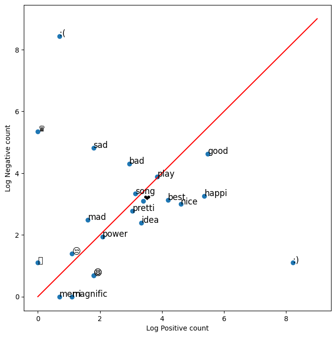

Building and Visualizing word frequencies#
In this lab, we will focus on the build_freqs() helper function and visualizing a dataset fed into it. In our goal of tweet sentiment analysis, this function will build a dictionary where we can lookup how many times a word appears in the lists of positive or negative tweets. This will be very helpful when extracting the features of the dataset in the week’s programming assignment. Let’s see how this function is implemented under the hood in this notebook.
Setup#
Let’s import the required libraries for this lab:
import nltk # Python library for NLP
from nltk.corpus import twitter_samples # sample Twitter dataset from NLTK
import matplotlib.pyplot as plt # visualization library
import numpy as np # library for scientific computing and matrix operations
nltk.download('twitter_samples')
[nltk_data] Downloading package twitter_samples to
[nltk_data] C:\Users\sangouda\AppData\Roaming\nltk_data...
[nltk_data] Package twitter_samples is already up-to-date!
True
Import some helper functions that we provided in the utils.py file:#
process_tweet(): Cleans the text, tokenizes it into separate words, removes stopwords, and converts words to stems.build_freqs(): This counts how often a word in the ‘corpus’ (the entire set of tweets) was associated with a positive label1or a negative label0. It then builds thefreqsdictionary, where each key is a(word,label)tuple, and the value is the count of its frequency within the corpus of tweets.
# download the stopwords for the process_tweet function
nltk.download('stopwords')
# import our convenience functions
from utils import process_tweet, build_freqs
[nltk_data] Downloading package stopwords to
[nltk_data] C:\Users\sangouda\AppData\Roaming\nltk_data...
[nltk_data] Package stopwords is already up-to-date!
Load the NLTK sample dataset#
As in the previous lab, we will be using the Twitter dataset from NLTK.
# select the lists of positive and negative tweets
all_positive_tweets = twitter_samples.strings('positive_tweets.json')
all_negative_tweets = twitter_samples.strings('negative_tweets.json')
# concatenate the lists, 1st part is the positive tweets followed by the negative
tweets = all_positive_tweets + all_negative_tweets
# let's see how many tweets we have
print("Number of tweets: ", len(tweets))
Number of tweets: 10000
Next, we will build an array of labels that matches the sentiments of our tweets. This data type works pretty much like a regular list but is optimized for computations and manipulation. The labels array will be composed of 10000 elements. The first 5000 will be filled with 1 labels denoting positive sentiments, and the next 5000 will be 0 labels denoting the opposite. We can do this easily with a series of operations provided by the numpy library:
np.ones()- create an array of 1’snp.zeros()- create an array of 0’snp.append()- concatenate arrays
# make a numpy array representing labels of the tweets
labels = np.append(np.ones((len(all_positive_tweets))), np.zeros((len(all_negative_tweets))))
Dictionaries#
In Python, a dictionary is a mutable and indexed collection. It stores items as key-value pairs and uses hash tables underneath to allow practically constant time lookups. In NLP, dictionaries are essential because it enables fast retrieval of items or containment checks even with thousands of entries in the collection.
Definition#
A dictionary in Python is declared using curly brackets. Look at the next example:
dictionary = {'key1': 1, 'key2': 2}
The former line defines a dictionary with two entries. Keys and values can be almost any type (with a few restriction on keys), and in this case, we used strings. We can also use floats, integers, tuples, etc.
Adding or editing entries#
New entries can be inserted into dictionaries using square brackets. If the dictionary already contains the specified key, its value is overwritten.
# Add a new entry
dictionary['key3'] = -5
# Overwrite the value of key1
dictionary['key1'] = 0
print(dictionary)
{'key1': 0, 'key2': 2, 'key3': -5}
Accessing values and lookup keys#
Performing dictionary lookups and retrieval are common tasks in NLP. There are two ways to do this:
Using square bracket notation: This form is allowed if the lookup key is in the dictionary. It produces an error otherwise.
Using the get() method: This allows us to set a default value if the dictionary key does not exist.
Let us see these in action:
# Square bracket lookup when the key exist
print(dictionary['key2'])
2
However, if the key is missing, the operation produce an error
# The output of this line is intended to produce a KeyError
# print(dictionary['key8'])
When using a square bracket lookup, it is common to use an if-else block to check for containment first (with the keyword in) before getting the item. On the other hand, you can use the .get() method if you want to set a default value when the key is not found. Let’s compare these in the cells below:
# This prints a value
if 'key1' in dictionary:
print("item found: ", dictionary['key1'])
else:
print('key1 is not defined')
# Same as what you get with get
print("item found: ", dictionary.get('key1', -1))
item found: 0
item found: 0
# This prints a message because the key is not found
if 'key7' in dictionary:
print(dictionary['key7'])
else:
print('key does not exist!')
# This prints -1 because the key is not found and we set the default to -1
print(dictionary.get('key7', -1))
key does not exist!
-1
Word frequency dictionary#
Now that we know the building blocks, let’s finally take a look at the build_freqs() function in utils.py. This is the function that creates the dictionary containing the word counts from each corpus.
def build_freqs(tweets, ys):
"""Build frequencies.
Input:
tweets: a list of tweets
ys: an m x 1 array with the sentiment label of each tweet
(either 0 or 1)
Output:
freqs: a dictionary mapping each (word, sentiment) pair to its
frequency
"""
# Convert np array to list since zip needs an iterable.
# The squeeze is necessary or the list ends up with one element.
# Also note that this is just a NOP if ys is already a list.
yslist = np.squeeze(ys).tolist()
# Start with an empty dictionary and populate it by looping over all tweets
# and over all processed words in each tweet.
freqs = {}
for y, tweet in zip(yslist, tweets):
for word in process_tweet(tweet):
pair = (word, y)
if pair in freqs:
freqs[pair] += 1
else:
freqs[pair] = 1
return freqs
You can also do the for loop like this to make it a bit more compact:
for y, tweet in zip(yslist, tweets):
for word in process_tweet(tweet):
pair = (word, y)
freqs[pair] = freqs.get(pair, 0) + 1
As shown above, each key is a 2-element tuple containing a (word, y) pair. The word is an element in a processed tweet while y is an integer representing the corpus: 1 for the positive tweets and 0 for the negative tweets. The value associated with this key is the number of times that word appears in the specified corpus. For example:
# "followfriday" appears 25 times in the positive tweets
('followfriday', 1.0): 25
# "shame" appears 19 times in the negative tweets
('shame', 0.0): 19
Now, it is time to use the dictionary returned by the build_freqs() function. First, let us feed our tweets and labels lists then print a basic report:
# create frequency dictionary
freqs = build_freqs(tweets, labels)
# check data type
print(f'type(freqs) = {type(freqs)}')
# check length of the dictionary
print(f'len(freqs) = {len(freqs)}')
type(freqs) = <class 'dict'>
len(freqs) = 13141
Now print the frequency of each word depending on its class.
print(freqs)
{('followfriday', 1.0): 25, ('top', 1.0): 32, ('engag', 1.0): 7, ('member', 1.0): 16, ('commun', 1.0): 33, ('week', 1.0): 83, (':)', 1.0): 3691, ('hey', 1.0): 77, ('jame', 1.0): 7, ('odd', 1.0): 2, (':/', 1.0): 5, ('pleas', 1.0): 99, ('call', 1.0): 37, ('contact', 1.0): 7, ('centr', 1.0): 2, ('02392441234', 1.0): 1, ('abl', 1.0): 8, ('assist', 1.0): 1, ('mani', 1.0): 33, ('thank', 1.0): 643, ('listen', 1.0): 17, ('last', 1.0): 47, ('night', 1.0): 68, ('bleed', 1.0): 2, ('amaz', 1.0): 51, ('track', 1.0): 5, ('scotland', 1.0): 2, ('congrat', 1.0): 21, ('yeaaah', 1.0): 1, ('yipppi', 1.0): 1, ('accnt', 1.0): 2, ('verifi', 1.0): 2, ('rqst', 1.0): 1, ('succeed', 1.0): 1, ('got', 1.0): 69, ('blue', 1.0): 9, ('tick', 1.0): 1, ('mark', 1.0): 1, ('fb', 1.0): 6, ('profil', 1.0): 2, ('15', 1.0): 5, ('day', 1.0): 246, ('one', 1.0): 131, ('irresist', 1.0): 2, ('flipkartfashionfriday', 1.0): 17, ('like', 1.0): 233, ('keep', 1.0): 68, ('love', 1.0): 401, ('custom', 1.0): 4, ('wait', 1.0): 70, ('long', 1.0): 36, ('hope', 1.0): 143, ('enjoy', 1.0): 79, ('happi', 1.0): 212, ('friday', 1.0): 116, ('lwwf', 1.0): 1, ('second', 1.0): 10, ('thought', 1.0): 29, ('’', 1.0): 21, ('enough', 1.0): 18, ('time', 1.0): 128, ('dd', 1.0): 1, ('new', 1.0): 146, ('short', 1.0): 7, ('enter', 1.0): 9, ('system', 1.0): 2, ('sheep', 1.0): 1, ('must', 1.0): 19, ('buy', 1.0): 12, ('jgh', 1.0): 4, ('go', 1.0): 151, ('bayan', 1.0): 1, (':d', 1.0): 658, ('bye', 1.0): 8, ('act', 1.0): 8, ('mischiev', 1.0): 1, ('etl', 1.0): 1, ('layer', 1.0): 1, ('in-hous', 1.0): 1, ('wareh', 1.0): 1, ('app', 1.0): 16, ('katamari', 1.0): 1, ('well', 1.0): 81, ('…', 1.0): 38, ('name', 1.0): 18, ('impli', 1.0): 1, (':p', 1.0): 139, ('influenc', 1.0): 18, ('big', 1.0): 34, ('...', 1.0): 290, ('juici', 1.0): 3, ('selfi', 1.0): 12, ('follow', 1.0): 447, ('u', 1.0): 245, ('back', 1.0): 163, ('perfect', 1.0): 24, ('alreadi', 1.0): 28, ('know', 1.0): 155, ("what'", 1.0): 17, ('great', 1.0): 172, ('opportun', 1.0): 23, ('junior', 1.0): 2, ('triathlet', 1.0): 1, ('age', 1.0): 2, ('12', 1.0): 5, ('13', 1.0): 6, ('gatorad', 1.0): 1, ('seri', 1.0): 5, ('get', 1.0): 209, ('entri', 1.0): 4, ('lay', 1.0): 4, ('greet', 1.0): 5, ('card', 1.0): 8, ('rang', 1.0): 3, ('print', 1.0): 4, ('today', 1.0): 113, ('job', 1.0): 41, (':-)', 1.0): 701, ("friend'", 1.0): 3, ('lunch', 1.0): 5, ('yummm', 1.0): 1, ('nostalgia', 1.0): 1, ('tb', 1.0): 2, ('ku', 1.0): 1, ('id', 1.0): 8, ('conflict', 1.0): 1, ('help', 1.0): 44, ("here'", 1.0): 25, ('screenshot', 1.0): 3, ('work', 1.0): 111, ('hi', 1.0): 173, ('liv', 1.0): 2, ('hello', 1.0): 59, ('need', 1.0): 78, ('someth', 1.0): 28, ('fm', 1.0): 2, ('twitter', 1.0): 29, ('—', 1.0): 27, ('sure', 1.0): 59, ('thing', 1.0): 69, ('dm', 1.0): 39, ('x', 1.0): 72, ('heard', 1.0): 9, ('four', 1.0): 5, ('season', 1.0): 9, ('pretti', 1.0): 20, ('dope', 1.0): 2, ('penthous', 1.0): 1, ('obv', 1.0): 1, ('gobigorgohom', 1.0): 1, ('fun', 1.0): 58, ("y'all", 1.0): 4, ('yeah', 1.0): 47, ('suppos', 1.0): 7, ('lol', 1.0): 64, ('chat', 1.0): 13, ('bit', 1.0): 20, ('youth', 1.0): 19, ('💅🏽', 1.0): 1, ('💋', 1.0): 2, ('seen', 1.0): 10, ('year', 1.0): 43, ('rest', 1.0): 12, ('goe', 1.0): 7, ('quickli', 1.0): 3, ('bed', 1.0): 16, ('music', 1.0): 21, ('fix', 1.0): 10, ('dream', 1.0): 20, ('spiritu', 1.0): 1, ('ritual', 1.0): 1, ('festiv', 1.0): 8, ('népal', 1.0): 1, ('begin', 1.0): 4, ('line-up', 1.0): 4, ('left', 1.0): 13, ('see', 1.0): 186, ('sarah', 1.0): 4, ('send', 1.0): 23, ('us', 1.0): 115, ('email', 1.0): 26, ('bitsy@bitdefender.com', 1.0): 1, ('asap', 1.0): 5, ('kik', 1.0): 22, ('hatessuc', 1.0): 1, ('32429', 1.0): 1, ('kikm', 1.0): 1, ('lgbt', 1.0): 2, ('tinder', 1.0): 1, ('nsfw', 1.0): 1, ('akua', 1.0): 1, ('cumshot', 1.0): 1, ('come', 1.0): 71, ('hous', 1.0): 7, ('nsn_supplement', 1.0): 1, ('effect', 1.0): 4, ('press', 1.0): 1, ('releas', 1.0): 11, ('distribut', 1.0): 1, ('result', 1.0): 2, ('link', 1.0): 19, ('remov', 1.0): 3, ('pressreleas', 1.0): 1, ('newsdistribut', 1.0): 1, ('bam', 1.0): 44, ('bestfriend', 1.0): 50, ('lot', 1.0): 87, ('warsaw', 1.0): 44, ('<3', 1.0): 135, ('x46', 1.0): 1, ('everyon', 1.0): 58, ('watch', 1.0): 47, ('documentari', 1.0): 1, ('earthl', 1.0): 2, ('youtub', 1.0): 13, ('support', 1.0): 27, ('buuut', 1.0): 1, ('oh', 1.0): 53, ('look', 1.0): 139, ('forward', 1.0): 29, ('visit', 1.0): 30, ('next', 1.0): 48, ('letsgetmessi', 1.0): 1, ('jo', 1.0): 1, ('make', 1.0): 100, ('feel', 1.0): 46, ('better', 1.0): 52, ('never', 1.0): 37, ('anyon', 1.0): 11, ('kpop', 1.0): 1, ('flesh', 1.0): 1, ('good', 1.0): 238, ('girl', 1.0): 44, ('best', 1.0): 65, ('wish', 1.0): 37, ('reason', 1.0): 13, ('epic', 1.0): 2, ('soundtrack', 1.0): 1, ('shout', 1.0): 12, ('ad', 1.0): 14, ('video', 1.0): 35, ('playlist', 1.0): 5, ('im', 1.0): 54, ('twitch', 1.0): 8, ('leagu', 1.0): 6, ('1', 1.0): 79, ('4', 1.0): 26, ('would', 1.0): 84, ('dear', 1.0): 17, ('jordan', 1.0): 1, ('okay', 1.0): 39, ('fake', 1.0): 2, ('gameplay', 1.0): 2, (';)', 1.0): 27, ('haha', 1.0): 53, ('kid', 1.0): 18, ('stuff', 1.0): 13, ('exactli', 1.0): 6, ('product', 1.0): 12, ('line', 1.0): 6, ('etsi', 1.0): 1, ('shop', 1.0): 16, ('check', 1.0): 53, ('boxroomcraft', 1.0): 1, ('vacat', 1.0): 6, ('recharg', 1.0): 1, ('normal', 1.0): 6, ('charger', 1.0): 2, ('asleep', 1.0): 9, ('talk', 1.0): 46, ('sooo', 1.0): 6, ('someon', 1.0): 34, ('text', 1.0): 18, ('ye', 1.0): 77, ('bet', 1.0): 6, ('fit', 1.0): 3, ('hear', 1.0): 33, ('speech', 1.0): 1, ('piti', 1.0): 3, ('green', 1.0): 3, ('garden', 1.0): 7, ('midnight', 1.0): 1, ('sun', 1.0): 6, ('beauti', 1.0): 50, ('canal', 1.0): 1, ('dasvidaniya', 1.0): 1, ('till', 1.0): 18, ('scout', 1.0): 1, ('sg', 1.0): 1, ('futur', 1.0): 13, ('wlan', 1.0): 1, ('pro', 1.0): 5, ('confer', 1.0): 1, ('asia', 1.0): 1, ('chang', 1.0): 24, ('lollipop', 1.0): 1, ('🍭', 1.0): 1, ('nez', 1.0): 1, ('agnezmo', 1.0): 1, ('oley', 1.0): 1, ('mama', 1.0): 1, ('stand', 1.0): 8, ('stronger', 1.0): 1, ('god', 1.0): 20, ('misti', 1.0): 1, ('babi', 1.0): 20, ('cute', 1.0): 27, ('woohoo', 1.0): 3, ("can't", 1.0): 43, ('sign', 1.0): 11, ('yet', 1.0): 13, ('still', 1.0): 48, ('think', 1.0): 71, ('mka', 1.0): 5, ('liam', 1.0): 8, ('access', 1.0): 3, ('welcom', 1.0): 73, ('stat', 1.0): 60, ('arriv', 1.0): 67, ('unfollow', 1.0): 63, ('via', 1.0): 85, ('surpris', 1.0): 10, ('figur', 1.0): 5, ('happybirthdayemilybett', 1.0): 1, ('sweet', 1.0): 19, ('talent', 1.0): 5, ('2', 1.0): 58, ('plan', 1.0): 27, ('drain', 1.0): 1, ('gotta', 1.0): 5, ('timezon', 1.0): 1, ('parent', 1.0): 5, ('proud', 1.0): 12, ('least', 1.0): 16, ('mayb', 1.0): 18, ('sometim', 1.0): 13, ('grade', 1.0): 4, ('al', 1.0): 4, ('grand', 1.0): 4, ('manila_bro', 1.0): 2, ('chosen', 1.0): 1, ('let', 1.0): 83, ('around', 1.0): 17, ('..', 1.0): 129, ('side', 1.0): 15, ('world', 1.0): 27, ('eh', 1.0): 2, ('take', 1.0): 43, ('care', 1.0): 18, ('final', 1.0): 30, ('fuck', 1.0): 26, ('weekend', 1.0): 75, ('real', 1.0): 21, ('x45', 1.0): 1, ('join', 1.0): 23, ('hushedcallwithfraydo', 1.0): 1, ('gift', 1.0): 8, ('yeahhh', 1.0): 1, ('hushedpinwithsammi', 1.0): 2, ('event', 1.0): 9, ('might', 1.0): 27, ('luv', 1.0): 6, ('realli', 1.0): 79, ('appreci', 1.0): 31, ('share', 1.0): 46, ('wow', 1.0): 22, ('tom', 1.0): 6, ('3', 1.0): 33, ('gym', 1.0): 4, ('monday', 1.0): 9, ('invit', 1.0): 17, ('scope', 1.0): 5, ('friend', 1.0): 64, ('nude', 1.0): 2, ('sleep', 1.0): 45, ('birthday', 1.0): 74, ('want', 1.0): 98, ('t-shirt', 1.0): 3, ('cool', 1.0): 38, ('haw', 1.0): 1, ('phela', 1.0): 1, ('mom', 1.0): 10, ('obvious', 1.0): 2, ('princ', 1.0): 1, ('charm', 1.0): 1, ('stage', 1.0): 2, ('luck', 1.0): 30, ('tyler', 1.0): 2, ('hipster', 1.0): 1, ('glass', 1.0): 5, ('marti', 1.0): 2, ('glad', 1.0): 43, ('done', 1.0): 54, ('afternoon', 1.0): 10, ('read', 1.0): 35, ('kahfi', 1.0): 1, ('finish', 1.0): 17, ('ohmyg', 1.0): 1, ('yaya', 1.0): 3, ('dub', 1.0): 2, ('stalk', 1.0): 2, ('ig', 1.0): 3, ('gondooo', 1.0): 1, ('moo', 1.0): 2, ('tologooo', 1.0): 1, ('becom', 1.0): 10, ('detail', 1.0): 10, ('zzz', 1.0): 1, ('xx', 1.0): 42, ('physiotherapi', 1.0): 1, ('hashtag', 1.0): 5, ('💪', 1.0): 1, ('monica', 1.0): 1, ('miss', 1.0): 27, ('sound', 1.0): 23, ('morn', 1.0): 101, ("that'", 1.0): 67, ('x43', 1.0): 1, ('definit', 1.0): 23, ('tri', 1.0): 44, ('tonight', 1.0): 20, ('took', 1.0): 8, ('advic', 1.0): 6, ('treviso', 1.0): 1, ('concert', 1.0): 24, ('citi', 1.0): 27, ('countri', 1.0): 23, ('start', 1.0): 61, ('fine', 1.0): 11, ('gorgeou', 1.0): 12, ('xo', 1.0): 2, ('oven', 1.0): 3, ('roast', 1.0): 2, ('garlic', 1.0): 1, ('oliv', 1.0): 1, ('oil', 1.0): 4, ('dri', 1.0): 5, ('tomato', 1.0): 1, ('basil', 1.0): 1, ('centuri', 1.0): 1, ('tuna', 1.0): 1, ('right', 1.0): 47, ('atchya', 1.0): 1, ('even', 1.0): 35, ('almost', 1.0): 10, ('chanc', 1.0): 6, ('cheer', 1.0): 21, ('po', 1.0): 4, ('ice', 1.0): 6, ('cream', 1.0): 6, ('agre', 1.0): 16, ('100', 1.0): 8, ('heheheh', 1.0): 2, ('that', 1.0): 13, ('point', 1.0): 13, ('stay', 1.0): 26, ('home', 1.0): 31, ('soon', 1.0): 47, ('promis', 1.0): 6, ('web', 1.0): 4, ('whatsapp', 1.0): 5, ('volta', 1.0): 1, ('funcionar', 1.0): 1, ('com', 1.0): 2, ('iphon', 1.0): 7, ('jailbroken', 1.0): 1, ('later', 1.0): 17, ('34', 1.0): 3, ('min', 1.0): 9, ('leia', 1.0): 1, ('appear', 1.0): 3, ('hologram', 1.0): 1, ('r2d2', 1.0): 1, ('w', 1.0): 18, ('messag', 1.0): 10, ('obi', 1.0): 1, ('wan', 1.0): 3, ('sit', 1.0): 8, ('luke', 1.0): 6, ('inter', 1.0): 1, ('ucl', 1.0): 1, ('arsen', 1.0): 2, ('small', 1.0): 5, ('team', 1.0): 29, ('pass', 1.0): 12, ('🚂', 1.0): 1, ('dewsburi', 1.0): 2, ('railway', 1.0): 1, ('station', 1.0): 4, ('dew', 1.0): 1, ('west', 1.0): 3, ('yorkshir', 1.0): 2, ('430', 1.0): 1, ('smh', 1.0): 2, ('9:25', 1.0): 1, ('live', 1.0): 28, ('strang', 1.0): 4, ('imagin', 1.0): 5, ('megan', 1.0): 1, ('masaantoday', 1.0): 6, ('a4', 1.0): 3, ('shweta', 1.0): 1, ('tripathi', 1.0): 1, ('5', 1.0): 17, ('20', 1.0): 6, ('kurta', 1.0): 3, ('half', 1.0): 7, ('number', 1.0): 13, ('wsalelov', 1.0): 16, ('ah', 1.0): 13, ('larri', 1.0): 3, ('anyway', 1.0): 16, ('kinda', 1.0): 13, ('goood', 1.0): 4, ('life', 1.0): 49, ('enn', 1.0): 1, ('could', 1.0): 32, ('warmup', 1.0): 1, ('15th', 1.0): 2, ('bath', 1.0): 7, ('dum', 1.0): 2, ('andar', 1.0): 1, ('ram', 1.0): 1, ('sampath', 1.0): 1, ('sona', 1.0): 1, ('mohapatra', 1.0): 1, ('samantha', 1.0): 1, ('edward', 1.0): 1, ('mein', 1.0): 1, ('tulan', 1.0): 1, ('razi', 1.0): 2, ('wah', 1.0): 2, ('josh', 1.0): 1, ('alway', 1.0): 67, ('smile', 1.0): 62, ('pictur', 1.0): 12, ('16.20', 1.0): 1, ('giveitup', 1.0): 1, ('given', 1.0): 3, ('ga', 1.0): 3, ('subsidi', 1.0): 1, ('initi', 1.0): 4, ('propos', 1.0): 3, ('delight', 1.0): 7, ('yesterday', 1.0): 7, ('x42', 1.0): 1, ('lmaoo', 1.0): 2, ('song', 1.0): 22, ('ever', 1.0): 23, ('shall', 1.0): 6, ('littl', 1.0): 31, ('throwback', 1.0): 3, ('outli', 1.0): 1, ('island', 1.0): 5, ('cheung', 1.0): 1, ('chau', 1.0): 1, ('mui', 1.0): 1, ('wo', 1.0): 1, ('total', 1.0): 10, ('differ', 1.0): 11, ('kfckitchentour', 1.0): 2, ('kitchen', 1.0): 4, ('clean', 1.0): 1, ('cusp', 1.0): 1, ('test', 1.0): 7, ('water', 1.0): 8, ('reward', 1.0): 1, ('arummzz', 1.0): 2, ("let'", 1.0): 25, ('drive', 1.0): 11, ('travel', 1.0): 20, ('yogyakarta', 1.0): 3, ('jeep', 1.0): 3, ('indonesia', 1.0): 4, ('instamood', 1.0): 3, ('wanna', 1.0): 30, ('skype', 1.0): 3, ('may', 1.0): 22, ('nice', 1.0): 99, ('friendli', 1.0): 2, ('pretend', 1.0): 2, ('film', 1.0): 9, ('congratul', 1.0): 15, ('winner', 1.0): 4, ('cheesydelight', 1.0): 1, ('contest', 1.0): 6, ('address', 1.0): 10, ('guy', 1.0): 60, ('market', 1.0): 5, ('24/7', 1.0): 1, ('regret', 1.0): 5, ('14', 1.0): 1, ('hour', 1.0): 27, ('leav', 1.0): 13, ('without', 1.0): 12, ('delay', 1.0): 2, ('actual', 1.0): 19, ('easi', 1.0): 9, ('guess', 1.0): 14, ('train', 1.0): 10, ('wd', 1.0): 1, ('shift', 1.0): 5, ('engin', 1.0): 2, ('etc', 1.0): 2, ('sunburn', 1.0): 1, ('peel', 1.0): 2, ('blog', 1.0): 31, ('huge', 1.0): 11, ('warm', 1.0): 6, ('☆', 1.0): 3, ('complet', 1.0): 11, ('triangl', 1.0): 2, ('northern', 1.0): 1, ('ireland', 1.0): 2, ('sight', 1.0): 1, ('smthng', 1.0): 2, ('fr', 1.0): 3, ('hug', 1.0): 13, ('xoxo', 1.0): 3, ('uu', 1.0): 1, ('jaann', 1.0): 1, ('topnewfollow', 1.0): 2, ('connect', 1.0): 14, ('wonder', 1.0): 35, ('made', 1.0): 53, ('fluffi', 1.0): 1, ('insid', 1.0): 8, ('pirouett', 1.0): 1, ('moos', 1.0): 1, ('trip', 1.0): 14, ('philli', 1.0): 1, ('decemb', 1.0): 3, ('dude', 1.0): 6, ('x41', 1.0): 1, ('question', 1.0): 17, ('flaw', 1.0): 1, ('pain', 1.0): 9, ('negat', 1.0): 1, ('strength', 1.0): 3, ('went', 1.0): 12, ('solo', 1.0): 4, ('move', 1.0): 12, ('fav', 1.0): 13, ('nirvana', 1.0): 1, ('smell', 1.0): 2, ('teen', 1.0): 3, ('spirit', 1.0): 3, ('rip', 1.0): 3, ('ami', 1.0): 4, ('winehous', 1.0): 1, ('coupl', 1.0): 9, ('tomhiddleston', 1.0): 1, ('elizabetholsen', 1.0): 1, ('yaytheylookgreat', 1.0): 1, ('goodnight', 1.0): 24, ('vid', 1.0): 11, ('wake', 1.0): 12, ('gonna', 1.0): 21, ('shoot', 1.0): 6, ('itti', 1.0): 2, ('bitti', 1.0): 2, ('teeni', 1.0): 2, ('bikini', 1.0): 3, ('much', 1.0): 89, ('4th', 1.0): 4, ('togeth', 1.0): 7, ('end', 1.0): 20, ('xfile', 1.0): 1, ('content', 1.0): 4, ('rain', 1.0): 21, ('fabul', 1.0): 5, ('fantast', 1.0): 14, ('♡', 1.0): 20, ('jb', 1.0): 1, ('forev', 1.0): 5, ('belieb', 1.0): 3, ('nighti', 1.0): 1, ('bug', 1.0): 3, ('bite', 1.0): 1, ('bracelet', 1.0): 2, ('idea', 1.0): 27, ('foundri', 1.0): 1, ('game', 1.0): 27, ('sens', 1.0): 7, ('pic', 1.0): 27, ('ef', 1.0): 1, ('phone', 1.0): 19, ('woot', 1.0): 2, ('derek', 1.0): 1, ('use', 1.0): 44, ('parkshar', 1.0): 1, ('gloucestershir', 1.0): 1, ('aaaahhh', 1.0): 1, ('man', 1.0): 23, ('traffic', 1.0): 2, ('stress', 1.0): 8, ('reliev', 1.0): 1, ("how'r", 1.0): 1, ('arbeloa', 1.0): 1, ('turn', 1.0): 16, ('17', 1.0): 4, ('omg', 1.0): 15, ('say', 1.0): 61, ('europ', 1.0): 1, ('rise', 1.0): 2, ('find', 1.0): 25, ('hard', 1.0): 12, ('believ', 1.0): 9, ('uncount', 1.0): 1, ('coz', 1.0): 3, ('unlimit', 1.0): 1, ('cours', 1.0): 18, ('teamposit', 1.0): 1, ('aldub', 1.0): 2, ('☕', 1.0): 3, ('rita', 1.0): 2, ('info', 1.0): 14, ('way', 1.0): 46, ('boy', 1.0): 21, ('x40', 1.0): 1, ('true', 1.0): 22, ('sethi', 1.0): 2, ('high', 1.0): 7, ('exe', 1.0): 1, ('skeem', 1.0): 1, ('saam', 1.0): 1, ('peopl', 1.0): 49, ('polit', 1.0): 2, ('izzat', 1.0): 1, ('wese', 1.0): 1, ('trust', 1.0): 9, ('khawateen', 1.0): 1, ('k', 1.0): 9, ('sath', 1.0): 2, ('mana', 1.0): 1, ('kar', 1.0): 1, ('deya', 1.0): 1, ('sort', 1.0): 9, ('smart', 1.0): 5, ('hair', 1.0): 12, ('tbh', 1.0): 5, ('jacob', 1.0): 2, ('g', 1.0): 11, ('upgrad', 1.0): 6, ('tee', 1.0): 3, ('famili', 1.0): 19, ('person', 1.0): 19, ('two', 1.0): 22, ('convers', 1.0): 6, ('onlin', 1.0): 7, ('mclaren', 1.0): 1, ('fridayfeel', 1.0): 5, ('tgif', 1.0): 10, ('squar', 1.0): 1, ('enix', 1.0): 1, ('bissmillah', 1.0): 1, ('ya', 1.0): 23, ('allah', 1.0): 3, ('socent', 1.0): 1, ('startup', 1.0): 3, ('drop', 1.0): 9, ('your', 1.0): 3, ('arnd', 1.0): 1, ('town', 1.0): 5, ('basic', 1.0): 4, ('piss', 1.0): 3, ('cup', 1.0): 4, ('also', 1.0): 36, ('terribl', 1.0): 2, ('complic', 1.0): 1, ('discuss', 1.0): 3, ('snapchat', 1.0): 36, ('lynettelow', 1.0): 1, ('kikmenow', 1.0): 3, ('snapm', 1.0): 2, ('hot', 1.0): 24, ('amazon', 1.0): 1, ('kikmeguy', 1.0): 3, ('defin', 1.0): 2, ('grow', 1.0): 7, ('sport', 1.0): 4, ('rt', 1.0): 12, ('rakyat', 1.0): 1, ('write', 1.0): 13, ('sinc', 1.0): 15, ('mention', 1.0): 24, ('fli', 1.0): 5, ('fish', 1.0): 4, ('promot', 1.0): 5, ('post', 1.0): 21, ('cyber', 1.0): 1, ('ourdaughtersourprid', 1.0): 5, ('mypapamyprid', 1.0): 2, ('papa', 1.0): 2, ('coach', 1.0): 2, ('posit', 1.0): 8, ('kha', 1.0): 1, ('atleast', 1.0): 2, ('x39', 1.0): 1, ('mango', 1.0): 1, ("lassi'", 1.0): 1, ("monty'", 1.0): 1, ('marvel', 1.0): 2, ('though', 1.0): 19, ('suspect', 1.0): 3, ('meant', 1.0): 3, ('24', 1.0): 4, ('hr', 1.0): 2, ('touch', 1.0): 15, ('kepler', 1.0): 4, ('452b', 1.0): 5, ('chalna', 1.0): 1, ('hai', 1.0): 11, ('thankyou', 1.0): 14, ('hazel', 1.0): 1, ('food', 1.0): 11, ('brooklyn', 1.0): 1, ('pta', 1.0): 2, ('awak', 1.0): 10, ('okayi', 1.0): 2, ('awww', 1.0): 15, ('ha', 1.0): 23, ('doc', 1.0): 1, ('splendid', 1.0): 1, ('spam', 1.0): 1, ('folder', 1.0): 1, ('amount', 1.0): 1, ('nigeria', 1.0): 1, ('claim', 1.0): 1, ('rted', 1.0): 1, ('leg', 1.0): 5, ('hurt', 1.0): 8, ('bad', 1.0): 18, ('mine', 1.0): 14, ('saturday', 1.0): 8, ('thaaank', 1.0): 1, ('puhon', 1.0): 1, ('happinesss', 1.0): 1, ('tnc', 1.0): 1, ('prior', 1.0): 1, ('notif', 1.0): 2, ('probabl', 1.0): 10, ('funni', 1.0): 20, ('2:22', 1.0): 1, ('fat', 1.0): 1, ('co', 1.0): 1, ('ate', 1.0): 4, ('yuna', 1.0): 2, ('tamesid', 1.0): 1, ('´', 1.0): 3, ('googl', 1.0): 6, ('account', 1.0): 19, ('scouser', 1.0): 1, ('everyth', 1.0): 13, ('zoe', 1.0): 2, ('mate', 1.0): 7, ('liter', 1.0): 7, ('samee', 1.0): 1, ('edgar', 1.0): 1, ('updat', 1.0): 13, ('log', 1.0): 4, ('bring', 1.0): 19, ('abe', 1.0): 1, ('meet', 1.0): 34, ('x38', 1.0): 1, ('sigh', 1.0): 3, ('dreamili', 1.0): 1, ('pout', 1.0): 1, ('eye', 1.0): 14, ('quacketyquack', 1.0): 7, ('happen', 1.0): 16, ('phil', 1.0): 1, ('em', 1.0): 3, ('del', 1.0): 1, ('rodder', 1.0): 1, ('els', 1.0): 10, ('play', 1.0): 46, ('newest', 1.0): 1, ('gamejam', 1.0): 1, ('irish', 1.0): 2, ('literatur', 1.0): 2, ('inaccess', 1.0): 2, ("kareena'", 1.0): 2, ('fan', 1.0): 30, ('brain', 1.0): 13, ('dot', 1.0): 11, ('braindot', 1.0): 11, ('fair', 1.0): 6, ('rush', 1.0): 1, ('either', 1.0): 11, ('brandi', 1.0): 1, ('18', 1.0): 5, ('carniv', 1.0): 1, ('men', 1.0): 10, ('put', 1.0): 17, ('mask', 1.0): 3, ('xavier', 1.0): 1, ('forneret', 1.0): 1, ('jennif', 1.0): 1, ('site', 1.0): 9, ('free', 1.0): 38, ('50.000', 1.0): 3, ('8', 1.0): 12, ('ball', 1.0): 7, ('pool', 1.0): 5, ('coin', 1.0): 5, ('edit', 1.0): 7, ('trish', 1.0): 1, ('♥', 1.0): 19, ('grate', 1.0): 5, ('three', 1.0): 10, ('comment', 1.0): 9, ('wakeup', 1.0): 1, ('besid', 1.0): 2, ('dirti', 1.0): 2, ('sex', 1.0): 6, ('lmaooo', 1.0): 1, ('😤', 1.0): 2, ('loui', 1.0): 4, ('throw', 1.0): 3, ('caus', 1.0): 15, ('inspir', 1.0): 7, ('ff', 1.0): 48, ('twoof', 1.0): 3, ('gr8', 1.0): 1, ('wkend', 1.0): 3, ('kind', 1.0): 24, ('exhaust', 1.0): 2, ('word', 1.0): 20, ('cheltenham', 1.0): 1, ('area', 1.0): 4, ('kale', 1.0): 1, ('crisp', 1.0): 1, ('ruin', 1.0): 5, ('x37', 1.0): 1, ('open', 1.0): 12, ('worldwid', 1.0): 2, ('outta', 1.0): 1, ('sfvbeta', 1.0): 1, ('vantast', 1.0): 1, ('xcylin', 1.0): 1, ('bundl', 1.0): 1, ('show', 1.0): 28, ('internet', 1.0): 2, ('price', 1.0): 4, ('realisticli', 1.0): 1, ('pay', 1.0): 8, ('net', 1.0): 1, ('educ', 1.0): 1, ('power', 1.0): 7, ('weapon', 1.0): 1, ('nelson', 1.0): 1, ('mandela', 1.0): 1, ('recent', 1.0): 9, ('j', 1.0): 3, ('chenab', 1.0): 1, ('flow', 1.0): 5, ('pakistan', 1.0): 2, ('incredibleindia', 1.0): 1, ('teenchoic', 1.0): 10, ('choiceinternationalartist', 1.0): 9, ('superjunior', 1.0): 9, ('caught', 1.0): 4, ('first', 1.0): 50, ('salmon', 1.0): 3, ('super-blend', 1.0): 1, ('project', 1.0): 6, ('youth@bipolaruk.org.uk', 1.0): 1, ('awesom', 1.0): 42, ('stream', 1.0): 14, ('artist', 1.0): 2, ('alma', 1.0): 1, ('mater', 1.0): 1, ('highschoolday', 1.0): 1, ('clientvisit', 1.0): 1, ('faith', 1.0): 3, ('christian', 1.0): 1, ('school', 1.0): 10, ('lizaminnelli', 1.0): 1, ('upcom', 1.0): 2, ('uk', 1.0): 4, ('😄', 1.0): 5, ('singl', 1.0): 6, ('hill', 1.0): 4, ('everi', 1.0): 26, ('beat', 1.0): 10, ('wrong', 1.0): 10, ('readi', 1.0): 25, ('natur', 1.0): 1, ('pefumeri', 1.0): 1, ('workshop', 1.0): 3, ('neal', 1.0): 1, ('yard', 1.0): 1, ('covent', 1.0): 1, ('tomorrow', 1.0): 40, ('fback', 1.0): 27, ('indo', 1.0): 1, ('harmo', 1.0): 1, ('americano', 1.0): 1, ('rememb', 1.0): 16, ('aww', 1.0): 10, ('head', 1.0): 14, ('saw', 1.0): 19, ('dark', 1.0): 6, ('plz', 1.0): 13, ('handshom', 1.0): 1, ('juga', 1.0): 1, ('hurray', 1.0): 1, ('hate', 1.0): 13, ('cant', 1.0): 15, ('decid', 1.0): 4, ('save', 1.0): 12, ('list', 1.0): 15, ('hiya', 1.0): 4, ('exec', 1.0): 1, ('loryn.good@lincs-chamber.co.uk', 1.0): 1, ('photo', 1.0): 19, ('thx', 1.0): 15, ('china', 1.0): 2, ('homosexu', 1.0): 1, ('hyungbot', 1.0): 1, ('give', 1.0): 48, ('fam', 1.0): 5, ('mind', 1.0): 23, ('timetunnel', 1.0): 1, ('1982', 1.0): 1, ('quit', 1.0): 13, ('radio', 1.0): 5, ('set', 1.0): 11, ('heart', 1.0): 11, ('hiii', 1.0): 2, ('jack', 1.0): 3, ('ili', 1.0): 5, ('✨', 1.0): 4, ('domino', 1.0): 1, ('pub', 1.0): 1, ('heat', 1.0): 2, ('prob', 1.0): 5, ('sorri', 1.0): 22, ('hastili', 1.0): 1, ('type', 1.0): 6, ('came', 1.0): 7, ('pakistani', 1.0): 1, ('x36', 1.0): 1, ('3point', 1.0): 1, ('dreamteam', 1.0): 1, ('gooo', 1.0): 2, ('bailey', 1.0): 2, ('pbb', 1.0): 4, ('737gold', 1.0): 3, ('drank', 1.0): 2, ('old', 1.0): 13, ('gotten', 1.0): 2, ('1/2', 1.0): 1, ('welsh', 1.0): 1, ('wale', 1.0): 3, ('yippe', 1.0): 1, ('💟', 1.0): 4, ('bro', 1.0): 24, ('lord', 1.0): 4, ('michael', 1.0): 5, ("u'r", 1.0): 1, ('ure', 1.0): 1, ('bigot', 1.0): 1, ('usual', 1.0): 6, ('front', 1.0): 4, ('squat', 1.0): 1, ('dobar', 1.0): 1, ('dan', 1.0): 5, ('brand', 1.0): 8, ('heavi', 1.0): 2, ('musicolog', 1.0): 1, ('2015', 1.0): 16, ('spend', 1.0): 2, ('marathon', 1.0): 1, ('iflix', 1.0): 2, ('offici', 1.0): 10, ('graduat', 1.0): 3, ('cri', 1.0): 9, ('__', 1.0): 1, ('yep', 1.0): 9, ('expert', 1.0): 4, ('bisexu', 1.0): 1, ('minal', 1.0): 1, ('aidzin', 1.0): 1, ('yo', 1.0): 7, ('pi', 1.0): 1, ('cook', 1.0): 2, ('book', 1.0): 22, ('dinner', 1.0): 7, ('tough', 1.0): 2, ('choic', 1.0): 8, ('other', 1.0): 13, ('chill', 1.0): 6, ('smu', 1.0): 1, ('oval', 1.0): 1, ('basketbal', 1.0): 2, ('player', 1.0): 4, ('whahahaha', 1.0): 1, ('soamaz', 1.0): 1, ('moment', 1.0): 12, ('onto', 1.0): 3, ('a5', 1.0): 1, ('wardrob', 1.0): 2, ('user', 1.0): 3, ('teamr', 1.0): 1, ('appar', 1.0): 6, ('depend', 1.0): 2, ('greatli', 1.0): 1, ('design', 1.0): 21, ('ahhh', 1.0): 1, ('7th', 1.0): 1, ('cinepambata', 1.0): 1, ('mechan', 1.0): 1, ('form', 1.0): 4, ('download', 1.0): 10, ('sali', 1.0): 1, ('na', 1.0): 10, ('ur', 1.0): 39, ('swisher', 1.0): 1, ('cop', 1.0): 1, ('ducktail', 1.0): 1, ('surreal', 1.0): 3, ('exposur', 1.0): 1, ('sotw', 1.0): 1, ('jingli', 1.0): 1, ('jangli', 1.0): 1, ('loveli', 1.0): 1, ('halesowen', 1.0): 1, ('blackcountryfair', 1.0): 1, ('street', 1.0): 1, ('assess', 1.0): 1, ('mental', 1.0): 4, ('bodi', 1.0): 15, ('ooz', 1.0): 1, ('appeal', 1.0): 1, ('amassiveoverdoseofship', 1.0): 1, ('latest', 1.0): 5, ('isi', 1.0): 1, ('chan', 1.0): 1, ('c', 1.0): 9, ('note', 1.0): 6, ('pkwalasawa', 1.0): 1, ('gemma', 1.0): 1, ('orlean', 1.0): 1, ('fever', 1.0): 2, ('geskenya', 1.0): 1, ('obamainkenya', 1.0): 1, ('magicalkenya', 1.0): 1, ('greatkenya', 1.0): 1, ('allgoodthingsk', 1.0): 1, ('anim', 1.0): 6, ('umaru', 1.0): 1, ('singer', 1.0): 4, ('ship', 1.0): 8, ('order', 1.0): 17, ('room', 1.0): 5, ('car', 1.0): 6, ('gone', 1.0): 5, ('hahaha', 1.0): 14, ('stori', 1.0): 11, ('relat', 1.0): 4, ('label', 1.0): 1, ('worst', 1.0): 3, ('batch', 1.0): 1, ('princip', 1.0): 1, ('due', 1.0): 3, ('march', 1.0): 1, ('wooftast', 1.0): 2, ('receiv', 1.0): 8, ('necessari', 1.0): 1, ('rn', 1.0): 4, ('whatev', 1.0): 5, ('hat', 1.0): 1, ('success', 1.0): 6, ('abstin', 1.0): 1, ('wtf', 1.0): 3, ("there'", 1.0): 11, ('thrown', 1.0): 1, ('middl', 1.0): 2, ('repeat', 1.0): 3, ('relentlessli', 1.0): 1, ('approxim', 1.0): 1, ('oldschool', 1.0): 1, ('runescap', 1.0): 1, ('daaay', 1.0): 1, ('jumma_mubarik', 1.0): 1, ('frnd', 1.0): 1, ('stay_bless', 1.0): 1, ('bless', 1.0): 12, ('pussycat', 1.0): 1, ('main', 1.0): 7, ('launch', 1.0): 5, ('pretoria', 1.0): 1, ('fahrinahmad', 1.0): 1, ('tengkuaaronshah', 1.0): 1, ('eksperimencinta', 1.0): 1, ('tykkäsin', 1.0): 1, ('videosta', 1.0): 1, ('200sub', 1.0): 1, ('special', 1.0): 9, ('15e', 1.0): 1, ('paysafecard', 1.0): 1, ('giveaway', 1.0): 9, ('lue', 1.0): 1, ('desc', 1.0): 1, ('month', 1.0): 13, ('hoodi', 1.0): 2, ('eeep', 1.0): 1, ('yay', 1.0): 16, ('sohappyrightnow', 1.0): 1, ('mmm', 1.0): 1, ('azz-set', 1.0): 1, ('babe', 1.0): 9, ('feedback', 1.0): 11, ('gain', 1.0): 6, ('valu', 1.0): 2, ('peac', 1.0): 8, ('refresh', 1.0): 5, ('manthan', 1.0): 1, ('tune', 1.0): 5, ('fresh', 1.0): 6, ('mother', 1.0): 5, ('determin', 1.0): 2, ('maxfreshmov', 1.0): 2, ('loneliest', 1.0): 1, ('tattoo', 1.0): 3, ('friday.and', 1.0): 1, ('magnific', 1.0): 2, ('e', 1.0): 6, ('achiev', 1.0): 2, ('rashmi', 1.0): 1, ('dedic', 1.0): 2, ('happyfriday', 1.0): 6, ('nearli', 1.0): 4, ('retweet', 1.0): 48, ('alert', 1.0): 1, ('da', 1.0): 5, ('dang', 1.0): 2, ('rad', 1.0): 2, ('fanart', 1.0): 1, ('massiv', 1.0): 1, ('niamh', 1.0): 1, ('fennel', 1.0): 1, ('journal', 1.0): 1, ('land', 1.0): 2, ('copi', 1.0): 5, ('past', 1.0): 7, ('tweet', 1.0): 65, ('yesss', 1.0): 5, ('ariana', 1.0): 2, ('selena', 1.0): 2, ('gomez', 1.0): 1, ('tomlinson', 1.0): 1, ('payn', 1.0): 1, ('caradelevingn', 1.0): 1, ('🌷', 1.0): 1, ('trade', 1.0): 3, ('tire', 1.0): 5, ('nope', 1.0): 7, ('appli', 1.0): 6, ('iamca', 1.0): 1, ('found', 1.0): 15, ('afti', 1.0): 1, ('goodmorn', 1.0): 8, ('prokabaddi', 1.0): 1, ('koel', 1.0): 1, ('mallick', 1.0): 1, ('recit', 1.0): 4, ('nation', 1.0): 3, ('anthem', 1.0): 1, ('6', 1.0): 23, ('yournaturallead', 1.0): 1, ('youngnaturallead', 1.0): 1, ('mon', 1.0): 3, ('27juli', 1.0): 1, ('cumbria', 1.0): 1, ('flockstar', 1.0): 1, ('thur', 1.0): 2, ('30juli', 1.0): 1, ('itv', 1.0): 1, ('sleeptight', 1.0): 1, ('haveagoodday', 1.0): 1, ('septemb', 1.0): 5, ('perhap', 1.0): 3, ('bb', 1.0): 4, ('full', 1.0): 19, ('album', 1.0): 6, ('fulli', 1.0): 2, ('intend', 1.0): 1, ('possibl', 1.0): 7, ('attack', 1.0): 3, ('>:d', 1.0): 4, ('bird', 1.0): 4, ('teamadmicro', 1.0): 1, ('fridaydownpour', 1.0): 1, ('clear', 1.0): 4, ('rohit', 1.0): 1, ('queen', 1.0): 8, ('otwolgrandtrail', 1.0): 3, ('sheer', 1.0): 1, ('fact', 1.0): 8, ('obama', 1.0): 1, ('innumer', 1.0): 1, ('presid', 1.0): 2, ('ni', 1.0): 3, ('shauri', 1.0): 1, ('yako', 1.0): 1, ('memotohat', 1.0): 1, ('sunday', 1.0): 10, ('pamper', 1.0): 2, ("t'wa", 1.0): 1, ('cabincrew', 1.0): 1, ('interview', 1.0): 5, ('langkawi', 1.0): 1, ('1st', 1.0): 1, ('august', 1.0): 7, ('fulfil', 1.0): 5, ('fantasi', 1.0): 6, ('👉', 1.0): 6, ('👈', 1.0): 6, ('💖', 1.0): 3, ('ex-tweleb', 1.0): 1, ('apart', 1.0): 2, ('makeov', 1.0): 1, ('factori', 1.0): 1, ('brilliantli', 1.0): 1, ('happyyi', 1.0): 1, ('birthdaaayyy', 1.0): 2, ('kill', 1.0): 3, ('interest', 1.0): 21, ('internship', 1.0): 3, ('program', 1.0): 5, ('sadli', 1.0): 1, ('career', 1.0): 3, ('page', 1.0): 9, ('issu', 1.0): 11, ('sad', 1.0): 5, ('overwhelmingli', 1.0): 1, ('aha', 1.0): 2, ('beaut', 1.0): 2, ('♬', 1.0): 2, ('win', 1.0): 16, ('deo', 1.0): 1, ('faaabul', 1.0): 1, ('freebiefriday', 1.0): 4, ('aluminiumfre', 1.0): 1, ('stayfresh', 1.0): 1, ('john', 1.0): 6, ('worri', 1.0): 18, ('navig', 1.0): 1, ('thnk', 1.0): 1, ('progrmr', 1.0): 1, ('9pm', 1.0): 1, ('9am', 1.0): 2, ('hardli', 1.0): 1, ('rose', 1.0): 4, ('emot', 1.0): 3, ('poetri', 1.0): 1, ('frequentfly', 1.0): 1, ('break', 1.0): 10, ('apolog', 1.0): 4, ('kb', 1.0): 1, ('londondairi', 1.0): 1, ('icecream', 1.0): 4, ('experi', 1.0): 7, ('cover', 1.0): 9, ('sin', 1.0): 1, ('excit', 1.0): 33, (":')", 1.0): 2, ('xxx', 1.0): 15, ('jim', 1.0): 1, ('chuckl', 1.0): 1, ('cake', 1.0): 10, ('doh', 1.0): 1, ('500', 1.0): 2, ('subscrib', 1.0): 2, ('reach', 1.0): 1, ('scorch', 1.0): 1, ('summer', 1.0): 18, ('younger', 1.0): 4, ('woman', 1.0): 4, ('stamina', 1.0): 1, ('expect', 1.0): 6, ('anyth', 1.0): 22, ('less', 1.0): 8, ('tweeti', 1.0): 1, ('fab', 1.0): 12, ('dont', 1.0): 13, ('-->', 1.0): 2, ('10', 1.0): 16, ('loner', 1.0): 3, ('introduc', 1.0): 3, ('vs', 1.0): 4, ('alter', 1.0): 1, ('understand', 1.0): 6, ('spread', 1.0): 8, ('problem', 1.0): 19, ('supa', 1.0): 1, ('dupa', 1.0): 1, ('near', 1.0): 6, ('dartmoor', 1.0): 1, ('gold', 1.0): 7, ('colour', 1.0): 5, ('ok', 1.0): 38, ('someday', 1.0): 4, ('r', 1.0): 14, ('dii', 1.0): 1, ('n', 1.0): 17, ('forget', 1.0): 17, ('si', 1.0): 4, ('smf', 1.0): 1, ('ft', 1.0): 4, ('japanes', 1.0): 3, ('import', 1.0): 5, ('kitti', 1.0): 1, ('match', 1.0): 6, ('stationari', 1.0): 1, ('draw', 1.0): 6, ('close', 1.0): 14, ('broken', 1.0): 3, ('specialis', 1.0): 4, ('thermal', 1.0): 4, ('imag', 1.0): 6, ('survey', 1.0): 4, ('–', 1.0): 14, ('south', 1.0): 2, ('korea', 1.0): 3, ('scamper', 1.0): 1, ('slept', 1.0): 4, ('alarm', 1.0): 1, ("ain't", 1.0): 5, ('mad', 1.0): 4, ('chweina', 1.0): 1, ('xd', 1.0): 4, ('jotzh', 1.0): 1, ('wast', 1.0): 7, ('place', 1.0): 23, ('worth', 1.0): 11, ('coat', 1.0): 3, ('beforehand', 1.0): 1, ('tho', 1.0): 12, ('foh', 1.0): 2, ('outsid', 1.0): 5, ('holiday', 1.0): 11, ('menac', 1.0): 1, ('jojo', 1.0): 2, ('ta', 1.0): 2, ('accept', 1.0): 1, ('admin', 1.0): 2, ('lukri', 1.0): 1, ('😘', 1.0): 11, ('momma', 1.0): 2, ('bear', 1.0): 2, ('❤', 1.0): 29, ('️', 1.0): 20, ('redid', 1.0): 1, ('8th', 1.0): 1, ('v.ball', 1.0): 1, ('atm', 1.0): 4, ('build', 1.0): 8, ('pack', 1.0): 8, ('suitcas', 1.0): 2, ('hang-copi', 1.0): 1, ('translat', 1.0): 1, ("dostoevsky'", 1.0): 1, ('voucher', 1.0): 2, ('bugatti', 1.0): 1, ('bra', 1.0): 3, ('مطعم_هاشم', 1.0): 1, ('yummi', 1.0): 3, ('a7la', 1.0): 1, ('bdayt', 1.0): 1, ('mnwreeen', 1.0): 1, ('jazz', 1.0): 2, ('truck', 1.0): 1, ('x34', 1.0): 1, ('speak', 1.0): 8, ('pbevent', 1.0): 1, ('hq', 1.0): 1, ('add', 1.0): 22, ('yoona', 1.0): 1, ('hairpin', 1.0): 1, ('otp', 1.0): 1, ('collect', 1.0): 7, ('mastership', 1.0): 1, ('honey', 1.0): 4, ('paindo', 1.0): 1, ('await', 1.0): 1, ('report', 1.0): 3, ('manni', 1.0): 1, ('asshol', 1.0): 3, ('brijresid', 1.0): 1, ('structur', 1.0): 1, ('156', 1.0): 1, ('unit', 1.0): 3, ('encompass', 1.0): 1, ('bhk', 1.0): 1, ('flat', 1.0): 2, ('91', 1.0): 2, ('975-580-', 1.0): 1, ('444', 1.0): 1, ('honor', 1.0): 2, ('curri', 1.0): 2, ('clash', 1.0): 1, ('milano', 1.0): 1, ('👌', 1.0): 1, ('followback', 1.0): 6, (':-d', 1.0): 5, ('legit', 1.0): 1, ('loser', 1.0): 5, ('gass', 1.0): 1, ('dead', 1.0): 4, ('starsquad', 1.0): 4, ('⭐', 1.0): 3, ('news', 1.0): 25, ('utc', 1.0): 1, ('flume', 1.0): 1, ('kaytranada', 1.0): 1, ('alunageorg', 1.0): 1, ('ticket', 1.0): 12, ('km', 1.0): 1, ('certainti', 1.0): 1, ('solv', 1.0): 2, ('faster', 1.0): 3, ('👊', 1.0): 1, ('hurri', 1.0): 5, ('totem', 1.0): 1, ('somewher', 1.0): 5, ('alic', 1.0): 4, ('click', 1.0): 13, ('checkout', 1.0): 3, ('dog', 1.0): 7, ('cat', 1.0): 5, ('goodwynsgoodi', 1.0): 1, ('ugh', 1.0): 1, ('fade', 1.0): 3, ('moan', 1.0): 1, ('leed', 1.0): 1, ('jozi', 1.0): 1, ('wasnt', 1.0): 2, ('fifth', 1.0): 2, ('avail', 1.0): 11, ('tix', 1.0): 2, ('pa', 1.0): 2, ('ba', 1.0): 2, ('ng', 1.0): 2, ('atl', 1.0): 1, ('coldplay', 1.0): 1, ('favorit', 1.0): 14, ('scientist', 1.0): 1, ('yellow', 1.0): 2, ('atla', 1.0): 1, ('yein', 1.0): 1, ('selo', 1.0): 1, ('jabongatpumaurbanstamped', 1.0): 4, ('an', 1.0): 3, ('7', 1.0): 8, ('waiter', 1.0): 1, ('bill', 1.0): 5, ('sir', 1.0): 12, ('titl', 1.0): 2, ('pocket', 1.0): 1, ('wrip', 1.0): 1, ('jean', 1.0): 1, ('conni', 1.0): 2, ('crew', 1.0): 3, ('staff', 1.0): 2, ('sweetan', 1.0): 1, ('ask', 1.0): 37, ('mum', 1.0): 2, ('beg', 1.0): 2, ('soprano', 1.0): 1, ('ukrain', 1.0): 2, ('x33', 1.0): 1, ('olli', 1.0): 2, ('disney.art', 1.0): 1, ('elmoprinssi', 1.0): 1, ('salsa', 1.0): 1, ('danc', 1.0): 2, ('tell', 1.0): 25, ('truth', 1.0): 4, ('pl', 1.0): 8, ('4-6', 1.0): 1, ('2nd', 1.0): 5, ('blogiversari', 1.0): 1, ('review', 1.0): 9, ('cuti', 1.0): 6, ('bohol', 1.0): 1, ('briliant', 1.0): 1, ('v', 1.0): 9, ('key', 1.0): 3, ('annual', 1.0): 1, ('far', 1.0): 19, ('spin', 1.0): 2, ('voic', 1.0): 3, ('\U000fe334', 1.0): 1, ('yeheyi', 1.0): 1, ('pinya', 1.0): 1, ('whoooah', 1.0): 1, ('tranc', 1.0): 1, ('lover', 1.0): 4, ('subject', 1.0): 7, ('physic', 1.0): 1, ('stop', 1.0): 15, ('ब', 1.0): 1, ('matter', 1.0): 6, ('jungl', 1.0): 1, ('accommod', 1.0): 1, ('secret', 1.0): 9, ('behind', 1.0): 3, ('sandroforceo', 1.0): 2, ('ceo', 1.0): 11, ('1month', 1.0): 11, ('swag', 1.0): 1, ('mia', 1.0): 1, ('workinprogress', 1.0): 1, ('choos', 1.0): 2, ('finnigan', 1.0): 1, ('loyal', 1.0): 2, ('royal', 1.0): 2, ('fotoset', 1.0): 1, ('reus', 1.0): 1, ('seem', 1.0): 10, ('somebodi', 1.0): 1, ('sell', 1.0): 1, ('young', 1.0): 3, ('muntu', 1.0): 1, ('anoth', 1.0): 23, ('gem', 1.0): 2, ('falco', 1.0): 1, ('supersmash', 1.0): 1, ('hotnsexi', 1.0): 1, ('friskyfriday', 1.0): 1, ('beach', 1.0): 4, ('movi', 1.0): 24, ('crop', 1.0): 2, ('nash', 1.0): 1, ('tissu', 1.0): 1, ('chocol', 1.0): 7, ('tea', 1.0): 6, ('hannib', 1.0): 3, ('episod', 1.0): 5, ('hotb', 1.0): 1, ('bush', 1.0): 2, ('classicassur', 1.0): 1, ('thrill', 1.0): 2, ('intern', 1.0): 2, ('assign', 1.0): 1, ('aerial', 1.0): 1, ('camera', 1.0): 6, ('oper', 1.0): 1, ('boom', 1.0): 3, ('hong', 1.0): 1, ('kong', 1.0): 1, ('ferri', 1.0): 1, ('central', 1.0): 2, ('girlfriend', 1.0): 4, ('after-work', 1.0): 1, ('drink', 1.0): 8, ('dj', 1.0): 3, ('resto', 1.0): 1, ('drinkt', 1.0): 1, ('koffi', 1.0): 1, ('a6', 1.0): 1, ('stargat', 1.0): 1, ('atlanti', 1.0): 1, ('muaahhh', 1.0): 1, ('ohh', 1.0): 3, ('hii', 1.0): 2, ('🙈', 1.0): 1, ('di', 1.0): 5, ('nagsend', 1.0): 1, ('yung', 1.0): 1, ('ko', 1.0): 4, ('</3', 1.0): 1, ('ulit', 1.0): 3, ('🎉', 1.0): 5, ('🎈', 1.0): 1, ('ugli', 1.0): 4, ('legget', 1.0): 1, ('qui', 1.0): 1, ('per', 1.0): 1, ('la', 1.0): 8, ('mar', 1.0): 1, ('encourag', 1.0): 3, ('employ', 1.0): 5, ('board', 1.0): 5, ('stuck', 1.0): 6, ('poster', 1.0): 2, ('sticker', 1.0): 1, ('sponsor', 1.0): 4, ('prize', 1.0): 3, ('tablet', 1.0): 1, ('(:', 1.0): 1, ('milo', 1.0): 1, ('aurini', 1.0): 1, ('juicebro', 1.0): 1, ('pillar', 1.0): 2, ('respect', 1.0): 2, ('boii', 1.0): 1, ('smashingbook', 1.0): 1, ('bibl', 1.0): 2, ('ill', 1.0): 6, ('sick', 1.0): 4, ('lamo', 1.0): 1, ('fangirl', 1.0): 3, ('platon', 1.0): 1, ('scienc', 1.0): 5, ('resid', 1.0): 2, ('servicewithasmil', 1.0): 1, ('bloodlin', 1.0): 1, ('huski', 1.0): 1, ('obituari', 1.0): 1, ('advert', 1.0): 1, ('goofingaround', 1.0): 1, ('bollywood', 1.0): 1, ('dah', 1.0): 2, ('noth', 1.0): 15, ('bitter', 1.0): 2, ('anger', 1.0): 1, ('hatr', 1.0): 2, ('toward', 1.0): 2, ('pure', 1.0): 2, ('indiffer', 1.0): 1, ('suit', 1.0): 5, ('zach', 1.0): 1, ('codi', 1.0): 2, ('deliv', 1.0): 3, ('ac', 1.0): 1, ('excel', 1.0): 6, ('produc', 1.0): 1, ('boggl', 1.0): 1, ('fatigu', 1.0): 1, ('baareeq', 1.0): 1, ('gamedev', 1.0): 2, ('hobbi', 1.0): 1, ('tweenie_fox', 1.0): 1, ('accessori', 1.0): 1, ('tamang', 1.0): 1, ('hinala', 1.0): 1, ('niam', 1.0): 1, ('selfiee', 1.0): 1, ('especi', 1.0): 4, ('lass', 1.0): 1, ('ale', 1.0): 1, ('swim', 1.0): 3, ('bout', 1.0): 3, ('goodby', 1.0): 5, ('feminist', 1.0): 1, ('fought', 1.0): 1, ('snobbi', 1.0): 1, ('bitch', 1.0): 3, ('carolin', 1.0): 2, ('mighti', 1.0): 1, ('🔥', 1.0): 2, ('threw', 1.0): 2, ('hbd', 1.0): 1, ('follback', 1.0): 19, ('jog', 1.0): 1, ('remot', 1.0): 2, ('newli', 1.0): 1, ('ebay', 1.0): 2, ('store', 1.0): 15, ('disneyinfin', 1.0): 1, ('starwar', 1.0): 1, ('charact', 1.0): 3, ('preorder', 1.0): 1, ('starter', 1.0): 1, ('hit', 1.0): 13, ('snap', 1.0): 4, ('homi', 1.0): 3, ('bought', 1.0): 4, ('skin', 1.0): 8, ('bday', 1.0): 11, ('chant', 1.0): 2, ('jai', 1.0): 1, ('itali', 1.0): 2, ('fast', 1.0): 4, ('heeeyyy', 1.0): 1, ('woah', 1.0): 3, ('★', 1.0): 5, ('phew', 1.0): 1, ('overwhelm', 1.0): 2, ('😊', 1.0): 11, ('whenev', 1.0): 4, ('ang', 1.0): 2, ('kiss', 1.0): 4, ('philippin', 1.0): 2, ('packag', 1.0): 3, ('bruis', 1.0): 1, ('rib', 1.0): 2, ('😀', 1.0): 2, ('😁', 1.0): 6, ('😂', 1.0): 17, ('😃', 1.0): 2, ('😅', 1.0): 1, ('😉', 1.0): 2, ('tombraid', 1.0): 1, ('hype', 1.0): 1, ('thejuiceinthemix', 1.0): 1, ('rela', 1.0): 1, ('low', 1.0): 6, ('prioriti', 1.0): 1, ('harri', 1.0): 5, ('bc', 1.0): 9, ('collaps', 1.0): 2, ('chaotic', 1.0): 1, ('cosa', 1.0): 1, ('<---', 1.0): 2, ('alliter', 1.0): 1, ('oppayaa', 1.0): 1, ("how'", 1.0): 4, ('natgeo', 1.0): 1, ('lick', 1.0): 1, ('elbow', 1.0): 2, ('. .', 1.0): 2, ('“', 1.0): 7, ('emu', 1.0): 1, ('stoke', 1.0): 1, ('woke', 1.0): 5, ("people'", 1.0): 3, ('approv', 1.0): 6, ("god'", 1.0): 2, ('jisung', 1.0): 1, ('sunshin', 1.0): 7, ('mm', 1.0): 6, ('nicola', 1.0): 1, ('brighten', 1.0): 2, ('helen', 1.0): 3, ('brian', 1.0): 3, ('2-3', 1.0): 1, ('australia', 1.0): 5, ('ol', 1.0): 2, ('bone', 1.0): 1, ('creak', 1.0): 1, ('abuti', 1.0): 1, ('tweetland', 1.0): 1, ('android', 1.0): 5, ('xma', 1.0): 2, ('skyblock', 1.0): 1, ('bcaus', 1.0): 1, ('2009', 1.0): 1, ('die', 1.0): 10, ('sympathi', 1.0): 1, ('laugh', 1.0): 5, ('unniee', 1.0): 1, ('nuka', 1.0): 1, ('penacova', 1.0): 1, ('djset', 1.0): 1, ('edm', 1.0): 1, ('kizomba', 1.0): 1, ('latinhous', 1.0): 1, ('housemus', 1.0): 3, ('portug', 1.0): 1, ('wild', 1.0): 2, ('ride', 1.0): 7, ('anytim', 1.0): 6, ('tast', 1.0): 5, ('yer', 1.0): 2, ('mtn', 1.0): 2, ('maganda', 1.0): 1, ('mistress', 1.0): 2, ('saphir', 1.0): 1, ('busi', 1.0): 19, ('4000', 1.0): 1, ('instagram', 1.0): 7, ('among', 1.0): 5, ('coconut', 1.0): 1, ('sambal', 1.0): 1, ('mussel', 1.0): 1, ('recip', 1.0): 6, ('kalin', 1.0): 1, ('mixcloud', 1.0): 1, ('sarcasm', 1.0): 2, ('chelsea', 1.0): 3, ('he', 1.0): 2, ('useless', 1.0): 2, ('thursday', 1.0): 2, ('hang', 1.0): 3, ('hehe', 1.0): 10, ('said', 1.0): 16, ('benson', 1.0): 1, ('facebook', 1.0): 5, ('solid', 1.0): 1, ('16/17', 1.0): 1, ('30', 1.0): 3, ('°', 1.0): 1, ('😜', 1.0): 2, ('maryhick', 1.0): 1, ('kikmeboy', 1.0): 7, ('photooftheday', 1.0): 4, ('musicbiz', 1.0): 2, ('sheskindahot', 1.0): 1, ('fleekil', 1.0): 1, ('mbalula', 1.0): 1, ('africa', 1.0): 1, ('mexican', 1.0): 1, ('scar', 1.0): 1, ('offic', 1.0): 8, ('donut', 1.0): 2, ('foiegra', 1.0): 2, ('despit', 1.0): 2, ('weather', 1.0): 9, ('wed', 1.0): 5, ('toni', 1.0): 2, ('stark', 1.0): 1, ('incred', 1.0): 7, ('poem', 1.0): 2, ('bubbl', 1.0): 3, ('dale', 1.0): 1, ('billion', 1.0): 1, ('magic', 1.0): 5, ('op', 1.0): 3, ('cast', 1.0): 1, ('vote', 1.0): 9, ('elect', 1.0): 1, ('jcreport', 1.0): 1, ('piggin', 1.0): 1, ('botan', 1.0): 2, ('soap', 1.0): 4, ('late', 1.0): 13, ('upload', 1.0): 5, ('freshli', 1.0): 1, ('3week', 1.0): 1, ('heal', 1.0): 1, ('tobi-bro', 1.0): 1, ('isp', 1.0): 1, ('steel', 1.0): 1, ('wednesday', 1.0): 1, ('swear', 1.0): 3, ('met', 1.0): 4, ('earlier', 1.0): 4, ('cam', 1.0): 3, ('😭', 1.0): 2, ('except', 1.0): 2, ("masha'allah", 1.0): 1, ('french', 1.0): 5, ('wwat', 1.0): 2, ('franc', 1.0): 5, ('yaaay', 1.0): 3, ('beirut', 1.0): 2, ('coffe', 1.0): 11, ('panda', 1.0): 6, ('eonni', 1.0): 2, ('favourit', 1.0): 17, ('soda', 1.0): 1, ('fuller', 1.0): 1, ('shit', 1.0): 13, ('healthi', 1.0): 2, ('💓', 1.0): 3, ('rettweet', 1.0): 3, ('mvg', 1.0): 1, ('valuabl', 1.0): 1, ('madrid', 1.0): 3, ('sore', 1.0): 6, ('bergerac', 1.0): 1, ('u21', 1.0): 1, ('individu', 1.0): 2, ('adam', 1.0): 1, ("beach'", 1.0): 1, ('suicid', 1.0): 1, ('squad', 1.0): 1, ('fond', 1.0): 1, ('christoph', 1.0): 2, ('cocki', 1.0): 1, ('prove', 1.0): 3, ("attitude'", 1.0): 1, ('improv', 1.0): 3, ('suggest', 1.0): 6, ('date', 1.0): 12, ('inde', 1.0): 10, ('intellig', 1.0): 3, ('strong', 1.0): 7, ('cs', 1.0): 2, ('certain', 1.0): 2, ('exam', 1.0): 5, ('forgot', 1.0): 3, ('home-bas', 1.0): 1, ('knee', 1.0): 4, ('sale', 1.0): 3, ('fleur', 1.0): 1, ('dress', 1.0): 10, ('readystock_hijabmart', 1.0): 1, ('idr', 1.0): 2, ('325.000', 1.0): 1, ('200.000', 1.0): 1, ('tompolo', 1.0): 1, ('aim', 1.0): 1, ('cannot', 1.0): 4, ('buyer', 1.0): 3, ('disappoint', 1.0): 1, ('paper', 1.0): 4, ('slack', 1.0): 1, ('crack', 1.0): 1, ('particularli', 1.0): 2, ('strike', 1.0): 1, ('31', 1.0): 1, ('mam', 1.0): 2, ('feytyaz', 1.0): 1, ('instant', 1.0): 1, ('stiffen', 1.0): 1, ('ricky_feb', 1.0): 1, ('grindea', 1.0): 1, ('courier', 1.0): 1, ('crypt', 1.0): 1, ('arma', 1.0): 1, ('record', 1.0): 5, ('gosh', 1.0): 2, ('limbo', 1.0): 1, ('orchard', 1.0): 1, ('art', 1.0): 10, ('super', 1.0): 15, ('karachi', 1.0): 2, ('ka', 1.0): 4, ('venic', 1.0): 1, ('sever', 1.0): 3, ('part', 1.0): 15, ('wit', 1.0): 2, ('accumul', 1.0): 1, ('maroon', 1.0): 1, ('cocktail', 1.0): 4, ('mididress', 1.0): 1, ('0-100', 1.0): 1, ('quick', 1.0): 7, ('1100d', 1.0): 1, ('auto-focu', 1.0): 1, ('manual', 1.0): 2, ('vein', 1.0): 1, ('crackl', 1.0): 1, ('glaze', 1.0): 1, ('layout', 1.0): 3, ('bomb', 1.0): 4, ('social', 1.0): 4, ('websit', 1.0): 8, ('pake', 1.0): 1, ('joim', 1.0): 1, ('feed', 1.0): 4, ('troop', 1.0): 1, ('mail', 1.0): 3, ('ladolcevitainluxembourg@hotmail.com', 1.0): 1, ('prrequest', 1.0): 1, ('journorequest', 1.0): 1, ('the_madstork', 1.0): 1, ('shaun', 1.0): 1, ('bot', 1.0): 4, ('chloe', 1.0): 2, ('actress', 1.0): 3, ('away', 1.0): 13, ('wick', 1.0): 9, ('hola', 1.0): 1, ('juan', 1.0): 1, ('houston', 1.0): 1, ('tx', 1.0): 2, ('jenni', 1.0): 1, ("year'", 1.0): 2, ('stumbl', 1.0): 1, ('upon', 1.0): 1, ('prob.nic', 1.0): 1, ('choker', 1.0): 1, ('btw', 1.0): 12, ('seouljin', 1.0): 1, ('photoset', 1.0): 3, ('sadomasochistsparadis', 1.0): 1, ('wynter', 1.0): 1, ('bottom', 1.0): 3, ('outtak', 1.0): 1, ('sadomasochist', 1.0): 1, ('paradis', 1.0): 1, ('ty', 1.0): 8, ('bbi', 1.0): 3, ('clip', 1.0): 1, ('lose', 1.0): 6, ('cypher', 1.0): 1, ('amen', 1.0): 2, ('x32', 1.0): 1, ('plant', 1.0): 4, ('allow', 1.0): 4, ('corner', 1.0): 3, ('addict', 1.0): 4, ('gurl', 1.0): 1, ('suck', 1.0): 9, ('owe', 1.0): 1, ('daniel', 1.0): 2, ('ape', 1.0): 1, ('saar', 1.0): 1, ('ahead', 1.0): 4, ('vers', 1.0): 1, ('butterfli', 1.0): 1, ('bonu', 1.0): 2, ('fill', 1.0): 5, ('tear', 1.0): 1, ('laughter', 1.0): 2, ('5so', 1.0): 6, ('yummmyyi', 1.0): 1, ('eat', 1.0): 6, ('dosa', 1.0): 1, ('easier', 1.0): 3, ('unless', 1.0): 3, ('achi', 1.0): 2, ('youuu', 1.0): 2, ('bawi', 1.0): 1, ('ako', 1.0): 1, ('queenesth', 1.0): 1, ('sharp', 1.0): 2, ('yess', 1.0): 1, ('poldi', 1.0): 1, ('cimbom', 1.0): 1, ('buddi', 1.0): 7, ('bruhhh', 1.0): 1, ('daddi', 1.0): 2, ('”', 1.0): 5, ('knowledg', 1.0): 2, ('attent', 1.0): 4, ('1tb', 1.0): 1, ('bank', 1.0): 1, ('credit', 1.0): 4, ('depart', 1.0): 2, ('anz', 1.0): 1, ('extrem', 1.0): 3, ('offshor', 1.0): 1, ('absolut', 1.0): 9, ('classic', 1.0): 3, ('gottolovebank', 1.0): 1, ('yup', 1.0): 6, ('in-shaa-allah', 1.0): 1, ('dua', 1.0): 1, ('thru', 1.0): 2, ('aameen', 1.0): 2, ('4/5', 1.0): 1, ('coca', 1.0): 1, ('cola', 1.0): 1, ('fanta', 1.0): 1, ('pepsi', 1.0): 1, ('sprite', 1.0): 1, ('all', 1.0): 1, ('sweeeti', 1.0): 1, (';-)', 1.0): 5, ('welcometweet', 1.0): 2, ('psygustokita', 1.0): 4, ('setup', 1.0): 1, ('wet', 1.0): 3, ('feet', 1.0): 3, ('carpet', 1.0): 1, ('judgment', 1.0): 1, ('hypocrit', 1.0): 1, ('narcissist', 1.0): 1, ('jumpsuit', 1.0): 1, ('bt', 1.0): 2, ('denim', 1.0): 1, ('verg', 1.0): 1, ('owl', 1.0): 1, ('constant', 1.0): 1, ('run', 1.0): 12, ('sia', 1.0): 1, ('count', 1.0): 7, ('brilliant', 1.0): 10, ('teacher', 1.0): 1, ('compar', 1.0): 2, ('religion', 1.0): 1, ('rant', 1.0): 1, ('student', 1.0): 6, ('bencher', 1.0): 1, ('1/5', 1.0): 1, ('porsch', 1.0): 1, ('paddock', 1.0): 1, ('budapestgp', 1.0): 1, ('johnyherbert', 1.0): 1, ('roll', 1.0): 5, ('porschesupercup', 1.0): 1, ('koyal', 1.0): 1, ('melodi', 1.0): 1, ('unexpect', 1.0): 4, ('creat', 1.0): 8, ('memori', 1.0): 3, ('35', 1.0): 1, ('ep', 1.0): 3, ('catch', 1.0): 10, ('wirh', 1.0): 1, ('arc', 1.0): 1, ('x31', 1.0): 1, ('wolv', 1.0): 2, ('desir', 1.0): 1, ('ameen', 1.0): 1, ('kca', 1.0): 1, ('votejkt', 1.0): 1, ('48id', 1.0): 1, ('helpinggroupdm', 1.0): 1, ('quot', 1.0): 6, ('weird', 1.0): 5, ('dp', 1.0): 1, ('wife', 1.0): 5, ('poor', 1.0): 4, ('chick', 1.0): 1, ('guid', 1.0): 3, ('zonzofox', 1.0): 3, ('bhaiya', 1.0): 1, ('brother', 1.0): 4, ('lucki', 1.0): 10, ('patti', 1.0): 1, ('elabor', 1.0): 1, ('kuch', 1.0): 1, ('rate', 1.0): 1, ('merdeka', 1.0): 1, ('palac', 1.0): 2, ('hotel', 1.0): 5, ('plusmil', 1.0): 1, ('servic', 1.0): 7, ('hahahaa', 1.0): 1, ('mean', 1.0): 25, ('nex', 1.0): 2, ('safe', 1.0): 5, ('gwd', 1.0): 1, ('she', 1.0): 2, ('okok', 1.0): 1, ('33', 1.0): 4, ('idiot', 1.0): 1, ('chaerin', 1.0): 1, ('unni', 1.0): 1, ('viabl', 1.0): 1, ('altern', 1.0): 3, ('nowaday', 1.0): 2, ('ip', 1.0): 1, ('tombow', 1.0): 1, ('abt', 1.0): 2, ('friyay', 1.0): 2, ('smug', 1.0): 1, ('marrickvil', 1.0): 1, ('public', 1.0): 3, ('ten', 1.0): 1, ('ago', 1.0): 8, ('eighteen', 1.0): 1, ('auvssscr', 1.0): 1, ('ncaaseason', 1.0): 1, ('slow', 1.0): 2, ('popsicl', 1.0): 1, ('soft', 1.0): 2, ('melt', 1.0): 1, ('mouth', 1.0): 2, ('thankyouuu', 1.0): 1, ('dianna', 1.0): 1, ('ngga', 1.0): 1, ('usah', 1.0): 1, ('dipikirin', 1.0): 1, ('elah', 1.0): 1, ('easili', 1.0): 1, ("who'", 1.0): 9, ('entp', 1.0): 1, ('killin', 1.0): 1, ('meme', 1.0): 1, ('worthi', 1.0): 1, ('shot', 1.0): 6, ('emon', 1.0): 1, ('decent', 1.0): 2, ('outdoor', 1.0): 1, ('rave', 1.0): 1, ('dv', 1.0): 1, ('aku', 1.0): 1, ('bakal', 1.0): 1, ('liat', 1.0): 1, ('kak', 1.0): 2, ('merri', 1.0): 1, ('tv', 1.0): 5, ('outfit', 1.0): 3, ('--->', 1.0): 1, ('fashionfriday', 1.0): 1, ('angle.nelson', 1.0): 1, ('cheap', 1.0): 1, ('mymonsoonstori', 1.0): 2, ('tree', 1.0): 2, ('lotion', 1.0): 1, ('moistur', 1.0): 1, ('monsoon', 1.0): 1, ('whoop', 1.0): 6, ('romant', 1.0): 2, ('valencia', 1.0): 1, ('daaru', 1.0): 1, ('parti', 1.0): 12, ('chaddi', 1.0): 1, ('wonderful.great', 1.0): 1, ('trim', 1.0): 1, ('pube', 1.0): 1, ('es', 1.0): 2, ('mi', 1.0): 5, ('tio', 1.0): 1, ('sinaloa', 1.0): 1, ('arr', 1.0): 1, ('stylish', 1.0): 1, ('trendi', 1.0): 1, ('kim', 1.0): 5, ('fabfriday', 1.0): 2, ('facetim', 1.0): 4, ('calum', 1.0): 3, ('constantli', 1.0): 1, ('announc', 1.0): 1, ('filbarbarian', 1.0): 1, ('beer', 1.0): 3, ('arm', 1.0): 3, ('testicl', 1.0): 1, ('light', 1.0): 13, ('katerina', 1.0): 1, ('maniataki', 1.0): 1, ('ahh', 1.0): 5, ('alright', 1.0): 6, ('worthwhil', 1.0): 3, ('judg', 1.0): 2, ('tech', 1.0): 3, ('window', 1.0): 7, ('stupid', 1.0): 8, ('plugin', 1.0): 1, ('bass', 1.0): 1, ('slap', 1.0): 1, ('6pm', 1.0): 1, ('door', 1.0): 3, ('vip', 1.0): 1, ('gener', 1.0): 4, ('seat', 1.0): 2, ('earli', 1.0): 9, ('london', 1.0): 9, ('toptravelcentar', 1.0): 1, ('ttctop', 1.0): 1, ('lux', 1.0): 1, ('luxurytravel', 1.0): 1, ('beograd', 1.0): 1, ('srbija', 1.0): 1, ('putovanja', 1.0): 1, ('wendi', 1.0): 2, ('provid', 1.0): 4, ('drainag', 1.0): 1, ('homebound', 1.0): 1, ('hahahay', 1.0): 1, ('yeeeah', 1.0): 1, ('moar', 1.0): 2, ('kitteh', 1.0): 1, ('incom', 1.0): 1, ('tower', 1.0): 2, ('yippee', 1.0): 1, ('scrummi', 1.0): 1, ('bio', 1.0): 5, ('mcpe', 1.0): 1, ('->', 1.0): 1, ('vainglori', 1.0): 1, ('driver', 1.0): 1, ('6:01', 1.0): 1, ('lilydal', 1.0): 1, ('fss', 1.0): 1, ('rais', 1.0): 3, ('magicalmysterytour', 1.0): 1, ('chek', 1.0): 2, ('rule', 1.0): 2, ('weebli', 1.0): 1, ('donetsk', 1.0): 1, ('earth', 1.0): 7, ('personalis', 1.0): 1, ('wrap', 1.0): 2, ('stationeri', 1.0): 1, ('adrian', 1.0): 1, ('parcel', 1.0): 2, ('tuesday', 1.0): 7, ('pri', 1.0): 3, ('80', 1.0): 3, ('wz', 1.0): 1, ('pattern', 1.0): 1, ('cut', 1.0): 3, ('buttonhol', 1.0): 1, ('4mi', 1.0): 1, ('famou', 1.0): 1, ('client', 1.0): 1, ('p', 1.0): 3, ('aliv', 1.0): 2, ('trial', 1.0): 1, ('spm', 1.0): 1, ('dinooo', 1.0): 1, ('cardio', 1.0): 1, ('steak', 1.0): 1, ('cue', 1.0): 1, ('laptop', 1.0): 1, ('guinea', 1.0): 1, ('pig', 1.0): 1, ('salamat', 1.0): 1, ('sa', 1.0): 6, ('mga', 1.0): 1, ('nag.greet', 1.0): 1, ('guis', 1.0): 1, ('godbless', 1.0): 2, ('crush', 1.0): 3, ('appl', 1.0): 4, ('deserv', 1.0): 11, ('charl', 1.0): 1, ('workhard', 1.0): 1, ('model', 1.0): 7, ('forrit', 1.0): 1, ('bread', 1.0): 2, ('bacon', 1.0): 2, ('butter', 1.0): 2, ('afang', 1.0): 2, ('soup', 1.0): 2, ('semo', 1.0): 2, ('brb', 1.0): 1, ('forc', 1.0): 2, ('lblogger', 1.0): 1, ('pblogger', 1.0): 1, ('bookreview', 1.0): 1, ('toddlerlif', 1.0): 1, ('doesnt', 1.0): 5, ('tato', 1.0): 1, ('bulat', 1.0): 1, ('concern', 1.0): 1, ('snake', 1.0): 1, ('perform', 1.0): 3, ('con', 1.0): 1, ('todayyy', 1.0): 1, ('max', 1.0): 2, ('gaza', 1.0): 1, ('bbb', 1.0): 1, ('pc', 1.0): 3, ('22', 1.0): 2, ('legal', 1.0): 1, ('ditch', 1.0): 2, ('tori', 1.0): 1, ('bajrangibhaijaanhighestweek', 1.0): 7, ("s'okay", 1.0): 1, ('andi', 1.0): 2, ('you-and', 1.0): 1, ('return', 1.0): 3, ('tuitutil', 1.0): 1, ('bud', 1.0): 2, ('learn', 1.0): 8, ('takeaway', 1.0): 1, ('instead', 1.0): 7, ('1hr', 1.0): 1, ('genial', 1.0): 1, ('competit', 1.0): 1, ('yosh', 1.0): 1, ('procrastin', 1.0): 1, ('plu', 1.0): 4, ('kfc', 1.0): 2, ('itun', 1.0): 1, ('dedicatedfan', 1.0): 1, ('💜', 1.0): 7, ('daft', 1.0): 1, ('teeth', 1.0): 1, ('troubl', 1.0): 1, ('huxley', 1.0): 1, ('basket', 1.0): 2, ('ben', 1.0): 2, ('sent', 1.0): 8, ('gamer', 1.0): 3, ('activ', 1.0): 5, ('120', 1.0): 2, ('distanc', 1.0): 2, ('suitabl', 1.0): 1, ('stockholm', 1.0): 1, ('zack', 1.0): 1, ('destroy', 1.0): 1, ('heel', 1.0): 2, ('claw', 1.0): 1, ('q', 1.0): 2, ('blond', 1.0): 2, ('box', 1.0): 3, ('cheerio', 1.0): 1, ('seed', 1.0): 4, ('cutest', 1.0): 2, ('ffback', 1.0): 2, ('spotifi', 1.0): 3, ('vc', 1.0): 1, ('tgp', 1.0): 1, ('race', 1.0): 5, ('averag', 1.0): 2, ("joe'", 1.0): 1, ('bluejay', 1.0): 1, ('vinylbear', 1.0): 1, ('pal', 1.0): 1, ('furbabi', 1.0): 1, ('luff', 1.0): 1, ('mega', 1.0): 4, ('retail', 1.0): 4, ('boot', 1.0): 2, ('whsmith', 1.0): 1, ('ps3', 1.0): 1, ('shannon', 1.0): 1, ('redecor', 1.0): 1, ('bob', 1.0): 3, ('elli', 1.0): 4, ('mairi', 1.0): 1, ('workout', 1.0): 6, ('impair', 1.0): 1, ('uggghhh', 1.0): 1, ('dam', 1.0): 2, ('dun', 1.0): 2, ('eczema', 1.0): 1, ('suffer', 1.0): 4, ('ndee', 1.0): 1, ('pleasur', 1.0): 14, ('publiliu', 1.0): 1, ('syru', 1.0): 1, ('fear', 1.0): 1, ('death', 1.0): 3, ('dread', 1.0): 1, ('fell', 1.0): 3, ('fuk', 1.0): 1, ('unblock', 1.0): 1, ('tweak', 1.0): 2, ('php', 1.0): 1, ('fall', 1.0): 10, ('oomf', 1.0): 1, ('pippa', 1.0): 1, ('hschool', 1.0): 1, ('bu', 1.0): 3, ('cardi', 1.0): 1, ('everyday', 1.0): 3, ('everytim', 1.0): 3, ('hk', 1.0): 1, ("why'd", 1.0): 1, ('acorn', 1.0): 1, ('origin', 1.0): 7, ('c64', 1.0): 1, ('cpu', 1.0): 1, ('consider', 1.0): 1, ('advanc', 1.0): 1, ('onair', 1.0): 1, ('bay', 1.0): 1, ('hold', 1.0): 6, ('river', 1.0): 3, ('0878 0388', 1.0): 1, ('1033', 1.0): 1, ('0272 3306', 1.0): 1, ('70', 1.0): 5, ('rescu', 1.0): 1, ('mutt', 1.0): 1, ('confirm', 1.0): 3, ('deliveri', 1.0): 3, ('switch', 1.0): 2, ('lap', 1.0): 1, ('optim', 1.0): 1, ('lu', 1.0): 1, (':|', 1.0): 1, ('tweetofthedecad', 1.0): 1, ('class', 1.0): 5, ('happiest', 1.0): 2, ('bbmme', 1.0): 3, ('pin', 1.0): 4, ('7df9e60a', 1.0): 1, ('bbm', 1.0): 2, ('bbmpin', 1.0): 2, ('addmeonbbm', 1.0): 1, ('addm', 1.0): 1, ("today'", 1.0): 3, ('menu', 1.0): 1, ('marri', 1.0): 3, ('glenn', 1.0): 1, ('what', 1.0): 4, ('height', 1.0): 1, ("sculptor'", 1.0): 1, ('ti5', 1.0): 1, ('dota', 1.0): 3, ('nudg', 1.0): 1, ('spot', 1.0): 5, ('tasti', 1.0): 1, ('hilli', 1.0): 1, ('cycl', 1.0): 6, ('england', 1.0): 4, ('scotlandismass', 1.0): 1, ('gen', 1.0): 2, ('vikk', 1.0): 1, ('fna', 1.0): 1, ('mombasa', 1.0): 1, ('tukutanemombasa', 1.0): 1, ('100reasonstovisitmombasa', 1.0): 1, ('karibumombasa', 1.0): 1, ('hanbin', 1.0): 1, ('certainli', 1.0): 4, ('goosnight', 1.0): 1, ('kindli', 1.0): 4, ('familiar', 1.0): 2, ('jealou', 1.0): 4, ('tent', 1.0): 2, ('yea', 1.0): 2, ('cozi', 1.0): 1, ('phenomen', 1.0): 2, ('collab', 1.0): 2, ('gave', 1.0): 4, ('birth', 1.0): 1, ('behav', 1.0): 2, ('monster', 1.0): 1, ('spree', 1.0): 4, ('000', 1.0): 1, ('tank', 1.0): 6, ('outstand', 1.0): 1, ('donat', 1.0): 3, ('h', 1.0): 5, ('contestkiduniya', 1.0): 2, ('mfundo', 1.0): 1, ('och', 1.0): 1, ('hun', 1.0): 4, ('inner', 1.0): 2, ('nerd', 1.0): 2, ('tame', 1.0): 2, ('insidi', 1.0): 1, ('logic', 1.0): 1, ('math', 1.0): 1, ('channel', 1.0): 7, ('continu', 1.0): 4, ('doubt', 1.0): 3, ('300', 1.0): 2, ('sub', 1.0): 2, ('200', 1.0): 3, ('forgiven', 1.0): 1, ('manner', 1.0): 1, ('yhooo', 1.0): 1, ('ngi', 1.0): 1, ('mood', 1.0): 7, ('push', 1.0): 1, ('limit', 1.0): 6, ('obakeng', 1.0): 1, ('goat', 1.0): 1, ('alhamdullilah', 1.0): 1, ('pebbl', 1.0): 1, ('engross', 1.0): 1, ('bing', 1.0): 2, ('scream', 1.0): 2, ('whole', 1.0): 7, ('wide', 1.0): 2, ('🌎', 1.0): 2, ('😧', 1.0): 1, ('wat', 1.0): 2, ('muahhh', 1.0): 1, ('pausetim', 1.0): 1, ('drift', 1.0): 1, ('loos', 1.0): 4, ('campaign', 1.0): 4, ('kickstart', 1.0): 1, ('articl', 1.0): 10, ('jenna', 1.0): 1, ('bellybutton', 1.0): 5, ('inni', 1.0): 4, ('outi', 1.0): 4, ('havent', 1.0): 4, ('delish', 1.0): 1, ('supermarket', 1.0): 1, ('joselito', 1.0): 1, ('freya', 1.0): 1, ('nth', 1.0): 1, ('latepost', 1.0): 1, ('lupet', 1.0): 1, ('mo', 1.0): 2, ('eric', 1.0): 3, ('askaman', 1.0): 1, ('150', 1.0): 1, ('0345', 1.0): 2, ('454', 1.0): 1, ('111', 1.0): 1, ('webz', 1.0): 1, ('oop', 1.0): 5, ('realis', 1.0): 2, ('anymor', 1.0): 3, ('carmel', 1.0): 1, ('decis', 1.0): 5, ('matt', 1.0): 6, ('@commoncultur', 1.0): 1, ('@connorfranta', 1.0): 1, ('honestli', 1.0): 3, ('explain', 1.0): 3, ('relationship', 1.0): 4, ('pick', 1.0): 15, ('tessnzach', 1.0): 1, ('paperboy', 1.0): 1, ('honest', 1.0): 3, ('reassur', 1.0): 1, ('guysss', 1.0): 3, ('mubank', 1.0): 2, ("dongwoo'", 1.0): 1, ('bright', 1.0): 2, ('tommorow', 1.0): 3, ('newyork', 1.0): 1, ('lolll', 1.0): 1, ('twinx', 1.0): 1, ('16', 1.0): 2, ('path', 1.0): 1, ('firmansyahbl', 1.0): 1, ('procedur', 1.0): 1, ('grim', 1.0): 1, ('fandango', 1.0): 1, ('ordinari', 1.0): 1, ('extraordinari', 1.0): 1, ('bo', 1.0): 2, ('birmingham', 1.0): 1, ('oracl', 1.0): 1, ('samosa', 1.0): 1, ('firebal', 1.0): 1, ('shoe', 1.0): 4, ('serv', 1.0): 1, ('sushi', 1.0): 2, ('shoeshi', 1.0): 1, ('�', 1.0): 2, ('lymond', 1.0): 1, ('philippa', 1.0): 2, ('novel', 1.0): 1, ('tara', 1.0): 3, ('. . .', 1.0): 2, ('aur', 1.0): 2, ('han', 1.0): 1, ('imran', 1.0): 3, ('khan', 1.0): 7, ('63', 1.0): 1, ('agaaain', 1.0): 1, ('doli', 1.0): 1, ('siregar', 1.0): 1, ('ninh', 1.0): 1, ('size', 1.0): 5, ('geekiest', 1.0): 1, ('geek', 1.0): 2, ('wallet', 1.0): 3, ('request', 1.0): 4, ('media', 1.0): 4, ('ralli', 1.0): 1, ('rotat', 1.0): 3, ('direct', 1.0): 3, ('eek', 1.0): 1, ('red', 1.0): 6, ('beij', 1.0): 1, ('meni', 1.0): 1, ('tebrik', 1.0): 1, ('etdi', 1.0): 1, ('700', 1.0): 1, ('💗', 1.0): 4, ('rod', 1.0): 1, ('embrac', 1.0): 1, ('actor', 1.0): 1, ('aplomb', 1.0): 1, ('foreveralon', 1.0): 2, ('mysumm', 1.0): 1, ('01482', 1.0): 1, ('333505', 1.0): 1, ('hahahaha', 1.0): 2, ('wear', 1.0): 6, ('uniform', 1.0): 1, ('evil', 1.0): 1, ('owww', 1.0): 1, ('choo', 1.0): 1, ('chweet', 1.0): 1, ('shorthair', 1.0): 1, ('oscar', 1.0): 1, ('realiz', 1.0): 7, ('harmoni', 1.0): 1, ('deneriveri', 1.0): 1, ('506', 1.0): 1, ('kiksext', 1.0): 5, ('kikkomansabor', 1.0): 2, ('killer', 1.0): 1, ('henessydiari', 1.0): 1, ('journey', 1.0): 4, ('band', 1.0): 4, ('convo', 1.0): 3, ('11', 1.0): 6, ('vault', 1.0): 1, ('expand', 1.0): 2, ('vinni', 1.0): 1, ('money', 1.0): 9, ('hahahahaha', 1.0): 2, ('50cent', 1.0): 1, ('repay', 1.0): 1, ('debt', 1.0): 2, ('evet', 1.0): 1, ('wifi', 1.0): 3, ('lifestyl', 1.0): 1, ('qatarday', 1.0): 1, ('. ..', 1.0): 3, ('🌞', 1.0): 3, ('girli', 1.0): 1, ('india', 1.0): 4, ('innov', 1.0): 2, ('volunt', 1.0): 2, ('saran', 1.0): 1, ('drama', 1.0): 3, ('genr', 1.0): 1, ('romanc', 1.0): 1, ('comedi', 1.0): 1, ('leannerin', 1.0): 1, ('19', 1.0): 7, ('porno', 1.0): 1, ('l4l', 1.0): 3, ('weloveyounamjoon', 1.0): 1, ('homey', 1.0): 1, ('kenya', 1.0): 1, ('roller', 1.0): 2, ('coaster', 1.0): 1, ('aspect', 1.0): 1, ('najam', 1.0): 1, ('confess', 1.0): 2, ('pricelessantiqu', 1.0): 1, ('takesonetoknowon', 1.0): 1, ('extra', 1.0): 5, ('ucount', 1.0): 1, ('ji', 1.0): 3, ('turkish', 1.0): 1, ('knew', 1.0): 8, ('crap', 1.0): 1, ('burn', 1.0): 3, ('80x', 1.0): 1, ('airlin', 1.0): 1, ('sexi', 1.0): 10, ('yello', 1.0): 1, ('gail', 1.0): 1, ('yael', 1.0): 1, ('lesson', 1.0): 4, ('en', 1.0): 1, ('mano', 1.0): 1, ('hand', 1.0): 4, ('manag', 1.0): 6, ('prettiest', 1.0): 1, ('reader', 1.0): 4, ('dnt', 1.0): 1, ('ideal', 1.0): 2, ('weekli', 1.0): 2, ('idol', 1.0): 3, ('pose', 1.0): 2, ('shortlist', 1.0): 1, ('dominion', 1.0): 2, ('picnic', 1.0): 2, ('tmrw', 1.0): 3, ('nobodi', 1.0): 2, ('jummamubarak', 1.0): 1, ('shower', 1.0): 3, ('shalwarkameez', 1.0): 1, ('itter', 1.0): 1, ('offer', 1.0): 8, ('jummapray', 1.0): 1, ('af', 1.0): 8, ('display', 1.0): 1, ('enabl', 1.0): 1, ('compani', 1.0): 4, ('peep', 1.0): 4, ('tweep', 1.0): 2, ('folow', 1.0): 1, ('2k', 1.0): 1, ('ohhh', 1.0): 4, ('teaser', 1.0): 2, ('airec', 1.0): 1, ('009', 1.0): 1, ('acid', 1.0): 1, ('mous', 1.0): 2, ('31st', 1.0): 2, ('includ', 1.0): 5, ('robin', 1.0): 1, ('rough', 1.0): 4, ('control', 1.0): 1, ('remix', 1.0): 5, ('fave', 1.0): 3, ('toss', 1.0): 1, ('ladi', 1.0): 8, ('🐑', 1.0): 1, ('librari', 1.0): 3, ('mr2', 1.0): 1, ('climb', 1.0): 1, ('cuddl', 1.0): 1, ('jilla', 1.0): 1, ('headlin', 1.0): 1, ('2017', 1.0): 1, ('jumma', 1.0): 5, ('mubarik', 1.0): 2, ('spent', 1.0): 2, ('congratz', 1.0): 1, ('contribut', 1.0): 3, ('2.0', 1.0): 2, ('yuppiiee', 1.0): 1, ('alienthought', 1.0): 1, ('happyalien', 1.0): 1, ('crowd', 1.0): 2, ('loudest', 1.0): 2, ('gari', 1.0): 1, ('particular', 1.0): 1, ('attract', 1.0): 1, ('supprt', 1.0): 1, ('savag', 1.0): 1, ('cleans', 1.0): 1, ('scam', 1.0): 1, ('ridden', 1.0): 1, ('vyapam', 1.0): 2, ('renam', 1.0): 1, ('wave', 1.0): 2, ('couch', 1.0): 1, ('dodg', 1.0): 1, ('explan', 1.0): 2, ('bag', 1.0): 4, ('sanza', 1.0): 1, ('aggreg', 1.0): 1, ('tend', 1.0): 2, ('yaa', 1.0): 3, ('slr', 1.0): 1, ('som', 1.0): 1, ('honour', 1.0): 1, ('heheh', 1.0): 1, ('view', 1.0): 16, ('explor', 1.0): 2, ('wayanadan', 1.0): 1, ('forest', 1.0): 1, ('wayanad', 1.0): 1, ('srijith', 1.0): 1, ('whisper', 1.0): 1, ('lie', 1.0): 4, ('pokemon', 1.0): 1, ('dazzl', 1.0): 1, ('urself', 1.0): 2, ('doubl', 1.0): 2, ('flare', 1.0): 1, ('black', 1.0): 4, ('9', 1.0): 3, ('51', 1.0): 1, ('brows', 1.0): 1, ('bore', 1.0): 9, ('femal', 1.0): 2, ('tour', 1.0): 8, ('delv', 1.0): 2, ('muchhh', 1.0): 1, ('tmr', 1.0): 1, ('breakfast', 1.0): 4, ('gl', 1.0): 1, ("tonight'", 1.0): 2, ('):', 1.0): 7, ('litey', 1.0): 1, ('manuella', 1.0): 1, ('abhi', 1.0): 2, ('tak', 1.0): 2, ('nhi', 1.0): 2, ('dekhi', 1.0): 1, ('promo', 1.0): 3, ('se', 1.0): 4, ('xpax', 1.0): 1, ('lisa', 1.0): 2, ('aboard', 1.0): 3, ('institut', 1.0): 1, ('nc', 1.0): 2, ('chees', 1.0): 4, ('overload', 1.0): 1, ('pizza', 1.0): 1, ('•', 1.0): 3, ('mcfloat', 1.0): 1, ('fudg', 1.0): 3, ('sanda', 1.0): 1, ('munchkin', 1.0): 1, ("d'd", 1.0): 1, ('granni', 1.0): 1, ('baller', 1.0): 1, ('lil', 1.0): 4, ('chain', 1.0): 1, ('everybodi', 1.0): 1, ('ought', 1.0): 1, ('jay', 1.0): 3, ('events@breastcancernow.org', 1.0): 1, ('79x', 1.0): 1, ('champion', 1.0): 1, ('letter', 1.0): 2, ('uniqu', 1.0): 2, ('affaraid', 1.0): 1, ('dearslim', 1.0): 2, ('role', 1.0): 2, ('billi', 1.0): 2, ('lab', 1.0): 1, ('ovh', 1.0): 2, ('maxi', 1.0): 2, ('bunch', 1.0): 1, ('acc', 1.0): 2, ('sprit', 1.0): 1, ('you', 1.0): 1, ('til', 1.0): 2, ('hammi', 1.0): 1, ('freedom', 1.0): 2, ('pistol', 1.0): 1, ('unlock', 1.0): 1, ('bemeapp', 1.0): 1, ('thumb', 1.0): 1, ('beme', 1.0): 1, ('bemecod', 1.0): 1, ('proudtobem', 1.0): 1, ('round', 1.0): 2, ('calm', 1.0): 5, ('kepo', 1.0): 1, ('luckili', 1.0): 1, ('clearli', 1.0): 2, ('دعمم', 1.0): 1, ('للعودة', 1.0): 1, ('للحياة', 1.0): 1, ('heiyo', 1.0): 2, ('dudafti', 1.0): 1, ('breaktym', 1.0): 1, ('fatal', 1.0): 1, ('danger', 1.0): 1, ('term', 1.0): 2, ('health', 1.0): 2, ('outrag', 1.0): 1, ('645k', 1.0): 1, ('muna', 1.0): 1, ('magstart', 1.0): 1, ('salut', 1.0): 3, ('→', 1.0): 1, ('thq', 1.0): 1, ('contin', 1.0): 1, ('thalaivar', 1.0): 1, ('£', 1.0): 7, ('heiya', 1.0): 2, ('grab', 1.0): 3, ('30.000', 1.0): 2, ('av', 1.0): 1, ('gd', 1.0): 3, ('wknd', 1.0): 1, ('ear', 1.0): 12, ("y'day", 1.0): 1, ('hxh', 1.0): 1, ('badass', 1.0): 2, ('killua', 1.0): 1, ('scene', 1.0): 2, ('78x', 1.0): 1, ('notic', 1.0): 12, ('effort', 1.0): 1, ('unappreci', 1.0): 1, ('graciou', 1.0): 1, ('nailedit', 1.0): 1, ('ourdisneyinfin', 1.0): 1, ('mari', 1.0): 5, ('jillmil', 1.0): 1, ('webcam', 1.0): 2, ('elfindelmundo', 1.0): 1, ('mainli', 1.0): 1, ('favour', 1.0): 1, ('dancetast', 1.0): 1, ('satyajit', 1.0): 1, ("ray'", 1.0): 1, ('porosh', 1.0): 1, ('pathor', 1.0): 1, ('situat', 1.0): 3, ('goldbug', 1.0): 1, ('wine', 1.0): 3, ('bottl', 1.0): 2, ('spill', 1.0): 2, ('jazmin', 1.0): 3, ('bonilla', 1.0): 3, ('15000', 1.0): 1, ('star', 1.0): 9, ('hollywood', 1.0): 3, ('rofl', 1.0): 3, ('shade', 1.0): 1, ('grey', 1.0): 1, ('netsec', 1.0): 1, ('kev', 1.0): 1, ('sister', 1.0): 6, ('told', 1.0): 6, ('unlist', 1.0): 1, ('hickey', 1.0): 1, ('dad', 1.0): 5, ('hock', 1.0): 1, ('mamma', 1.0): 1, ('human', 1.0): 5, ('be', 1.0): 1, ('mere', 1.0): 1, ('holist', 1.0): 1, ('cosmovis', 1.0): 1, ('narrow-mind', 1.0): 1, ('charg', 1.0): 3, ('cess', 1.0): 1, ('alix', 1.0): 1, ('quan', 1.0): 1, ('tip', 1.0): 5, ('naaahhh', 1.0): 1, ('duh', 1.0): 2, ('emesh', 1.0): 1, ('hilari', 1.0): 4, ('kath', 1.0): 3, ('kia', 1.0): 1, ('@vauk', 1.0): 1, ('tango', 1.0): 1, ('tracerequest', 1.0): 2, ('dassi', 1.0): 1, ('fwm', 1.0): 1, ('selamat', 1.0): 1, ('nichola', 1.0): 2, ('malta', 1.0): 1, ('gto', 1.0): 1, ('tomorrowland', 1.0): 1, ('incal', 1.0): 1, ('shob', 1.0): 1, ('incomplet', 1.0): 1, ('barkada', 1.0): 1, ('silverston', 1.0): 1, ('pull', 1.0): 1, ('bookstor', 1.0): 1, ('ganna', 1.0): 1, ('hillari', 1.0): 1, ('clinton', 1.0): 1, ('court', 1.0): 2, ('slice', 1.0): 2, ('life-so', 1.0): 1, ('hidden', 1.0): 1, ('untap', 1.0): 1, ('mca', 1.0): 2, ('gettin', 1.0): 1, ('hella', 1.0): 1, ('wana', 1.0): 1, ('bandz', 1.0): 1, ('hell', 1.0): 4, ('donington', 1.0): 1, ('park', 1.0): 8, ('24/25', 1.0): 1, ('x30', 1.0): 1, ('merci', 1.0): 1, ('bien', 1.0): 1, ('pitbul', 1.0): 1, ('777x', 1.0): 1, ('fri', 1.0): 3, ('annyeong', 1.0): 1, ('oppa', 1.0): 7, ('indonesian', 1.0): 1, ('elf', 1.0): 3, ('flight', 1.0): 2, ('bf', 1.0): 2, ('jennyjean', 1.0): 1, ('kikchat', 1.0): 1, ('sabadodeganarseguidor', 1.0): 1, ('sexysasunday', 1.0): 2, ('marseil', 1.0): 1, ('ganda', 1.0): 1, ('fnaf', 1.0): 5, ('steam', 1.0): 1, ('assur', 1.0): 2, ('current', 1.0): 7, ('goin', 1.0): 1, ('sweeti', 1.0): 4, ('strongest', 1.0): 1, ("spot'", 1.0): 1, ('barnstapl', 1.0): 1, ('bideford', 1.0): 1, ('abit', 1.0): 1, ('road', 1.0): 5, ('rocro', 1.0): 1, ('13glodyysbro', 1.0): 1, ('hire', 1.0): 1, ('2ne1', 1.0): 1, ('aspetti', 1.0): 1, ('chicken', 1.0): 4, ('chip', 1.0): 3, ('cupboard', 1.0): 1, ('empti', 1.0): 2, ('jami', 1.0): 2, ('ian', 1.0): 2, ('latin', 1.0): 5, ('asian', 1.0): 5, ('version', 1.0): 8, ('va', 1.0): 1, ('642', 1.0): 1, ('kikgirl', 1.0): 5, ('orgasm', 1.0): 1, ('phonesex', 1.0): 1, ('spacer', 1.0): 1, ('felic', 1.0): 1, ('smoak', 1.0): 1, ('👓', 1.0): 1, ('💘', 1.0): 3, ('children', 1.0): 3, ('psychopath', 1.0): 1, ('spoil', 1.0): 1, ('dimpl', 1.0): 1, ('contempl', 1.0): 1, ('indi', 1.0): 2, ('rout', 1.0): 4, ('jsl', 1.0): 1, ('76x', 1.0): 1, ('gotcha', 1.0): 1, ('kina', 1.0): 1, ('donna', 1.0): 3, ('reachabl', 1.0): 1, ('jk', 1.0): 1, ('s02e04', 1.0): 1, ('air', 1.0): 7, ('naggi', 1.0): 1, ('anal', 1.0): 1, ('child', 1.0): 3, ('vidcon', 1.0): 2, ('anxiou', 1.0): 1, ('shake', 1.0): 2, ('10:30', 1.0): 1, ('smoke', 1.0): 3, ('white', 1.0): 4, ('grandpa', 1.0): 4, ('prolli', 1.0): 1, ('stash', 1.0): 2, ('closer-chas', 1.0): 1, ('spec', 1.0): 1, ('chase', 1.0): 1, ('wall', 1.0): 3, ('angel', 1.0): 4, ('mochamichel', 1.0): 1, ('iph', 1.0): 4, ('0ne', 1.0): 4, ('simpli', 1.0): 3, ('bi0', 1.0): 8, ('x29', 1.0): 1, ('there', 1.0): 2, ('background', 1.0): 2, ('maggi', 1.0): 1, ('afraid', 1.0): 3, ('mull', 1.0): 1, ('nil', 1.0): 1, ('glasgow', 1.0): 2, ('netbal', 1.0): 1, ('thistl', 1.0): 1, ('thistlelov', 1.0): 1, ('minecraft', 1.0): 7, ('drew', 1.0): 3, ('delici', 1.0): 3, ('muddl', 1.0): 1, ('racket', 1.0): 2, ('isol', 1.0): 1, ('fa', 1.0): 1, ('particip', 1.0): 2, ('icecreammast', 1.0): 1, ('group', 1.0): 10, ('letitgrow', 1.0): 1, ('huhu', 1.0): 3, ('shet', 1.0): 1, ('desk', 1.0): 1, ('o_o', 1.0): 1, ('orz', 1.0): 1, ('problemmm', 1.0): 1, ('75x', 1.0): 1, ('english', 1.0): 4, ('yeeaayi', 1.0): 1, ('alhamdulillah', 1.0): 1, ('amin', 1.0): 1, ('weed', 1.0): 1, ('crowdfund', 1.0): 1, ('goal', 1.0): 2, ('walk', 1.0): 12, ('hellooo', 1.0): 2, ('select', 1.0): 2, ('lynn', 1.0): 1, ('buffer', 1.0): 2, ('button', 1.0): 2, ('compos', 1.0): 1, ('fridayfun', 1.0): 1, ('non-filipina', 1.0): 1, ('ejayst', 1.0): 1, ('state', 1.0): 2, ('le', 1.0): 2, ('stan', 1.0): 1, ('lee', 1.0): 2, ('discoveri', 1.0): 1, ('cousin', 1.0): 5, ('1400', 1.0): 1, ('yr', 1.0): 2, ('teleport', 1.0): 1, ('shahid', 1.0): 1, ('afridi', 1.0): 1, ('tou', 1.0): 1, ('mahnor', 1.0): 1, ('baloch', 1.0): 1, ('nikki', 1.0): 2, ('flower', 1.0): 4, ('blackfli', 1.0): 1, ('courgett', 1.0): 1, ('wont', 1.0): 5, ('affect', 1.0): 2, ('fruit', 1.0): 5, ('italian', 1.0): 1, ('netfilx', 1.0): 1, ('unmarri', 1.0): 1, ('finger', 1.0): 6, ('rock', 1.0): 11, ('wielli', 1.0): 1, ('paul', 1.0): 2, ('barcod', 1.0): 1, ('charlott', 1.0): 1, ('thta', 1.0): 1, ('trailblazerhonor', 1.0): 1, ('labour', 1.0): 3, ('leader', 1.0): 3, ('jeremi', 1.0): 2, ('4leader', 1.0): 1, ('jezwecan', 1.0): 1, ('alot', 1.0): 2, ('agayhippiehippi', 1.0): 1, ('exercis', 1.0): 2, ('ginger', 1.0): 1, ('x28', 1.0): 1, ('teach', 1.0): 2, ('awar', 1.0): 1, ('::', 1.0): 4, ('portsmouth', 1.0): 1, ('sonal', 1.0): 1, ('hungri', 1.0): 2, ('hmmm', 1.0): 4, ('pedant', 1.0): 1, ('98', 1.0): 1, ('kit', 1.0): 2, ('ack', 1.0): 1, ('hih', 1.0): 1, ('choir', 1.0): 1, ('rosidbinr', 1.0): 1, ('duke', 1.0): 2, ('earl', 1.0): 1, ('tau', 1.0): 1, ('orayt', 1.0): 1, ('knw', 1.0): 1, ('block', 1.0): 3, ('dikha', 1.0): 1, ('reh', 1.0): 1, ('adolf', 1.0): 1, ('hitler', 1.0): 1, ('obstacl', 1.0): 1, ('exist', 1.0): 2, ('surrend', 1.0): 2, ('terrif', 1.0): 1, ('advaddict', 1.0): 1, ('_15', 1.0): 1, ('jimin', 1.0): 1, ('notanapolog', 1.0): 3, ('map', 1.0): 2, ('inform', 1.0): 5, ('0.7', 1.0): 1, ('motherfuck', 1.0): 1, ("david'", 1.0): 1, ('damn', 1.0): 3, ('colleg', 1.0): 2, ('24th', 1.0): 3, ('steroid', 1.0): 1, ('alansmithpart', 1.0): 1, ('servu', 1.0): 1, ('bonasio', 1.0): 1, ("doido'", 1.0): 1, ('task', 1.0): 2, ('deleg', 1.0): 1, ('aaahhh', 1.0): 1, ('jen', 1.0): 2, ('virgin', 1.0): 5, ('non-mapbox', 1.0): 1, ('restrict', 1.0): 1, ('mapbox', 1.0): 1, ('basemap', 1.0): 1, ('contractu', 1.0): 1, ('research', 1.0): 1, ('seafood', 1.0): 1, ('weltum', 1.0): 1, ('teh', 1.0): 1, ('deti', 1.0): 1, ('huh', 1.0): 2, ('=d', 1.0): 2, ('annoy', 1.0): 2, ('katmtan', 1.0): 1, ('swan', 1.0): 1, ('fandom', 1.0): 3, ('blurri', 1.0): 1, ('besok', 1.0): 1, ('b', 1.0): 8, ('urgent', 1.0): 3, ('within', 1.0): 4, ('dorset', 1.0): 1, ('goddess', 1.0): 1, ('blast', 1.0): 1, ('shitfac', 1.0): 1, ('soul', 1.0): 6, ('sing', 1.0): 5, ('disney', 1.0): 1, ('doug', 1.0): 3, ('28', 1.0): 2, ('bnte', 1.0): 1, ('hain', 1.0): 2, (';p', 1.0): 1, ('shiiitt', 1.0): 1, ('case', 1.0): 9, ('rm35', 1.0): 1, ('negooo', 1.0): 1, ('male', 1.0): 1, ('madelin', 1.0): 1, ('nun', 1.0): 1, ('mornin', 1.0): 2, ('yapster', 1.0): 1, ('pli', 1.0): 1, ('icon', 1.0): 2, ('alchemist', 1.0): 1, ('x27', 1.0): 1, ('dayz', 1.0): 1, ('preview', 1.0): 1, ('thug', 1.0): 1, ('lmao', 1.0): 3, ('sharethelov', 1.0): 2, ('highvalu', 1.0): 2, ('halsey', 1.0): 1, ('30th', 1.0): 1, ('anniversari', 1.0): 5, ('folk', 1.0): 10, ('bae', 1.0): 6, ('repli', 1.0): 5, ('complain', 1.0): 3, ('rude', 1.0): 3, ('bond', 1.0): 4, ('nigg', 1.0): 1, ('readingr', 1.0): 1, ('wordoftheweek', 1.0): 1, ('wotw', 1.0): 1, ('4:18', 1.0): 1, ('est', 1.0): 1, ('earn', 1.0): 1, ('jess', 1.0): 2, ('surri', 1.0): 1, ('botani', 1.0): 1, ('gel', 1.0): 1, ('alison', 1.0): 1, ('lsa', 1.0): 1, ('respons', 1.0): 7, ('fron', 1.0): 1, ('debbi', 1.0): 1, ('carol', 1.0): 2, ('patient', 1.0): 4, ('discharg', 1.0): 1, ('loung', 1.0): 1, ('walmart', 1.0): 1, ('balanc', 1.0): 2, ('studi', 1.0): 6, ('hayley', 1.0): 2, ('shoulder', 1.0): 1, ('pad', 1.0): 2, ('mount', 1.0): 1, ('inquisitor', 1.0): 1, ('cosplay', 1.0): 4, ('cosplayprogress', 1.0): 1, ('mike', 1.0): 3, ('dunno', 1.0): 2, ('insecur', 1.0): 2, ('nh', 1.0): 1, ('devolut', 1.0): 1, ('patriot', 1.0): 1, ('halla', 1.0): 1, ('ark', 1.0): 1, ("jiyeon'", 1.0): 1, ('buzz', 1.0): 2, ('burnt', 1.0): 1, ('mist', 1.0): 4, ('opi', 1.0): 1, ('avoplex', 1.0): 1, ('nail', 1.0): 3, ('cuticl', 1.0): 1, ('replenish', 1.0): 1, ('15ml', 1.0): 1, ('seriou', 1.0): 2, ('submiss', 1.0): 1, ('lb', 1.0): 2, ('cherish', 1.0): 2, ('flip', 1.0): 1, ('learnt', 1.0): 2, ('backflip', 1.0): 2, ('jumpgiant', 1.0): 1, ('foampit', 1.0): 1, ('usa', 1.0): 3, ('pamer', 1.0): 1, ('thk', 1.0): 1, ('actuallythough', 1.0): 1, ('craft', 1.0): 2, ('session', 1.0): 3, ('mehtab', 1.0): 1, ('aunti', 1.0): 1, ('gc', 1.0): 1, ('yeeew', 1.0): 1, ('pre', 1.0): 3, ('lan', 1.0): 1, ('yeey', 1.0): 1, ('arrang', 1.0): 1, ('doodl', 1.0): 2, ('comic', 1.0): 1, ('summon', 1.0): 1, ('none', 1.0): 1, ('🙅', 1.0): 1, ('lycra', 1.0): 1, ('vincent', 1.0): 1, ('couldnt', 1.0): 1, ('roy', 1.0): 1, ('bg', 1.0): 1, ('img', 1.0): 1, ('circl', 1.0): 1, ('font', 1.0): 1, ('deathofgrass', 1.0): 1, ('loan', 1.0): 2, ('lawnmow', 1.0): 1, ('popular', 1.0): 2, ('charismat', 1.0): 1, ('man.h', 1.0): 1, ('thrive', 1.0): 1, ('economi', 1.0): 1, ('burst', 1.0): 2, ('georgi', 1.0): 1, ('x26', 1.0): 1, ('million', 1.0): 4, ('fl', 1.0): 1, ('kindest', 1.0): 2, ('iceland', 1.0): 1, ('crazi', 1.0): 4, ('landscap', 1.0): 2, ('yok', 1.0): 1, ('lah', 1.0): 1, ('concordia', 1.0): 1, ('reunit', 1.0): 1, ('xxxibmchll', 1.0): 1, ('sea', 1.0): 5, ('prettier', 1.0): 2, ('imitatia', 1.0): 1, ('oe', 1.0): 1, ('michel', 1.0): 1, ('comeback', 1.0): 1, ('gross', 1.0): 1, ('treat', 1.0): 5, ('equal', 1.0): 2, ('injustic', 1.0): 1, ('femin', 1.0): 1, ('ineedfeminismbecaus', 1.0): 1, ('forgotten', 1.0): 3, ('recommend', 1.0): 4, ('redhead', 1.0): 1, ('wacki', 1.0): 1, ('rather', 1.0): 5, ('waytoliveahappylif', 1.0): 1, ('hoxton', 1.0): 1, ('holborn', 1.0): 1, ('tournament', 1.0): 1, ('equalityact', 1.0): 1, ('karen', 1.0): 2, ('wag', 1.0): 2, ('bum', 1.0): 1, ('wwooo', 1.0): 1, ('nite', 1.0): 3, ('laiten', 1.0): 1, ('arond', 1.0): 1, ('1:30', 1.0): 1, ('consid', 1.0): 3, ('matur', 1.0): 3, ('journeyp', 1.0): 2, ('foam', 1.0): 1, ("lady'", 1.0): 1, ('mob', 1.0): 1, ('fals', 1.0): 1, ('bulletin', 1.0): 1, ('spring', 1.0): 1, ('fiesta', 1.0): 1, ('nois', 1.0): 2, ('awuuu', 1.0): 1, ('aich', 1.0): 1, ('sept', 1.0): 2, ('rudramadevi', 1.0): 1, ('anushka', 1.0): 1, ('gunashekar', 1.0): 1, ('harryxhood', 1.0): 1, ('upset', 1.0): 1, ('ooh', 1.0): 1, ('humanist', 1.0): 1, ('magazin', 1.0): 2, ('usernam', 1.0): 1, ('rape', 1.0): 1, ('csrrace', 1.0): 1, ('lack', 1.0): 6, ('hygien', 1.0): 1, ('tose', 1.0): 1, ('cloth', 1.0): 1, ('temperatur', 1.0): 1, ('planet', 1.0): 2, ('brave', 1.0): 2, ('ge', 1.0): 1, ('2015kenya', 1.0): 1, ('ryan', 1.0): 4, ('tidi', 1.0): 2, ('hagergang', 1.0): 1, ('chanhun', 1.0): 1, ('photoshoot', 1.0): 1, ('afteral', 1.0): 1, ('sadkaay', 1.0): 1, ('thark', 1.0): 1, ('peak', 1.0): 1, ('heatwav', 1.0): 1, ('lower', 1.0): 1, ('standard', 1.0): 2, ('x25', 1.0): 1, ('recruit', 1.0): 2, ('doom', 1.0): 1, ('nasti', 1.0): 1, ('affili', 1.0): 1, ('>:)', 1.0): 2, ('64', 1.0): 2, ('74', 1.0): 1, ('40', 1.0): 4, ('00', 1.0): 1, ('hall', 1.0): 2, ('ted', 1.0): 3, ('pixgram', 1.0): 2, ('creativ', 1.0): 2, ('slideshow', 1.0): 1, ('😒', 1.0): 2, ('🌚', 1.0): 1, ('nibbl', 1.0): 2, ('ivi', 1.0): 1, ('sho', 1.0): 1, ('superpow', 1.0): 2, ('obsess', 1.0): 2, ('oth', 1.0): 1, ('third', 1.0): 2, ('ngarepfollbackdarinabilahjkt', 1.0): 1, ('48', 1.0): 1, ('sunglass', 1.0): 1, ('jacki', 1.0): 2, ('sunni', 1.0): 6, ('style', 1.0): 5, ('jlo', 1.0): 1, ('jlover', 1.0): 1, ('turkey', 1.0): 1, ('goodafternoon', 1.0): 2, ('collag', 1.0): 2, ('furri', 1.0): 2, ('bruce', 1.0): 2, ('kunoriforceo', 1.0): 8, ('aayegi', 1.0): 1, ('tim', 1.0): 2, ('wiw', 1.0): 1, ('bip', 1.0): 1, ('zareen', 1.0): 1, ('daisi', 1.0): 1, ("b'coz", 1.0): 1, ('kart', 1.0): 1, ('mak', 1.0): 1, ('∗', 1.0): 2, ('lega', 1.0): 1, ('spag', 1.0): 1, ('boat', 1.0): 2, ('outboard', 1.0): 1, ('spell', 1.0): 4, ('reboard', 1.0): 1, ('fire', 1.0): 2, ('offboard', 1.0): 1, ('sn16', 1.0): 1, ('9dg', 1.0): 1, ('bnf', 1.0): 1, ('50', 1.0): 1, ('jason', 1.0): 1, ('rob', 1.0): 2, ('feb', 1.0): 1, ('victoriasecret', 1.0): 1, ('finland', 1.0): 1, ('helsinki', 1.0): 1, ('airport', 1.0): 3, ('plane', 1.0): 2, ('beyond', 1.0): 4, ('ont', 1.0): 1, ('tii', 1.0): 1, ('lng', 1.0): 2, ('yan', 1.0): 2, ("u'll", 1.0): 2, ('steve', 1.0): 2, ('bell', 1.0): 1, ('prescott', 1.0): 1, ('leadership', 1.0): 2, ('cartoon', 1.0): 1, ('upsid', 1.0): 2, ('statement', 1.0): 1, ('selamathariraya', 1.0): 1, ('lovesummertim', 1.0): 1, ('dumont', 1.0): 1, ('jax', 1.0): 1, ('jone', 1.0): 1, ('awesomee', 1.0): 1, ('x24', 1.0): 1, ('geoff', 1.0): 1, ('amazingli', 1.0): 1, ('talant', 1.0): 1, ('vsco', 1.0): 2, ('thanki', 1.0): 2, ('hash', 1.0): 1, ('tag', 1.0): 6, ('ifimeetanalien', 1.0): 1, ('bff', 1.0): 4, ('section', 1.0): 3, ('follbaaack', 1.0): 1, ('az', 1.0): 1, ('cauliflow', 1.0): 1, ('attempt', 1.0): 1, ('prinsesa', 1.0): 1, ('yaaah', 1.0): 2, ('law', 1.0): 3, ('toy', 1.0): 2, ('sonaaa', 1.0): 1, ('beautiful', 1.0): 2, ("josephine'", 1.0): 1, ('mirror', 1.0): 3, ('cretaperfect', 1.0): 2, ('4me', 1.0): 2, ('cretaperfectsuv', 1.0): 2, ('creta', 1.0): 1, ('load', 1.0): 1, ('telecom', 1.0): 2, ('judi', 1.0): 1, ('superb', 1.0): 1, ('slightli', 1.0): 1, ('rakna', 1.0): 1, ('ew', 1.0): 1, ('whose', 1.0): 1, ('fifa', 1.0): 1, ('lineup', 1.0): 1, ('surviv', 1.0): 2, ('p90x', 1.0): 1, ('p90', 1.0): 1, ('dishoom', 1.0): 2, ('rajnigandha', 1.0): 1, ('minju', 1.0): 1, ('rapper', 1.0): 1, ('lead', 1.0): 2, ('vocal', 1.0): 1, ('yujin', 1.0): 1, ('visual', 1.0): 2, ('makna', 1.0): 1, ('jane', 1.0): 2, ('hah', 1.0): 4, ('hawk', 1.0): 2, ('greatest', 1.0): 2, ('histori', 1.0): 2, ('along', 1.0): 6, ('talkback', 1.0): 1, ('process', 1.0): 4, ('featur', 1.0): 5, ('mostli', 1.0): 1, ("cinema'", 1.0): 1, ('defend', 1.0): 2, ('fashion', 1.0): 2, ('atroc', 1.0): 1, ('pandimension', 1.0): 1, ('manifest', 1.0): 1, ('argo', 1.0): 1, ('ring', 1.0): 4, ('640', 1.0): 1, ('nad', 1.0): 1, ('plezzz', 1.0): 1, ('asthma', 1.0): 1, ('inhal', 1.0): 1, ('breath', 1.0): 3, ('goodluck', 1.0): 1, ('hunger', 1.0): 1, ('mockingjay', 1.0): 1, ('thehungergam', 1.0): 1, ('ador', 1.0): 4, ('x23', 1.0): 1, ('reina', 1.0): 1, ('felt', 1.0): 3, ('excus', 1.0): 2, ('attend', 1.0): 2, ('whn', 1.0): 1, ('andr', 1.0): 1, ('mamayang', 1.0): 1, ('11pm', 1.0): 1, ('1d', 1.0): 2, ('89.9', 1.0): 1, ('powi', 1.0): 1, ('shropshir', 1.0): 1, ('border', 1.0): 1, ("school'", 1.0): 1, ('san', 1.0): 2, ('diego', 1.0): 1, ('jump', 1.0): 2, ('sourc', 1.0): 3, ('appeas', 1.0): 1, ('¦', 1.0): 1, ('aj', 1.0): 1, ('action', 1.0): 1, ('grunt', 1.0): 1, ('sc', 1.0): 1, ('anti-christ', 1.0): 1, ('m8', 1.0): 1, ('ju', 1.0): 1, ('halfway', 1.0): 1, ('ex', 1.0): 2, ('postiv', 1.0): 2, ('opinion', 1.0): 3, ('avi', 1.0): 1, ('dare', 1.0): 4, ('corridor', 1.0): 1, ('👯', 1.0): 2, ('neither', 1.0): 2, ('rundown', 1.0): 1, ('yah', 1.0): 4, ('leviboard', 1.0): 1, ('kleper', 1.0): 1, (':(', 1.0): 1, ('impecc', 1.0): 2, ('setokido', 1.0): 1, ('shoulda', 1.0): 3, ('hippo', 1.0): 1, ('materialist', 1.0): 1, ('showpo', 1.0): 1, ('cough', 1.0): 6, ('@artofsleepingin', 1.0): 1, ('x22', 1.0): 1, ('☺', 1.0): 5, ('makesm', 1.0): 1, ('santorini', 1.0): 1, ('escap', 1.0): 2, ('beatport', 1.0): 1, ('👊🏻', 1.0): 1, ('trmdhesit', 1.0): 2, ('manuel', 1.0): 1, ('vall', 1.0): 1, ('king', 1.0): 3, ('seven', 1.0): 2, ('kingdom', 1.0): 2, ('andal', 1.0): 1, ('taught', 1.0): 1, ('hide', 1.0): 3, ('privaci', 1.0): 1, ('wise', 1.0): 1, ('natsuki', 1.0): 1, ('often', 1.0): 2, ('catchi', 1.0): 1, ('neil', 1.0): 2, ('emir', 1.0): 2, ('brill', 1.0): 1, ('urquhart', 1.0): 1, ('castl', 1.0): 1, ('simpl', 1.0): 2, ('shatter', 1.0): 2, ('contrast', 1.0): 1, ('educampakl', 1.0): 1, ('rotorua', 1.0): 1, ('pehli', 1.0): 1, ('phir', 1.0): 1, ('somi', 1.0): 1, ('burfday', 1.0): 1, ('univers', 1.0): 3, ('santo', 1.0): 1, ('toma', 1.0): 1, ('norh', 1.0): 1, ('dialogu', 1.0): 2, ('chainsaw', 1.0): 2, ('amus', 1.0): 1, ('awe', 1.0): 1, ('protect', 1.0): 2, ('pop', 1.0): 5, ('2ish', 1.0): 1, ('fahad', 1.0): 1, ('bhai', 1.0): 3, ('iqrar', 1.0): 1, ('waseem', 1.0): 1, ('abroad', 1.0): 2, ('movie', 1.0): 1, ('chef', 1.0): 1, ('grogol', 1.0): 1, ('long-dist', 1.0): 1, ('rhi', 1.0): 1, ('pwrfl', 1.0): 1, ('benefit', 1.0): 2, ('b2b', 1.0): 1, ('b2c', 1.0): 1, ("else'", 1.0): 2, ('soo', 1.0): 2, ('enterprison', 1.0): 1, ('schoolsoutforsumm', 1.0): 1, ('fellow', 1.0): 4, ('juggl', 1.0): 1, ('purrtho', 1.0): 1, ('catho', 1.0): 1, ('catami', 1.0): 1, ('fourfivesecond', 1.0): 4, ('deaf', 1.0): 4, ('drug', 1.0): 1, ('alcohol', 1.0): 1, ('apexi', 1.0): 3, ('crystal', 1.0): 3, ('meth', 1.0): 1, ('champagn', 1.0): 1, ('fc', 1.0): 1, ('streamer', 1.0): 1, ('juic', 1.0): 1, ('correct', 1.0): 1, ('portrait', 1.0): 1, ('izumi', 1.0): 1, ('fugiwara', 1.0): 1, ('clonmel', 1.0): 1, ('vibrant', 1.0): 1, ('estim', 1.0): 1, ('server', 1.0): 2, ('quiet', 1.0): 1, ('yey', 1.0): 1, ("insha'allah", 1.0): 1, ('wil', 1.0): 1, ('x21', 1.0): 1, ('trend', 1.0): 3, ('akshaymostlovedsuperstarev', 1.0): 1, ('indirect', 1.0): 1, ('askurban', 1.0): 1, ('lyka', 1.0): 2, ('mobilegam', 1.0): 2, ('io', 1.0): 2, ('nap', 1.0): 4, ('aff', 1.0): 1, ('unam', 1.0): 1, ('jonginuh', 1.0): 1, ('forecast', 1.0): 2, ('10am', 1.0): 2, ('5am', 1.0): 1, ('sooth', 1.0): 1, ('vii', 1.0): 1, ('sweetheart', 1.0): 1, ('freak', 1.0): 3, ('zayn', 1.0): 3, ('fucker', 1.0): 1, ('pet', 1.0): 2, ('illustr', 1.0): 1, ('wohoo', 1.0): 1, ('gleam', 1.0): 1, ('paint', 1.0): 4, ('deal', 1.0): 2, ('prime', 1.0): 2, ('minist', 1.0): 2, ('sunjam', 1.0): 1, ('industri', 1.0): 1, ('present', 1.0): 7, ('practic', 1.0): 3, ('proactiv', 1.0): 1, ('environ', 1.0): 1, ('unreal', 1.0): 1, ('zain', 1.0): 1, ('zac', 1.0): 1, ('isaac', 1.0): 1, ('oss', 1.0): 1, ('frank', 1.0): 1, ('iero', 1.0): 1, ('phase', 1.0): 2, ('david', 1.0): 1, ('beginn', 1.0): 1, ('shine', 1.0): 3, ('sunflow', 1.0): 2, ('tommarow', 1.0): 1, ('yall', 1.0): 2, ('rank', 1.0): 2, ('birthdaymonth', 1.0): 1, ('vianey', 1.0): 1, ('juli', 1.0): 12, ('birthdaygirl', 1.0): 1, ("town'", 1.0): 1, ('andrew', 1.0): 2, ('otwol', 1.0): 1, ('awhil', 1.0): 1, ('x20', 1.0): 1, ('all-tim', 1.0): 1, ('julia', 1.0): 1, ('robert', 1.0): 1, ('awwhh', 1.0): 1, ('bulldog', 1.0): 1, ('unfortun', 1.0): 2, ('02079', 1.0): 1, ('490', 1.0): 1, ('132', 1.0): 1, ('born', 1.0): 2, ('fightstickfriday', 1.0): 1, ('extravag', 1.0): 2, ('tearout', 1.0): 1, ('selekt', 1.0): 1, ('yoot', 1.0): 1, ('cross', 1.0): 3, ('gudday', 1.0): 1, ('dave', 1.0): 5, ('haileyhelp', 1.0): 1, ('eid', 1.0): 2, ('mubarak', 1.0): 5, ('brotheeerrr', 1.0): 1, ('adventur', 1.0): 5, ('tokyo', 1.0): 2, ('kansai', 1.0): 1, ('l', 1.0): 4, ('upp', 1.0): 2, ('om', 1.0): 1, ('60', 1.0): 1, ('minut', 1.0): 7, ('data', 1.0): 1, ('jesu', 1.0): 5, ('amsterdam', 1.0): 2, ('3rd', 1.0): 3, ('nextweek', 1.0): 1, ('booti', 1.0): 2, ('bcuz', 1.0): 1, ('step', 1.0): 3, ('option', 1.0): 3, ('stabl', 1.0): 1, ('sturdi', 1.0): 1, ('lukkke', 1.0): 1, ('again.ensoi', 1.0): 1, ('tc', 1.0): 1, ('madam', 1.0): 1, ('siddi', 1.0): 1, ('unknown', 1.0): 2, ('roomi', 1.0): 1, ('gn', 1.0): 2, ('gf', 1.0): 2, ('consent', 1.0): 1, ('mister', 1.0): 2, ('vine', 1.0): 2, ('peyton', 1.0): 1, ('nagato', 1.0): 1, ('yuki-chan', 1.0): 1, ('shoushitsu', 1.0): 1, ('archdbanterburi', 1.0): 3, ('experttradesmen', 1.0): 1, ('banter', 1.0): 1, ('quiz', 1.0): 1, ('tradetalk', 1.0): 1, ('floof', 1.0): 1, ('face', 1.0): 13, ('muahah', 1.0): 1, ('x19', 1.0): 1, ('anticip', 1.0): 1, ('jd', 1.0): 1, ('laro', 1.0): 1, ('tayo', 1.0): 1, ('answer', 1.0): 8, ('ht', 1.0): 1, ('angelica', 1.0): 1, ('anghel', 1.0): 1, ('aa', 1.0): 3, ('kkk', 1.0): 1, ('macbook', 1.0): 1, ('rehears', 1.0): 1, ('youthcelebr', 1.0): 1, ('mute', 1.0): 1, ('29th', 1.0): 1, ('gohf', 1.0): 4, ('vegetarian', 1.0): 1, ('gooday', 1.0): 3, ('101', 1.0): 3, ('12000', 1.0): 1, ('oshieer', 1.0): 1, ('realreview', 1.0): 1, ('happycustom', 1.0): 1, ('realoshi', 1.0): 1, ('dealsuthaonotebachao', 1.0): 1, ('bigger', 1.0): 2, ('dime', 1.0): 1, ('uhuh', 1.0): 1, ('🎵', 1.0): 3, ('code', 1.0): 4, ('pleasant', 1.0): 2, ('on-board', 1.0): 1, ('raheel', 1.0): 1, ('flyhigh', 1.0): 1, ('bother', 1.0): 2, ('everett', 1.0): 1, ('taylor', 1.0): 1, ('ha-ha', 1.0): 1, ('peachyloan', 1.0): 1, ('fridayfreebi', 1.0): 1, ('noe', 1.0): 1, ('yisss', 1.0): 1, ('bindingofissac', 1.0): 1, ('xboxon', 1.0): 1, ('consol', 1.0): 1, ('justin', 1.0): 2, ('gladli', 1.0): 1, ('son', 1.0): 4, ('morocco', 1.0): 1, ('peru', 1.0): 1, ('nxt', 1.0): 1, ('bp', 1.0): 1, ('resort', 1.0): 1, ('x18', 1.0): 1, ('havuuulovey', 1.0): 1, ('uuu', 1.0): 1, ('possitv', 1.0): 1, ('hopey', 1.0): 1, ('throwbackfriday', 1.0): 1, ('christen', 1.0): 1, ('ki', 1.0): 1, ('yaad', 1.0): 1, ('gayi', 1.0): 1, ('opossum', 1.0): 1, ('belat', 1.0): 5, ('yeahh', 1.0): 2, ('kuffar', 1.0): 1, ('comput', 1.0): 5, ('cell', 1.0): 1, ('diarrhea', 1.0): 1, ('immigr', 1.0): 1, ('lice', 1.0): 1, ('goictiv', 1.0): 1, ('70685', 1.0): 1, ('tagsforlik', 1.0): 4, ('trapmus', 1.0): 1, ('hotmusicdeloco', 1.0): 1, ('kinick', 1.0): 1, ('01282', 1.0): 2, ('452096', 1.0): 1, ('shadi', 1.0): 1, ('reserv', 1.0): 3, ('tkt', 1.0): 1, ('likewis', 1.0): 4, ('overgener', 1.0): 1, ('ikr', 1.0): 1, ('😍', 1.0): 5, ('consumer', 1.0): 1, ('fic', 1.0): 2, ('ouch', 1.0): 2, ('slip', 1.0): 1, ('disc', 1.0): 1, ('thw', 1.0): 1, ('chute', 1.0): 1, ('chalut', 1.0): 1, ('replay', 1.0): 1, ('iplay', 1.0): 1, ('11am', 1.0): 4, ('unneed', 1.0): 1, ('megamoh', 1.0): 1, ('7/29', 1.0): 1, ('tool', 1.0): 2, ('zealand', 1.0): 1, ('pile', 1.0): 2, ('dump', 1.0): 1, ('couscou', 1.0): 3, ("women'", 1.0): 2, ('fiction', 1.0): 1, ('wahahaah', 1.0): 1, ('x17', 1.0): 1, ('orhan', 1.0): 1, ('pamuk', 1.0): 1, ('hero', 1.0): 4, ('canopi', 1.0): 1, ('mapl', 1.0): 2, ('syrup', 1.0): 1, ('farm', 1.0): 2, ('stephani', 1.0): 2, ('congrtaualt', 1.0): 1, ('philea', 1.0): 1, ('club', 1.0): 4, ('inc', 1.0): 1, ('photograph', 1.0): 2, ('phonegraph', 1.0): 1, ('srsli', 1.0): 1, ('10:17', 1.0): 1, ('ripaaa', 1.0): 1, ('banat', 1.0): 1, ('ray', 1.0): 1, ('dept', 1.0): 1, ('hospit', 1.0): 3, ('grt', 1.0): 1, ('infograph', 1.0): 1, ("o'clock", 1.0): 2, ('habit', 1.0): 1, ('1dfor', 1.0): 1, ('roadtrip', 1.0): 1, ('19:30', 1.0): 1, ('ifc', 1.0): 1, ('whip', 1.0): 1, ('lilsisbro', 1.0): 1, ('pre-ord', 1.0): 2, ("pixar'", 1.0): 2, ('steelbook', 1.0): 1, ('hmm', 1.0): 2, ('pegel', 1.0): 1, ('lemess', 1.0): 1, ('kyle', 1.0): 2, ('paypal', 1.0): 1, ('oct', 1.0): 1, ('tud', 1.0): 1, ('jst', 1.0): 2, ('humphrey', 1.0): 1, ('yell', 1.0): 2, ('erm', 1.0): 1, ('breach', 1.0): 1, ('superhero', 1.0): 1, ('scififan', 1.0): 1, ('lemon', 1.0): 2, ('yogurt', 1.0): 2, ('pot', 1.0): 1, ('discov', 1.0): 2, ('liquoric', 1.0): 1, ('pud', 1.0): 1, ('cajun', 1.0): 1, ('spice', 1.0): 1, ('yum', 1.0): 2, ('cajunchicken', 1.0): 1, ('infinit', 1.0): 2, ('fight', 1.0): 4, ('gern', 1.0): 1, ('cikaaa', 1.0): 1, ('maaf', 1.0): 1, ('telat', 1.0): 1, ('ngucapinnya', 1.0): 1, ('maaay', 1.0): 1, ('x16', 1.0): 1, ('viparita', 1.0): 1, ('karani', 1.0): 1, ('legsupthewal', 1.0): 1, ('unwind', 1.0): 1, ('coco', 1.0): 3, ('comfi', 1.0): 1, ('jalulu', 1.0): 1, ('rosh', 1.0): 1, ('gla', 1.0): 1, ('pallavi', 1.0): 1, ('nairobi', 1.0): 1, ('hrdstellobama', 1.0): 1, ('region', 1.0): 2, ('civil', 1.0): 1, ('societi', 1.0): 2, ('globe', 1.0): 1, ('hajur', 1.0): 1, ('yayi', 1.0): 2, ("must'v", 1.0): 1, ('nerv', 1.0): 1, ('prelim', 1.0): 1, ('costacc', 1.0): 1, ('nwb', 1.0): 1, ('shud', 1.0): 1, ('cold', 1.0): 2, ('hmu', 1.0): 2, ('cala', 1.0): 1, ('brush', 1.0): 1, ('ego', 1.0): 1, ('wherev', 1.0): 1, ('interact', 1.0): 2, ('dongsaeng', 1.0): 1, ('chorong', 1.0): 1, ('friendship', 1.0): 1, ('impress', 1.0): 3, ('dragon', 1.0): 2, ('duck', 1.0): 5, ('mix', 1.0): 5, ('cheetah', 1.0): 1, ('wagga', 1.0): 2, ('coursework', 1.0): 1, ('lorna', 1.0): 1, ('scan', 1.0): 1, ('x12', 1.0): 2, ('canva', 1.0): 2, ('iqbal', 1.0): 1, ('ima', 1.0): 1, ('hon', 1.0): 1, ('aja', 1.0): 1, ('besi', 1.0): 1, ('chati', 1.0): 1, ('phulani', 1.0): 1, ('swasa', 1.0): 1, ('bahari', 1.0): 1, ('jiba', 1.0): 1, ('mumbai', 1.0): 1, ('gujarat', 1.0): 1, ('distrub', 1.0): 1, ('otherwis', 1.0): 5, ('190cr', 1.0): 1, ('inspit', 1.0): 1, ('highest', 1.0): 1, ('holder', 1.0): 1, ('threaten', 1.0): 1, ('daili', 1.0): 2, ('basi', 1.0): 1, ('vr', 1.0): 1, ('angelo', 1.0): 1, ('quezon', 1.0): 1, ('sweatpant', 1.0): 1, ('farbridg', 1.0): 1, ('segalakatakata', 1.0): 1, ('nixu', 1.0): 1, ('begun', 1.0): 1, ('flint', 1.0): 1, ('🍰', 1.0): 5, ('separ', 1.0): 1, ('criticis', 1.0): 1, ('gestur', 1.0): 1, ('pedal', 1.0): 1, ('stroke', 1.0): 1, ('caro', 1.0): 1, ('deposit', 1.0): 1, ('secur', 1.0): 2, ('shock', 1.0): 1, ('coff', 1.0): 2, ('tenerina', 1.0): 1, ('auguri', 1.0): 1, ('iso', 1.0): 1, ('certif', 1.0): 1, ('paralyz', 1.0): 1, ('anxieti', 1.0): 1, ('develop', 1.0): 3, ('spain', 1.0): 2, ('def', 1.0): 1, ('bantim', 1.0): 1, ('fail', 1.0): 5, ('2ban', 1.0): 1, ('x15', 1.0): 1, ('awkward', 1.0): 2, ('ab', 1.0): 1, ('gale', 1.0): 1, ('founder', 1.0): 1, ('loveyaaah', 1.0): 1, ('⅛', 1.0): 1, ('⅞', 1.0): 1, ('∞', 1.0): 1, ('specialist', 1.0): 1, ('aw', 1.0): 3, ('babyyi', 1.0): 1, ('djstruthmat', 1.0): 1, ('re-cap', 1.0): 1, ('urock', 1.0): 1, ('flickr', 1.0): 1, ('tack', 1.0): 2, ('zephbot', 1.0): 1, ('hhahahahaha', 1.0): 1, ('blew', 1.0): 2, ('entir', 1.0): 2, ('vega', 1.0): 3, ('strip', 1.0): 1, ('hahahahahhaha', 1.0): 1, ("callie'", 1.0): 1, ('puppi', 1.0): 1, ('owner', 1.0): 2, ('callinganimalabusehotlineasap', 1.0): 1, ('gorefiend', 1.0): 1, ('mythic', 1.0): 1, ('remind', 1.0): 6, ('9:00', 1.0): 1, ('▪', 1.0): 2, ('️bea', 1.0): 1, ('miller', 1.0): 2, ('lockscreen', 1.0): 1, ('mbf', 1.0): 1, ('keesh', 1.0): 1, ("yesterday'", 1.0): 1, ('groupi', 1.0): 1, ('bebe', 1.0): 1, ('sizam', 1.0): 1, ('color', 1.0): 5, ('invoic', 1.0): 1, ('kanina', 1.0): 1, ('pong', 1.0): 1, ('umaga', 1.0): 1, ('browser', 1.0): 1, ('typic', 1.0): 2, ('pleass', 1.0): 5, ('leeteuk', 1.0): 1, ('pearl', 1.0): 1, ('thusi', 1.0): 1, ('pour', 1.0): 1, ('milk', 1.0): 2, ('tgv', 1.0): 1, ('pari', 1.0): 5, ('austerlitz', 1.0): 1, ('bloi', 1.0): 1, ('mile', 1.0): 3, ('chateau', 1.0): 1, ('de', 1.0): 1, ('marai', 1.0): 1, ('taxi', 1.0): 1, ('x14', 1.0): 1, ('nom', 1.0): 1, ('enji', 1.0): 1, ('hater', 1.0): 3, ('purchas', 1.0): 2, ('specially-mark', 1.0): 1, ('custard', 1.0): 1, ('sm', 1.0): 1, ('on-pack', 1.0): 1, ('instruct', 1.0): 1, ('tile', 1.0): 1, ('downstair', 1.0): 1, ('kelli', 1.0): 1, ('greek', 1.0): 2, ('petra', 1.0): 1, ('shadowplayloui', 1.0): 1, ('mutual', 1.0): 2, ('cuz', 1.0): 4, ('liveonstream', 1.0): 1, ('lani', 1.0): 1, ('graze', 1.0): 1, ('pride', 1.0): 1, ('bristolart', 1.0): 1, ('in-app', 1.0): 1, ('ensur', 1.0): 1, ('item', 1.0): 2, ('screw', 1.0): 1, ('amber', 1.0): 2, ('43', 1.0): 1, ('hpc', 1.0): 1, ('wip', 1.0): 2, ('sw', 1.0): 1, ('newsround', 1.0): 1, ('hound', 1.0): 1, ('7:40', 1.0): 1, ('ada', 1.0): 1, ('racist', 1.0): 1, ('hulk', 1.0): 1, ('tight', 1.0): 2, ('prayer', 1.0): 3, ('pardon', 1.0): 1, ('phl', 1.0): 1, ('abu', 1.0): 2, ('dhabi', 1.0): 1, ('hihihi', 1.0): 1, ('teamjanuaryclaim', 1.0): 1, ('godonna', 1.0): 1, ('msg', 1.0): 2, ('bowwowchicawowwow', 1.0): 1, ('settl', 1.0): 1, ('dkt', 1.0): 1, ('porch', 1.0): 1, ('uber', 1.0): 2, ('mobil', 1.0): 4, ('applic', 1.0): 3, ('giggl', 1.0): 2, ('bare', 1.0): 3, ('wind', 1.0): 2, ('kahlil', 1.0): 1, ('gibran', 1.0): 1, ('flash', 1.0): 1, ('stiff', 1.0): 1, ('upper', 1.0): 1, ('lip', 1.0): 1, ('britain', 1.0): 1, ('latmon', 1.0): 1, ('endeavour', 1.0): 1, ('ann', 1.0): 2, ('joy', 1.0): 4, ('os', 1.0): 1, ('exploit', 1.0): 1, ('ign', 1.0): 2, ('au', 1.0): 1, ('pubcast', 1.0): 1, ('tengaman', 1.0): 1, ('21', 1.0): 2, ('celebratio', 1.0): 1, ('letsprocrastin', 1.0): 1, ('women', 1.0): 1, ('instal', 1.0): 2, ('glorifi', 1.0): 1, ('infirm', 1.0): 1, ('silli', 1.0): 1, ('suav', 1.0): 1, ('gentlemen', 1.0): 1, ('monthli', 1.0): 1, ('mileag', 1.0): 1, ('target', 1.0): 2, ('samsung', 1.0): 1, ('qualiti', 1.0): 3, ('ey', 1.0): 1, ('beth', 1.0): 3, ('gangster', 1.0): 1, ("athena'", 1.0): 1, ('fanci', 1.0): 1, ('wellington', 1.0): 1, ('rich', 1.0): 2, ('christina', 1.0): 1, ('newslett', 1.0): 1, ('zy', 1.0): 1, ('olur', 1.0): 1, ('x13', 1.0): 1, ('flawless', 1.0): 1, ('reaction', 1.0): 2, ('hayli', 1.0): 1, ('edwin', 1.0): 1, ('elvena', 1.0): 1, ('emc', 1.0): 1, ('rubber', 1.0): 3, ('swearword', 1.0): 1, ('infect', 1.0): 1, ('10:16', 1.0): 1, ('wrote', 1.0): 3, ('gan', 1.0): 1, ('brotherhood', 1.0): 1, ('wolf', 1.0): 5, ('pill', 1.0): 1, ('nocturn', 1.0): 1, ('rrp', 1.0): 1, ('18.99', 1.0): 1, ('13.99', 1.0): 1, ('jah', 1.0): 1, ('wobbl', 1.0): 1, ('retard', 1.0): 1, ('50notif', 1.0): 1, ('check-up', 1.0): 1, ('pun', 1.0): 1, ('elit', 1.0): 1, ('camillu', 1.0): 1, ('pleasee', 1.0): 1, ('spare', 1.0): 1, ('tyre', 1.0): 2, ('joke', 1.0): 3, ('ahahah', 1.0): 1, ('shame', 1.0): 1, ('abandon', 1.0): 1, ('disagre', 1.0): 2, ('nowher', 1.0): 2, ('contradict', 1.0): 1, ('chao', 1.0): 1, ('contain', 1.0): 1, ('cranium', 1.0): 1, ('sneaker', 1.0): 1, ('nike', 1.0): 1, ('nikeorigin', 1.0): 1, ('nikeindonesia', 1.0): 1, ('pierojogg', 1.0): 1, ('skoy', 1.0): 1, ('winter', 1.0): 2, ('falkland', 1.0): 1, ('jamie-le', 1.0): 1, ('congraaat', 1.0): 1, ('hooh', 1.0): 1, ('chrome', 1.0): 1, ('storm', 1.0): 1, ('thunderstorm', 1.0): 1, ('circuscircu', 1.0): 1, ('omgg', 1.0): 1, ('tdi', 1.0): 1, ('(-:', 1.0): 2, ('peter', 1.0): 1, ('expel', 1.0): 2, ('boughi', 1.0): 1, ('kernel', 1.0): 1, ('paralysi', 1.0): 1, ('liza', 1.0): 1, ('lol.hook', 1.0): 1, ('vampir', 1.0): 2, ('diari', 1.0): 3, ('twice', 1.0): 1, ('thanq', 1.0): 2, ('goodwil', 1.0): 1, ('vandr', 1.0): 1, ('ash', 1.0): 1, ('debat', 1.0): 3, ('solar', 1.0): 1, ('6-5', 1.0): 1, ('shown', 1.0): 1, ('ek', 1.0): 1, ('taco', 1.0): 2, ('mexico', 1.0): 2, ('viva', 1.0): 1, ('méxico', 1.0): 1, ('burger', 1.0): 5, ('thebestangkapuso', 1.0): 1, ('lighter', 1.0): 1, ('tooth', 1.0): 2, ('korean', 1.0): 2, ('netizen', 1.0): 1, ('crueler', 1.0): 1, ('eleph', 1.0): 1, ('marula', 1.0): 1, ('tdif', 1.0): 1, ('shoutout', 1.0): 1, ('shortli', 1.0): 1, ('itsamarvelth', 1.0): 1, ("japan'", 1.0): 1, ('homework', 1.0): 1, ('marco', 1.0): 1, ('herb', 1.0): 1, ('pm', 1.0): 3, ('self', 1.0): 1, ('esteem', 1.0): 1, ('patienc', 1.0): 1, ('sobtian', 1.0): 1, ('cowork', 1.0): 1, ('deathli', 1.0): 1, ('hallow', 1.0): 1, ('supernatur', 1.0): 1, ('consult', 1.0): 1, ('himach', 1.0): 1, ('2.25', 1.0): 1, ('asham', 1.0): 1, ('where.do.i.start', 1.0): 1, ('moviemarathon', 1.0): 1, ('skill', 1.0): 4, ('shadow', 1.0): 1, ('own', 1.0): 1, ('pair', 1.0): 3, ('cortez', 1.0): 1, ('superstar', 1.0): 1, ('tthank', 1.0): 1, ('colin', 1.0): 1, ('luxuou', 1.0): 1, ('tarryn', 1.0): 1, ('hbdme', 1.0): 1, ('yeeeyyy', 1.0): 1, ('barsostay', 1.0): 1, ('males', 1.0): 1, ('independ', 1.0): 1, ('sum', 1.0): 1, ('debacl', 1.0): 1, ('perfectli', 1.0): 1, ('longer', 1.0): 2, ('amyjackson', 1.0): 1, ('omegl', 1.0): 2, ('countrymus', 1.0): 1, ('five', 1.0): 2, ("night'", 1.0): 2, ("freddy'", 1.0): 2, ('demo', 1.0): 2, ('pump', 1.0): 2, ('fanboy', 1.0): 1, ('thegrandad', 1.0): 1, ('sidni', 1.0): 1, ('remarriag', 1.0): 1, ('occas', 1.0): 1, ('languag', 1.0): 1, ('java', 1.0): 1, ("php'", 1.0): 1, ('notion', 1.0): 1, ('refer', 1.0): 1, ('confus', 1.0): 3, ('ohioan', 1.0): 1, ('stick', 1.0): 2, ('doctor', 1.0): 3, ('ambr', 1.0): 1, ('suzan', 1.0): 1, ('268', 1.0): 1, ('offlin', 1.0): 1, ('thesim', 1.0): 1, ('madonnamademtv', 1.0): 1, ("c'mon", 1.0): 1, ('madonnafamili', 1.0): 1, ('madonnafan', 1.0): 1, ('beverli', 1.0): 1, ('martin', 1.0): 1, ('1277 1093', 1.0): 1, ('mb', 1.0): 1, ('meaningless', 1.0): 1, ('common', 1.0): 1, ('celebr', 1.0): 9, ('muertosatfring', 1.0): 1, ('_gta_giveaway', 1.0): 1, ('624', 1.0): 1, ('179', 1.0): 1, ('emul', 1.0): 1, ('brought', 1.0): 1, ('enemi', 1.0): 2, ('relax', 1.0): 3, ('ou', 1.0): 1, ('pink', 1.0): 2, ('cc', 1.0): 2, ('meooowww', 1.0): 1, ('barkkkiiidee', 1.0): 1, ('bark', 1.0): 1, ('x11', 1.0): 1, ('routin', 1.0): 4, ('alek', 1.0): 1, ('awh', 1.0): 2, ('kumpul', 1.0): 1, ('cantik', 1.0): 1, ('ganteng', 1.0): 1, ('kresna', 1.0): 1, ('jelli', 1.0): 1, ('simon', 1.0): 1, ('lesley', 1.0): 3, ('blood', 1.0): 2, ('panti', 1.0): 1, ('lion', 1.0): 1, ('artworkbyli', 1.0): 1, ('judo', 1.0): 1, ('daredevil', 1.0): 2, ('despond', 1.0): 1, ('re-watch', 1.0): 1, ('welcoma.hav', 1.0): 1, ('favor', 1.0): 5, ('tridon', 1.0): 1, ('21pic', 1.0): 1, ('master', 1.0): 3, ('nim', 1.0): 1, ("there'r", 1.0): 1, ('22pic', 1.0): 1, ('kebun', 1.0): 1, ('ubud', 1.0): 1, ('ladyposs', 1.0): 1, ('xoxoxo', 1.0): 1, ('sneak', 1.0): 3, ('peek', 1.0): 2, ('inbox', 1.0): 1, ('happyweekend', 1.0): 1, ('therealgolden', 1.0): 1, ('47', 1.0): 1, ('girlfriendsmya', 1.0): 1, ('ppl', 1.0): 2, ('closest', 1.0): 1, ('njoy', 1.0): 1, ('followingg', 1.0): 1, ('privat', 1.0): 1, ('pusher', 1.0): 1, ('stun', 1.0): 4, ('wooohooo', 1.0): 1, ('cuss', 1.0): 1, ('teenag', 1.0): 1, ('ace', 1.0): 1, ('sauc', 1.0): 3, ('livi', 1.0): 1, ('fowl', 1.0): 1, ('oliviafowl', 1.0): 1, ('891', 1.0): 1, ('burnout', 1.0): 1, ('johnforceo', 1.0): 1, ('matthew', 1.0): 1, ('provok', 1.0): 1, ('indiankultur', 1.0): 1, ('oppos', 1.0): 1, ('biker', 1.0): 1, ('lyk', 1.0): 1, ('gud', 1.0): 4, ('weight', 1.0): 6, ('bcu', 1.0): 1, ('rubbish', 1.0): 1, ('veggi', 1.0): 2, ('steph', 1.0): 1, ('nj', 1.0): 1, ('x10', 1.0): 1, ('cohes', 1.0): 1, ('gossip', 1.0): 2, ('alex', 1.0): 3, ('heswifi', 1.0): 1, ('7am', 1.0): 1, ('wub', 1.0): 1, ('cerbchan', 1.0): 1, ('jarraaa', 1.0): 1, ('morrrn', 1.0): 1, ('snooz', 1.0): 1, ('clicksco', 1.0): 1, ('gay', 1.0): 4, ('lesbian', 1.0): 2, ('rigid', 1.0): 1, ('theocrat', 1.0): 1, ('wing', 1.0): 1, ('fundamentalist', 1.0): 1, ('islamist', 1.0): 1, ('brianaaa', 1.0): 1, ('brianazabrocki', 1.0): 1, ('sky', 1.0): 2, ('batb', 1.0): 1, ('clap', 1.0): 3, ('whilst', 1.0): 1, ('aki', 1.0): 1, ('thencerest', 1.0): 2, ('547', 1.0): 2, ('indiemus', 1.0): 5, ('sexyjudi', 1.0): 3, ('pussi', 1.0): 4, ('sexo', 1.0): 3, ('humid', 1.0): 1, ('87', 1.0): 1, ('sloppi', 1.0): 1, ("second'", 1.0): 1, ('stock', 1.0): 3, ('marmit', 1.0): 2, ('x9', 1.0): 1, ('nic', 1.0): 3, ('taft', 1.0): 1, ('finalist', 1.0): 1, ('lotteri', 1.0): 1, ('award', 1.0): 3, ('usagi', 1.0): 1, ('looov', 1.0): 1, ('wowww', 1.0): 2, ('💙', 1.0): 8, ('💚', 1.0): 8, ('💕', 1.0): 12, ('lepa', 1.0): 1, ('sembuh', 1.0): 1, ('sibuk', 1.0): 1, ('balik', 1.0): 1, ('kin', 1.0): 1, ('gotham', 1.0): 1, ('sunnyday', 1.0): 1, ('dudett', 1.0): 1, ('cost', 1.0): 1, ('flippin', 1.0): 1, ('fortun', 1.0): 1, ('divinediscont', 1.0): 1, (';}', 1.0): 1, ('amnot', 1.0): 1, ('autofollow', 1.0): 3, ('teamfollowback', 1.0): 4, ('geer', 1.0): 1, ('bat', 1.0): 2, ('mz', 1.0): 1, ('yang', 1.0): 2, ('deennya', 1.0): 1, ('jehwan', 1.0): 1, ('11:00', 1.0): 1, ('ashton', 1.0): 1, ('✧', 1.0): 12, ('｡', 1.0): 4, ('chelni', 1.0): 2, ('datz', 1.0): 1, ('fmt', 1.0): 1, ('dat', 1.0): 3, ('heartbeat', 1.0): 1, ('clutch', 1.0): 1, ('🐢', 1.0): 2, ('besteverdoctorwhoepisod', 1.0): 1, ('relev', 1.0): 1, ('puke', 1.0): 1, ('proper', 1.0): 1, ('x8', 1.0): 1, ('sublimin', 1.0): 1, ('eatmeat', 1.0): 1, ('brewproject', 1.0): 1, ('lovenafianna', 1.0): 1, ('mr', 1.0): 7, ('lewi', 1.0): 1, ('clock', 1.0): 1, ('3:02', 1.0): 2, ('muslim', 1.0): 1, ('prophet', 1.0): 1, ('غردلي', 1.0): 4, ('is.h', 1.0): 1, ('mistak', 1.0): 4, ('understood', 1.0): 1, ('politician', 1.0): 1, ('argu', 1.0): 1, ('intellect', 1.0): 1, ('shiva', 1.0): 1, ('mp3', 1.0): 1, ('standrew', 1.0): 1, ('sandcastl', 1.0): 1, ('ewok', 1.0): 1, ('nate', 1.0): 2, ('brawl', 1.0): 1, ('rear', 1.0): 1, ('nake', 1.0): 1, ('choke', 1.0): 1, ('heck', 1.0): 1, ('gun', 1.0): 2, ('associ', 1.0): 1, ('um', 1.0): 1, ('endow', 1.0): 1, ('ai', 1.0): 1, ('sikandar', 1.0): 1, ('pti', 1.0): 1, ('standwdik', 1.0): 1, ('westandwithik', 1.0): 1, ('starbuck', 1.0): 2, ('logo', 1.0): 2, ('renew', 1.0): 1, ('chariti', 1.0): 1, ('جمعة_مباركة', 1.0): 1, ('hoki', 1.0): 1, ('biz', 1.0): 1, ('non', 1.0): 1, ('america', 1.0): 1, ('california', 1.0): 1, ('01:16', 1.0): 1, ('45gameplay', 1.0): 2, ('ilovey', 1.0): 2, ('vex', 1.0): 1, ('iger', 1.0): 1, ('leicaq', 1.0): 1, ('leica', 1.0): 1, ('dudee', 1.0): 1, ('persona', 1.0): 1, ('yepp', 1.0): 1, ('5878e503', 1.0): 1, ('x7', 1.0): 1, ('greg', 1.0): 1, ('posey', 1.0): 1, ('miami', 1.0): 1, ('james_yammouni', 1.0): 1, ('breakdown', 1.0): 1, ('materi', 1.0): 2, ('thorin', 1.0): 1, ('hunt', 1.0): 1, ('choroo', 1.0): 1, ('nahi', 1.0): 2, ('aztec', 1.0): 1, ('princess', 1.0): 2, ('raini', 1.0): 1, ('kingfish', 1.0): 1, ('chinua', 1.0): 1, ('acheb', 1.0): 1, ('intellectu', 1.0): 2, ('liquid', 1.0): 1, ('melbournetrip', 1.0): 1, ('taxikitchen', 1.0): 1, ('nooow', 1.0): 2, ('publish', 1.0): 1, ('ebook', 1.0): 1, ('self-publish', 1.0): 1, ('mcdo', 1.0): 1, ('everywher', 1.0): 2, ('dreamer', 1.0): 1, ('tanisha', 1.0): 1, ('1nonli', 1.0): 1, ('attitud', 1.0): 1, ('kindl', 1.0): 2, ('flame', 1.0): 1, ('convict', 1.0): 1, ('bar', 1.0): 1, ('repath', 1.0): 2, ('adi', 1.0): 1, ('stefani', 1.0): 1, ('sg1', 1.0): 1, ('lightbox', 1.0): 1, ('ran', 1.0): 2, ('incorrect', 1.0): 1, ('apologist', 1.0): 1, ('x6', 1.0): 1, ('vuli', 1.0): 1, ('01:15', 1.0): 1, ('batman', 1.0): 1, ('pearson', 1.0): 1, ('reput', 1.0): 2, ('nikkei', 1.0): 1, ('woodford', 1.0): 1, ('vscocam', 1.0): 1, ('vscoph', 1.0): 1, ('vscogood', 1.0): 1, ('vscophil', 1.0): 1, ('vscocousin', 1.0): 1, ('yaap', 1.0): 1, ('urwelc', 1.0): 1, ('neon', 1.0): 1, ('pant', 1.0): 1, ('haaa', 1.0): 1, ('will', 1.0): 2, ('auspost', 1.0): 1, ('openfollow', 1.0): 1, ('rp', 1.0): 2, ('eng', 1.0): 1, ('yūjō-cosplay', 1.0): 1, ('luxembourg', 1.0): 1, ('bunni', 1.0): 1, ('broadcast', 1.0): 1, ('needa', 1.0): 1, ('gal', 1.0): 3, ('bend', 1.0): 3, ('heaven', 1.0): 2, ('score', 1.0): 2, ('januari', 1.0): 1, ('hanabutl', 1.0): 1, ('kikhorni', 1.0): 1, ('interraci', 1.0): 1, ('makeup', 1.0): 1, ('chu', 1.0): 1, ("weekend'", 1.0): 1, ('punt', 1.0): 1, ('horserac', 1.0): 1, ('hors', 1.0): 2, ('horseracingtip', 1.0): 1, ('guitar', 1.0): 1, ('cocoar', 1.0): 1, ('brief', 1.0): 1, ('introduct', 1.0): 1, ('earliest', 1.0): 1, ('indian', 1.0): 1, ('subcontin', 1.0): 1, ('bfr', 1.0): 1, ('maurya', 1.0): 1, ('jordanian', 1.0): 1, ('00962778381', 1.0): 1, ('838', 1.0): 1, ('tenyai', 1.0): 1, ('hee', 1.0): 2, ('ss', 1.0): 1, ('semi', 1.0): 1, ('atp', 1.0): 2, ('wimbledon', 1.0): 2, ('feder', 1.0): 1, ('nadal', 1.0): 1, ('monfil', 1.0): 1, ('handsom', 1.0): 2, ('cilic', 1.0): 3, ('firm', 1.0): 1, ('potenti', 1.0): 3, ('nyc', 1.0): 1, ('chillin', 1.0): 2, ('tail', 1.0): 2, ('kitten', 1.0): 1, ('garret', 1.0): 1, ('baz', 1.0): 1, ('leo', 1.0): 2, ('xst', 1.0): 1, ('centrifug', 1.0): 1, ('etern', 1.0): 3, ('forgiv', 1.0): 2, ('kangin', 1.0): 1, ('بندر', 1.0): 1, ('العنزي', 1.0): 1, ('kristin', 1.0): 1, ('cass', 1.0): 1, ('surajettan', 1.0): 1, ('kashi', 1.0): 1, ('ashwathi', 1.0): 1, ('mommi', 1.0): 2, ('tirth', 1.0): 1, ('brambhatt', 1.0): 1, ('snooker', 1.0): 1, ('compens', 1.0): 1, ('theoper', 1.0): 1, ('479', 1.0): 1, ('premiostumundo', 1.0): 2, ('philosoph', 1.0): 1, ('x5', 1.0): 1, ('graphic', 1.0): 2, ('level', 1.0): 1, ('aug', 1.0): 3, ('excl', 1.0): 1, ('raw', 1.0): 1, ('weeni', 1.0): 1, ('annoyingbabi', 1.0): 1, ('lazi', 1.0): 2, ('cosi', 1.0): 1, ('client_amends_edit', 1.0): 1, ('_5_final_final_fin', 1.0): 1, ('pdf', 1.0): 1, ('mauliat', 1.0): 1, ('ito', 1.0): 2, ('okkay', 1.0): 1, ('knock', 1.0): 3, ("soloist'", 1.0): 1, ('ryu', 1.0): 1, ('saera', 1.0): 1, ('pinkeu', 1.0): 1, ('angri', 1.0): 3, ('←', 1.0): 9, ('aqui', 1.0): 9, ('screencap', 1.0): 1, ('jonghyun', 1.0): 1, ('seungyeon', 1.0): 1, ('cnblue', 1.0): 1, ('mbc', 1.0): 1, ('wgm', 1.0): 1, ('masa', 1.0): 2, ('entrepreneurship', 1.0): 1, ('empow', 1.0): 1, ('limpopo', 1.0): 1, ('pict', 1.0): 1, ('norapowel', 1.0): 1, ('hornykik', 1.0): 2, ('livesex', 1.0): 1, ('pumpkin', 1.0): 1, ('thrice', 1.0): 1, ('patron', 1.0): 1, ('ventur', 1.0): 1, ('deathcur', 1.0): 1, ('boob', 1.0): 1, ('blame', 1.0): 1, ('dine', 1.0): 1, ('modern', 1.0): 1, ('grill', 1.0): 1, ('disk', 1.0): 1, ('nt4', 1.0): 1, ('iirc', 1.0): 1, ('ux', 1.0): 1, ('refin', 1.0): 1, ('zdp', 1.0): 1, ('didnt', 1.0): 2, ('justic', 1.0): 1, ('daw', 1.0): 1, ('tine', 1.0): 1, ('gensan', 1.0): 1, ('frightl', 1.0): 1, ('undead', 1.0): 1, ('plush', 1.0): 1, ('cushion', 1.0): 1, ('nba', 1.0): 4, ('2k15', 1.0): 3, ('mypark', 1.0): 3, ('chronicl', 1.0): 4, ('gryph', 1.0): 3, ('volum', 1.0): 3, ('ellen', 1.0): 1, ('degener', 1.0): 1, ('shirt', 1.0): 1, ('mint', 1.0): 1, ('superdri', 1.0): 1, ('berangkaat', 1.0): 1, ('lagiii', 1.0): 1, ('siguro', 1.0): 1, ('un', 1.0): 1, ('kesa', 1.0): 1, ('lotsa', 1.0): 2, ('organis', 1.0): 2, ('4am', 1.0): 1, ('fingers-cross', 1.0): 1, ('deep', 1.0): 1, ('htaccess', 1.0): 1, ('file', 1.0): 2, ('adf', 1.0): 1, ('womad', 1.0): 1, ('gran', 1.0): 1, ('canaria', 1.0): 1, ('gig', 1.0): 1, ('twist', 1.0): 1, ('youv', 1.0): 1, ('teamnatur', 1.0): 1, ('huni', 1.0): 1, ('yayayayay', 1.0): 1, ('yt', 1.0): 2, ('convent', 1.0): 1, ('brighton', 1.0): 1, ('slay', 1.0): 1, ('nicknam', 1.0): 1, ('babygirl', 1.0): 1, ('regard', 1.0): 2, ('himmat', 1.0): 1, ('karain', 1.0): 2, ('baat', 1.0): 1, ('meri', 1.0): 1, ('hotee-mi', 1.0): 1, ('uncl', 1.0): 1, ('tongu', 1.0): 1, ('pronounc', 1.0): 1, ('nativ', 1.0): 1, ('american', 1.0): 2, ('proverb', 1.0): 1, ('lovabl', 1.0): 1, ('yesha', 1.0): 1, ('montoya', 1.0): 1, ('eagerli', 1.0): 1, ('payment', 1.0): 1, ('suprem', 1.0): 1, ('leon', 1.0): 1, ('ks', 1.0): 2, ('randi', 1.0): 1, ('9bi', 1.0): 1, ('physiqu', 1.0): 1, ('shave', 1.0): 1, ('uncut', 1.0): 1, ('boi', 1.0): 1, ('cheapest', 1.0): 1, ('regular', 1.0): 3, ('printer', 1.0): 3, ('nz', 1.0): 1, ('larg', 1.0): 4, ('format', 1.0): 1, ('10/10', 1.0): 1, ('senior', 1.0): 1, ('raid', 1.0): 2, ('conserv', 1.0): 1, ('batteri', 1.0): 1, ('comfort', 1.0): 2, ('swt', 1.0): 1, ('reservations@sandsbeach.eu', 1.0): 1, ('localgaragederbi', 1.0): 1, ('campu', 1.0): 1, ('subgam', 1.0): 1, ('faceit', 1.0): 1, ('snpcaht', 1.0): 1, ('hakhakhak', 1.0): 1, ('t___t', 1.0): 1, ("kyungsoo'", 1.0): 1, ('3d', 1.0): 2, ('properti', 1.0): 2, ('agent', 1.0): 1, ('accur', 1.0): 1, ('descript', 1.0): 1, ('theori', 1.0): 1, ('x4', 1.0): 1, ('marin', 1.0): 3, ('underwat', 1.0): 1, ('ocean', 1.0): 1, ('15.90', 1.0): 1, ('yvett', 1.0): 1, ('author', 1.0): 2, ('mwf', 1.0): 1, ('programm', 1.0): 1, ('taal', 1.0): 1, ('lake', 1.0): 1, ('2emt', 1.0): 1, ('«', 1.0): 2, ('scurri', 1.0): 1, ('agil', 1.0): 1, ('solut', 1.0): 1, ('sme', 1.0): 1, ('omar', 1.0): 1, ('biggest', 1.0): 5, ('kamaal', 1.0): 1, ('amm', 1.0): 1, ('3am', 1.0): 1, ('hopehousekid', 1.0): 1, ('pitmantrain', 1.0): 1, ('walkersmithway', 1.0): 1, ('keepitloc', 1.0): 2, ('sehun', 1.0): 1, ('se100lead', 1.0): 1, ('unev', 1.0): 1, ('sofa', 1.0): 1, ('surf', 1.0): 1, ('cunt', 1.0): 1, ('rescoop', 1.0): 1, ('multiraci', 1.0): 1, ('fk', 1.0): 1, ('narrow', 1.0): 1, ('warlock', 1.0): 1, ('balloon', 1.0): 3, ('mj', 1.0): 1, ('madison', 1.0): 1, ('beonknockknock', 1.0): 1, ('con-gradu', 1.0): 1, ('gent', 1.0): 1, ('bitchfac', 1.0): 1, ('organ', 1.0): 1, ('12pm', 1.0): 2, ('york', 1.0): 2, ('nearest', 1.0): 1, ('lendal', 1.0): 1, ('pikami', 1.0): 1, ('captur', 1.0): 1, ('fulton', 1.0): 1, ('sheen', 1.0): 1, ('baloney', 1.0): 1, ('unvarnish', 1.0): 1, ('laid', 1.0): 2, ('thick', 1.0): 1, ('blarney', 1.0): 1, ('flatteri', 1.0): 1, ('thin', 1.0): 1, ('sachin', 1.0): 1, ('unimport', 1.0): 1, ('context', 1.0): 1, ('dampen', 1.0): 1, ('yu', 1.0): 1, ('rocket', 1.0): 1, ('narendra', 1.0): 1, ('modi', 1.0): 1, ('aaaand', 1.0): 1, ("team'", 1.0): 1, ('macauley', 1.0): 1, ('howev', 1.0): 3, ('x3', 1.0): 1, ('wheeen', 1.0): 1, ('heechul', 1.0): 1, ('toast', 1.0): 2, ('coffee-weekday', 1.0): 1, ('9-11', 1.0): 1, ('sail', 1.0): 1, ("friday'", 1.0): 1, ('commerci', 1.0): 1, ('insur', 1.0): 1, ('requir', 1.0): 2, ('lookfortheo', 1.0): 1, ('cl', 1.0): 1, ('thou', 1.0): 1, ('april', 1.0): 2, ('airforc', 1.0): 2, ('clark', 1.0): 1, ('field', 1.0): 1, ('pampanga', 1.0): 1, ('hotairballoon', 1.0): 1, ('troll', 1.0): 1, ('⚡', 1.0): 1, ('👏', 1.0): 3, ('brow', 1.0): 1, ('oili', 1.0): 1, ('maricarljanah', 1.0): 1, ('navi', 1.0): 1, ('battlefield', 1.0): 1, ('6:15', 1.0): 1, ('degre', 1.0): 3, ('fahrenheit', 1.0): 1, ('🍸', 1.0): 7, ('╲', 1.0): 4, ('─', 1.0): 8, ('╱', 1.0): 5, ('🍤', 1.0): 4, ('╭', 1.0): 4, ('╮', 1.0): 4, ('┓', 1.0): 2, ('┳', 1.0): 1, ('┣', 1.0): 1, ('╰', 1.0): 3, ('╯', 1.0): 3, ('┗', 1.0): 2, ('┻', 1.0): 1, ('stool', 1.0): 1, ('toppl', 1.0): 1, ('findyourfit', 1.0): 1, ('prefer', 1.0): 2, ('whomosexu', 1.0): 1, ('stack', 1.0): 1, ('pandora', 1.0): 3, ('digitalexet', 1.0): 1, ('digitalmarket', 1.0): 1, ('sociamedia', 1.0): 1, ('nb', 1.0): 1, ('bom', 1.0): 1, ('dia', 1.0): 1, ('todo', 1.0): 1, ('forklift', 1.0): 1, ('warehous', 1.0): 1, ('worker', 1.0): 1, ('lsceen', 1.0): 1, ('immatur', 1.0): 1, ('gandhi', 1.0): 1, ('grassi', 1.0): 1, ('feetblog', 1.0): 2, ('infrar', 1.0): 1, ('daughter', 1.0): 3, ('4yr', 1.0): 1, ('old-porridg', 1.0): 1, ('fiend', 1.0): 1, ('2nite', 1.0): 1, ('comp', 1.0): 1, ('vike', 1.0): 1, ('t20blast', 1.0): 1, ('np', 1.0): 1, ('tax', 1.0): 1, ('ooohh', 1.0): 1, ('petjam', 1.0): 1, ('virtual', 1.0): 2, ('pounc', 1.0): 1, ('bentek', 1.0): 1, ('agn', 1.0): 1, ('socialmedia@dpdgroup.co.uk', 1.0): 1, ('sam', 1.0): 3, ('fruiti', 1.0): 1, ('vodka', 1.0): 2, ('sellyourcarin', 1.0): 2, ('5word', 1.0): 2, ('chaloniklo', 1.0): 2, ('pic.twitter.com/jxz2lbv6o', 1.0): 1, ("paperwhite'", 1.0): 1, ('laser-lik', 1.0): 1, ('focu', 1.0): 1, ('ghost', 1.0): 3, ('tagsforlikesapp', 1.0): 2, ('instagood', 1.0): 2, ('tbt', 1.0): 1, ('socket', 1.0): 1, ('spanner', 1.0): 1, ('😴', 1.0): 1, ('pglcsgo', 1.0): 1, ('x2', 1.0): 1, ('crave', 1.0): 1, ('slower', 1.0): 1, ('sjw', 1.0): 1, ('cakehamp', 1.0): 1, ('glow', 1.0): 2, ('yayyy', 1.0): 1, ('merced', 1.0): 1, ('hood', 1.0): 1, ('badg', 1.0): 1, ('host', 1.0): 1, ('drone', 1.0): 1, ('blow', 1.0): 1, ('ignor', 1.0): 1, ('retali', 1.0): 1, ('bolling', 1.0): 1, ("where'", 1.0): 1, ('denmark', 1.0): 1, ('whitey', 1.0): 1, ('cultur', 1.0): 2, ('course', 1.0): 1, ('intro', 1.0): 2, ('graphicdesign', 1.0): 1, ('videograph', 1.0): 1, ('space', 1.0): 2, ("ted'", 1.0): 1, ('bogu', 1.0): 1, ('1000', 1.0): 1, ('hahahaaah', 1.0): 1, ('owli', 1.0): 1, ('afternon', 1.0): 1, ('whangarei', 1.0): 1, ('kati', 1.0): 2, ('paulin', 1.0): 1, ('traffick', 1.0): 1, ('wors', 1.0): 3, ('henc', 1.0): 1, ('express', 1.0): 1, ('wot', 1.0): 1, ('hand-lett', 1.0): 1, ('roof', 1.0): 1, ('eas', 1.0): 1, ('2/2', 1.0): 1, ('sour', 1.0): 1, ('dough', 1.0): 1, ('egypt', 1.0): 1, ('hubbi', 1.0): 2, ('sakin', 1.0): 1, ('six', 1.0): 1, ('christma', 1.0): 2, ('avril', 1.0): 1, ('n04j', 1.0): 1, ('25', 1.0): 1, ('prosecco', 1.0): 1, ('pech', 1.0): 1, ('micro', 1.0): 1, ('catspj', 1.0): 1, ('4:15', 1.0): 1, ('lazyweekend', 1.0): 1, ('overdu', 1.0): 1, ('mice', 1.0): 1, ('💃', 1.0): 3, ('jurass', 1.0): 1, ('ding', 1.0): 1, ('nila', 1.0): 1, ('8)', 1.0): 1, ('cooki', 1.0): 1, ('shir', 1.0): 1, ('0', 1.0): 3, ('hale', 1.0): 1, ('cheshir', 1.0): 1, ('decor', 1.0): 1, ('lemm', 1.0): 2, ('rec', 1.0): 1, ('ingat', 1.0): 1, ('din', 1.0): 2, ('mono', 1.0): 1, ('kathryn', 1.0): 1, ('jr', 1.0): 1, ('hsr', 1.0): 1, ('base', 1.0): 3, ('major', 1.0): 1, ('sugarrush', 1.0): 1, ('knit', 1.0): 1, ('partli', 1.0): 1, ('homegirl', 1.0): 1, ('nanci', 1.0): 1, ('fenja', 1.0): 1, ('aapk', 1.0): 1, ('benchmark', 1.0): 1, ('ke', 1.0): 1, ('hisaab', 1.0): 1, ('ho', 1.0): 1, ('gaya', 1.0): 1, ('ofc', 1.0): 1, ('rtss', 1.0): 1, ('hwait', 1.0): 1, ('titanfal', 1.0): 1, ('xbox', 1.0): 2, ('ultim', 1.0): 2, ('gastronomi', 1.0): 1, ('newblogpost', 1.0): 1, ('foodiefriday', 1.0): 1, ('foodi', 1.0): 1, ('yoghurt', 1.0): 1, ('pancak', 1.0): 2, ('sabah', 1.0): 3, ('kapima', 1.0): 1, ('gelen', 1.0): 1, ('guzel', 1.0): 1, ('bir', 1.0): 1, ('hediy', 1.0): 1, ('thanx', 1.0): 1, ('💞', 1.0): 2, ('visa', 1.0): 1, ('parisa', 1.0): 1, ('epiphani', 1.0): 1, ('lit', 1.0): 1, ('em-con', 1.0): 1, ('swore', 1.0): 1, ('0330 333 7234', 1.0): 1, ('kianweareproud', 1.0): 1, ('distract', 1.0): 1, ('dayofarch', 1.0): 1, ('10-20', 1.0): 1, ('bapu', 1.0): 1, ('ivypowel', 1.0): 1, ('newmus', 1.0): 1, ('sexchat', 1.0): 1, ('🍅', 1.0): 1, ('pathway', 1.0): 1, ('balkan', 1.0): 1, ('gypsi', 1.0): 1, ('mayhem', 1.0): 1, ('burek', 1.0): 1, ('meat', 1.0): 1, ('gibanica', 1.0): 1, ('pie', 1.0): 1, ('surrey', 1.0): 1, ('afterward', 1.0): 1, ('10.30', 1.0): 1, ('tempor', 1.0): 1, ('void', 1.0): 1, ('stem', 1.0): 1, ('sf', 1.0): 1, ('ykr', 1.0): 1, ('sparki', 1.0): 1, ('40mm', 1.0): 1, ('3.5', 1.0): 1, ('gr', 1.0): 1, ('rockfish', 1.0): 1, ('topwat', 1.0): 1, ('twitlong', 1.0): 1, ('me.so', 1.0): 1, ('jummah', 1.0): 3, ('durood', 1.0): 1, ('pak', 1.0): 1, ('cjradacomateada', 1.0): 2, ('supris', 1.0): 1, ('debut', 1.0): 1, ('bebravetoday', 1.0): 1, ('shipper', 1.0): 1, ('asid', 1.0): 1, ('housem', 1.0): 1, ('737bigatingconcert', 1.0): 1, ('jedzjabłka', 1.0): 1, ('pijjabłka', 1.0): 1, ('polish', 1.0): 1, ('cider', 1.0): 1, ('mustread', 1.0): 1, ('cricket', 1.0): 1, ('5pm', 1.0): 1, ('queri', 1.0): 2, ('abbi', 1.0): 1, ('sumedh', 1.0): 1, ('sunnah', 1.0): 2, ('عن', 1.0): 2, ('quad', 1.0): 1, ('bike', 1.0): 1, ('carri', 1.0): 2, ('proprieti', 1.0): 1, ('chronic', 1.0): 1, ('superday', 1.0): 1, ('chocolatey', 1.0): 1, ('yasu', 1.0): 1, ('ooooh', 1.0): 1, ('hallo', 1.0): 2, ('dylan', 1.0): 2, ('laura', 1.0): 1, ('patric', 1.0): 2, ('keepin', 1.0): 1, ('mohr', 1.0): 1, ('guest', 1.0): 1, ("o'neal", 1.0): 1, ('tk', 1.0): 1, ('lua', 1.0): 1, ('stone', 1.0): 2, ('quicker', 1.0): 1, ('diet', 1.0): 1, ('sosweet', 1.0): 1, ('nominier', 1.0): 1, ('und', 1.0): 1, ('hardcor', 1.0): 1, ('😌', 1.0): 1, ('ff__special', 1.0): 1, ('acha', 1.0): 2, ('banda', 1.0): 1, ('✌', 1.0): 1, ('bhi', 1.0): 2, ('krta', 1.0): 1, ('beautifully-craft', 1.0): 1, ('mockingbird', 1.0): 1, ('diploma', 1.0): 1, ('blend', 1.0): 3, ('numbero', 1.0): 1, ('lolz', 1.0): 1, ('ambros', 1.0): 1, ('gwinett', 1.0): 1, ('bierc', 1.0): 1, ('ravag', 1.0): 1, ('illadvis', 1.0): 1, ('marriag', 1.0): 1, ('stare', 1.0): 1, ('cynic', 1.0): 2, ('yahuda', 1.0): 1, ('nosmet', 1.0): 1, ('poni', 1.0): 1, ('cuuut', 1.0): 1, ("f'ing", 1.0): 1, ('vacant', 1.0): 1, ('hauc', 1.0): 1, ('lovesss', 1.0): 1, ('hiss', 1.0): 1, ('overnight', 1.0): 1, ('cornish', 1.0): 1, ('all-clear', 1.0): 1, ('raincoat', 1.0): 1, ('measur', 1.0): 1, ('wealth', 1.0): 1, ('invest', 1.0): 2, ('garbi', 1.0): 1, ('wash', 1.0): 2, ('refuel', 1.0): 1, ('dunedin', 1.0): 1, ('kall', 1.0): 1, ('rakhi', 1.0): 1, ('12th', 1.0): 2, ('repres', 1.0): 3, ('slovenia', 1.0): 2, ('fridg', 1.0): 2, ('ludlow', 1.0): 1, ('28th', 1.0): 1, ('selway', 1.0): 1, ('submit', 1.0): 1, ('spanish', 1.0): 2, ('90210', 1.0): 1, ('oitnb', 1.0): 1, ('prepar', 1.0): 3, ('condit', 1.0): 1, ('msged', 1.0): 1, ('chiquito', 1.0): 1, ('ohaha', 1.0): 1, ('delhi', 1.0): 1, ('95', 1.0): 1, ('webtogsaward', 1.0): 1, ('grace', 1.0): 2, ('sheffield', 1.0): 1, ('tramlin', 1.0): 1, ('tl', 1.0): 2, ('hack', 1.0): 1, ('lad', 1.0): 1, ('beeepin', 1.0): 1, ('duper', 1.0): 1, ('handl', 1.0): 1, ('critiqu', 1.0): 1, ('contectu', 1.0): 1, ('ultor', 1.0): 2, ('mamaya', 1.0): 1, ('loiyal', 1.0): 1, ('para', 1.0): 1, ('truthfulwordsof', 1.0): 1, ('beanatividad', 1.0): 1, ('nknkkpagpapakumbaba', 1.0): 1, ('birthdaypres', 1.0): 1, ('compliment', 1.0): 1, ('swerv', 1.0): 1, ('goodtim', 1.0): 1, ('sinist', 1.0): 1, ('scare', 1.0): 1, ('tryna', 1.0): 1, ('anonym', 1.0): 1, ('dipsatch', 1.0): 1, ('aunt', 1.0): 1, ('dagga', 1.0): 1, ('burket', 1.0): 1, ('2am', 1.0): 1, ('twine', 1.0): 1, ("diane'", 1.0): 1, ('happybirthday', 1.0): 1, ('thanksss', 1.0): 1, ('randomli', 1.0): 1, ('buckinghampalac', 1.0): 1, ('chibi', 1.0): 1, ('maker', 1.0): 1, ('timog', 1.0): 1, ('18th', 1.0): 1, ('otw', 1.0): 1, ('kami', 1.0): 1, ('feelinggood', 1.0): 1, ('demand', 1.0): 2, ('naman', 1.0): 1, ('barkin', 1.0): 1, ('yeap', 1.0): 2, ('onkey', 1.0): 1, ('umma', 1.0): 1, ('pervert', 1.0): 1, ('onyu', 1.0): 1, ('appa', 1.0): 1, ('luci', 1.0): 1, ('horribl', 1.0): 1, ('quantum', 1.0): 1, ('greater', 1.0): 1, ('blockchain', 1.0): 1, ('nowplay', 1.0): 1, ('loftey', 1.0): 1, ('routt', 1.0): 1, ('assia', 1.0): 1, ('.\n.\n.', 1.0): 1, ('joint', 1.0): 1, ('futurereleas', 1.0): 1, ("look'", 1.0): 1, ('scari', 1.0): 1, ('murder', 1.0): 1, ('mysteri', 1.0): 1, ('comma', 1.0): 1, ("j'", 1.0): 1, ('hunni', 1.0): 2, ('diva', 1.0): 1, ('emili', 1.0): 3, ('nathan', 1.0): 1, ('pete', 1.0): 2, ('medit', 1.0): 1, ('alumni', 1.0): 1, ('mba', 1.0): 1, ('foto', 1.0): 1, ('what-is-your-fashion', 1.0): 1, ('lorenangel', 1.0): 1, ('kw', 1.0): 2, ('boatbound', 1.0): 1, ('luxuri', 1.0): 1, ('yacht', 1.0): 1, ('mass', 1.0): 3, ('tellanoldjokeday', 1.0): 1, ('reqd', 1.0): 1, ('specul', 1.0): 1, ('consist', 1.0): 4, ('tropic', 1.0): 1, ('startupph', 1.0): 1, ('zodiac', 1.0): 1, ('rapunzel', 1.0): 1, ('therver', 1.0): 1, ('85552', 1.0): 1, ('bestoftheday', 1.0): 1, ('oralsex', 1.0): 1, ('carli', 1.0): 1, ('happili', 1.0): 1, ('contract', 1.0): 1, ('matsu_bouzu', 1.0): 1, ('sonic', 1.0): 2, ('videogam', 1.0): 1, ('harana', 1.0): 1, ('belfast', 1.0): 1, ('danni', 1.0): 1, ('rare', 1.0): 1, ('sponsorship', 1.0): 1, ('aswel', 1.0): 1, ('gigi', 1.0): 1, ('nick', 1.0): 1, ('austin', 1.0): 1, ('youll', 1.0): 1, ('weak', 1.0): 4, ('10,000', 1.0): 1, ('bravo', 1.0): 1, ('iamamonst', 1.0): 1, ('rxthedailysurveyvot', 1.0): 1, ('broke', 1.0): 1, ('ass', 1.0): 1, ('roux', 1.0): 1, ('walkin', 1.0): 1, ('audienc', 1.0): 2, ('pfb', 1.0): 1, ('jute', 1.0): 1, ('walangmakakapigilsakin', 1.0): 1, ('lori', 1.0): 1, ('ehm', 1.0): 1, ('trick', 1.0): 1, ('baekhyun', 1.0): 1, ('eyesmil', 1.0): 1, ('borrow', 1.0): 1, ('knive', 1.0): 1, ('thek', 1.0): 1, ('eventu', 1.0): 1, ('reaapear', 1.0): 1, ('kno', 1.0): 1, ('whet', 1.0): 1, ('gratti', 1.0): 1, ('shorter', 1.0): 1, ('tweetin', 1.0): 1, ('inshallah', 1.0): 1, ('banana', 1.0): 1, ('raspberri', 1.0): 2, ('healthylifestyl', 1.0): 1, ('aint', 1.0): 2, ('skate', 1.0): 1, ('analyz', 1.0): 1, ('varieti', 1.0): 1, ('4:13', 1.0): 1, ('insomnia', 1.0): 1, ('medic', 1.0): 1, ('opposit', 1.0): 1, ('everlast', 1.0): 1, ('yoga', 1.0): 1, ('massag', 1.0): 2, ('osteopath', 1.0): 1, ('trainer', 1.0): 1, ('sharm', 1.0): 1, ('al_master_band', 1.0): 1, ('tbc', 1.0): 1, ('unives', 1.0): 1, ('architectur', 1.0): 1, ('random', 1.0): 1, ('isnt', 1.0): 1, ('typo', 1.0): 1, ('snark', 1.0): 1, ('lession', 1.0): 1, ('drunk', 1.0): 1, ('bruuh', 1.0): 1, ('2week', 1.0): 1, ('50europ', 1.0): 1, ('🇫🇷', 1.0): 4, ('iov', 1.0): 1, ('accord', 1.0): 1, ('mne', 1.0): 1, ('pchelok', 1.0): 1, ('ja', 1.0): 1, ('=:', 1.0): 2, ('sweetest', 1.0): 1, ('comet', 1.0): 1, ('ahah', 1.0): 1, ('candi', 1.0): 2, ('axio', 1.0): 1, ('rabbit', 1.0): 2, ('nutshel', 1.0): 1, ('taken', 1.0): 1, ('letshavecocktailsafternuclai', 1.0): 1, ('malik', 1.0): 1, ('umair', 1.0): 1, ('canon', 1.0): 1, ('gang', 1.0): 1, ('grind', 1.0): 1, ('thoracicbridg', 1.0): 1, ('5minut', 1.0): 1, ('nonscript', 1.0): 1, ('password', 1.0): 1, ('shoshannavassil', 1.0): 1, ('addmeonsnapchat', 1.0): 1, ('dmme', 1.0): 1, ('mpoint', 1.0): 2, ('soph', 1.0): 1, ('anot', 1.0): 1, ('liao', 1.0): 2, ('ord', 1.0): 1, ('lor', 1.0): 1, ('sibei', 1.0): 1, ('xialan', 1.0): 1, ('thnx', 1.0): 1, ('malfunct', 1.0): 1, ('clown', 1.0): 1, ('joker', 1.0): 1, ('\U000fec00', 1.0): 1, ('nigth', 1.0): 1, ('estoy', 1.0): 1, ('escuchando', 1.0): 1, ('elsewher', 1.0): 1, ('bipolar', 1.0): 1, ('hahahahahahahahahahahahahaha', 1.0): 1, ('yoohoo', 1.0): 1, ('bajrangibhaijaanstorm', 1.0): 1, ('superhappi', 1.0): 1, ('doll', 1.0): 1, ('energi', 1.0): 1, ('f', 1.0): 3, ("m'dear", 1.0): 1, ('emma', 1.0): 2, ('alrd', 1.0): 1, ('dhan', 1.0): 2, ('satguru', 1.0): 1, ('tera', 1.0): 1, ('aasra', 1.0): 1, ('pita', 1.0): 1, ('keeo', 1.0): 1, ('darl', 1.0): 2, ('akarshan', 1.0): 1, ('sweetpea', 1.0): 1, ('gluten', 1.0): 1, ('pastri', 1.0): 2, ('highfiv', 1.0): 1, ('artsi', 1.0): 1, ('verbal', 1.0): 1, ('kaaa', 1.0): 1, ('oxford', 1.0): 2, ('wahoo', 1.0): 1, ('anchor', 1.0): 1, ('partnership', 1.0): 1, ('robbenisland', 1.0): 1, ('whale', 1.0): 1, ('aquat', 1.0): 1, ('safari', 1.0): 1, ('garru', 1.0): 1, ('liara', 1.0): 1, ('appoint', 1.0): 1, ('burnley', 1.0): 1, ('453', 1.0): 1, ('110', 1.0): 2, ('49', 1.0): 1, ('footbal', 1.0): 1, ('fm15', 1.0): 1, ('fmfamili', 1.0): 1, ('aamir', 1.0): 1, ('difficult', 1.0): 1, ('medium', 1.0): 1, ('4pm', 1.0): 1, ('nva', 1.0): 1, ('minuet', 1.0): 1, ('gamec', 1.0): 1, ('headrest', 1.0): 1, ('pit', 1.0): 1, ('spoken', 1.0): 1, ('advis', 1.0): 1, ('paypoint', 1.0): 1, ('deepthroat', 1.0): 1, ('truli', 1.0): 3, ('bee', 1.0): 2, ('upward', 1.0): 1, ('bound', 1.0): 1, ('movingonup', 1.0): 1, ('aitor', 1.0): 1, ('sn', 1.0): 1, ('ps4', 1.0): 2, ('jawad', 1.0): 1, ('presal', 1.0): 1, ('betcha', 1.0): 1, ('dumb', 1.0): 2, ('butt', 1.0): 1, ('qualki', 1.0): 1, ('808', 1.0): 1, ('milf', 1.0): 1, ('4like', 1.0): 1, ('sexysaturday', 1.0): 1, ('vw', 1.0): 1, ('umpfff', 1.0): 1, ('ca', 1.0): 1, ('domg', 1.0): 1, ('nanti', 1.0): 1, ('difollow', 1.0): 1, ('stubborn', 1.0): 1, ('nothavingit', 1.0): 1, ('klee', 1.0): 1, ('hem', 1.0): 1, ('congrad', 1.0): 1, ('accomplish', 1.0): 1, ('kfcroleplay', 1.0): 3, ('tregaron', 1.0): 1, ('boar', 1.0): 1, ('sweati', 1.0): 1, ('glyon', 1.0): 1, ('🚮', 1.0): 1, ("tee'", 1.0): 1, ('johnni', 1.0): 1, ('utub', 1.0): 1, ("video'", 1.0): 1, ('loss', 1.0): 1, ('combin', 1.0): 2, ('pigeon', 1.0): 1, ('fingerscross', 1.0): 1, ('photobomb', 1.0): 1, ('90', 1.0): 1, ('23', 1.0): 1, ('gimm', 1.0): 1, ('definetli', 1.0): 1, ('exit', 1.0): 1, ('bom-dia', 1.0): 1, ('apod', 1.0): 1, ('ultraviolet', 1.0): 1, ('m31', 1.0): 1, ('jul', 1.0): 1, ('oooh', 1.0): 1, ('yawn', 1.0): 1, ('ftw', 1.0): 1, ('maman', 1.0): 1, ('afterznoon', 1.0): 1, ('tweeep', 1.0): 1, ('abp', 1.0): 2, ('kiya', 1.0): 1, ('van', 1.0): 1, ('olymp', 1.0): 1, ('😷', 1.0): 1, ('classi', 1.0): 1, ('attach', 1.0): 1, ('equip', 1.0): 1, ('bobbl', 1.0): 1, ('storylin', 1.0): 1, ('anu', 1.0): 1, ('mh3', 1.0): 1, ('patch', 1.0): 1, ('psp', 1.0): 1, ('huffpost', 1.0): 1, ('tribut', 1.0): 1, ('h_eartshapedbox', 1.0): 1, ('magictrikband', 1.0): 1, ('magictrik', 1.0): 2, ('roommat', 1.0): 1, ('tami', 1.0): 1, ('b3dk', 1.0): 1, ('7an', 1.0): 1, ('ank', 1.0): 1, ('purpos', 1.0): 1, ('struggl', 1.0): 1, ('eagl', 1.0): 1, ('oceana', 1.0): 1, ('idk', 1.0): 3, ('med', 1.0): 1, ('fridayfauxpa', 1.0): 1, ('subtl', 1.0): 1, ('hint', 1.0): 1, ('prim', 1.0): 1, ('algorithm', 1.0): 1, ('iii', 1.0): 1, ('rosa', 1.0): 1, ('yvw', 1.0): 1, ('here', 1.0): 1, ('boost', 1.0): 1, ('unforgett', 1.0): 1, ('humor', 1.0): 1, ("mum'", 1.0): 1, ('hahahhaah', 1.0): 1, ('sombrero', 1.0): 1, ('lost', 1.0): 2, ('spammer', 1.0): 1, ('proceed', 1.0): 1, ('entertain', 1.0): 1, ('100k', 1.0): 1, ('mileston', 1.0): 1, ('judith', 1.0): 1, ('district', 1.0): 1, ('council', 1.0): 1, ('midar', 1.0): 1, ('gender', 1.0): 1, ('ilysm', 1.0): 1, ('zen', 1.0): 1, ('neat', 1.0): 1, ('rider', 1.0): 1, ('fyi', 1.0): 1, ('dig', 1.0): 2, ('👱🏽', 1.0): 1, ('👽', 1.0): 1, ('🌳', 1.0): 1, ('suspici', 1.0): 1, ('calori', 1.0): 1, ('harder', 1.0): 1, ('jessica', 1.0): 1, ('carina', 1.0): 1, ('francisco', 1.0): 1, ('teret', 1.0): 1, ('potassium', 1.0): 1, ('rehydr', 1.0): 1, ('drinkitallup', 1.0): 1, ('thirstquench', 1.0): 1, ('tapir', 1.0): 1, ('calf', 1.0): 1, ('mealtim', 1.0): 1, ('uhc', 1.0): 1, ('scale', 1.0): 1, ('network', 1.0): 1, ('areal', 1.0): 1, ('extremesport', 1.0): 1, ('quadbik', 1.0): 1, ('bloggersrequir', 1.0): 1, ('bloggersw', 1.0): 1, ('brainer', 1.0): 1, ('mse', 1.0): 1, ('fund', 1.0): 1, ('nooowww', 1.0): 1, ('lile', 1.0): 1, ('tid', 1.0): 1, ('tmi', 1.0): 1, ('deploy', 1.0): 1, ('jule', 1.0): 1, ('betti', 1.0): 1, ('hddc', 1.0): 1, ('salman', 1.0): 1, ('pthht', 1.0): 1, ('lfc', 1.0): 3, ('tope', 1.0): 1, ('xxoo', 1.0): 2, ('russia', 1.0): 2, ('silver-wash', 1.0): 1, ('fritillari', 1.0): 1, ('moon', 1.0): 1, ('ap', 1.0): 2, ('trash', 1.0): 2, ('clever', 1.0): 1, ("thank'", 1.0): 1, ('keven', 1.0): 1, ('pastim', 1.0): 1, ('ashramcal', 1.0): 1, ('ontrack', 1.0): 1, ('german', 1.0): 1, ('subtitl', 1.0): 1, ('pinter', 1.0): 1, ('morninggg', 1.0): 1, ('🐶', 1.0): 1, ('awesome-o', 1.0): 1, ('multipl', 1.0): 1, ('cya', 1.0): 1, ('harrog', 1.0): 1, ('jet', 1.0): 1, ('supplier', 1.0): 1, ('req', 1.0): 1, ('fridayloug', 1.0): 1, ('4thstreetmus', 1.0): 1, ('hawaii', 1.0): 1, ('kick', 1.0): 1, ('deepli', 1.0): 1, ('john@timney.eclipse.co.uk', 1.0): 1, ('thousand', 1.0): 2, ('newspap', 1.0): 1, ('lew', 1.0): 1, ('nah', 1.0): 1, ('fallout', 1.0): 2, ('technic', 1.0): 1, ('gunderson', 1.0): 1, ('europa', 1.0): 1, ('thoroughli', 1.0): 1, ('script', 1.0): 1, ('overtak', 1.0): 1, ('motorway', 1.0): 1, ('thu', 1.0): 1, ('niteflirt', 1.0): 1, ('hbu', 1.0): 2, ('bowl', 1.0): 1, ('chri', 1.0): 2, ('niall', 1.0): 2, ('94', 1.0): 1, ('ik', 1.0): 1, ('stydia', 1.0): 1, ('nawazuddin', 1.0): 1, ('siddiqu', 1.0): 1, ('nomnomnom', 1.0): 1, ('dukefreebiefriday', 1.0): 1, ('z', 1.0): 1, ('insyaallah', 1.0): 1, ('ham', 1.0): 1, ('villa', 1.0): 1, ('brum', 1.0): 1, ('deni', 1.0): 1, ('vagina', 1.0): 1, ('rli', 1.0): 1, ('izzi', 1.0): 1, ('mitch', 1.0): 1, ('minn', 1.0): 1, ('recently.websit', 1.0): 1, ('coolingtow', 1.0): 1, ('soon.thank', 1.0): 1, ('showinginterest', 1.0): 1, ('multicolor', 1.0): 1, ('wid', 1.0): 1, ('wedg', 1.0): 1, ('motiv', 1.0): 1, ('nnnnot', 1.0): 1, ("gf'", 1.0): 1, ('bluesidemenxix', 1.0): 1, ('ardent', 1.0): 1, ('mooorn', 1.0): 1, ('wuppert', 1.0): 1, ('fridayfunday', 1.0): 1, ('re-sign', 1.0): 1, ('chalkhil', 1.0): 1, ('midday', 1.0): 1, ('carter', 1.0): 1, ('remedi', 1.0): 1, ('atrack', 1.0): 1, ('christ', 1.0): 1, ('badminton', 1.0): 1, ("littl'un", 1.0): 1, ('ikprideofpak', 1.0): 1, ('janjua', 1.0): 1, ('pimpl', 1.0): 1, ('forehead', 1.0): 1, ('volcano', 1.0): 1, ('mag', 1.0): 1, ('miryenda', 1.0): 1, ("technology'", 1.0): 1, ('touchétoday', 1.0): 1, ('idownload', 1.0): 1, ('25ish', 1.0): 1, ('snowbal', 1.0): 1, ('nd', 1.0): 1, ('expir', 1.0): 1, ('6gb', 1.0): 1, ('loveu', 1.0): 1, ('morefuninthephilippin', 1.0): 1, ('laho', 1.0): 1, ('caramoan', 1.0): 1, ('kareem', 1.0): 1, ('surah', 1.0): 1, ('kahaf', 1.0): 1, ('melani', 1.0): 1, ('bosch', 1.0): 1, ('machin', 1.0): 1, ("week'", 1.0): 1, ('refollow', 1.0): 1, ('😎', 1.0): 1, ('💁🏻', 1.0): 1, ('relaps', 1.0): 1, ('prada', 1.0): 2, ('punjabiswillgetit', 1.0): 1, ('hitter', 1.0): 1, ('shoud', 1.0): 1, ('1:12', 1.0): 1, ('ughtm', 1.0): 1, ('545', 1.0): 1, ('kissm', 1.0): 1, ('likeforfollow', 1.0): 1, ('groupmat', 1.0): 1, ('75', 1.0): 2, ('kyunk', 1.0): 1, ('aitchison', 1.0): 1, ('curvi', 1.0): 1, ('mont', 1.0): 1, ('doa', 1.0): 1, ('header', 1.0): 1, ('speaker', 1.0): 3, ('avoid', 1.0): 1, ('laboratori', 1.0): 1, ('idc', 1.0): 1, ('fuckin', 1.0): 2, ('wooo', 1.0): 2, ('neobyt', 1.0): 1, ('pirat', 1.0): 1, ('takedown', 1.0): 1, ('indirag', 1.0): 1, ('judiciari', 1.0): 1, ('commit', 1.0): 4, ('govt', 1.0): 1, ('polici', 1.0): 1, ('rbi', 1.0): 1, ('similar', 1.0): 1, ("thought'", 1.0): 1, ('progress', 1.0): 1, ('transfer', 1.0): 1, ('gg', 1.0): 1, ('defenit', 1.0): 1, ('nofx', 1.0): 1, ('friskyfiday', 1.0): 1, ('yipee', 1.0): 1, ('shed', 1.0): 1, ('incent', 1.0): 1, ('vege', 1.0): 1, ('gz', 1.0): 1, ('rajeev', 1.0): 1, ('hvng', 1.0): 1, ('funfil', 1.0): 1, ('friday.it', 1.0): 1, ('ws', 1.0): 1, ('reali', 1.0): 1, ('diff', 1.0): 1, ('kabir.fel', 1.0): 1, ('dresden', 1.0): 1, ('germani', 1.0): 1, ('plot', 1.0): 1, ('tdf', 1.0): 1, ('🍷', 1.0): 2, ('☀', 1.0): 2, ('🚲', 1.0): 2, ('minion', 1.0): 2, ('slot', 1.0): 1, ("b'day", 1.0): 1, ('isabella', 1.0): 1, ('okeyyy', 1.0): 1, ('vddd', 1.0): 1, (');', 1.0): 1, ('selfee', 1.0): 1, ('insta', 1.0): 1, ('🙆', 1.0): 1, ('🙌', 1.0): 1, ('😛', 1.0): 1, ('🐒', 1.0): 1, ('😝', 1.0): 1, ('hhahhaaa', 1.0): 1, ('jeez', 1.0): 1, ('teamcannib', 1.0): 1, ('teamspacewhalingisthebest', 1.0): 1, ('fitfa', 1.0): 1, ('identifi', 1.0): 1, ('pharmaci', 1.0): 1, ('verylaterealis', 1.0): 1, ('iwishiknewbett', 1.0): 1, ('satisfi', 1.0): 1, ('ess-aych-eye-te', 1.0): 1, ('supposedli', 1.0): 1, ('👍', 1.0): 1, ('immedi', 1.0): 1, ("foxy'", 1.0): 1, ('instrument', 1.0): 1, ('alon', 1.0): 2, ('goldcoast', 1.0): 1, ('lelomustfal', 1.0): 1, ('meal', 1.0): 1, ('5g', 1.0): 1, ('liker', 1.0): 1, ('newdress', 1.0): 1, ('resist', 1.0): 1, ('fot', 1.0): 1, ('troy', 1.0): 1, ('twitterfollowerswhatsup', 1.0): 1, ('happyfriedday', 1.0): 1, ('keepsafealway', 1.0): 1, ('loveyeah', 1.0): 1, ('emojasp_her', 1.0): 1, ('vanilla', 1.0): 1, ('sidemen', 1.0): 1, ('yaaayyy', 1.0): 1, ('friendaaa', 1.0): 1, ('bulb', 1.0): 5, ('corn', 1.0): 6, ('1tbps4', 1.0): 1, ('divin', 1.0): 1, ('wheeli', 1.0): 1, ('bin', 1.0): 1, ('ubericecream', 1.0): 1, ('messengerforaday', 1.0): 1, ('kyli', 1.0): 1, ('toilet', 1.0): 1, ('ikaw', 1.0): 1, ('musta', 1.0): 1, ('cheatmat', 1.0): 1, ('kyuhyun', 1.0): 1, ('ghanton', 1.0): 1, ('easy.get', 1.0): 1, ('5:30', 1.0): 1, ('therein', 1.0): 1, ('majalah', 1.0): 1, ('👍🏼', 1.0): 3, ('🌸', 1.0): 3, ('singapor', 1.0): 1, ('gp', 1.0): 1, ('essay', 1.0): 1, ('alevel', 1.0): 1, ('dominiqu', 1.0): 1, ('lamp', 1.0): 1, ('a-foot', 1.0): 1, ('revamp', 1.0): 1, ('brainchild', 1.0): 1, ('confid', 1.0): 1, ('confin', 1.0): 1, ('colorado', 1.0): 1, ('goodyear', 1.0): 1, ('upto', 1.0): 1, ('cashback', 1.0): 1, ('yourewelcom', 1.0): 1, ('nightli', 1.0): 1, ('simpin', 1.0): 1, ('sketchbook', 1.0): 1, ('4wild', 1.0): 1, ('colorpencil', 1.0): 1, ('cray', 1.0): 1, ('6:30', 1.0): 1, ('imma', 1.0): 3, ('ob', 1.0): 1, ('11h', 1.0): 1, ('kino', 1.0): 1, ('adult', 1.0): 1, ('kardamena', 1.0): 1, ('samo', 1.0): 1, ('greec', 1.0): 1, ('caesar', 1.0): 1, ('salad', 1.0): 1, ('tad', 1.0): 1, ('bland', 1.0): 1, ('respond', 1.0): 1, ('okk', 1.0): 1, ('den', 1.0): 1, ('allov', 1.0): 1, ('hangout', 1.0): 1, ('whoever', 1.0): 1, ('tourist', 1.0): 1, ('♌', 1.0): 1, ('kutiyapanti', 1.0): 1, ('profession', 1.0): 1, ('boomshot', 1.0): 1, ('fuh', 1.0): 1, ('yeeey', 1.0): 1, ('donot', 1.0): 1, ('expos', 1.0): 1, ('lipstick', 1.0): 1, ('cran', 1.0): 1, ('prayr', 1.0): 1, ('හෙල', 1.0): 1, ('හවුල', 1.0): 1, ('onemochaonelov', 1.0): 1, ('southpaw', 1.0): 1, ('geniu', 1.0): 1, ('stroma', 1.0): 1, ('🔴', 1.0): 1, ('younow', 1.0): 1, ('jonah', 1.0): 1, ('jareddd', 1.0): 1, ('postcod', 1.0): 1, ('talkmobil', 1.0): 1, ('huha', 1.0): 1, ('transform', 1.0): 1, ('sword', 1.0): 3, ('misread', 1.0): 1, ('richard', 1.0): 1, ('ibiza', 1.0): 1, ('birthdaymoneyforjesusjuic', 1.0): 1, ('ytb', 1.0): 1, ('tutori', 1.0): 1, ('construct', 1.0): 2, ('critic', 1.0): 1, ('ganesha', 1.0): 1, ('textur', 1.0): 1, ('photographi', 1.0): 1, ('hinduism', 1.0): 1, ('hindugod', 1.0): 1, ('elephantgod', 1.0): 1, ('selfish', 1.0): 1, ('bboy', 1.0): 1, ('cardgam', 1.0): 1, ('pixelart', 1.0): 1, ('gamedesign', 1.0): 1, ('indiedev', 1.0): 1, ('pixel_daili', 1.0): 1, ('plateau', 1.0): 1, ('laguna', 1.0): 1, ('tha', 1.0): 4, ('bahot', 1.0): 1, ('baje', 1.0): 1, ('raat', 1.0): 1, ('liya', 1.0): 1, ('hath', 1.0): 1, ('ghant', 1.0): 1, ('itna', 1.0): 2, ('bana', 1.0): 1, ('paya', 1.0): 1, ('uta', 1.0): 1, ('manga', 1.0): 1, ('jamuna', 1.0): 1, ('\\:', 1.0): 1, ('swiftma', 1.0): 1, ('trion', 1.0): 1, ('forum', 1.0): 1, ('b-day', 1.0): 1, ('disgust', 1.0): 1, ('commodor', 1.0): 1, ('annabel', 1.0): 1, ('bridg', 1.0): 1, ('quest', 1.0): 1, ('borderland', 1.0): 1, ('wanderrook', 1.0): 1, ('gm', 1.0): 1, ('preciou', 1.0): 2, ('mizz', 1.0): 1, ('bleedgreen', 1.0): 1, ('✌🏻', 1.0): 1, ('sophia', 1.0): 1, ('chicago', 1.0): 1, ('honeymoon', 1.0): 1, ("da'esh", 1.0): 1, ('co-ord', 1.0): 1, ('fsa', 1.0): 1, ('estat', 1.0): 1, ("when'", 1.0): 1, ('dusti', 1.0): 1, ('tunisia', 1.0): 2, ("class'", 1.0): 1, ('irrit', 1.0): 1, ('fiverr', 1.0): 1, ('gina', 1.0): 1, ('soproud', 1.0): 1, ('enought', 1.0): 1, ('hole', 1.0): 1, ('melbourneburg', 1.0): 1, ('arianna', 1.0): 1, ('esai', 1.0): 1, ('rotterdam', 1.0): 1, ('jordi', 1.0): 1, ('clasi', 1.0): 1, ('horni', 1.0): 1, ('salon', 1.0): 1, ('bleach', 1.0): 1, ('olaplex', 1.0): 1, ('damag', 1.0): 1, ('teamwork', 1.0): 1, ('zitecofficestori', 1.0): 1, ('다쇼', 1.0): 1, ('colleagu', 1.0): 1, ('eb', 1.0): 1, ("t'would", 1.0): 1, ('tweetup', 1.0): 1, ('detect', 1.0): 1, ('jonathancreek', 1.0): 1, ('dvr', 1.0): 1, ('kat', 1.0): 1, ('rarer', 1.0): 1, ('okkk', 1.0): 1, ('frend', 1.0): 1, ('milt', 1.0): 1, ('mario', 1.0): 1, ('rewatch', 1.0): 1, ('1600', 1.0): 1, ('sige', 1.0): 1, ('punta', 1.0): 1, ('kayo', 1.0): 1, ('nooo', 1.0): 1, ('prompt', 1.0): 1, ('t-mobil', 1.0): 1, ('orang', 1.0): 1, ('ee', 1.0): 1, ('teapot', 1.0): 1, ('hotter', 1.0): 1, ('»', 1.0): 1, ('londoutrad', 1.0): 1, ('kal', 1.0): 1, ('wayward', 1.0): 1, ('pine', 1.0): 1, ('muscl', 1.0): 1, ('ilikeit', 1.0): 1, ('belong', 1.0): 1, ('watford', 1.0): 1, ('enterpris', 1.0): 1, ('cube', 1.0): 1, ('particp', 1.0): 1, ('saudi', 1.0): 1, ('arabia', 1.0): 1, ('recogn', 1.0): 1, ('fanbas', 1.0): 3, ('bailona', 1.0): 3, ('responsibilti', 1.0): 1, ('sunlight', 1.0): 1, ('tiger', 1.0): 1, ('elev', 1.0): 1, ('horror', 1.0): 1, ('bitchesss', 1.0): 1, ('shitti', 1.0): 1, ('squash', 1.0): 1, ('becca', 1.0): 1, ('delta', 1.0): 1, ('nut', 1.0): 1, ('yun', 1.0): 1, ('joe', 1.0): 1, ('dirt', 1.0): 1, ('sharon', 1.0): 1, ('medicin', 1.0): 1, ('ttyl', 1.0): 1, ('gav', 1.0): 1, ('linda', 1.0): 1, ('3hr', 1.0): 1, ('tym', 1.0): 2, ('dieback', 1.0): 1, ('endit', 1.0): 1, ('minecon', 1.0): 1, ('sere', 1.0): 1, ('joerin', 1.0): 1, ('joshan', 1.0): 1, ('tandem', 1.0): 1, ('ligao', 1.0): 1, ('albay', 1.0): 1, ('bcyc', 1.0): 1, ('lnh', 1.0): 1, ('sat', 1.0): 1, ('honorari', 1.0): 1, ('alac', 1.0): 1, ('skelo_ghost', 1.0): 1, ('madadagdagan', 1.0): 1, ('bmc', 1.0): 1, ('11:11', 1.0): 2, ('embarrass', 1.0): 1, ('entropi', 1.0): 1, ('evolut', 1.0): 2, ('loop', 1.0): 1, ('eva', 1.0): 1, ('camden', 1.0): 1, ('uhh', 1.0): 1, ('scoup', 1.0): 1, ('jren', 1.0): 1, ('nuest', 1.0): 1, ('lovelayyy', 1.0): 1, ('kidney', 1.0): 1, ('neuer', 1.0): 1, ('spray', 1.0): 1, ('untangl', 1.0): 1, ('dtangl', 1.0): 1, ('patent', 1.0): 1, ('donnae.strydom@westerncape.gov.za', 1.0): 1, ('uni', 1.0): 1, ('uff', 1.0): 1, ('karhi', 1.0): 1, ('thi', 1.0): 1, ('juaquin', 1.0): 1, ('v3nzor99', 1.0): 1, ('shell', 1.0): 1, ('heyi', 1.0): 1, ('flavor', 1.0): 1, ('thakyou', 1.0): 1, ('beatriz', 1.0): 1, ('cancel', 1.0): 1, ('puff', 1.0): 1, ('egg', 1.0): 2, ('tart', 1.0): 1, ('chai', 1.0): 1, ('mtr', 1.0): 1, ('alyssa', 1.0): 1, ('rub', 1.0): 1, ('tummi', 1.0): 1, ('zelda', 1.0): 1, ('ive', 1.0): 1, ('🎂', 1.0): 1, ('jiva', 1.0): 1, ('🍹', 1.0): 1, ('🍻', 1.0): 1, ('mubbarak', 1.0): 1, ('deborah', 1.0): 1, ('coupon', 1.0): 1, ('colourdeb', 1.0): 1, ('purpl', 1.0): 1, ("chippy'", 1.0): 1, ('vessel', 1.0): 1, ('ps', 1.0): 2, ('vintag', 1.0): 1, ('✫', 1.0): 4, ('˚', 1.0): 4, ('·', 1.0): 4, ('✵', 1.0): 4, ('⊹', 1.0): 4, ('1710', 1.0): 1, ('gooffeanotter', 1.0): 1, ('kiksex', 1.0): 1, ('mugshot', 1.0): 1, ('token', 1.0): 1, ('maritimen', 1.0): 1, ('rh', 1.0): 1, ('tatton', 1.0): 1, ('jump_julia', 1.0): 1, ('malema', 1.0): 1, ('fren', 1.0): 1, ('nuf', 1.0): 1, ('teas', 1.0): 1, ('alien', 1.0): 2, ('closer', 1.0): 1, ('monitor', 1.0): 1, ('kimmi', 1.0): 1, ("channel'", 1.0): 1, ('planetbollywoodnew', 1.0): 1, ('epi', 1.0): 1, ('tricki', 1.0): 1, ('be-shak', 1.0): 1, ('chenoweth', 1.0): 1, ('oodl', 1.0): 1, ('hailey', 1.0): 1, ('craźi', 1.0): 1, ('sęxxxÿ', 1.0): 1, ('cøôl', 1.0): 1, ('runway', 1.0): 1, ('gooodnight', 1.0): 1, ('iv', 1.0): 1, ('ri', 1.0): 1, ('jayci', 1.0): 1, ('karaok', 1.0): 1, ('ltsw', 1.0): 1, ('giant', 1.0): 1, ('1709', 1.0): 1, ('refus', 1.0): 1, ('collagen', 1.0): 1, ('2win', 1.0): 1, ('hopetowin', 1.0): 1, ('inventori', 1.0): 1, ('loveforfood', 1.0): 1, ('foodforthought', 1.0): 1, ('thoughtfortheday', 1.0): 1, ('carp', 1.0): 1, ('diem', 1.0): 1, ('nath', 1.0): 1, ('ning', 1.0): 1, ('although', 1.0): 1, ('harm', 1.0): 1, ('stormi', 1.0): 1, ('sync', 1.0): 1, ('devic', 1.0): 1, ('mess', 1.0): 1, ('nylon', 1.0): 1, ('gvb', 1.0): 1, ('cd', 1.0): 1, ('mountain.titl', 1.0): 1, ('unto', 1.0): 1, ('theworldwouldchang', 1.0): 1, ('categori', 1.0): 1, ('mah', 1.0): 1, ('panel', 1.0): 1, ("i'am", 1.0): 1, ('80-1', 1.0): 1, ('1708', 1.0): 1, ('neenkin', 1.0): 1, ('masterpiec', 1.0): 1, ('debit', 1.0): 1, ('beagl', 1.0): 1, ('♫', 1.0): 1, ('feat', 1.0): 1, ('charli', 1.0): 1, ('puth', 1.0): 1, ('wiz', 1.0): 1, ('khalifa', 1.0): 1, ('svu', 1.0): 1, ('darker', 1.0): 1, ('berni', 1.0): 1, ('henri', 1.0): 1, ('trap', 1.0): 1, ('tommi', 1.0): 1, ("vivian'", 1.0): 1, ('transpar', 1.0): 1, ('bitcoin', 1.0): 1, ('insight', 1.0): 1, ('ping', 1.0): 1, ('masquerad', 1.0): 1, ('zorroreturm', 1.0): 1, ('1707', 1.0): 1, ('pk', 1.0): 1, ('hay', 1.0): 1, ('jacquelin', 1.0): 1, ('passion', 1.0): 1, ('full-fledg', 1.0): 1, ('entrepreneur', 1.0): 1, ('workplac', 1.0): 1, ('venu', 1.0): 1, ('lago', 1.0): 1, ('luxord', 1.0): 1, ('potato', 1.0): 1, ('hundr', 1.0): 1, ('cite', 1.0): 1, ('academ', 1.0): 1, ('pokiri', 1.0): 1, ('1nenokkadin', 1.0): 1, ('heritag', 1.0): 1, ('wood', 1.0): 1, ('beleaf', 1.0): 1, ('spnfamili', 1.0): 1, ('spn', 1.0): 1, ('alwayskeepfight', 1.0): 1, ('jaredpadalecki', 1.0): 1, ('jensenackl', 1.0): 1, ('peasant', 1.0): 2, ('ahahha', 1.0): 1, ('distant', 1.0): 1, ('shout-out', 1.0): 1, ('adulthood', 1.0): 1, ('hopeless', 0.0): 2, ('tmr', 0.0): 3, (':(', 0.0): 4584, ('everyth', 0.0): 17, ('kid', 0.0): 20, ('section', 0.0): 3, ('ikea', 0.0): 1, ('cute', 0.0): 43, ('shame', 0.0): 19, ('nearli', 0.0): 3, ('19', 0.0): 8, ('2', 0.0): 41, ('month', 0.0): 23, ('heart', 0.0): 27, ('slide', 0.0): 1, ('wast', 0.0): 5, ('basket', 0.0): 1, ('“', 0.0): 15, ('hate', 0.0): 57, ('japanes', 0.0): 4, ('call', 0.0): 29, ('bani', 0.0): 2, ('”', 0.0): 11, ('dang', 0.0): 2, ('start', 0.0): 44, ('next', 0.0): 40, ('week', 0.0): 56, ('work', 0.0): 133, ('oh', 0.0): 92, ('god', 0.0): 15, ('babi', 0.0): 47, ('face', 0.0): 20, ('make', 0.0): 102, ('smile', 0.0): 10, ('neighbour', 0.0): 1, ('motor', 0.0): 1, ('ask', 0.0): 29, ('said', 0.0): 33, ('updat', 0.0): 11, ('search', 0.0): 3, ('sialan', 0.0): 1, ('athabasca', 0.0): 2, ('glacier', 0.0): 2, ('1948', 0.0): 1, (':-(', 0.0): 501, ('jasper', 0.0): 1, ('jaspernationalpark', 0.0): 1, ('alberta', 0.0): 1, ('explorealberta', 0.0): 1, ('…', 0.0): 18, ('realli', 0.0): 133, ('good', 0.0): 101, ('g', 0.0): 8, ('idea', 0.0): 10, ('never', 0.0): 57, ('go', 0.0): 224, ('meet', 0.0): 32, ('mare', 0.0): 1, ('ivan', 0.0): 1, ('happi', 0.0): 25, ('trip', 0.0): 11, ('keep', 0.0): 34, ('safe', 0.0): 5, ('see', 0.0): 125, ('soon', 0.0): 46, ('tire', 0.0): 50, ('hahahah', 0.0): 3, ('knee', 0.0): 2, ('replac', 0.0): 4, ('get', 0.0): 233, ('day', 0.0): 150, ('ouch', 0.0): 3, ('relat', 0.0): 2, ('sweet', 0.0): 7, ('n', 0.0): 22, ('sour', 0.0): 2, ('kind', 0.0): 11, ('bi-polar', 0.0): 1, ('peopl', 0.0): 75, ('life', 0.0): 33, ('...', 0.0): 332, ('cuz', 0.0): 4, ('full', 0.0): 16, ('pleass', 0.0): 2, ('im', 0.0): 129, ('sure', 0.0): 31, ('tho', 0.0): 28, ('feel', 0.0): 158, ('stupid', 0.0): 8, ("can't", 0.0): 180, ('seem', 0.0): 15, ('grasp', 0.0): 1, ('basic', 0.0): 2, ('digit', 0.0): 8, ('paint', 0.0): 3, ('noth', 0.0): 26, ('research', 0.0): 1, ('help', 0.0): 54, ('lord', 0.0): 2, ('lone', 0.0): 9, ('someon', 0.0): 57, ('talk', 0.0): 46, ('guy', 0.0): 62, ('girl', 0.0): 28, ('assign', 0.0): 5, ('project', 0.0): 3, ('😩', 0.0): 14, ('want', 0.0): 246, ('play', 0.0): 48, ('video', 0.0): 23, ('game', 0.0): 28, ('watch', 0.0): 77, ('movi', 0.0): 24, ('choreograph', 0.0): 1, ('hard', 0.0): 35, ('email', 0.0): 10, ('link', 0.0): 12, ('still', 0.0): 124, ('say', 0.0): 63, ('longer', 0.0): 12, ('avail', 0.0): 13, ('cri', 0.0): 47, ('bc', 0.0): 50, ('miss', 0.0): 301, ('mingm', 0.0): 1, ('much', 0.0): 139, ('sorri', 0.0): 149, ('mom', 0.0): 13, ('far', 0.0): 18, ('away', 0.0): 28, ('truli', 0.0): 5, ('flight', 0.0): 6, ('friend', 0.0): 39, ('happen', 0.0): 51, ('sad', 0.0): 123, ('dog', 0.0): 17, ('pee', 0.0): 2, ('’', 0.0): 28, ('bag', 0.0): 8, ('take', 0.0): 49, ('newwin', 0.0): 1, ('15', 0.0): 10, ('doushit', 0.0): 1, ('late', 0.0): 27, ('suck', 0.0): 23, ('sick', 0.0): 43, ('plan', 0.0): 17, ('first', 0.0): 27, ('gundam', 0.0): 1, ('night', 0.0): 46, ('nope', 0.0): 6, ('dollar', 0.0): 1, ('😭', 0.0): 30, ('listen', 0.0): 18, ('back', 0.0): 122, ('old', 0.0): 16, ('show', 0.0): 26, ('know', 0.0): 133, ('weird', 0.0): 10, ('got', 0.0): 104, ('u', 0.0): 193, ('leav', 0.0): 42, ('might', 0.0): 11, ('give', 0.0): 36, ('pale', 0.0): 2, ('imit', 0.0): 1, ('went', 0.0): 32, ('sea', 0.0): 1, ('massiv', 0.0): 4, ('fuck', 0.0): 58, ('rash', 0.0): 1, ('bodi', 0.0): 12, ('pain', 0.0): 21, ('thing', 0.0): 52, ('ever', 0.0): 30, ('home', 0.0): 63, ('hi', 0.0): 34, ('absent', 0.0): 1, ('gran', 0.0): 2, ('knew', 0.0): 6, ('care', 0.0): 20, ('tell', 0.0): 26, ('love', 0.0): 152, ('wish', 0.0): 91, ('would', 0.0): 70, ('sequel', 0.0): 1, ('busi', 0.0): 28, ('sa', 0.0): 15, ('school', 0.0): 32, ('time', 0.0): 166, ('yah', 0.0): 3, ('xx', 0.0): 18, ('ouucchhh', 0.0): 1, ('one', 0.0): 149, ('wisdom', 0.0): 2, ('teeth', 0.0): 6, ('come', 0.0): 92, ('frighten', 0.0): 1, ('case', 0.0): 6, ('pret', 0.0): 1, ('wkwkw', 0.0): 1, ('verfi', 0.0): 1, ('activ', 0.0): 6, ('forget', 0.0): 8, ('follow', 0.0): 263, ('member', 0.0): 6, ('thank', 0.0): 107, ('join', 0.0): 8, ('goodby', 0.0): 14, ('´', 0.0): 4, ('chain', 0.0): 1, ('—', 0.0): 26, ('sentir-s', 0.0): 1, ('incompleta', 0.0): 1, ('okay', 0.0): 38, ('..', 0.0): 108, ('wednesday', 0.0): 5, ('marvel', 0.0): 1, ('thwart', 0.0): 1, ('awh', 0.0): 3, ("what'", 0.0): 15, ('chanc', 0.0): 16, ('zant', 0.0): 1, ('need', 0.0): 107, ('someth', 0.0): 28, ('x', 0.0): 39, ("when'", 0.0): 1, ('birthday', 0.0): 23, ('worst', 0.0): 14, ('part', 0.0): 11, ('bad', 0.0): 73, ('audraesar', 0.0): 1, ('sushi', 0.0): 3, ('pic', 0.0): 15, ('tl', 0.0): 8, ('drive', 0.0): 16, ('craaazzyy', 0.0): 2, ('pop', 0.0): 3, ('like', 0.0): 228, ('helium', 0.0): 1, ('balloon', 0.0): 1, ('climatechang', 0.0): 5, ('cc', 0.0): 6, ("california'", 0.0): 1, ('power', 0.0): 6, ('influenti', 0.0): 1, ('air', 0.0): 3, ('pollut', 0.0): 1, ('watchdog', 0.0): 1, ('califor', 0.0): 1, ('uniteblu', 0.0): 10, ('tcot', 0.0): 9, ('elhaida', 0.0): 1, ('rob', 0.0): 2, ('juri', 0.0): 1, ('came', 0.0): 16, ('10th', 0.0): 1, ('televot', 0.0): 1, ('idaho', 0.0): 2, ('restrict', 0.0): 2, ('fish', 0.0): 2, ('despit', 0.0): 2, ('region', 0.0): 2, ('drought-link', 0.0): 1, ('die-of', 0.0): 1, ('abrupt', 0.0): 1, ('climat', 0.0): 1, ('chang', 0.0): 27, ('may', 0.0): 16, ('doom', 0.0): 2, ('mammoth', 0.0): 1, ('megafauna', 0.0): 1, ('sc', 0.0): 3, ("australia'", 0.0): 1, ('dirtiest', 0.0): 2, ('station', 0.0): 3, ('consid', 0.0): 5, ('clean', 0.0): 6, ('energi', 0.0): 3, ('biomass', 0.0): 1, ("ain't", 0.0): 5, ('easi', 0.0): 6, ('green', 0.0): 7, ('golf', 0.0): 1, ('cours', 0.0): 7, ('california', 0.0): 1, ('ulti', 0.0): 1, ('well', 0.0): 56, ('mine', 0.0): 12, ('gonna', 0.0): 51, ('sexi', 0.0): 14, ('prexi', 0.0): 1, ('kindergarten', 0.0): 1, ('hungri', 0.0): 19, ('cant', 0.0): 47, ('find', 0.0): 53, ('book', 0.0): 20, ('sane', 0.0): 1, ('liter', 0.0): 15, ('three', 0.0): 7, ('loung', 0.0): 1, ('event', 0.0): 4, ('turn', 0.0): 17, ('boss', 0.0): 5, ('hozier', 0.0): 1, ("that'", 0.0): 61, ('true', 0.0): 22, ('soooner', 0.0): 1, ('ahh', 0.0): 7, ('fam', 0.0): 3, ('respectlost', 0.0): 1, ('hypercholesteloremia', 0.0): 1, ('ok', 0.0): 33, ('look', 0.0): 100, ('gift', 0.0): 11, ('calibraska', 0.0): 1, ('actual', 0.0): 24, ('genuin', 0.0): 2, ('contend', 0.0): 1, ('head', 0.0): 23, ('alway', 0.0): 56, ('hurt', 0.0): 41, ('stay', 0.0): 24, ('lmao', 0.0): 13, ('older', 0.0): 5, ('sound', 0.0): 19, ('upset', 0.0): 11, ('infinit', 0.0): 10, ('ao', 0.0): 1, ('stick', 0.0): 1, ('8th', 0.0): 1, ('either', 0.0): 13, ('seriou', 0.0): 8, ('yun', 0.0): 1, ('eh', 0.0): 4, ('room', 0.0): 11, ('way', 0.0): 42, ('hot', 0.0): 15, ('havent', 0.0): 11, ('found', 0.0): 11, ('handsom', 0.0): 2, ('jack', 0.0): 3, ('draw', 0.0): 2, ('shit', 0.0): 36, ('cut', 0.0): 14, ('encor', 0.0): 4, ('4thwin', 0.0): 4, ('baymax', 0.0): 1, ('french', 0.0): 4, ('mixer', 0.0): 1, ('💜', 0.0): 6, ('wft', 0.0): 1, ('awesom', 0.0): 5, ('replay', 0.0): 1, ('parti', 0.0): 15, ('promot', 0.0): 3, ('music', 0.0): 16, ('bank', 0.0): 9, ('short', 0.0): 12, ('boy', 0.0): 18, ('order', 0.0): 16, ('receiv', 0.0): 7, ('hub', 0.0): 1, ('nearest', 0.0): 1, ('deliv', 0.0): 3, ('today', 0.0): 108, ('1/2', 0.0): 3, ('mum', 0.0): 14, ('loud', 0.0): 2, ('final', 0.0): 35, ('parasyt', 0.0): 1, ('alll', 0.0): 1, ('zayniscomingbackonjuli', 0.0): 23, ('26', 0.0): 24, ('bye', 0.0): 8, ('era', 0.0): 1, ('。', 0.0): 3, ('ω', 0.0): 1, ('」', 0.0): 2, ('∠', 0.0): 2, ('):', 0.0): 6, ('nathann', 0.0): 1, ('💕', 0.0): 7, ('hug', 0.0): 29, ('😊', 0.0): 9, ('beauti', 0.0): 12, ('dieididieieiei', 0.0): 1, ('stage', 0.0): 15, ('mean', 0.0): 43, ('hello', 0.0): 13, ('lion', 0.0): 3, ('think', 0.0): 75, ('screw', 0.0): 4, ('netflix', 0.0): 5, ('chill', 0.0): 7, ('di', 0.0): 7, ('ervin', 0.0): 1, ('ohh', 0.0): 8, ('yeah', 0.0): 41, ('hope', 0.0): 102, ('accept', 0.0): 2, ('offer', 0.0): 10, ('desper', 0.0): 2, ('year', 0.0): 46, ('snapchat', 0.0): 79, ('amargolonnard', 0.0): 2, ('kikhorni', 0.0): 13, ('snapm', 0.0): 4, ('tagsforlik', 0.0): 5, ('batalladelosgallo', 0.0): 2, ('webcamsex', 0.0): 4, ('ugh', 0.0): 26, ('stream', 0.0): 24, ('duti', 0.0): 3, ("u'v", 0.0): 1, ('gone', 0.0): 24, ('alien', 0.0): 1, ('aww', 0.0): 21, ('wanna', 0.0): 94, ('sorka', 0.0): 1, ('funer', 0.0): 4, ('text', 0.0): 15, ('phone', 0.0): 34, ('sunni', 0.0): 1, ('nonexist', 0.0): 1, ('wowza', 0.0): 1, ('fah', 0.0): 1, ('taylor', 0.0): 3, ('crop', 0.0): 1, ('boo', 0.0): 5, ('count', 0.0): 7, ('new', 0.0): 51, ('guitar', 0.0): 1, ('jonghyun', 0.0): 1, ('hyung', 0.0): 1, ('pleas', 0.0): 275, ('predict', 0.0): 2, ('sj', 0.0): 3, ('nomin', 0.0): 1, ('vs', 0.0): 4, ('pl', 0.0): 47, ('dude', 0.0): 12, ('calm', 0.0): 3, ('brace', 0.0): 5, ('sir', 0.0): 5, ('plu', 0.0): 4, ('4', 0.0): 18, ('shock', 0.0): 3, ('omggg', 0.0): 2, ('yall', 0.0): 4, ('deserv', 0.0): 8, ('whenev', 0.0): 3, ('spend', 0.0): 8, ('smoke', 0.0): 3, ('end', 0.0): 40, ('fall', 0.0): 16, ('asleep', 0.0): 25, ('1', 0.0): 26, ('point', 0.0): 14, ('close', 0.0): 20, ('grand', 0.0): 2, ('whyyi', 0.0): 7, ('long', 0.0): 38, ('must', 0.0): 15, ('annoy', 0.0): 11, ('evan', 0.0): 1, ('option', 0.0): 3, ('opt', 0.0): 1, ("who'", 0.0): 7, ('giveaway', 0.0): 3, ('muster', 0.0): 1, ('merch', 0.0): 4, ('ah', 0.0): 18, ('funni', 0.0): 6, ('drink', 0.0): 7, ('savanna', 0.0): 1, ('straw', 0.0): 1, ('ignor', 0.0): 16, ('yester', 0.0): 1, ('afternoon', 0.0): 3, ('sleep', 0.0): 90, ('ye', 0.0): 48, ('sadli', 0.0): 12, ('when', 0.0): 2, ('album', 0.0): 16, ('last', 0.0): 73, ('chocol', 0.0): 8, ('consum', 0.0): 1, ('werk', 0.0): 1, ('morn', 0.0): 31, ('foreal', 0.0): 1, ('wesen', 0.0): 1, ('uwes', 0.0): 1, ('mj', 0.0): 1, ('😂', 0.0): 24, ('catch', 0.0): 9, ('onlin', 0.0): 20, ('enough', 0.0): 24, ('haha', 0.0): 30, ('bosen', 0.0): 1, ('die', 0.0): 21, ('egg', 0.0): 4, ('benni', 0.0): 1, ('sometim', 0.0): 16, ('followback', 0.0): 6, ('huhu', 0.0): 17, ('understand', 0.0): 15, ('badli', 0.0): 12, ('scare', 0.0): 16, ('>:(', 0.0): 47, ('al', 0.0): 4, ('kati', 0.0): 3, ('zaz', 0.0): 1, ('ami', 0.0): 2, ('lot', 0.0): 27, ('sub', 0.0): 1, ('plz', 0.0): 4, ('diari', 0.0): 1, ('read', 0.0): 20, ('rehash', 0.0): 1, ('websit', 0.0): 7, ('mushroom', 0.0): 1, ('piec', 0.0): 4, ('except', 0.0): 5, ('reach', 0.0): 3, ('anyway', 0.0): 12, ('vicki', 0.0): 1, ('omg', 0.0): 63, ('wtf', 0.0): 13, ('lip', 0.0): 3, ('virgin', 0.0): 2, ('your', 0.0): 8, ('45', 0.0): 1, ('hahah', 0.0): 6, ('ninasti', 0.0): 1, ('tsktsk', 0.0): 1, ('oppa', 0.0): 4, ('wont', 0.0): 9, ('dick', 0.0): 5, ('kawaii', 0.0): 1, ('manli', 0.0): 1, ('xbox', 0.0): 3, ('alreadi', 0.0): 52, ('comfi', 0.0): 1, ('bed', 0.0): 12, ('youu', 0.0): 2, ('sigh', 0.0): 13, ('lol', 0.0): 43, ('potato', 0.0): 1, ('fri', 0.0): 7, ('guess', 0.0): 14, ("y'all", 0.0): 2, ('ugli', 0.0): 9, ('asf', 0.0): 1, ('huh', 0.0): 7, ('eish', 0.0): 1, ('ive', 0.0): 11, ('quit', 0.0): 9, ('lost', 0.0): 25, ('twitter', 0.0): 30, ('mojo', 0.0): 1, ('dont', 0.0): 53, ('mara', 0.0): 1, ('neh', 0.0): 2, ('fever', 0.0): 7, ('<3', 0.0): 25, ('poor', 0.0): 35, ('bb', 0.0): 7, ('abl', 0.0): 23, ('associ', 0.0): 1, ('councillor', 0.0): 1, ('confer', 0.0): 2, ('weekend', 0.0): 25, ('skype', 0.0): 6, ('account', 0.0): 20, ('hack', 0.0): 8, ('contact', 0.0): 7, ('creat', 0.0): 2, ('tweet', 0.0): 35, ('spree', 0.0): 4, ('na', 0.0): 29, ('sholong', 0.0): 1, ('reject', 0.0): 7, ('propos', 0.0): 2, ('gee', 0.0): 1, ('fli', 0.0): 10, ('gidi', 0.0): 1, ('pamper', 0.0): 1, ('lago', 0.0): 1, ('ehn', 0.0): 1, ('arrest', 0.0): 1, ('girlfriend', 0.0): 2, ('he', 0.0): 3, ('nice', 0.0): 19, ('person', 0.0): 15, ('idk', 0.0): 26, ('anybodi', 0.0): 7, ('song', 0.0): 27, ('disappear', 0.0): 1, ('itun', 0.0): 3, ('daze', 0.0): 1, ('confus', 0.0): 8, ('surviv', 0.0): 5, ('fragment', 0.0): 1, ("would'v", 0.0): 2, ('forc', 0.0): 2, ('horribl', 0.0): 9, ('weather', 0.0): 29, ('us', 0.0): 45, ('could', 0.0): 69, ('walao', 0.0): 1, ('kb', 0.0): 1, ('send', 0.0): 12, ('ill', 0.0): 16, ('djderek', 0.0): 1, ('mani', 0.0): 29, ('fun', 0.0): 32, ('gig', 0.0): 3, ('absolut', 0.0): 6, ('legend', 0.0): 3, ('wait', 0.0): 43, ('till', 0.0): 8, ('saturday', 0.0): 10, ('homework', 0.0): 2, ('pa', 0.0): 8, ('made', 0.0): 23, ('da', 0.0): 5, ('greek', 0.0): 2, ('tragedi', 0.0): 1, ('rain', 0.0): 43, ('gym', 0.0): 6, ('💪🏻', 0.0): 1, ('🐒', 0.0): 1, ('what', 0.0): 8, ('wrong', 0.0): 33, ('struck', 0.0): 1, ('anymor', 0.0): 20, ('belgium', 0.0): 4, ('fabian', 0.0): 2, ('delph', 0.0): 6, ('fallen', 0.0): 3, ('hide', 0.0): 4, ('drake', 0.0): 1, ('silent', 0.0): 1, ('hear', 0.0): 33, ('rest', 0.0): 21, ('peac', 0.0): 5, ('mo', 0.0): 4, ('tonight', 0.0): 24, ('t20blast', 0.0): 1, ('ahhh', 0.0): 5, ('wake', 0.0): 21, ('mumma', 0.0): 2, ('7', 0.0): 16, ('dead', 0.0): 10, ('tomorrow', 0.0): 34, ('high', 0.0): 8, ('low', 0.0): 8, ('pray', 0.0): 13, ('appropri', 0.0): 1, ('. . .', 0.0): 2, ('awak', 0.0): 10, ('woke', 0.0): 14, ('upp', 0.0): 1, ('dm', 0.0): 23, ('luke', 0.0): 6, ('hey', 0.0): 26, ('babe', 0.0): 19, ('across', 0.0): 4, ('hindi', 0.0): 1, ('reaction', 0.0): 1, ('5s', 0.0): 1, ('run', 0.0): 15, ('space', 0.0): 5, ('tbh', 0.0): 14, ('disabl', 0.0): 2, ('pension', 0.0): 1, ('ptsd', 0.0): 1, ('imposs', 0.0): 4, ('physic', 0.0): 7, ('financi', 0.0): 2, ('nooo', 0.0): 16, ('broke', 0.0): 9, ('soo', 0.0): 3, ('amaz', 0.0): 16, ('toghet', 0.0): 1, ('around', 0.0): 20, ('p', 0.0): 5, ('hold', 0.0): 9, ('anoth', 0.0): 28, ('septemb', 0.0): 2, ('21st', 0.0): 2, ('snsd', 0.0): 2, ('interact', 0.0): 2, ('anna', 0.0): 5, ('akana', 0.0): 1, ('askip', 0.0): 1, ("t'exist", 0.0): 1, ('channel', 0.0): 6, ('owner', 0.0): 1, ('decid', 0.0): 10, ('broadcast', 0.0): 6, ('kei', 0.0): 2, ('rate', 0.0): 4, ('se', 0.0): 2, ('notic', 0.0): 26, ('exist', 0.0): 2, ('traffic', 0.0): 5, ('terribl', 0.0): 13, ('eye', 0.0): 12, ('small', 0.0): 9, ('kate', 0.0): 2, ('spade', 0.0): 1, ('pero', 0.0): 3, ('walang', 0.0): 1, ('maganda', 0.0): 1, ('aw', 0.0): 42, ('seen', 0.0): 23, ('agesss', 0.0): 1, ('add', 0.0): 26, ('corinehurleigh', 0.0): 1, ('snapchatm', 0.0): 6, ('instagram', 0.0): 4, ('addmeonsnapchat', 0.0): 2, ('sf', 0.0): 3, ('quot', 0.0): 6, ('kiksext', 0.0): 6, ('bum', 0.0): 2, ('zara', 0.0): 1, ('trouser', 0.0): 1, ('effect', 0.0): 4, ('spanish', 0.0): 1, ("it'okay", 0.0): 1, ('health', 0.0): 2, ('luck', 0.0): 6, ('freed', 0.0): 1, ('rock', 0.0): 3, ('orcalov', 0.0): 1, ('tri', 0.0): 65, ('result', 0.0): 4, ('big', 0.0): 21, ('cuddl', 0.0): 8, ('lew', 0.0): 1, ('kiss', 0.0): 4, ('em', 0.0): 1, ('crave', 0.0): 8, ('banana', 0.0): 4, ('crumbl', 0.0): 1, ('mcflurri', 0.0): 1, ('cabl', 0.0): 1, ('car', 0.0): 17, ('brother', 0.0): 10, ("venus'", 0.0): 1, ('concept', 0.0): 4, ('rli', 0.0): 5, ('tea', 0.0): 7, ('tagal', 0.0): 2, ('appoint', 0.0): 1, ('sinc', 0.0): 35, ("there'", 0.0): 19, ('milk', 0.0): 3, ('left', 0.0): 26, ('cereal', 0.0): 2, ('via', 0.0): 8, ('film', 0.0): 6, ('date', 0.0): 7, ('previou', 0.0): 2, ('73', 0.0): 2, ('user', 0.0): 1, ('everywher', 0.0): 6, ('fansign', 0.0): 1, ('photo', 0.0): 15, ('expens', 0.0): 7, ('zzzz', 0.0): 1, ('let', 0.0): 39, ('sun', 0.0): 10, ('yet', 0.0): 34, ("bff'", 0.0): 1, ('extrem', 0.0): 3, ('stress', 0.0): 10, ('anyth', 0.0): 20, ('win', 0.0): 27, ("deosn't", 0.0): 1, ('liverpool', 0.0): 2, ('pool', 0.0): 3, ('though', 0.0): 57, ('bro', 0.0): 3, ('great', 0.0): 22, ('news', 0.0): 21, ('self', 0.0): 1, ('esteem', 0.0): 1, ('lowest', 0.0): 1, ('better', 0.0): 36, ('tacki', 0.0): 1, ('taken', 0.0): 9, ('man', 0.0): 32, ('lucki', 0.0): 16, ('charm', 0.0): 1, ('haaretz', 0.0): 1, ('israel', 0.0): 1, ('syria', 0.0): 2, ('continu', 0.0): 1, ('develop', 0.0): 5, ('chemic', 0.0): 1, ('weapon', 0.0): 2, ('offici', 0.0): 3, ('wsj', 0.0): 2, ('rep', 0.0): 1, ('bt', 0.0): 4, ('mr', 0.0): 9, ('wong', 0.0): 1, ('confisc', 0.0): 1, ('art', 0.0): 4, ('thought', 0.0): 31, ('icepack', 0.0): 1, ('dose', 0.0): 2, ('killer', 0.0): 2, ('board', 0.0): 1, ('whimper', 0.0): 1, ('fan', 0.0): 17, ('senpai', 0.0): 1, ('buttsex', 0.0): 1, ('joke', 0.0): 8, ('headlin', 0.0): 1, ("dn't", 0.0): 1, ('brk', 0.0): 1, (":'(", 0.0): 13, ('hit', 0.0): 7, ('voic', 0.0): 9, ('falsetto', 0.0): 1, ('zone', 0.0): 2, ('leannerin', 0.0): 1, ('hornykik', 0.0): 17, ('loveofmylif', 0.0): 2, ('dmme', 0.0): 2, ('pussi', 0.0): 2, ('newmus', 0.0): 3, ('sexo', 0.0): 2, ('s2', 0.0): 1, ('spain', 0.0): 4, ('delay', 0.0): 5, ('kill', 0.0): 22, ('singl', 0.0): 10, ('untruth', 0.0): 1, ('cross', 0.0): 4, ('countri', 0.0): 7, ('ij', 0.0): 1, ('💥', 0.0): 1, ('✨', 0.0): 1, ('💫', 0.0): 1, ('bear', 0.0): 2, ('littl', 0.0): 21, ('apart', 0.0): 7, ('live', 0.0): 37, ('soshi', 0.0): 1, ('didnt', 0.0): 24, ('buttt', 0.0): 2, ('congrat', 0.0): 2, ('sunday', 0.0): 8, ('friday', 0.0): 12, ('shoulda', 0.0): 1, ('move', 0.0): 12, ('w', 0.0): 22, ('caus', 0.0): 16, ('heyyy', 0.0): 1, ('yeol', 0.0): 2, ('solo', 0.0): 6, ('dancee', 0.0): 1, ('inter', 0.0): 1, ('nemanja', 0.0): 1, ('vidic', 0.0): 1, ('roma', 0.0): 1, ("mom'", 0.0): 2, ('linguist', 0.0): 1, ("dad'", 0.0): 1, ('comput', 0.0): 6, ('scientist', 0.0): 1, ('dumbest', 0.0): 1, ('famili', 0.0): 9, ('broken', 0.0): 11, ('ice', 0.0): 35, ('cream', 0.0): 32, ('pour', 0.0): 1, ('crash', 0.0): 6, ('scienc', 0.0): 1, ('resourc', 0.0): 1, ('vehicl', 0.0): 5, ('ate', 0.0): 10, ('ayex', 0.0): 1, ('eat', 0.0): 27, ('swear', 0.0): 6, ('lamon', 0.0): 1, ('scroll', 0.0): 1, ('curv', 0.0): 2, ('😉', 0.0): 1, ('cement', 0.0): 1, ('cast', 0.0): 5, ('10.3', 0.0): 1, ('k', 0.0): 9, ('sign', 0.0): 9, ('zayn', 0.0): 8, ('bot', 0.0): 1, ('mention', 0.0): 9, ('jmu', 0.0): 1, ('camp', 0.0): 7, ('teas', 0.0): 3, ('sweetest', 0.0): 1, ('awuna', 0.0): 1, ('mbulelo', 0.0): 1, ('match', 0.0): 7, ('pig', 0.0): 2, ('although', 0.0): 5, ('crackl', 0.0): 1, ('nois', 0.0): 3, ('plug', 0.0): 2, ('fuse', 0.0): 1, ('dammit', 0.0): 3, ('tip', 0.0): 2, ('carlton', 0.0): 2, ('aflblueshawk', 0.0): 2, ("alex'", 0.0): 1, ('hous', 0.0): 16, ('motorsport', 0.0): 1, ('seri', 0.0): 3, ('disc', 0.0): 1, ('right', 0.0): 51, ('cheeki', 0.0): 1, ('j', 0.0): 1, ('instead', 0.0): 4, ('seo', 0.0): 1, ('nl', 0.0): 1, ('bud', 0.0): 1, ('christi', 0.0): 1, ('xo', 0.0): 1, ('niec', 0.0): 1, ('summer', 0.0): 19, ('bloodi', 0.0): 2, ('sandwhich', 0.0): 1, ('buset', 0.0): 1, ('discrimin', 0.0): 4, ('five', 0.0): 5, ('learn', 0.0): 5, ('pregnanc', 0.0): 2, ('foot', 0.0): 5, ('f', 0.0): 4, ('matern', 0.0): 1, ('kick', 0.0): 6, ('domesticviol', 0.0): 1, ('law', 0.0): 4, ('domest', 0.0): 1, ('violenc', 0.0): 2, ('victim', 0.0): 4, ('98fm', 0.0): 1, ('vaw', 0.0): 1, ('exactli', 0.0): 5, ('unfortun', 0.0): 21, ('yesterday', 0.0): 13, ('uk', 0.0): 9, ('govern', 0.0): 1, ('sapiosexu', 0.0): 1, ('damn', 0.0): 29, ('beta', 0.0): 4, ('12', 0.0): 8, ('hour', 0.0): 35, ('world', 0.0): 17, ('hulk', 0.0): 3, ('hogan', 0.0): 3, ('scrub', 0.0): 1, ('wwe', 0.0): 2, ('histori', 0.0): 2, ('iren', 0.0): 4, ('mistak', 0.0): 6, ('naa', 0.0): 1, ('sold', 0.0): 6, ('h_my_k', 0.0): 1, ('lose', 0.0): 7, ('valentin', 0.0): 2, ('et', 0.0): 3, ("r'ship", 0.0): 1, ('btwn', 0.0): 1, ('homo', 0.0): 2, ('biphob', 0.0): 2, ('comment', 0.0): 4, ('certain', 0.0): 6, ('disciplin', 0.0): 2, ('incl', 0.0): 2, ('european', 0.0): 3, ('lang', 0.0): 6, ('lit', 0.0): 2, ('educ', 0.0): 2, ('fresherstofin', 0.0): 1, ('💔', 0.0): 3, ('dream', 0.0): 24, ('gettin', 0.0): 2, ('realist', 0.0): 4, ('thx', 0.0): 1, ('real', 0.0): 21, ('isnt', 0.0): 7, ('prefer', 0.0): 4, ('benzema', 0.0): 2, ('hahahahahaah', 0.0): 1, ('donno', 0.0): 1, ('korean', 0.0): 2, ('languag', 0.0): 5, ('russian', 0.0): 2, ('waaa', 0.0): 1, ('eidwithgrof', 0.0): 1, ('boreddd', 0.0): 1, ('mug', 0.0): 3, ('piss', 0.0): 3, ('tiddler', 0.0): 1, ('silli', 0.0): 2, ('least', 0.0): 15, ('card', 0.0): 7, ('chorong', 0.0): 1, ('leader', 0.0): 1, ('에이핑크', 0.0): 3, ('더쇼', 0.0): 4, ('clan', 0.0): 1, ('slot', 0.0): 2, ('open', 0.0): 17, ('pfff', 0.0): 1, ('privat', 0.0): 2, ('bugbounti', 0.0): 1, ('self-xss', 0.0): 1, ('host', 0.0): 2, ('header', 0.0): 3, ('poison', 0.0): 3, ('code', 0.0): 8, ('execut', 0.0): 1, ('ktksbye', 0.0): 1, ('connect', 0.0): 3, ('compani', 0.0): 3, ('alert', 0.0): 2, ('cancel', 0.0): 10, ('uber', 0.0): 3, ('everyon', 0.0): 26, ('els', 0.0): 4, ('offic', 0.0): 7, ('ahahah', 0.0): 1, ('petit', 0.0): 1, ('relationship', 0.0): 4, ('height', 0.0): 2, ('cost', 0.0): 1, ('600', 0.0): 2, ('£', 0.0): 6, ('secur', 0.0): 4, ('odoo', 0.0): 2, ('8', 0.0): 11, ('partner', 0.0): 2, ('commun', 0.0): 2, ('spirit', 0.0): 3, ('jgh', 0.0): 2, ('effin', 0.0): 1, ('facebook', 0.0): 4, ('anyon', 0.0): 17, ("else'", 0.0): 1, ('box', 0.0): 8, ('ap', 0.0): 3, ('stori', 0.0): 13, ('london', 0.0): 12, ('imagin', 0.0): 2, ('elsewher', 0.0): 1, ('someday', 0.0): 1, ('ben', 0.0): 3, ('provid', 0.0): 3, ('name', 0.0): 15, ('branch', 0.0): 1, ('visit', 0.0): 12, ('address', 0.0): 3, ('concern', 0.0): 3, ('welsh', 0.0): 1, ('pod', 0.0): 1, ('juli', 0.0): 12, ('laura', 0.0): 4, ('insid', 0.0): 10, ('train', 0.0): 12, ('d;', 0.0): 1, ('talk-kama', 0.0): 1, ('hawako', 0.0): 1, ('waa', 0.0): 1, ('kimaaani', 0.0): 1, ('prisss', 0.0): 1, ('baggag', 0.0): 2, ('claim', 0.0): 3, ('plane', 0.0): 2, ('niamh', 0.0): 1, ('forev', 0.0): 10, ('hmmm', 0.0): 2, ('sugar', 0.0): 3, ('rare', 0.0): 1, ('paper', 0.0): 16, ('town', 0.0): 14, ('score', 0.0): 3, ('stuck', 0.0): 8, ('agh', 0.0): 2, ('middl', 0.0): 7, ('undercoverboss', 0.0): 1, ('تكفى', 0.0): 1, ('10', 0.0): 8, ('job', 0.0): 15, ('cat', 0.0): 17, ('forgotten', 0.0): 3, ('yep', 0.0): 5, ('stop', 0.0): 43, ('ach', 0.0): 2, ('wrist', 0.0): 1, ('nake', 0.0): 3, ('forgot', 0.0): 14, ('bracelet', 0.0): 3, ('ligo', 0.0): 1, ('dozen', 0.0): 1, ('parent', 0.0): 8, ('children', 0.0): 2, ('shark', 0.0): 2, ('selfi', 0.0): 6, ('heartach', 0.0): 1, ('zayniscomingback', 0.0): 3, ('mix', 0.0): 2, ('sweden', 0.0): 1, ('breath', 0.0): 4, ('moment', 0.0): 14, ('word', 0.0): 16, ('elmhurst', 0.0): 1, ('fc', 0.0): 1, ('etid', 0.0): 1, ("chillin'with", 0.0): 1, ('father', 0.0): 2, ('istanya', 0.0): 1, ('2suppli', 0.0): 1, ('extra', 0.0): 3, ('infrastructur', 0.0): 2, ('teacher', 0.0): 2, ('doctor', 0.0): 4, ('nurs', 0.0): 2, ('paramed', 0.0): 1, ('countless', 0.0): 1, ('2cope', 0.0): 1, ('pasha', 0.0): 1, ('donat', 0.0): 4, ('bore', 0.0): 23, ('plea', 0.0): 2, ('arian', 0.0): 1, ('hahahaha', 0.0): 6, ('slr', 0.0): 1, ('kendal', 0.0): 1, ('kyli', 0.0): 3, ("kylie'", 0.0): 1, ('manila', 0.0): 3, ('jeebu', 0.0): 1, ('reabsorbt', 0.0): 1, ('tooth', 0.0): 2, ('abscess', 0.0): 1, ('threaten', 0.0): 2, ('affect', 0.0): 1, ('front', 0.0): 6, ('crown', 0.0): 1, ('ooouch', 0.0): 1, ('barney', 0.0): 1, ("be'", 0.0): 1, ('yo', 0.0): 4, ('later', 0.0): 14, ('realis', 0.0): 6, ('problemat', 0.0): 1, ('expect', 0.0): 5, ('proud', 0.0): 8, ('mess', 0.0): 7, ('maa', 0.0): 2, ('without', 0.0): 25, ('bangalor', 0.0): 1, ('awww', 0.0): 23, ('lui', 0.0): 1, ('manzano', 0.0): 1, ('shaaa', 0.0): 1, ('super', 0.0): 11, ('7th', 0.0): 1, ('conven', 0.0): 1, ('2:30', 0.0): 2, ('pm', 0.0): 8, ('forward', 0.0): 6, ('delet', 0.0): 5, ('turkey', 0.0): 1, ('bomb', 0.0): 3, ('isi', 0.0): 1, ('allow', 0.0): 9, ('usa', 0.0): 2, ('use', 0.0): 43, ('airfield', 0.0): 1, ('jet', 0.0): 1, ("jack'", 0.0): 1, ('spam', 0.0): 6, ('sooo', 0.0): 16, ('☺', 0.0): 3, ("mommy'", 0.0): 1, ('reason', 0.0): 8, ('overweight', 0.0): 1, ('sigeg', 0.0): 1, ('habhab', 0.0): 1, ('masud', 0.0): 1, ('kaha', 0.0): 1, ('ko', 0.0): 10, ('akong', 0.0): 1, ('un', 0.0): 1, ('hella', 0.0): 4, ('matter', 0.0): 4, ('pala', 0.0): 1, ('hahaha', 0.0): 11, ('lesson', 0.0): 1, ('dolphin', 0.0): 1, ('xxx', 0.0): 12, ('holi', 0.0): 2, ('anythin', 0.0): 1, ('trend', 0.0): 6, ('radio', 0.0): 4, ('sing', 0.0): 5, ('bewar', 0.0): 1, ('agonis', 0.0): 1, ('experi', 0.0): 2, ('ahead', 0.0): 3, ('modimo', 0.0): 1, ('ho', 0.0): 3, ('tseba', 0.0): 1, ('wena', 0.0): 1, ('fela', 0.0): 1, ('emot', 0.0): 8, ('hubbi', 0.0): 1, ('delight', 0.0): 1, ('return', 0.0): 6, ('bill', 0.0): 6, ('nowt', 0.0): 1, ('wors', 0.0): 8, ('willi', 0.0): 1, ('gon', 0.0): 1, ('vomit', 0.0): 1, ('famou', 0.0): 5, ('bowl', 0.0): 1, ('devast', 0.0): 1, ('titan', 0.0): 1, ('ae', 0.0): 1, ('mark', 0.0): 2, ('hair', 0.0): 21, ('shini', 0.0): 1, ('wavi', 0.0): 1, ('emo', 0.0): 2, ('germani', 0.0): 4, ('load', 0.0): 9, ('shed', 0.0): 2, ('ha', 0.0): 7, ('bheyp', 0.0): 1, ('ayemso', 0.0): 1, ('ear', 0.0): 5, ('swell', 0.0): 2, ('sm', 0.0): 7, ('fb', 0.0): 7, ('remind', 0.0): 3, ('abt', 0.0): 3, ('womad', 0.0): 1, ('wut', 0.0): 1, ('hell', 0.0): 11, ('viciou', 0.0): 1, ('circl', 0.0): 1, ('surpris', 0.0): 5, ('ticket', 0.0): 12, ('codi', 0.0): 1, ('simpson', 0.0): 1, ('concert', 0.0): 11, ('singapor', 0.0): 4, ('august', 0.0): 5, ('spinorbinmusicxcodysimpson', 0.0): 1, ('pooo', 0.0): 2, ('bh3', 0.0): 1, ('enter', 0.0): 1, ('pitchwar', 0.0): 1, ('chap', 0.0): 1, ("mine'", 0.0): 1, ('transcript', 0.0): 1, ("apma'", 0.0): 1, ('shoulder', 0.0): 2, ('bitch', 0.0): 11, ('competit', 0.0): 2, ('fine', 0.0): 6, ('timw', 0.0): 1, ('acc', 0.0): 8, ('rude', 0.0): 11, ('vitamin', 0.0): 1, ('e', 0.0): 9, ('oil', 0.0): 1, ('massag', 0.0): 5, ('everyday', 0.0): 7, ('healthier', 0.0): 1, ('easier', 0.0): 3, ('stretch', 0.0): 1, ('choos', 0.0): 7, ('blockjam', 0.0): 1, ("schedule'", 0.0): 1, ('whack', 0.0): 1, ('kik', 0.0): 69, ('thelock', 0.0): 1, ('76', 0.0): 1, ('sex', 0.0): 6, ('omegl', 0.0): 4, ('coupl', 0.0): 2, ('travel', 0.0): 11, ('hotgirl', 0.0): 2, ('2009', 0.0): 1, ('3', 0.0): 32, ('ghantay', 0.0): 1, ('light', 0.0): 8, ('nai', 0.0): 1, ('hay', 0.0): 8, ('deni', 0.0): 1, ('ruin', 0.0): 11, ('laguna', 0.0): 1, ('exit', 0.0): 2, ('gomen', 0.0): 1, ('heck', 0.0): 5, ('fair', 0.0): 12, ('grew', 0.0): 2, ('half', 0.0): 10, ('inch', 0.0): 2, ('two', 0.0): 19, ('problem', 0.0): 7, ('suuuper', 0.0): 1, ('65', 0.0): 1, ('sale', 0.0): 8, ('inact', 0.0): 8, ('orphan', 0.0): 1, ('black', 0.0): 12, ('earlier', 0.0): 9, ('whaaat', 0.0): 5, ('kaya', 0.0): 2, ('naaan', 0.0): 1, ('paus', 0.0): 1, ('randomli', 0.0): 1, ('app', 0.0): 13, ('3:30', 0.0): 1, ('walk', 0.0): 7, ('inglewood', 0.0): 1, ('ummm', 0.0): 4, ('anxieti', 0.0): 3, ('readi', 0.0): 12, ('also', 0.0): 19, ('charcoal', 0.0): 1, ('til', 0.0): 5, ('mid-end', 0.0): 1, ('aug', 0.0): 1, ('noooo', 0.0): 1, ('heard', 0.0): 6, ('rip', 0.0): 12, ('rodfanta', 0.0): 1, ('wasp', 0.0): 2, ('sting', 0.0): 1, ('avert', 0.0): 1, ('bug', 0.0): 3, ('(:', 0.0): 7, ('exo', 0.0): 2, ('seekli', 0.0): 1, ('riptito', 0.0): 1, ('manbearpig', 0.0): 1, ('cannot', 0.0): 7, ('grow', 0.0): 3, ('shorter', 0.0): 1, ('academ', 0.0): 1, ('free', 0.0): 19, ('exclus', 0.0): 2, ('unfair', 0.0): 7, ('esp', 0.0): 4, ('regard', 0.0): 1, ('current', 0.0): 7, ('bleak', 0.0): 1, ('german', 0.0): 1, ('chart', 0.0): 2, ('situat', 0.0): 2, ('entri', 0.0): 4, ('even', 0.0): 70, ('top', 0.0): 6, ('100', 0.0): 8, ('pfft', 0.0): 1, ('place', 0.0): 18, ('white', 0.0): 7, ('wash', 0.0): 1, ('polaroid', 0.0): 1, ('newbethvideo', 0.0): 1, ('greec', 0.0): 2, ('xur', 0.0): 2, ('imi', 0.0): 3, ('fill', 0.0): 1, ('♡', 0.0): 11, ('♥', 0.0): 22, ('xoxoxo', 0.0): 1, ('pictur', 0.0): 17, ('stud', 0.0): 1, ('hund', 0.0): 1, ('6', 0.0): 14, ('kikchat', 0.0): 9, ('amazon', 0.0): 5, ('3.4', 0.0): 1, ('yach', 0.0): 1, ('telat', 0.0): 1, ('huvvft', 0.0): 1, ('zoo', 0.0): 2, ('fieldtrip', 0.0): 1, ('touch', 0.0): 5, ('yan', 0.0): 1, ('posit', 0.0): 2, ('king', 0.0): 1, ('futur', 0.0): 4, ('sizw', 0.0): 1, ('write', 0.0): 13, ('20', 0.0): 9, ('km', 0.0): 2, ('four', 0.0): 4, ('shift', 0.0): 5, ('aaahhh', 0.0): 2, ('boredom', 0.0): 1, ('en', 0.0): 1, ('aint', 0.0): 7, ('who', 0.0): 1, ('sins', 0.0): 1, ('that', 0.0): 13, ('somehow', 0.0): 2, ('tini', 0.0): 4, ('ball', 0.0): 2, ('barbel', 0.0): 1, ('owww', 0.0): 2, ('amsterdam', 0.0): 1, ('luv', 0.0): 2, ('💖', 0.0): 4, ('ps', 0.0): 3, ('looong', 0.0): 1, ('especi', 0.0): 4, (':/', 0.0): 11, ('lap', 0.0): 1, ('litro', 0.0): 1, ('shepherd', 0.0): 2, ('lami', 0.0): 1, ('mayb', 0.0): 27, ('relax', 0.0): 3, ('lungomar', 0.0): 1, ('pesaro', 0.0): 1, ('giachietittiwed', 0.0): 1, ('igersoftheday', 0.0): 1, ('summertim', 0.0): 1, ('nose', 0.0): 8, ('bruis', 0.0): 1, ('lil', 0.0): 8, ('snake', 0.0): 3, ('journey', 0.0): 2, ('scarf', 0.0): 1, ('au', 0.0): 3, ('afford', 0.0): 7, ('fridayfeel', 0.0): 1, ('earli', 0.0): 12, ('money', 0.0): 24, ('chicken', 0.0): 5, ('woe', 0.0): 4, ('nigga', 0.0): 3, ('motn', 0.0): 1, ('make-up', 0.0): 1, ('justic', 0.0): 1, ('import', 0.0): 4, ('sit', 0.0): 5, ('mind', 0.0): 7, ('buy', 0.0): 17, ('limit', 0.0): 4, ('ver', 0.0): 1, ('normal', 0.0): 5, ('edit', 0.0): 7, ('huhuhu', 0.0): 3, ('stack', 0.0): 1, ("m'ladi", 0.0): 1, ('j8', 0.0): 1, ('j11', 0.0): 1, ('m20', 0.0): 1, ('jk', 0.0): 5, ('acad', 0.0): 1, ('schedul', 0.0): 9, ('nowww', 0.0): 1, ('cop', 0.0): 1, ('jame', 0.0): 4, ('window', 0.0): 6, ('hugh', 0.0): 2, ('paw', 0.0): 1, ('muddi', 0.0): 1, ('distract', 0.0): 1, ('heyi', 0.0): 1, ('otherwis', 0.0): 3, ('picnic', 0.0): 1, ('24', 0.0): 11, ('cupcak', 0.0): 2, ('talaga', 0.0): 1, ('best', 0.0): 22, ('femal', 0.0): 3, ('poppin', 0.0): 1, ('joc', 0.0): 1, ('playin', 0.0): 1, ('saw', 0.0): 19, ('fix', 0.0): 10, ('coldplay', 0.0): 1, ('media', 0.0): 1, ('player', 0.0): 3, ('fail', 0.0): 10, ('subj', 0.0): 1, ('sobrang', 0.0): 1, ('bv', 0.0): 1, ('zamn', 0.0): 1, ('line', 0.0): 8, ('afropunk', 0.0): 1, ('fest', 0.0): 1, ('brooklyn', 0.0): 2, ('id', 0.0): 5, ('put', 0.0): 14, ('50', 0.0): 5, ('madrid', 0.0): 7, ('shithous', 0.0): 1, ('cutest', 0.0): 2, ('danc', 0.0): 6, ('ur', 0.0): 26, ('arm', 0.0): 3, ('rais', 0.0): 1, ('hand', 0.0): 12, ('ladder', 0.0): 2, ('told', 0.0): 11, ('climb', 0.0): 3, ('success', 0.0): 4, ('nerv', 0.0): 1, ('wrack', 0.0): 1, ('test', 0.0): 8, ('booset', 0.0): 1, ('restart', 0.0): 1, ('assassin', 0.0): 1, ('creed', 0.0): 1, ('ii', 0.0): 1, ('heap', 0.0): 1, ('fell', 0.0): 10, ('daughter', 0.0): 1, ('begin', 0.0): 4, ('ps3', 0.0): 1, ('ankl', 0.0): 4, ('step', 0.0): 5, ('puddl', 0.0): 2, ('wear', 0.0): 5, ('slipper', 0.0): 1, ('eve', 0.0): 1, ('bbi', 0.0): 6, ('sararoc', 0.0): 1, ('angri', 0.0): 5, ('pretti', 0.0): 15, ('fnaf', 0.0): 1, ('holiday', 0.0): 20, ('cheer', 0.0): 6, ('😘', 0.0): 11, ('anywayhedidanicejob', 0.0): 1, ('😞', 0.0): 3, ('3am', 0.0): 2, ('other', 0.0): 7, ('local', 0.0): 3, ('cruis', 0.0): 1, ('done', 0.0): 24, ('doubl', 0.0): 4, ('wail', 0.0): 1, ('manual', 0.0): 2, ('wheelchair', 0.0): 1, ('check', 0.0): 19, ('fit', 0.0): 3, ('nh', 0.0): 3, ('26week', 0.0): 1, ('sbenu', 0.0): 1, ('sasin', 0.0): 1, ('team', 0.0): 14, ('anarchi', 0.0): 1, ('af', 0.0): 14, ('candl', 0.0): 1, ('forehead', 0.0): 4, ('medicin', 0.0): 3, ('welcom', 0.0): 5, ('oop', 0.0): 4, ('hoya', 0.0): 3, ('mah', 0.0): 2, ('a', 0.0): 1, ('nobodi', 0.0): 10, ('awhil', 0.0): 2, ('ago', 0.0): 20, ('b', 0.0): 10, ('hush', 0.0): 2, ('gurli', 0.0): 1, ('bring', 0.0): 9, ('purti', 0.0): 1, ('mouth', 0.0): 5, ('closer', 0.0): 2, ('shiver', 0.0): 1, ('solut', 0.0): 1, ('paid', 0.0): 8, ('properli', 0.0): 2, ('gol', 0.0): 1, ('pea', 0.0): 1, ('english', 0.0): 9, ('mental', 0.0): 4, ('tierd', 0.0): 2, ('third', 0.0): 1, ("eye'", 0.0): 1, ('thnkyouuu', 0.0): 1, ('carolin', 0.0): 1, ('neither', 0.0): 6, ('figur', 0.0): 6, ('mirror', 0.0): 1, ('highlight', 0.0): 2, ('pure', 0.0): 3, ('courag', 0.0): 1, ('bit', 0.0): 15, ('fishi', 0.0): 1, ('idek', 0.0): 1, ('apink', 0.0): 5, ('perform', 0.0): 8, ('bulet', 0.0): 1, ('gendut', 0.0): 1, ('noo', 0.0): 5, ('race', 0.0): 3, ('hotwheel', 0.0): 1, ('ms', 0.0): 1, ('patch', 0.0): 1, ('typic', 0.0): 2, ('ahaha', 0.0): 1, ('lay', 0.0): 2, ('wine', 0.0): 1, ('glass', 0.0): 3, ("where'", 0.0): 4, ('akon', 0.0): 1, ('somewher', 0.0): 5, ('nightmar', 0.0): 7, ('ya', 0.0): 15, ('mino', 0.0): 2, ('crazyyi', 0.0): 1, ('thooo', 0.0): 1, ('zz', 0.0): 1, ('airport', 0.0): 7, ('straight', 0.0): 4, ('soundcheck', 0.0): 1, ('hmm', 0.0): 4, ('antagonist', 0.0): 1, ('ob', 0.0): 1, ('phantasi', 0.0): 1, ('star', 0.0): 4, ('ip', 0.0): 1, ('issu', 0.0): 11, ('bruce', 0.0): 1, ('sleepdepriv', 0.0): 1, ('tiredashel', 0.0): 1, ('4aspot', 0.0): 1, ("kinara'", 0.0): 1, ('awami', 0.0): 1, ('question', 0.0): 9, ('niqqa', 0.0): 1, ('answer', 0.0): 14, ('mockingjay', 0.0): 1, ('slow', 0.0): 9, ('pb.contest', 0.0): 1, ('cycl', 0.0): 2, ('aarww', 0.0): 1, ('lmbo', 0.0): 1, ('dangit', 0.0): 1, ('ohmygod', 0.0): 1, ('scenario', 0.0): 1, ('tooo', 0.0): 2, ('duck', 0.0): 1, ('baechyyi', 0.0): 1, ('okayyy', 0.0): 1, ('noon', 0.0): 3, ('drag', 0.0): 5, ('serious', 0.0): 11, ('misundersrand', 0.0): 1, ('chal', 0.0): 1, ('raha', 0.0): 1, ('hai', 0.0): 11, ('yhm', 0.0): 1, ('edsa', 0.0): 2, ('jasmingarrick', 0.0): 2, ('kikmeguy', 0.0): 5, ('webcam', 0.0): 2, ('milf', 0.0): 1, ('nakamaforev', 0.0): 3, ('kiksex', 0.0): 7, ("unicef'", 0.0): 1, ('fu', 0.0): 1, ('alon', 0.0): 16, ('manag', 0.0): 13, ('stephen', 0.0): 1, ('street', 0.0): 2, ('35', 0.0): 1, ('min', 0.0): 7, ('appear', 0.0): 2, ('record', 0.0): 6, ('coz', 0.0): 4, ('frustrat', 0.0): 6, ('sent', 0.0): 9, ('interest', 0.0): 9, ('woza', 0.0): 1, ('promis', 0.0): 4, ('senight', 0.0): 1, ('468', 0.0): 1, ('kikmeboy', 0.0): 9, ('gay', 0.0): 6, ('teen', 0.0): 7, ('amateur', 0.0): 5, ('hotscratch', 0.0): 1, ('sell', 0.0): 8, ('sock', 0.0): 6, ('150-160', 0.0): 1, ('peso', 0.0): 1, ('gotta', 0.0): 8, ('pay', 0.0): 8, ('degrassi', 0.0): 1, ('4-6', 0.0): 1, ('bcz', 0.0): 1, ('kat', 0.0): 3, ('chem', 0.0): 2, ('onscreen', 0.0): 1, ('ofscreen', 0.0): 1, ('kinda', 0.0): 10, ('pak', 0.0): 4, ('class', 0.0): 10, ('monthli', 0.0): 1, ('roll', 0.0): 4, ('band', 0.0): 2, ('throw', 0.0): 2, ('ironi', 0.0): 2, ('rhisfor', 0.0): 1, ('500', 0.0): 2, ('bestoftheday', 0.0): 3, ('chat', 0.0): 9, ('camsex', 0.0): 5, ('unfollow', 0.0): 11, ('particular', 0.0): 1, ('support', 0.0): 26, ('fxhelp', 0.0): 1, ('bae', 0.0): 11, ('poopi', 0.0): 1, ('pip', 0.0): 1, ('post', 0.0): 12, ('felt', 0.0): 6, ('uff', 0.0): 1, ('1.300', 0.0): 1, ('credit', 0.0): 3, ('glue', 0.0): 1, ('factori', 0.0): 1, ('kuchar', 0.0): 1, ('fast', 0.0): 7, ('graduat', 0.0): 3, ('up', 0.0): 2, ('definit', 0.0): 3, ('uni', 0.0): 2, ('ee', 0.0): 1, ('tommi', 0.0): 1, ('georgia', 0.0): 2, ('bout', 0.0): 2, ('instant', 0.0): 1, ('transmiss', 0.0): 1, ('malik', 0.0): 1, ('orang', 0.0): 2, ('suma', 0.0): 1, ('shouldeeerr', 0.0): 1, ('outfit', 0.0): 5, ('age', 0.0): 8, ('repack', 0.0): 3, ('group', 0.0): 4, ('charl', 0.0): 1, ('grown', 0.0): 2, ('rememb', 0.0): 17, ('dy', 0.0): 1, ('rihanna', 0.0): 1, ('red', 0.0): 4, ('ging', 0.0): 2, ('boot', 0.0): 4, ('closest', 0.0): 3, ('nike', 0.0): 1, ('adida', 0.0): 1, ('inform', 0.0): 5, ('pro@illamasqua.com', 0.0): 1, ('set', 0.0): 13, ('ifeely', 0.0): 1, ('harder', 0.0): 2, ('usual', 0.0): 7, ('ratbaglat', 0.0): 1, ('second', 0.0): 5, ('semest', 0.0): 2, ('gin', 0.0): 1, ('gut', 0.0): 12, ('reynold', 0.0): 1, ('dessert', 0.0): 2, ('season', 0.0): 9, ('villag', 0.0): 1, ('differ', 0.0): 10, ('citi', 0.0): 11, ('unit', 0.0): 3, ('oppress', 0.0): 1, ('mass', 0.0): 2, ('wat', 0.0): 5, ('afghanistn', 0.0): 1, ('war', 0.0): 2, ('tore', 0.0): 1, ('sunggyu', 0.0): 5, ('injur', 0.0): 7, ('plaster', 0.0): 2, ('rtd', 0.0): 1, ('loui', 0.0): 4, ('harri', 0.0): 10, ('5so', 0.0): 7, ('crowd', 0.0): 1, ('stadium', 0.0): 4, ('welder', 0.0): 1, ('ghost', 0.0): 1, ('hogo', 0.0): 1, ('vishaya', 0.0): 1, ('adu', 0.0): 1, ('bjp', 0.0): 1, ('madatt', 0.0): 1, ('anta', 0.0): 1, ('vishwa', 0.0): 1, ('ne', 0.0): 3, ('illa', 0.0): 1, ('wua', 0.0): 1, ('picki', 0.0): 1, ('finger', 0.0): 8, ('favourit', 0.0): 9, ('mutual', 0.0): 2, ('gn', 0.0): 1, ('along', 0.0): 3, ('ass', 0.0): 9, ('thent', 0.0): 1, ('423', 0.0): 1, ('sabadodeganarseguidor', 0.0): 2, ('sexual', 0.0): 4, ('sync', 0.0): 2, ('plug.dj', 0.0): 1, ('peel', 0.0): 1, ('suspems', 0.0): 1, ('cope', 0.0): 3, ('offroad', 0.0): 1, ('adventur', 0.0): 1, ('there', 0.0): 5, ('harvest', 0.0): 1, ('machineri', 0.0): 1, ('inapropri', 0.0): 1, ('weav', 0.0): 2, ('nowher', 0.0): 3, ('decent', 0.0): 2, ('invest', 0.0): 2, ('scottish', 0.0): 1, ('footbal', 0.0): 3, ('dire', 0.0): 2, ('nomoney', 0.0): 1, ('nawf', 0.0): 1, ('sum', 0.0): 2, ('becho', 0.0): 1, ('danni', 0.0): 3, ('eng', 0.0): 2, ("let'", 0.0): 5, ('overli', 0.0): 2, ('lab', 0.0): 1, ('ty', 0.0): 3, ('zap', 0.0): 1, ('distress', 0.0): 1, ('shot', 0.0): 6, ('cinema', 0.0): 4, ('louisianashoot', 0.0): 1, ('laugh', 0.0): 7, ('har', 0.0): 3, ("how'", 0.0): 5, ('chum', 0.0): 1, ('ncc', 0.0): 1, ('ph', 0.0): 2, ('balik', 0.0): 1, ('naman', 0.0): 1, ('kayo', 0.0): 1, ('itong', 0.0): 1, ('shirt', 0.0): 3, ('thaaat', 0.0): 1, ('ctto', 0.0): 1, ('expir', 0.0): 3, ('bi', 0.0): 2, ('tough', 0.0): 2, ('11', 0.0): 4, ('3:33', 0.0): 2, ('jfc', 0.0): 1, ('bio', 0.0): 3, ('bodo', 0.0): 1, ('amat', 0.0): 1, ('quick', 0.0): 5, ('yelaaa', 0.0): 1, ('dublin', 0.0): 2, ('potter', 0.0): 1, ('marathon', 0.0): 3, ('balanc', 0.0): 2, ('warm', 0.0): 5, ('comic', 0.0): 5, ('pine', 0.0): 1, ('keybind', 0.0): 1, ('featur', 0.0): 4, ('wild', 0.0): 2, ('warfar', 0.0): 1, ('control', 0.0): 2, ('diagnos', 0.0): 1, ('wiv', 0.0): 1, ("scheuermann'", 0.0): 1, ('diseas', 0.0): 3, ('bone', 0.0): 1, ('rlyhurt', 0.0): 1, ('howdo', 0.0): 1, ('georgesampson', 0.0): 1, ('stand', 0.0): 6, ('signal', 0.0): 3, ('reckon', 0.0): 1, ('t20', 0.0): 1, ('action', 0.0): 2, ('taunton', 0.0): 1, ('vacat', 0.0): 3, ('excit', 0.0): 6, ('justiceforsandrabland', 0.0): 2, ('sandrabland', 0.0): 6, ('disturb', 0.0): 1, ('women', 0.0): 5, ('happpi', 0.0): 1, ('justinbieb', 0.0): 4, ('daianerufato', 0.0): 3, ('ilysm', 0.0): 3, ('2015', 0.0): 12, ('07:34', 0.0): 1, ('delphi', 0.0): 2, ('weak', 0.0): 2, ('dom', 0.0): 2, ('techniqu', 0.0): 1, ('minc', 0.0): 2, ('complet', 0.0): 9, ('symphoni', 0.0): 1, ('joe', 0.0): 3, ('co', 0.0): 6, ('wth', 0.0): 2, ('aisyhhh', 0.0): 1, ('bald', 0.0): 1, ('14', 0.0): 3, ('seungchan', 0.0): 1, ('aigooo', 0.0): 1, ('riri', 0.0): 1, ('origin', 0.0): 6, ('depend', 0.0): 2, ('vet', 0.0): 1, ('major', 0.0): 2, ('va', 0.0): 1, ('kept', 0.0): 2, ('lumin', 0.0): 1, ('follback', 0.0): 2, ('treat', 0.0): 5, ('v', 0.0): 6, ('product', 0.0): 4, ('letter', 0.0): 1, ('z', 0.0): 5, ('uniqu', 0.0): 2, ('refresh', 0.0): 2, ('popular', 0.0): 1, ('bebee', 0.0): 2, ('lt', 0.0): 1, ('inaccuraci', 0.0): 1, ('inaccur', 0.0): 1, ('worri', 0.0): 8, ('burn', 0.0): 4, ('rn', 0.0): 17, ('tragic', 0.0): 1, ('joy', 0.0): 2, ('sam', 0.0): 4, ('rush', 0.0): 2, ('toronto', 0.0): 1, ('stuart', 0.0): 1, ("party'", 0.0): 2, ('iyalaya', 0.0): 1, ('shade', 0.0): 3, ('round', 0.0): 3, ('clock', 0.0): 2, (';(', 0.0): 6, ('happier', 0.0): 1, ('h', 0.0): 8, ('ubusi', 0.0): 1, ('le', 0.0): 3, ('fifa', 0.0): 1, ('gymnast', 0.0): 1, ('aahhh', 0.0): 1, ('noggin', 0.0): 1, ('bump', 0.0): 1, ('feelslikeanidiot', 0.0): 1, ('pregnant', 0.0): 2, ('woman', 0.0): 6, ('dearli', 0.0): 1, ('sunshin', 0.0): 4, ('suk', 0.0): 2, ('pumpkin', 0.0): 1, ('scone', 0.0): 1, ('outnumb', 0.0): 1, ('vidcon', 0.0): 10, ('eri', 0.0): 1, ('geez', 0.0): 1, ('preciou', 0.0): 4, ('hive', 0.0): 1, ('vote', 0.0): 7, ('vietnam', 0.0): 1, ('decemb', 0.0): 2, ('dunt', 0.0): 1, ('ikr', 0.0): 3, ('sob', 0.0): 3, ('buff', 0.0): 1, ('leg', 0.0): 4, ('toni', 0.0): 1, ('deactiv', 0.0): 6, ('bra', 0.0): 2, ("shady'", 0.0): 1, ('isibaya', 0.0): 1, ('special', 0.0): 3, ('❤', 0.0): 21, ('️', 0.0): 19, ('😓', 0.0): 2, ('slept', 0.0): 5, ('colder', 0.0): 1, ('took', 0.0): 9, ('med', 0.0): 1, ('sausag', 0.0): 1, ('adio', 0.0): 1, ('cold', 0.0): 15, ('sore', 0.0): 9, ('ew', 0.0): 3, ('h8', 0.0): 1, ('messeng', 0.0): 2, ('shittier', 0.0): 1, ('leno', 0.0): 1, ('ident', 0.0): 1, ('crisi', 0.0): 2, ('roommat', 0.0): 1, ('knock', 0.0): 3, ('nighter', 0.0): 3, ('bird', 0.0): 2, ('flew', 0.0): 2, ('thru', 0.0): 2, ('derek', 0.0): 3, ('tour', 0.0): 7, ('wetherspoon', 0.0): 1, ('pub', 0.0): 1, ('polic', 0.0): 4, ('frank', 0.0): 2, ('ocean', 0.0): 4, ('releas', 0.0): 8, ('ff', 0.0): 4, ('lisah', 0.0): 2, ('kikm', 0.0): 8, ('eboni', 0.0): 2, ('weloveyounamjoon', 0.0): 1, ('gave', 0.0): 8, ('dress', 0.0): 6, ('polka', 0.0): 1, ('dot', 0.0): 2, ('ndi', 0.0): 1, ('yum', 0.0): 1, ('feed', 0.0): 3, ('leftov', 0.0): 2, ('side', 0.0): 6, ('cs', 0.0): 2, ('own', 0.0): 1, ('walnut', 0.0): 1, ('whip', 0.0): 1, ('wife', 0.0): 6, ('boah', 0.0): 1, ('madi', 0.0): 2, ('def', 0.0): 3, ('manga', 0.0): 1, ('giant', 0.0): 3, ('aminormalyet', 0.0): 1, ('cooki', 0.0): 2, ('breakfast', 0.0): 5, ('clutch', 0.0): 1, ('poorli', 0.0): 6, ('tummi', 0.0): 6, ('pj', 0.0): 1, ('groan', 0.0): 1, ('nou', 0.0): 1, ('adam', 0.0): 2, ('ken', 0.0): 1, ('sara', 0.0): 2, ('sister', 0.0): 4, ('accid', 0.0): 2, ('sort', 0.0): 7, ('mate', 0.0): 2, ('pick', 0.0): 12, ('rang', 0.0): 4, ('fk', 0.0): 2, ('freak', 0.0): 5, ('describ', 0.0): 1, ('eric', 0.0): 2, ('prydz', 0.0): 1, ('sister-in-law', 0.0): 1, ('instal', 0.0): 2, ('seat', 0.0): 4, ('bought', 0.0): 6, ('rear-end', 0.0): 1, ("everyone'", 0.0): 4, ('trash', 0.0): 2, ('boob', 0.0): 3, ('whilst', 0.0): 3, ('stair', 0.0): 1, ('childhood', 0.0): 1, ('toothsensit', 0.0): 4, ('size', 0.0): 9, ('ke', 0.0): 3, ('shem', 0.0): 2, ('trust', 0.0): 2, ('awel', 0.0): 1, ('drunk', 0.0): 2, ('weekendofmad', 0.0): 1, ('🍹', 0.0): 3, ('🍸', 0.0): 1, ('cb', 0.0): 1, ('dancer', 0.0): 1, ('choregraph', 0.0): 1, ('626-430-8715', 0.0): 1, ('messag', 0.0): 8, ('repli', 0.0): 14, ('hoe', 0.0): 1, ('xd', 0.0): 7, ('xiu', 0.0): 1, ('nk', 0.0): 1, ('gi', 0.0): 2, ('uss', 0.0): 1, ('eliss', 0.0): 1, ('ksoo', 0.0): 2, ('session', 0.0): 5, ('tat', 0.0): 1, ('bcoz', 0.0): 1, ('bet', 0.0): 10, ('rancho', 0.0): 1, ('imperi', 0.0): 1, ('de', 0.0): 1, ('silang', 0.0): 1, ('subdivis', 0.0): 1, ('center', 0.0): 1, ('39', 0.0): 1, ('evri', 0.0): 1, ('cornwal', 0.0): 1, ('verit', 0.0): 1, ('prize', 0.0): 2, ('regular', 0.0): 3, ('workout', 0.0): 1, ('spin', 0.0): 1, ('base', 0.0): 1, ('upon', 0.0): 1, ('penni', 0.0): 1, ('ebook', 0.0): 1, ('фотосет', 0.0): 1, ('addicted-to-analsex', 0.0): 1, ('sweetbj', 0.0): 2, ('blowjob', 0.0): 1, ('mhhh', 0.0): 1, ('sed', 0.0): 1, ('sg', 0.0): 1, ('dinner', 0.0): 4, ('bless', 0.0): 2, ('mee', 0.0): 2, ('enviou', 0.0): 1, ('eonni', 0.0): 1, ('lovey', 0.0): 1, ('dovey', 0.0): 1, ('dongsaeng', 0.0): 1, ('workin', 0.0): 1, ('tuesday', 0.0): 4, ('schade', 0.0): 3, ('belfast', 0.0): 1, ('jealou', 0.0): 9, ('jacob', 0.0): 5, ('isco', 0.0): 4, ('peni', 0.0): 1, ('everi', 0.0): 16, ('convers', 0.0): 6, ('wonder', 0.0): 11, ('soul', 0.0): 5, ('nation', 0.0): 2, ('louisiana', 0.0): 4, ('lafayett', 0.0): 2, ('matteroftheheart', 0.0): 1, ('waduh', 0.0): 1, ('pant', 0.0): 3, ('suspend', 0.0): 2, ('believ', 0.0): 14, ('teenag', 0.0): 2, ('clich', 0.0): 1, ('youuu', 0.0): 5, ('rma', 0.0): 1, ('jersey', 0.0): 2, ('fake', 0.0): 4, ('jaclintil', 0.0): 1, ('model', 0.0): 9, ('likeforlik', 0.0): 7, ('mpoint', 0.0): 4, ('hotfmnoaidilforariana', 0.0): 2, ('ran', 0.0): 5, ('fuckkk', 0.0): 1, ('jump', 0.0): 3, ('justin', 0.0): 3, ('finish', 0.0): 14, ('sanum', 0.0): 1, ('llaollao', 0.0): 1, ('foood', 0.0): 1, ('ubericecream', 0.0): 14, ('glare', 0.0): 1, ('vine', 0.0): 3, ('tweetin', 0.0): 1, ('mood', 0.0): 3, ('elbow', 0.0): 1, ('choreo', 0.0): 1, ('offens', 0.0): 2, ('yeyi', 0.0): 1, ('hd', 0.0): 2, ('brow', 0.0): 1, ('kit', 0.0): 6, ('slightli', 0.0): 2, ('monday', 0.0): 10, ('sux', 0.0): 1, ('enjoy', 0.0): 9, ('nothaveld', 0.0): 1, ('765', 0.0): 1, ('edm', 0.0): 1, ('likeforfollow', 0.0): 3, ('hannib', 0.0): 3, ('mosquito', 0.0): 2, ('bite', 0.0): 5, ('kinki', 0.0): 1, ('hsould', 0.0): 1, ('justget', 0.0): 1, ('marri', 0.0): 2, ('la', 0.0): 11, ('shuffl', 0.0): 4, ('int', 0.0): 1, ('buckl', 0.0): 1, ('spring', 0.0): 1, ('millz', 0.0): 1, ('aski', 0.0): 2, ('awusasho', 0.0): 1, ('unlucki', 0.0): 2, ('driver', 0.0): 7, ('briefli', 0.0): 1, ('spot', 0.0): 4, ('144p', 0.0): 1, ('brook', 0.0): 1, ('crack', 0.0): 2, ('＠', 0.0): 5, ('maverickgam', 0.0): 4, ('07:32', 0.0): 1, ('07:25', 0.0): 1, ('max', 0.0): 3, ('file', 0.0): 2, ('extern', 0.0): 2, ('sd', 0.0): 1, ('airdroid', 0.0): 1, ('android', 0.0): 2, ('4.4+', 0.0): 1, ('googl', 0.0): 5, ('alright', 0.0): 3, ('cramp', 0.0): 2, ('</3', 0.0): 6, ('unstan', 0.0): 1, ('tay', 0.0): 2, ('ngeze', 0.0): 1, ('cocktaili', 0.0): 1, ('classi', 0.0): 1, ('07:24', 0.0): 1, ('✈', 0.0): 2, ('️2', 0.0): 1, ('raini', 0.0): 2, ('☔', 0.0): 2, ('peter', 0.0): 1, ('pen', 0.0): 1, ('spare', 0.0): 1, ('guest', 0.0): 2, ('barcelona', 0.0): 2, ('bilbao', 0.0): 1, ('booti', 0.0): 2, ('sharyl', 0.0): 1, ('shane', 0.0): 2, ('ta', 0.0): 1, ('giddi', 0.0): 1, ('d1', 0.0): 1, ('zipper', 0.0): 1, ('beyond', 0.0): 1, ('repair', 0.0): 4, ('iphon', 0.0): 5, ('upgrad', 0.0): 1, ('april', 0.0): 1, ('2016', 0.0): 1, ('cont', 0.0): 2, ('england', 0.0): 4, ('wore', 0.0): 2, ('greet', 0.0): 5, ('tempt', 0.0): 2, ('whole', 0.0): 16, ('pack', 0.0): 6, ('oreo', 0.0): 2, ('strength', 0.0): 1, ('wifi', 0.0): 5, ('network', 0.0): 4, ('within', 0.0): 3, ('lolipop', 0.0): 1, ('kebab', 0.0): 1, ('klappertart', 0.0): 1, ('cake', 0.0): 10, ('moodbost', 0.0): 2, ('shoot', 0.0): 6, ('unprepar', 0.0): 1, ('sri', 0.0): 1, ('dresscod', 0.0): 1, ('door', 0.0): 6, ('iam', 0.0): 2, ('dnt', 0.0): 1, ('stab', 0.0): 3, ('meh', 0.0): 3, ('wrocilam', 0.0): 1, ('otp', 0.0): 3, ('5', 0.0): 14, ('looww', 0.0): 1, ('recov', 0.0): 2, ('wayn', 0.0): 2, ('insur', 0.0): 3, ('loss', 0.0): 3, ('stolen', 0.0): 2, ('accident', 0.0): 1, ('damag', 0.0): 5, ('devic', 0.0): 3, ('warranti', 0.0): 1, ('centr', 0.0): 2, ('👌', 0.0): 1, ('lmfaoo', 0.0): 1, ('accur', 0.0): 2, ('fra', 0.0): 4, ('aliv', 0.0): 2, ('steel', 0.0): 2, ('otamendi', 0.0): 1, ('ny', 0.0): 2, ('🚖', 0.0): 1, ('🗽', 0.0): 1, ('🌃', 0.0): 1, ('stealth', 0.0): 2, ('bastard', 0.0): 2, ('inc', 0.0): 3, ('steam', 0.0): 2, ('therapi', 0.0): 1, ('exhaust', 0.0): 3, ('lie', 0.0): 7, ('total', 0.0): 11, ('block', 0.0): 11, ('choic', 0.0): 5, ('switzerland', 0.0): 1, ('kfc', 0.0): 1, ('common', 0.0): 4, ('th', 0.0): 5, ('wolrd', 0.0): 1, ('fyn', 0.0): 1, ('drop', 0.0): 10, ('state', 0.0): 4, ('3g', 0.0): 2, ('christ', 0.0): 1, ('scale', 0.0): 1, ('deck', 0.0): 1, ('chair', 0.0): 4, ('yk', 0.0): 1, ('resi', 0.0): 1, ('memori', 0.0): 5, ('nude', 0.0): 4, ('bruh', 0.0): 3, ('prepar', 0.0): 3, ('lock', 0.0): 2, ('view', 0.0): 7, ('fbc', 0.0): 3, ('mork', 0.0): 1, ('873', 0.0): 1, ('kikgirl', 0.0): 13, ('premiostumundo', 0.0): 2, ('hotspotwithdanri', 0.0): 1, ('hospit', 0.0): 3, ('food', 0.0): 18, ('sone', 0.0): 1, ('produc', 0.0): 1, ('potag', 0.0): 1, ('tomato', 0.0): 1, ('blight', 0.0): 1, ('sheffield', 0.0): 1, ('mych', 0.0): 1, ('shiiit', 0.0): 2, ('screenshot', 0.0): 4, ('prompt', 0.0): 1, ('areadi', 0.0): 1, ('similar', 0.0): 4, ('soulmat', 0.0): 1, ('canon', 0.0): 1, ('zzz', 0.0): 2, ('britain', 0.0): 1, ('😁', 0.0): 3, ('mana', 0.0): 2, ('hw', 0.0): 1, ('jouch', 0.0): 1, ('por', 0.0): 1, ('que', 0.0): 1, ('liceooo', 0.0): 1, ('30', 0.0): 3, ('minut', 0.0): 6, ('pass', 0.0): 13, ('ayala', 0.0): 1, ('tunnel', 0.0): 2, ('thatscold', 0.0): 1, ('80', 0.0): 1, ('snap', 0.0): 3, ('lourd', 0.0): 1, ('bang', 0.0): 3, ('anywher', 0.0): 4, ('water', 0.0): 8, ('road', 0.0): 1, ('showbox', 0.0): 1, ('naruto', 0.0): 1, ('cartoon', 0.0): 1, ('companion', 0.0): 2, ('skinni', 0.0): 3, ('fat', 0.0): 4, ('bare', 0.0): 6, ('dubai', 0.0): 3, ('calum', 0.0): 1, ('ashton', 0.0): 1, ('✧', 0.0): 8, ('｡', 0.0): 8, ('chelni', 0.0): 4, ('disappoint', 0.0): 13, ('everybodi', 0.0): 5, ('due', 0.0): 14, ('laribuggi', 0.0): 1, ('medic', 0.0): 1, ('nutella', 0.0): 1, ("could'v", 0.0): 3, ('siriu', 0.0): 1, ('goat', 0.0): 4, ('frudg', 0.0): 1, ('mike', 0.0): 1, ('cloth', 0.0): 6, ('stuff', 0.0): 11, ('sat', 0.0): 3, ('number', 0.0): 6, ('ring', 0.0): 1, ('bbz', 0.0): 1, ('angek', 0.0): 1, ('sbali', 0.0): 1, ('euuuwww', 0.0): 2, ('lunch', 0.0): 10, ('construct', 0.0): 3, ('worker', 0.0): 3, ('1k', 0.0): 3, ('style', 0.0): 4, ('nell', 0.0): 1, ('ik', 0.0): 2, ('death', 0.0): 3, ('jaysu', 0.0): 1, ('toast', 0.0): 1, ('insecur', 0.0): 2, ('buti', 0.0): 1, ('ure', 0.0): 2, ('poop', 0.0): 1, ('gorgeou', 0.0): 2, ('angel', 0.0): 2, ('rome', 0.0): 1, ('throat', 0.0): 10, ('llama', 0.0): 1, ('urself', 0.0): 2, ('getwellsoonamb', 0.0): 1, ('heath', 0.0): 2, ('ledger', 0.0): 1, ('appl', 0.0): 3, ('permiss', 0.0): 2, ('2-0', 0.0): 1, ('lead', 0.0): 3, ('supersport', 0.0): 1, ('milkshak', 0.0): 1, ('witcher', 0.0): 1, ('papertown', 0.0): 1, ('bale', 0.0): 1, ('9', 0.0): 5, ('méxico', 0.0): 1, ('bahay', 0.0): 1, ('bahayan', 0.0): 1, ('magisa', 0.0): 1, ('sadlyf', 0.0): 1, ('bunso', 0.0): 1, ('sleeep', 0.0): 4, ('astonvilla', 0.0): 1, ('berigaud', 0.0): 1, ('bakar', 0.0): 1, ('club', 0.0): 4, ('dear', 0.0): 11, ('allerg', 0.0): 4, ('depress', 0.0): 5, ("blaine'", 0.0): 1, ('acoust', 0.0): 2, ('version', 0.0): 5, ('excus', 0.0): 3, ('hernia', 0.0): 3, ('toxin', 0.0): 1, ('freedom', 0.0): 1, ('organ', 0.0): 2, ('ariel', 0.0): 1, ('slap', 0.0): 1, ('slam', 0.0): 1, ('bee', 0.0): 1, ('unknown', 0.0): 2, ('finddjderek', 0.0): 1, ('smell', 0.0): 3, ('uuughhh', 0.0): 1, ('grabe', 0.0): 5, ('ka', 0.0): 5, ('where', 0.0): 1, ('gf', 0.0): 3, ('james_yammouni', 0.0): 1, ('smi', 0.0): 1, ('nemesi', 0.0): 1, ('rule', 0.0): 1, ('doesnt', 0.0): 2, ('appeal', 0.0): 1, ('neeein', 0.0): 1, ('saaad', 0.0): 3, ('less', 0.0): 3, ('hang', 0.0): 7, ('creas', 0.0): 1, ('tan', 0.0): 3, ('dalla', 0.0): 4, ('suppos', 0.0): 7, ('infront', 0.0): 2, ('beato', 0.0): 1, ('tim', 0.0): 2, ('prob', 0.0): 5, ('minha', 0.0): 1, ('deleici', 0.0): 1, ('hr', 0.0): 2, ('pcb', 0.0): 1, ('ep', 0.0): 5, ('peregrin', 0.0): 1, ('8.40', 0.0): 1, ('pigeon', 0.0): 1, ('feet', 0.0): 3, ('tram', 0.0): 1, ('hav', 0.0): 2, ('spent', 0.0): 5, ('outsid', 0.0): 9, ('apt', 0.0): 1, ('build', 0.0): 3, ('key', 0.0): 3, ('bldg', 0.0): 1, ('wrote', 0.0): 3, ('dark', 0.0): 5, ('swan', 0.0): 1, ('fifth', 0.0): 2, ('mmmm', 0.0): 1, ('avi', 0.0): 4, ('nicki', 0.0): 1, ('fucjikg', 0.0): 1, ('disgust', 0.0): 6, ('buynotanapologyonitun', 0.0): 1, ('aval', 0.0): 1, ('denmark', 0.0): 1, ('nw', 0.0): 2, ('sch', 0.0): 2, ('share', 0.0): 11, ('jeslyn', 0.0): 1, ('72', 0.0): 4, ('root', 0.0): 2, ('kuch', 0.0): 1, ('nahi', 0.0): 1, ('hua', 0.0): 2, ('newbi', 0.0): 1, ('crap', 0.0): 3, ('miracl', 0.0): 1, ('4th', 0.0): 1, ('linda', 0.0): 1, ('click', 0.0): 1, ('pin', 0.0): 2, ('wing', 0.0): 3, ('epic', 0.0): 2, ('page', 0.0): 6, ('ang', 0.0): 8, ('ganda', 0.0): 1, ('💗', 0.0): 4, ('nux', 0.0): 1, ('hinanap', 0.0): 1, ('ako', 0.0): 1, ('uy', 0.0): 1, ('sched', 0.0): 1, ('anyar', 0.0): 1, ('entertain', 0.0): 2, ('typa', 0.0): 3, ('buddi', 0.0): 2, ('transpar', 0.0): 1, ('photoshop', 0.0): 2, ('planner', 0.0): 1, ('helppp', 0.0): 2, ('wearig', 0.0): 1, ('dri', 0.0): 2, ('alot', 0.0): 3, ('bu', 0.0): 5, ('prey', 0.0): 1, ('gross', 0.0): 5, ('drain', 0.0): 3, ('ausfailia', 0.0): 1, ('snow', 0.0): 3, ('footi', 0.0): 3, ('2nd', 0.0): 5, ('row', 0.0): 3, ("m'", 0.0): 2, ('kitkat', 0.0): 2, ('bday', 0.0): 7, ('😢', 0.0): 8, ('suger', 0.0): 1, ('olivia', 0.0): 2, ('audit', 0.0): 1, ('american', 0.0): 1, ('idol', 0.0): 2, ('injuri', 0.0): 2, ('appendix', 0.0): 1, ('burst', 0.0): 2, ('append', 0.0): 1, ('yeahh', 0.0): 2, ('fack', 0.0): 2, ('nhl', 0.0): 1, ('khami', 0.0): 2, ('kadhafi', 0.0): 2, ('favorit', 0.0): 4, ('rise', 0.0): 3, ('reaali', 0.0): 1, ('ja', 0.0): 2, ('naomi', 0.0): 1, ('modern', 0.0): 1, ('contemporari', 0.0): 1, ('slack', 0.0): 1, ('565', 0.0): 1, ('blond', 0.0): 2, ('jahat', 0.0): 3, ('discount', 0.0): 1, ('thorp', 0.0): 2, ('park', 0.0): 7, ('esnho', 0.0): 1, ('node', 0.0): 1, ('advanc', 0.0): 4, ('directx', 0.0): 1, ('workshop', 0.0): 1, ('p2', 0.0): 1, ('upload', 0.0): 2, ('remov', 0.0): 5, ('blackberri', 0.0): 1, ('shitti', 0.0): 1, ('mobil', 0.0): 2, ('povertyyouareevil', 0.0): 1, ('struggl', 0.0): 4, ('math', 0.0): 1, ('emm', 0.0): 1, ('data', 0.0): 7, ('elgin', 0.0): 1, ('vava', 0.0): 1, ('makati', 0.0): 1, ('💛', 0.0): 4, ('baon', 0.0): 1, ('soup', 0.0): 3, ('soak', 0.0): 1, ('bread', 0.0): 2, ('mush', 0.0): 1, ('matt', 0.0): 2, ('ouat', 0.0): 1, ('beach', 0.0): 6, ('blinkin', 0.0): 1, ('unblock', 0.0): 1, ('headack', 0.0): 1, ('tension', 0.0): 1, ('erit', 0.0): 1, ('perspect', 0.0): 1, ('wed', 0.0): 4, ('playlist', 0.0): 2, ('endlessli', 0.0): 1, ('blush', 0.0): 1, ('bat', 0.0): 1, ('kiddo', 0.0): 1, ('rumbel', 0.0): 1, ('overwhelm', 0.0): 1, ('thrown', 0.0): 2, ('irrespons', 0.0): 1, ('pakighinabi', 0.0): 1, ('pinkfinit', 0.0): 1, ('beb', 0.0): 2, ('migrain', 0.0): 2, ('almost', 0.0): 11, ('coyot', 0.0): 1, ('outta', 0.0): 1, ('mad', 0.0): 11, ('😒', 0.0): 3, ('headach', 0.0): 9, ('인피니트', 0.0): 2, ('save', 0.0): 6, ('baechu', 0.0): 1, ('calibraskaep', 0.0): 3, ('r', 0.0): 19, ('fanci', 0.0): 2, ('yt', 0.0): 3, ('purchas', 0.0): 2, ('elgato', 0.0): 1, ('ant', 0.0): 2, ('unexpect', 0.0): 2, ('bestfriend', 0.0): 9, ('faint', 0.0): 1, ('bp', 0.0): 1, ('appar', 0.0): 5, ('shower', 0.0): 3, ('subway', 0.0): 1, ('cool', 0.0): 5, ('prayer', 0.0): 2, ('fragil', 0.0): 1, ('huge', 0.0): 3, ('gap', 0.0): 1, ('plot', 0.0): 2, ('bungi', 0.0): 1, ('folk', 0.0): 1, ('raspberri', 0.0): 1, ('pi', 0.0): 1, ('shoe', 0.0): 2, ('woohyun', 0.0): 2, ('guilti', 0.0): 1, ('monica', 0.0): 2, ('davao', 0.0): 1, ('luckyyi', 0.0): 1, ('confid', 0.0): 1, ('eunha', 0.0): 1, ('misplac', 0.0): 1, ('den', 0.0): 1, ('dae', 0.0): 1, ('bap', 0.0): 1, ('likewis', 0.0): 1, ('liam', 0.0): 1, ('dylan', 0.0): 3, ('huehu', 0.0): 1, ('rice', 0.0): 1, ('krispi', 0.0): 1, ('marshmallow', 0.0): 2, ('srsli', 0.0): 7, ('birmingham', 0.0): 1, ('m5m6junction', 0.0): 1, ('soulsurvivor', 0.0): 1, ('stafford', 0.0): 1, ('progress', 0.0): 1, ('mixtur', 0.0): 1, ('practic', 0.0): 1, ('lage', 0.0): 1, ('ramd', 0.0): 1, ('lesbian', 0.0): 3, ('oralsex', 0.0): 4, ('munchkin', 0.0): 1, ('juja', 0.0): 1, ('murugan', 0.0): 1, ('handl', 0.0): 3, ('dia', 0.0): 2, ('bgtau', 0.0): 1, ('harap', 0.0): 1, ('bagi', 0.0): 1, ('aminn', 0.0): 1, ('fraand', 0.0): 1, ('😬', 0.0): 2, ('bigbang', 0.0): 2, ('steak', 0.0): 1, ('younger', 0.0): 2, ('sian', 0.0): 2, ('pizza', 0.0): 7, ('5am', 0.0): 5, ('nicoleapag', 0.0): 1, ('makeup', 0.0): 5, ('hellish', 0.0): 1, ('thirstyyi', 0.0): 1, ('chesti', 0.0): 1, ('dad', 0.0): 9, ("nando'", 0.0): 1, ('22', 0.0): 3, ('bow', 0.0): 2, ('queen', 0.0): 3, ('brave', 0.0): 1, ('hen', 0.0): 1, ('leed', 0.0): 9, ('rdd', 0.0): 1, ('dissip', 0.0): 1, ('. .', 0.0): 1, ('pump', 0.0): 2, ('capee', 0.0): 1, ('japan', 0.0): 2, ('random', 0.0): 1, ('young', 0.0): 5, ('outliv', 0.0): 1, ('x-ray', 0.0): 1, ('dental', 0.0): 1, ('spine', 0.0): 1, ('relief', 0.0): 1, ('popol', 0.0): 1, ('stomach', 0.0): 8, ('frog', 0.0): 2, ('brad', 0.0): 1, ('gen.ad', 0.0): 1, ('price', 0.0): 5, ('negoti', 0.0): 3, ('huhuhuhuhu', 0.0): 1, ('bbmadeinmanila', 0.0): 1, ('findavip', 0.0): 1, ('boyirl', 0.0): 1, ('yasss', 0.0): 1, ('6th', 0.0): 1, ('june', 0.0): 3, ('lain', 0.0): 1, ('diffici', 0.0): 1, ('custom', 0.0): 1, ('internet', 0.0): 9, ('near', 0.0): 9, ('speed', 0.0): 2, ('escap', 0.0): 1, ('rapist', 0.0): 1, ('commit', 0.0): 2, ('crime', 0.0): 1, ('bachpan', 0.0): 1, ('ki', 0.0): 2, ('yaadein', 0.0): 1, ('finnair', 0.0): 1, ('heathrow', 0.0): 1, ('norwegian', 0.0): 1, (':\\', 0.0): 1, ('batteri', 0.0): 3, ('upvot', 0.0): 4, ('keeno', 0.0): 1, ('whatthefuck', 0.0): 1, ('grotti', 0.0): 1, ('attent', 0.0): 1, ('seeker', 0.0): 1, ('moral', 0.0): 1, ('fern', 0.0): 1, ('mimi', 0.0): 1, ('bali', 0.0): 1, ('she', 0.0): 4, ('pleasee', 0.0): 3, ('brb', 0.0): 1, ('lowbat', 0.0): 1, ('otwolgrandtrail', 0.0): 4, ('funk', 0.0): 1, ('wewanticecream', 0.0): 1, ('sweat', 0.0): 2, ('eugh', 0.0): 1, ('speak', 0.0): 4, ('occasion', 0.0): 1, ("izzy'", 0.0): 1, ('dorm', 0.0): 1, ('choppi', 0.0): 1, ('paul', 0.0): 1, ('switch', 0.0): 4, ("infinite'", 0.0): 2, ('5:30', 0.0): 2, ('cayton', 0.0): 1, ('bay', 0.0): 2, ('emma', 0.0): 2, ('jen', 0.0): 1, ('darcey', 0.0): 1, ('connor', 0.0): 1, ('spoke', 0.0): 1, ('nail', 0.0): 2, ('biggest', 0.0): 3, ('blue', 0.0): 5, ('bottl', 0.0): 3, ('roommateexperi', 0.0): 1, ('yup', 0.0): 4, ('avoid', 0.0): 2, ('ic', 0.0): 1, ('te', 0.0): 1, ('auto-followback', 0.0): 1, ('asian', 0.0): 2, ('puppi', 0.0): 3, ('ljp', 0.0): 1, ('1/5', 0.0): 1, ('nowday', 0.0): 1, ('attach', 0.0): 2, ('beat', 0.0): 2, ('numb', 0.0): 1, ('dentist', 0.0): 3, ('misss', 0.0): 2, ('muchhh', 0.0): 1, ('youtub', 0.0): 5, ('rid', 0.0): 3, ('tab', 0.0): 2, ('uca', 0.0): 1, ('onto', 0.0): 2, ('track', 0.0): 3, ('bigtim', 0.0): 1, ('rumor', 0.0): 3, ('warmest', 0.0): 1, ('chin', 0.0): 2, ('tickl', 0.0): 1, ('♫', 0.0): 1, ('zikra', 0.0): 1, ('lusi', 0.0): 1, ('hasya', 0.0): 1, ('nugget', 0.0): 3, ('som', 0.0): 1, ('lu', 0.0): 1, ('olymp', 0.0): 1, ("millie'", 0.0): 1, ('guinea', 0.0): 1, ('lewi', 0.0): 1, ('748292', 0.0): 1, ('ano', 0.0): 2, ('22stan', 0.0): 1, ('24/7', 0.0): 2, ('thankyou', 0.0): 2, ('kanina', 0.0): 2, ('breakdown', 0.0): 2, ('mag', 0.0): 2, ('hatee', 0.0): 1, ('leas', 0.0): 1, ('written', 0.0): 2, ('hurri', 0.0): 4, ('attempt', 0.0): 1, ('6g', 0.0): 1, ('unsuccess', 0.0): 1, ('earlob', 0.0): 1, ('sue', 0.0): 1, ('dreari', 0.0): 1, ('denis', 0.0): 1, ('muriel', 0.0): 1, ('ahouré', 0.0): 1, ('pr', 0.0): 1, ('brand', 0.0): 1, ('imag', 0.0): 4, ('opportun', 0.0): 1, ('po', 0.0): 1, ('beg', 0.0): 2, ("kath'd", 0.0): 1, ('respond', 0.0): 2, ('chop', 0.0): 1, ('wbu', 0.0): 1, ('yess', 0.0): 2, ('kme', 0.0): 1, ('tom', 0.0): 4, ('cram', 0.0): 1, ('–', 0.0): 1, ('curiou', 0.0): 1, ('on-board', 0.0): 1, ('announc', 0.0): 3, ('trespass', 0.0): 1, ('fr', 0.0): 3, ('clandestin', 0.0): 1, ('muller', 0.0): 1, ('obviou', 0.0): 1, ('mufc', 0.0): 1, ('colour', 0.0): 4, ('stu', 0.0): 2, ('movie', 0.0): 1, ('buddyyi', 0.0): 1, ('feelgoodfriday', 0.0): 1, ('forest', 0.0): 1, ('6:30', 0.0): 1, ('babysit', 0.0): 1, ('opix', 0.0): 1, ('805', 0.0): 1, ('pilllow', 0.0): 1, ('fool', 0.0): 1, ('brag', 0.0): 1, ('skrillah', 0.0): 1, ('drown', 0.0): 2, ('gue', 0.0): 1, ('report', 0.0): 4, ('eventu', 0.0): 1, ('north', 0.0): 1, ('west', 0.0): 2, ('kitti', 0.0): 1, ('sjkao', 0.0): 1, ('mm', 0.0): 2, ('srri', 0.0): 1, ('stuffi', 0.0): 1, ('bo2', 0.0): 1, ('honma', 0.0): 1, ('yeh', 0.0): 1, ('walay', 0.0): 1, ('bhi', 0.0): 2, ('bohat', 0.0): 1, ('wailay', 0.0): 1, ('hain', 0.0): 2, ('pre-season', 0.0): 1, ('friendli', 0.0): 3, ('pe', 0.0): 3, ('itna', 0.0): 2, ('shor', 0.0): 1, ('machaya', 0.0): 1, ('mein', 0.0): 1, ('samjha', 0.0): 1, ('cup', 0.0): 3, ('note', 0.0): 2, ('😄', 0.0): 1, ('👍', 0.0): 1, ('😔', 0.0): 7, ('sirkay', 0.0): 1, ('wali', 0.0): 1, ('pyaaz', 0.0): 1, ('daal', 0.0): 2, ('onion', 0.0): 1, ('vinegar', 0.0): 1, ('cook', 0.0): 3, ('tutori', 0.0): 1, ('soho', 0.0): 1, ('wobbl', 0.0): 1, ('server', 0.0): 4, ('ciao', 0.0): 1, ('masaan', 0.0): 1, ('muv', 0.0): 1, ('beast', 0.0): 2, ('hayst', 0.0): 1, ('cr', 0.0): 1, ('hnnn', 0.0): 1, ('fluffi', 0.0): 2, ('comeback', 0.0): 3, ('korea', 0.0): 1, ('wow', 0.0): 10, ('act', 0.0): 4, ('optimis', 0.0): 1, ('soniii', 0.0): 1, ('kahaaa', 0.0): 1, ('shave', 0.0): 3, ('tryna', 0.0): 3, ('healthi', 0.0): 2, ('freez', 0.0): 3, ('fml', 0.0): 4, ('jacket', 0.0): 1, ('sleepi', 0.0): 4, ('cyber', 0.0): 1, ('bulli', 0.0): 2, ('racial', 0.0): 2, ('scari', 0.0): 6, ('hall', 0.0): 1, ('stockholm', 0.0): 1, ('loool', 0.0): 3, ('bunch', 0.0): 3, ('among', 0.0): 1, ('__', 0.0): 2, ('busier', 0.0): 1, ('onward', 0.0): 1, ('ol', 0.0): 2, ('coincid', 0.0): 1, ('imac', 0.0): 1, ('launch', 0.0): 2, ('gram', 0.0): 1, ('nearer', 0.0): 1, ('blain', 0.0): 2, ('darren', 0.0): 2, ('layout', 0.0): 3, ('fuuuck', 0.0): 2, ('jesu', 0.0): 1, ('gishwh', 0.0): 1, ('exclud', 0.0): 2, ('unless', 0.0): 4, ('c', 0.0): 7, ('angelica', 0.0): 1, ('pull', 0.0): 5, ('colleg', 0.0): 5, ('movement', 0.0): 1, ('frou', 0.0): 1, ('vaccin', 0.0): 1, ('armor', 0.0): 2, ('legendari', 0.0): 1, ('cash', 0.0): 2, ('effort', 0.0): 2, ('nat', 0.0): 2, ('brake', 0.0): 1, ('grumpi', 0.0): 4, ('wreck', 0.0): 1, ('decis', 0.0): 2, ('gahhh', 0.0): 1, ('teribl', 0.0): 1, ('kilig', 0.0): 1, ('togeth', 0.0): 7, ('weaker', 0.0): 1, ('shravan', 0.0): 1, ('tv', 0.0): 4, ('stooop', 0.0): 1, ('gi-guilti', 0.0): 1, ('akooo', 0.0): 1, ('imveryverysorri', 0.0): 1, ('cd', 0.0): 1, ('grey', 0.0): 3, ('basenam', 0.0): 1, ('path', 0.0): 1, ('theme', 0.0): 2, ('cigar', 0.0): 1, ('speaker', 0.0): 1, ('volum', 0.0): 1, ('promethazin', 0.0): 1, ('zopiclon', 0.0): 1, ('addit', 0.0): 1, ('quetiapin', 0.0): 1, ('modifi', 0.0): 1, ('prescript', 0.0): 1, ('greska', 0.0): 1, ('macedonian', 0.0): 1, ('slovak', 0.0): 1, ('hike', 0.0): 1, ('certainli', 0.0): 2, ('browser', 0.0): 2, ('os', 0.0): 1, ('zokay', 0.0): 1, ('accent', 0.0): 1, ('b-but', 0.0): 1, ('gintama', 0.0): 1, ('shinsengumi', 0.0): 1, ('chapter', 0.0): 1, ('andi', 0.0): 1, ('crappl', 0.0): 1, ('agre', 0.0): 5, ('ftw', 0.0): 2, ('phandroid', 0.0): 1, ('tline', 0.0): 1, ('orchestra', 0.0): 1, ('ppl', 0.0): 5, ('rehears', 0.0): 1, ('bittersweet', 0.0): 1, ('eunji', 0.0): 1, ('bakit', 0.0): 4, ('121st', 0.0): 1, ("yesterday'", 0.0): 1, ('rt', 0.0): 8, ('ehdar', 0.0): 1, ('pegea', 0.0): 1, ('panga', 0.0): 1, ('dosto', 0.0): 1, ('nd', 0.0): 1, ('real_liam_payn', 0.0): 1, ('retweet', 0.0): 5, ('3/10', 0.0): 1, ('dmed', 0.0): 1, ('ad', 0.0): 1, ('yay', 0.0): 3, ('23', 0.0): 2, ('alreaddyyi', 0.0): 1, ('luceleva', 0.0): 1, ('21', 0.0): 1, ('porno', 0.0): 3, ('countrymus', 0.0): 4, ('sexysasunday', 0.0): 2, ('naeun', 0.0): 1, ('goal', 0.0): 5, ("son'", 0.0): 1, ('kidney', 0.0): 2, ('printer', 0.0): 1, ('ink', 0.0): 2, ('asham', 0.0): 3, ('ihatesomepeopl', 0.0): 1, ('tabl', 0.0): 2, ('0-2', 0.0): 1, ('brain', 0.0): 2, ('hard-wir', 0.0): 1, ('canadian', 0.0): 1, ('acn', 0.0): 2, ('gulo', 0.0): 1, ('kandekj', 0.0): 1, ('rize', 0.0): 1, ('meydan', 0.0): 1, ('experienc', 0.0): 2, ('fcking', 0.0): 1, ('crei', 0.0): 1, ('stabl', 0.0): 1, ('dormmat', 0.0): 1, ('pre', 0.0): 3, ('bo3', 0.0): 1, ('cod', 0.0): 2, ('redeem', 0.0): 1, ('invalid', 0.0): 1, ('wag', 0.0): 1, ('hopia', 0.0): 1, ('campaign', 0.0): 2, ('editor', 0.0): 1, ('reveal', 0.0): 2, ('booo', 0.0): 2, ('extens', 0.0): 1, ('rightnow', 0.0): 1, ('btu', 0.0): 1, ('karaok', 0.0): 1, ('licenc', 0.0): 1, ('apb', 0.0): 2, ('mbf', 0.0): 1, ('kpop', 0.0): 2, ('hahahaokay', 0.0): 1, ('basara', 0.0): 1, ('capcom', 0.0): 3, ('pc', 0.0): 2, ('url', 0.0): 2, ('web', 0.0): 2, ('site', 0.0): 6, ('design', 0.0): 3, ('grumbl', 0.0): 2, ('migrant', 0.0): 1, ('daddi', 0.0): 4, ('legit', 0.0): 1, ('australia', 0.0): 3, ('awsm', 0.0): 1, ('entir', 0.0): 5, ('tmw', 0.0): 1, ('uwu', 0.0): 1, ('jinki', 0.0): 1, ('taem', 0.0): 1, ('gif', 0.0): 2, ('cambridg', 0.0): 1, ('viath', 0.0): 1, ('brilliant', 0.0): 1, ('cypru', 0.0): 1, ('wet', 0.0): 10, ('30th', 0.0): 1, ('zayncomebackto', 0.0): 2, ('1d', 0.0): 6, ('senior', 0.0): 2, ('spazz', 0.0): 1, ('soobin', 0.0): 1, ('27', 0.0): 1, ('unmarri', 0.0): 1, ('float', 0.0): 3, ('pressur', 0.0): 3, ('winter', 0.0): 4, ('lifetim', 0.0): 2, ('hiondsh', 0.0): 1, ('58543', 0.0): 1, ('kikmenow', 0.0): 9, ('sexdat', 0.0): 2, ("demi'", 0.0): 1, ('junjou', 0.0): 2, ('romantica', 0.0): 1, ('cruel', 0.0): 1, ('privileg', 0.0): 2, ('mixtap', 0.0): 2, ('convinc', 0.0): 3, ('friex', 0.0): 1, ('taco', 0.0): 2, ('europ', 0.0): 2, ('shaylan', 0.0): 1, ('4:20', 0.0): 1, ('ylona', 0.0): 1, ('realiti', 0.0): 1, ('nah', 0.0): 4, ('notanapolog', 0.0): 3, ('ouh', 0.0): 1, ('tax', 0.0): 4, ('ohhh', 0.0): 2, ('nm', 0.0): 1, ('term', 0.0): 1, ('apolog', 0.0): 3, ('encanta', 0.0): 1, ('vale', 0.0): 1, ('osea', 0.0): 1, ('bea', 0.0): 1, ('♛', 0.0): 210, ('》', 0.0): 210, ('beli̇ev', 0.0): 35, ('wi̇ll', 0.0): 35, ('justi̇n', 0.0): 35, ('x15', 0.0): 35, ('350', 0.0): 4, ('ｓｅｅ', 0.0): 35, ('ｍｅ', 0.0): 35, ('40', 0.0): 3, ('dj', 0.0): 2, ('net', 0.0): 2, ('349', 0.0): 1, ('baek', 0.0): 1, ('tight', 0.0): 1, ('dunwan', 0.0): 1, ('suan', 0.0): 1, ('ba', 0.0): 3, ('haiz', 0.0): 1, ('otw', 0.0): 1, ('trade', 0.0): 3, ('venic', 0.0): 1, ('348', 0.0): 1, ('strong', 0.0): 6, ('adult', 0.0): 3, ('347', 0.0): 1, ('tree', 0.0): 3, ('hill', 0.0): 1, ('😕', 0.0): 1, ('com', 0.0): 1, ('insonia', 0.0): 1, ('346', 0.0): 1, ('rick', 0.0): 1, ('ross', 0.0): 1, ('wallet', 0.0): 4, ('empti', 0.0): 3, ('heartbreak', 0.0): 2, ('episod', 0.0): 11, ('345', 0.0): 1, ('milli', 0.0): 1, (':)', 0.0): 2, ('diff', 0.0): 1, ('persona', 0.0): 1, ('golden', 0.0): 1, ('scene', 0.0): 1, ('advert', 0.0): 1, ('determin', 0.0): 2, ('roseburi', 0.0): 1, ('familyhom', 0.0): 1, ('daw', 0.0): 2, ('344', 0.0): 1, ('monkey', 0.0): 1, ('yea', 0.0): 2, ('343', 0.0): 1, ('sweeti', 0.0): 2, ('erica', 0.0): 1, ('istg', 0.0): 1, ('lick', 0.0): 1, ('jackson', 0.0): 4, ('nsbzhdnxndamal', 0.0): 1, ('342', 0.0): 1, ('11:15', 0.0): 1, ('2hour', 0.0): 1, ('11:25', 0.0): 1, ('341', 0.0): 1, ('fandom', 0.0): 2, ('mahilig', 0.0): 1, ('mam-bulli', 0.0): 1, ('mtaani', 0.0): 1, ('tunaita', 0.0): 1, ('viazi', 0.0): 1, ('choma', 0.0): 1, ('laid', 0.0): 1, ('celebr', 0.0): 3, ('7am', 0.0): 1, ('jerk', 0.0): 1, ('lah', 0.0): 2, ('magic', 0.0): 1, ('menil', 0.0): 1, ('340', 0.0): 1, ("kam'", 0.0): 1, ('meee', 0.0): 1, ('diz', 0.0): 1, ('biooo', 0.0): 1, ('ay', 0.0): 1, ('taray', 0.0): 1, ('yumu-youtub', 0.0): 1, ('339', 0.0): 1, ('parijat', 0.0): 1, ('willmissyouparijat', 0.0): 1, ('abroad', 0.0): 2, ('jolli', 0.0): 1, ('scotland', 0.0): 2, ('338', 0.0): 1, ('mcnugget', 0.0): 1, ('sophi', 0.0): 5, ('feedback', 0.0): 4, ('met', 0.0): 7, ('caramello', 0.0): 2, ('koala', 0.0): 1, ('bar', 0.0): 1, ('suckmejimin', 0.0): 1, ('337', 0.0): 1, ('sucki', 0.0): 2, ('laughter', 0.0): 1, ('pou', 0.0): 1, ('goddamn', 0.0): 1, ('bark', 0.0): 1, ('nje', 0.0): 1, ('blast', 0.0): 1, ('hun', 0.0): 4, ('dbn', 0.0): 2, ('🎀', 0.0): 1, ('336', 0.0): 1, ('hardest', 0.0): 1, ('335', 0.0): 1, ('pledg', 0.0): 1, ('realiz', 0.0): 7, ('viber', 0.0): 1, ('mwah', 0.0): 1, ('estat', 0.0): 1, ('crush', 0.0): 1, ('lansi', 0.0): 1, ('334', 0.0): 1, ('hp', 0.0): 4, ('waah', 0.0): 1, ('miami', 0.0): 1, ('vandag', 0.0): 1, ('kgola', 0.0): 1, ('neng', 0.0): 1, ('eintlik', 0.0): 1, ('porn', 0.0): 2, ('4like', 0.0): 5, ('repost', 0.0): 2, ('333', 0.0): 3, ('magpi', 0.0): 1, ('22.05', 0.0): 1, ('15-24', 0.0): 1, ('05.15', 0.0): 1, ('coach', 0.0): 2, ('ador', 0.0): 1, ('chswiyfxcskcalum', 0.0): 1, ('nvm', 0.0): 2, ('lemm', 0.0): 1, ('quiet', 0.0): 3, ('foof', 0.0): 1, ('332', 0.0): 1, ('casilla', 0.0): 1, ('manchest', 0.0): 3, ('xi', 0.0): 1, ('rmtour', 0.0): 1, ('heavi', 0.0): 3, ('irl', 0.0): 2, ('blooper', 0.0): 2, ('huhuhuhu', 0.0): 1, ('na-tak', 0.0): 1, ('sorta', 0.0): 1, ('unfriend', 0.0): 1, ('greysonch', 0.0): 1, ('sandwich', 0.0): 4, ('bell', 0.0): 1, ('sebastian', 0.0): 1, ('rewatch', 0.0): 1, ('s4', 0.0): 1, ('ser', 0.0): 1, ('past', 0.0): 5, ('heart-break', 0.0): 1, ('outdat', 0.0): 1, ('m4', 0.0): 1, ('abandon', 0.0): 1, ('theater', 0.0): 1, ('smh', 0.0): 6, ('7-3', 0.0): 1, ('7.30-', 0.0): 1, ('ekk', 0.0): 1, ('giriboy', 0.0): 1, ('harriet', 0.0): 1, ('gegu', 0.0): 1, ('gray', 0.0): 1, ('truth', 0.0): 4, ('tbt', 0.0): 1, ('331', 0.0): 1, ('roof', 0.0): 2, ('indian', 0.0): 2, ('polit', 0.0): 3, ('blame', 0.0): 3, ('68', 0.0): 1, ('repres', 0.0): 1, ('corbyn', 0.0): 1, ("labour'", 0.0): 1, ('fortun', 0.0): 1, ('rant', 0.0): 1, ('icecream', 0.0): 3, ('cuti', 0.0): 2, ('ry', 0.0): 1, ('lfccw', 0.0): 1, ('5ever', 0.0): 1, ('america', 0.0): 3, ('ontheroadagain', 0.0): 1, ('halaaang', 0.0): 1, ('reciev', 0.0): 1, ('flip', 0.0): 4, ('flop', 0.0): 1, ('caesarspalac', 0.0): 1, ('socialreward', 0.0): 1, ('requir', 0.0): 2, ('cali', 0.0): 1, ('fuckboy', 0.0): 1, ('330', 0.0): 1, ('deliveri', 0.0): 3, ('chrompet', 0.0): 1, ('easili', 0.0): 2, ('immun', 0.0): 1, ('system', 0.0): 3, ('lush', 0.0): 1, ('bathtub', 0.0): 1, ('php', 0.0): 1, ('mysql', 0.0): 1, ('libmysqlclient-dev', 0.0): 1, ('dev', 0.0): 2, ('pleasanton', 0.0): 1, ('wala', 0.0): 1, ('329', 0.0): 1, ('quickli', 0.0): 2, ('megan', 0.0): 1, ('heed', 0.0): 2, ('328', 0.0): 1, ('gwss', 0.0): 1, ('thankyouu', 0.0): 1, ('charad', 0.0): 1, ('becom', 0.0): 5, ('piano', 0.0): 2, ('327', 0.0): 1, ('complaint', 0.0): 2, ('yell', 0.0): 2, ('whatsoev', 0.0): 2, ('pete', 0.0): 1, ('wentz', 0.0): 1, ('shogi', 0.0): 1, ('blameshoghicp', 0.0): 1, ('classmat', 0.0): 1, ('troubl', 0.0): 1, ('fixedgearfrenzi', 0.0): 1, ('dispatch', 0.0): 1, ('theyr', 0.0): 2, ('hat', 0.0): 2, ("shamuon'", 0.0): 1, ('tokyo', 0.0): 1, ('toe', 0.0): 2, ('horrend', 0.0): 2, ("someone'", 0.0): 2, ('326', 0.0): 1, ('hasb', 0.0): 1, ('atti', 0.0): 1, ('muji', 0.0): 1, ('sirf', 0.0): 1, ('sensibl', 0.0): 1, ('etc', 0.0): 2, ('brum', 0.0): 1, ('cyclerevolut', 0.0): 1, ('caaannnttt', 0.0): 1, ('payment', 0.0): 3, ('overdrawn', 0.0): 1, ('tbf', 0.0): 1, ('complain', 0.0): 2, ('perfum', 0.0): 1, ('sampl', 0.0): 1, ('chanel', 0.0): 1, ('burberri', 0.0): 1, ('prada', 0.0): 1, ('325', 0.0): 1, ('noesss', 0.0): 1, ('topgear', 0.0): 1, ('worthi', 0.0): 1, ('bridesmaid', 0.0): 1, ("tomorrow'", 0.0): 2, ('gather', 0.0): 1, ('sudden', 0.0): 4, ('324', 0.0): 1, ('randomrestart', 0.0): 1, ('randomreboot', 0.0): 1, ('lumia', 0.0): 1, ('windowsphon', 0.0): 1, ("microsoft'", 0.0): 1, ('mañana', 0.0): 1, ('male', 0.0): 1, ('rap', 0.0): 1, ('sponsor', 0.0): 3, ('striker', 0.0): 2, ('lvg', 0.0): 1, ('behind', 0.0): 3, ('refurbish', 0.0): 1, ('cintiq', 0.0): 1, ("finnick'", 0.0): 1, ('askfinnick', 0.0): 1, ('contain', 0.0): 1, ('hairi', 0.0): 1, ('323', 0.0): 1, ('buri', 0.0): 1, ('omaygad', 0.0): 1, ('vic', 0.0): 1, ('surgeri', 0.0): 4, ('amber', 0.0): 8, ('tt.tt', 0.0): 1, ('hyper', 0.0): 2, ('vega', 0.0): 2, ('322', 0.0): 1, ('imiss', 0.0): 1, ('321', 0.0): 1, ('320', 0.0): 1, ('know.for', 0.0): 1, ('prepaid', 0.0): 1, ('none', 0.0): 4, ('319', 0.0): 1, ('grandma', 0.0): 1, ("grandpa'", 0.0): 1, ('farm', 0.0): 1, ('cow', 0.0): 1, ('sheep', 0.0): 1, ('hors', 0.0): 3, ('fruit', 0.0): 2, ('veget', 0.0): 1, ('puke', 0.0): 2, ('deliri', 0.0): 1, ('motilium', 0.0): 1, ('shite', 0.0): 1, ('318', 0.0): 1, ('schoolwork', 0.0): 1, ("phoebe'", 0.0): 1, ('317', 0.0): 1, ('pothol', 0.0): 1, ('316', 0.0): 1, ('notif', 0.0): 3, ('1,300', 0.0): 1, ('robyn', 0.0): 1, ('necklac', 0.0): 1, ('rachel', 0.0): 1, ('bhai', 0.0): 1, ('ramzan', 0.0): 1, ('crosss', 0.0): 1, ('clapham', 0.0): 1, ('investig', 0.0): 2, ('sth', 0.0): 1, ('essenti', 0.0): 1, ('photoshooot', 0.0): 1, ('austin', 0.0): 1, ('mahon', 0.0): 1, ('shut', 0.0): 3, ('andam', 0.0): 1, ('memor', 0.0): 1, ('cotton', 0.0): 1, ('candi', 0.0): 3, ('stock', 0.0): 3, ('swallow', 0.0): 1, ('snot', 0.0): 1, ('choke', 0.0): 1, ('taknottem', 0.0): 1, ('477', 0.0): 1, ('btob', 0.0): 2, ('percentag', 0.0): 1, ('shoshannavassil', 0.0): 1, ('swift', 0.0): 1, ('flat', 0.0): 3, ('a9', 0.0): 2, ('wsalelov', 0.0): 5, ('sexyjan', 0.0): 1, ('horni', 0.0): 2, ('goodmus', 0.0): 4, ('debut', 0.0): 3, ('lart', 0.0): 1, ('sew', 0.0): 1, ('skyfal', 0.0): 1, ('premier', 0.0): 1, ('yummi', 0.0): 2, ('manteca', 0.0): 1, ('probabl', 0.0): 8, ('shiatsu', 0.0): 1, ('heat', 0.0): 1, ('risk', 0.0): 3, ('edward', 0.0): 1, ('hopper', 0.0): 1, ('eyyah', 0.0): 1, ('utd', 0.0): 2, ('born', 0.0): 1, ('1-0', 0.0): 1, ('cart', 0.0): 1, ('shop', 0.0): 10, ('log', 0.0): 2, ('aaa', 0.0): 2, ('waifu', 0.0): 1, ('break', 0.0): 8, ('breakup', 0.0): 3, ('bother', 0.0): 3, ('bia', 0.0): 1, ('syndrom', 0.0): 1, ('shi', 0.0): 1, ('bias', 0.0): 1, ('pixel', 0.0): 2, ('weh', 0.0): 2, ('area', 0.0): 4, ('maymay', 0.0): 1, ('magpaalam', 0.0): 1, ('tf', 0.0): 3, ('subtitl', 0.0): 1, ('oitnb', 0.0): 1, ('backstori', 0.0): 1, ('jeremi', 0.0): 1, ('kyle', 0.0): 1, ('gimm', 0.0): 2, ('meal', 0.0): 3, ('neat-o', 0.0): 1, ('wru', 0.0): 1, ('scissor', 0.0): 1, ('creation', 0.0): 1, ('public', 0.0): 1, ('amtir', 0.0): 1, ('imysm', 0.0): 2, ('tut', 0.0): 1, ('trop', 0.0): 2, ('tard', 0.0): 1, ('deadlin', 0.0): 1, ('31', 0.0): 2, ('st', 0.0): 3, ('child', 0.0): 4, ('oct', 0.0): 2, ('bush', 0.0): 2, ('premiun', 0.0): 1, ('notcool', 0.0): 1, ('2/3', 0.0): 2, ('lahat', 0.0): 2, ('ng', 0.0): 4, ('araw', 0.0): 1, ('nage', 0.0): 1, ('gyu', 0.0): 4, ('lmfaooo', 0.0): 2, ('download', 0.0): 3, ('leagu', 0.0): 1, ('mashup', 0.0): 1, ('eu', 0.0): 1, ('lc', 0.0): 1, ('typo', 0.0): 2, ('itali', 0.0): 1, ('yass', 0.0): 1, ('christma', 0.0): 2, ('rel', 0.0): 1, ('yr', 0.0): 3, ('sydney', 0.0): 1, ('mb', 0.0): 1, ('perf', 0.0): 2, ('programm', 0.0): 1, ('bff', 0.0): 2, ('hashtag', 0.0): 1, ('omfg', 0.0): 4, ('exercis', 0.0): 2, ('combat', 0.0): 1, ('dosent', 0.0): 1, ("sod'", 0.0): 1, ('20min', 0.0): 1, ('request', 0.0): 2, ('yahoo', 0.0): 2, ('yodel', 0.0): 2, ('jokingli', 0.0): 1, ('regret', 0.0): 5, ('starbuck', 0.0): 3, ('lynettelow', 0.0): 1, ('interraci', 0.0): 3, ("today'", 0.0): 3, ('tgif', 0.0): 1, ('gahd', 0.0): 1, ('26th', 0.0): 1, ('discov', 0.0): 1, ('12.00', 0.0): 1, ('obyun', 0.0): 1, ('unni', 0.0): 4, ('wayhh', 0.0): 1, ('preval', 0.0): 1, ('controversi', 0.0): 1, ('🍵', 0.0): 2, ('☕', 0.0): 1, ('tube', 0.0): 1, ('strike', 0.0): 3, ('meck', 0.0): 1, ('mcfc', 0.0): 1, ('fresh', 0.0): 1, ('ucan', 0.0): 1, ('anxiou', 0.0): 1, ('poc', 0.0): 1, ('specif', 0.0): 2, ('sinhala', 0.0): 1, ('billionair', 0.0): 1, ('1645', 0.0): 1, ('island', 0.0): 3, ('1190', 0.0): 1, ('maldiv', 0.0): 1, ('dheena', 0.0): 1, ('fasgadah', 0.0): 1, ('alvadhaau', 0.0): 1, ('countdown', 0.0): 1, ('function', 0.0): 3, ('desktop', 0.0): 1, ('evelineconrad', 0.0): 1, ('facetim', 0.0): 4, ('kikmsn', 0.0): 2, ('selfshot', 0.0): 2, ('panda', 0.0): 1, ('backkk', 0.0): 1, ('transfer', 0.0): 3, ('dan', 0.0): 2, ('dull', 0.0): 1, ('overcast', 0.0): 1, ('folder', 0.0): 1, ('truck', 0.0): 2, ('missin', 0.0): 2, ('hangin', 0.0): 1, ('wiff', 0.0): 1, ('dept', 0.0): 1, ('cherri', 0.0): 1, ('bakewel', 0.0): 1, ('collect', 0.0): 3, ('teal', 0.0): 1, ('sect', 0.0): 1, ('tennunb', 0.0): 1, ('rather', 0.0): 4, ('skip', 0.0): 1, ('doomsday', 0.0): 1, ('neglect', 0.0): 1, ('posti', 0.0): 1, ('goodnight', 0.0): 1, ('ship', 0.0): 6, ('bellami', 0.0): 1, ('raven', 0.0): 2, ('clark', 0.0): 1, ('helmi', 0.0): 1, ('uh', 0.0): 5, ('cnt', 0.0): 1, ('whereisthesun', 0.0): 1, ('summerismiss', 0.0): 1, ('longgg', 0.0): 1, ('ridicul', 0.0): 4, ('stocko', 0.0): 1, ('lucozad', 0.0): 1, ('explos', 0.0): 1, ('beh', 0.0): 2, ('half-rememb', 0.0): 1, ("melody'", 0.0): 1, ('recal', 0.0): 2, ('level', 0.0): 3, ('target', 0.0): 1, ('difficult', 0.0): 4, ('mile', 0.0): 1, ('pfb', 0.0): 1, ('nate', 0.0): 2, ('expo', 0.0): 2, ('jisoo', 0.0): 1, ('chloe', 0.0): 2, ('anon', 0.0): 2, ('mager', 0.0): 1, ('wi', 0.0): 1, ('knw', 0.0): 1, ('wht', 0.0): 1, ('distant', 0.0): 1, ('buffer', 0.0): 2, ('insan', 0.0): 1, ('charli', 0.0): 1, ('finland', 0.0): 3, ('gana', 0.0): 1, ('studio', 0.0): 3, ('arch', 0.0): 1, ('lyin', 0.0): 1, ('kian', 0.0): 3, ('supercar', 0.0): 1, ('gurgaon', 0.0): 1, ('locat', 0.0): 7, ('9:15', 0.0): 1, ('satir', 0.0): 1, ('gener', 0.0): 2, ('peanut', 0.0): 3, ('butter', 0.0): 1, ('garden', 0.0): 2, ('beer', 0.0): 1, ('viner', 0.0): 1, ('palembang', 0.0): 1, ('sorrryyi', 0.0): 1, ('fani', 0.0): 1, ('hahahahaha', 0.0): 2, ('boner', 0.0): 1, ('merci', 0.0): 1, ('yuki', 0.0): 1, ('2500k', 0.0): 1, ('mari', 0.0): 1, ('jake', 0.0): 1, ('gyllenha', 0.0): 1, ('impact', 0.0): 1, ("ledger'", 0.0): 1, ('btw', 0.0): 5, ('cough', 0.0): 4, ('hunni', 0.0): 1, ('b4', 0.0): 1, ('deplet', 0.0): 1, ('mbasa', 0.0): 1, ('client', 0.0): 3, ('ray', 0.0): 1, ('aah', 0.0): 1, ('type', 0.0): 2, ('suit', 0.0): 5, ('pa-copi', 0.0): 1, ('proper', 0.0): 2, ('biom', 0.0): 1, ('mosqu', 0.0): 1, ('smelli', 0.0): 1, ('taxi', 0.0): 4, ('emptier', 0.0): 1, ("ciara'", 0.0): 1, ("everything'", 0.0): 1, ('clip', 0.0): 2, ('tall', 0.0): 2, ('gladli', 0.0): 1, ('intent', 0.0): 1, ('amb', 0.0): 1, ("harry'", 0.0): 2, ('jean', 0.0): 2, ('mayday', 0.0): 1, ('parad', 0.0): 2, ('lyf', 0.0): 1, ('13th', 0.0): 1, ('anim', 0.0): 4, ('kingdom', 0.0): 1, ('chri', 0.0): 7, ('brown', 0.0): 4, ('riski', 0.0): 1, ('cologn', 0.0): 1, ('duo', 0.0): 3, ('ballad', 0.0): 2, ('bish', 0.0): 2, ('intern', 0.0): 2, ('brought', 0.0): 1, ('yumyum', 0.0): 1, ("cathy'", 0.0): 1, ('missyou', 0.0): 1, ('rubi', 0.0): 2, ('rose', 0.0): 2, ('tou', 0.0): 1, ('main', 0.0): 1, ('pora', 0.0): 1, ('stalk', 0.0): 3, ('karlia', 0.0): 1, ('khatam', 0.0): 2, ('bandi', 0.0): 1, ('👑', 0.0): 1, ('pyaari', 0.0): 1, ('gawd', 0.0): 1, ('understood', 0.0): 1, ('review', 0.0): 3, ('massi', 0.0): 1, ('thatselfiethough', 0.0): 1, ('loop', 0.0): 1, ('ofc', 0.0): 1, ('pict', 0.0): 1, ('caught', 0.0): 1, ('aishhh', 0.0): 1, ('viewer', 0.0): 1, ('exam', 0.0): 5, ('sighsss', 0.0): 1, ('burnt', 0.0): 2, ('toffe', 0.0): 2, ('honesti', 0.0): 1, ('cheatday', 0.0): 1, ('protein', 0.0): 1, ('sissi', 0.0): 1, ('tote', 0.0): 1, ('slowli', 0.0): 1, ('church', 0.0): 2, ('pll', 0.0): 1, ('sel', 0.0): 1, ('beth', 0.0): 2, ('serbia', 0.0): 1, ('serbian', 0.0): 1, ('selen', 0.0): 1, ('motav', 0.0): 1, ('💋', 0.0): 2, ('zayyyn', 0.0): 1, ('momma', 0.0): 1, ('happend', 0.0): 1, ('imper', 0.0): 1, ('trmdhesit', 0.0): 1, ('pana', 0.0): 1, ('quickest', 0.0): 2, ('blood', 0.0): 5, ('sake', 0.0): 1, ('hamstr', 0.0): 1, ('rodwel', 0.0): 1, ('trace', 0.0): 1, ('artist', 0.0): 4, ('tp', 0.0): 1, ('powder', 0.0): 1, ('wider', 0.0): 1, ('honestli', 0.0): 4, ('comfort', 0.0): 3, ('bruno', 0.0): 1, ('1.8', 0.0): 1, ('ed', 0.0): 7, ('croke', 0.0): 2, ('deal', 0.0): 6, ('toll', 0.0): 1, ('packag', 0.0): 1, ('shape', 0.0): 1, ('unluckiest', 0.0): 1, ('bettor', 0.0): 1, ('nstp', 0.0): 1, ('sem', 0.0): 2, ('chipotl', 0.0): 1, ('chick-fil-a', 0.0): 1, ('stole', 0.0): 3, ('evet', 0.0): 1, ('ramadhan', 0.0): 1, ('eid', 0.0): 4, ('stexpert', 0.0): 1, ('ripstegi', 0.0): 1, ('nickyyi', 0.0): 1, ('¿', 0.0): 1, ('centralis', 0.0): 1, ('discontinu', 0.0): 1, ('sniff', 0.0): 1, ("i't", 0.0): 1, ('glad', 0.0): 2, ('fab', 0.0): 2, ('theres', 0.0): 1, ('cred', 0.0): 1, ('t_t', 0.0): 1, ('elimin', 0.0): 1, ('teamzip', 0.0): 1, ('smtm', 0.0): 1, ('assingn', 0.0): 1, ('editi', 0.0): 1, ('nakaka', 0.0): 1, ('beastmod', 0.0): 1, ('gaaawd', 0.0): 1, ('jane', 0.0): 1, ('mango', 0.0): 1, ('colombia', 0.0): 1, ('yot', 0.0): 1, ('labyo', 0.0): 1, ('pano', 0.0): 1, ('nalamannn', 0.0): 1, ('hardhead', 0.0): 1, ('cell', 0.0): 1, ("zach'", 0.0): 1, ('burger', 0.0): 2, ('xpress', 0.0): 1, ('hopkin', 0.0): 1, ('melatonin', 0.0): 1, ('2-4', 0.0): 1, ('nap', 0.0): 2, ('wide', 0.0): 2, ('task', 0.0): 1, ('9pm', 0.0): 1, ('hahaah', 0.0): 1, ('frequent', 0.0): 1, ('jail', 0.0): 2, ('weirddd', 0.0): 1, ('donghyuk', 0.0): 1, ('stan', 0.0): 1, ('bek', 0.0): 1, ('13', 0.0): 4, ('reynoldsgrl', 0.0): 1, ('ole', 0.0): 1, ('beardi', 0.0): 1, ('kaussi', 0.0): 1, ('bummer', 0.0): 3, ('fightingmciren', 0.0): 1, ("michael'", 0.0): 1, ('�', 0.0): 21, ('miser', 0.0): 2, ('💦', 0.0): 1, ('yoga', 0.0): 2, ('🌞', 0.0): 1, ('💃🏽', 0.0): 1, ('shouldv', 0.0): 1, ('saffron', 0.0): 1, ('peasant', 0.0): 1, ('wouldv', 0.0): 1, ('nfinit', 0.0): 1, ('admin_myung', 0.0): 1, ('slp', 0.0): 1, ('saddest', 0.0): 2, ('laomma', 0.0): 2, ('kebaya', 0.0): 1, ('bandung', 0.0): 1, ('indonesia', 0.0): 1, ('7df89150', 0.0): 1, ('whatsapp', 0.0): 2, ('62', 0.0): 1, ('08962464174', 0.0): 1, ('laomma_coutur', 0.0): 1, ('haizzz', 0.0): 1, ('urghhh', 0.0): 1, ('working-on-a-tight-schedul', 0.0): 1, ('ganbarimasu', 0.0): 1, ('livid', 0.0): 1, ('whammi', 0.0): 1, ('quuuee', 0.0): 1, ('friooo', 0.0): 1, ('ladi', 0.0): 4, ('stereo', 0.0): 1, ('chwang', 0.0): 1, ('lorm', 0.0): 1, ('823', 0.0): 1, ('rp', 0.0): 1, ('indiemus', 0.0): 10, ('unhappi', 0.0): 2, ('jennyjean', 0.0): 1, ('elfindelmundo', 0.0): 2, ('lolzz', 0.0): 1, ('dat', 0.0): 4, ('corey', 0.0): 1, ('appreci', 0.0): 2, ('weekli', 0.0): 2, ('mahirap', 0.0): 1, ('nash', 0.0): 1, ('gosh', 0.0): 6, ('noodl', 0.0): 1, ('veeerri', 0.0): 1, ('rted', 0.0): 2, ('orig', 0.0): 1, ('starholicxx', 0.0): 1, ('07:17', 0.0): 2, ('@the', 0.0): 1, ('notr', 0.0): 1, ('hwi', 0.0): 1, ('niall', 0.0): 5, ('fraud', 0.0): 1, ('diplomaci', 0.0): 1, ('fittest', 0.0): 1, ('zero', 0.0): 1, ('toler', 0.0): 2, ('gurl', 0.0): 1, ('notion', 0.0): 1, ('pier', 0.0): 1, ('approach', 0.0): 1, ('rattl', 0.0): 1, ('robe', 0.0): 1, ('emphasi', 0.0): 1, ('vocal', 0.0): 1, ('chose', 0.0): 1, ('erm', 0.0): 1, ('abby.can', 0.0): 1, ('persuad', 0.0): 1, ('lyric', 0.0): 1, ("emily'", 0.0): 1, ('odd', 0.0): 3, ('possibl', 0.0): 8, ('elect', 0.0): 2, ('kamiss', 0.0): 1, ('mwa', 0.0): 1, ('mommi', 0.0): 3, ('scream', 0.0): 1, ('fight', 0.0): 2, ('cafe', 0.0): 2, ('melbourn', 0.0): 1, ('anyonnee', 0.0): 1, ('loner', 0.0): 1, ('fricken', 0.0): 2, ('rito', 0.0): 1, ('friendzon', 0.0): 1, ('panel', 0.0): 1, ('repeat', 0.0): 2, ('audienc', 0.0): 1, ('hsm', 0.0): 1, ('canario', 0.0): 1, ('hotel', 0.0): 8, ('ukiss', 0.0): 1, ('faith', 0.0): 2, ('kurt', 0.0): 1, ("fatma'm", 0.0): 1, ('alex', 0.0): 4, ('swag', 0.0): 1, ('lmfao', 0.0): 2, ('flapjack', 0.0): 1, ('countthecost', 0.0): 1, ('ihop', 0.0): 1, ('infra', 0.0): 1, ('lq', 0.0): 1, ('knive', 0.0): 1, ('sotir', 0.0): 1, ('mybrainneedstoshutoff', 0.0): 1, ('macci', 0.0): 1, ('chees', 0.0): 7, ('25', 0.0): 2, ('tend', 0.0): 1, ('510', 0.0): 1, ('silicon', 0.0): 1, ('cover', 0.0): 2, ('kbye', 0.0): 1, ('ini', 0.0): 1, ('anytim', 0.0): 1, ('citizen', 0.0): 1, ('compar', 0.0): 2, ('rank', 0.0): 1, ('mcountdown', 0.0): 2, ('5h', 0.0): 1, ('thapelo', 0.0): 1, ('op', 0.0): 1, ('civ', 0.0): 1, ('wooden', 0.0): 1, ('mic', 0.0): 1, ('embarrass', 0.0): 2, ('translat', 0.0): 3, ('daili', 0.0): 3, ('mecha-totem', 0.0): 1, ('nak', 0.0): 1, ('tgk', 0.0): 1, ('townsss', 0.0): 1, ('jokid', 0.0): 1, ('rent', 0.0): 2, ('degre', 0.0): 1, ('inconsider', 0.0): 2, ('softbal', 0.0): 1, ('appli', 0.0): 1, ('tomcat', 0.0): 1, ('chel', 0.0): 1, ('jemma', 0.0): 1, ('detail', 0.0): 4, ('list', 0.0): 4, ('matchi', 0.0): 2, ('elsa', 0.0): 1, ('postpon', 0.0): 1, ('karin', 0.0): 1, ('honey', 0.0): 2, ('vist', 0.0): 1, ('unhealthi', 0.0): 1, ('propa', 0.0): 1, ('knockin', 0.0): 1, ('bacon', 0.0): 1, ('market', 0.0): 2, ('pre-holiday', 0.0): 1, ('diet', 0.0): 1, ('meani', 0.0): 1, ('deathbybaconsmel', 0.0): 1, ('init', 0.0): 2, ('destin', 0.0): 1, ('victoria', 0.0): 2, ('luna', 0.0): 1, ('krystal', 0.0): 1, ('sarajevo', 0.0): 1, ('haix', 0.0): 2, ('sp', 0.0): 1, ('student', 0.0): 4, ('wii', 0.0): 2, ('bayonetta', 0.0): 1, ('101', 0.0): 1, ('doabl', 0.0): 1, ('drove', 0.0): 1, ('agenc', 0.0): 1, ('story.miss', 0.0): 1, ('everon', 0.0): 1, ('jp', 0.0): 1, ('mamabear', 0.0): 1, ('imintoh', 0.0): 1, ('underr', 0.0): 1, ("slovakia'", 0.0): 1, ('d:', 0.0): 6, ('saklap', 0.0): 1, ('grade', 0.0): 2, ('rizal', 0.0): 1, ('lib', 0.0): 1, ('discuss', 0.0): 1, ('advisori', 0.0): 1, ('period', 0.0): 2, ('dit', 0.0): 1, ('du', 0.0): 1, ('harsh', 0.0): 2, ('ohgod', 0.0): 1, ('abligaverin', 0.0): 2, ('photooftheday', 0.0): 2, ('sexygirlbypreciouslemmi', 0.0): 3, ('ripsandrabland', 0.0): 1, ('edel', 0.0): 1, ('salam', 0.0): 1, ('mubark', 0.0): 1, ('dong', 0.0): 3, ('tammirossm', 0.0): 4, ('speck', 0.0): 1, ('abbymil', 0.0): 2, ('18', 0.0): 8, ('ion', 0.0): 1, ('5min', 0.0): 1, ('hse', 0.0): 1, ('noob', 0.0): 1, ('nxt', 0.0): 1, ('2week', 0.0): 1, ('300', 0.0): 3, ('fck', 0.0): 2, ('nae', 0.0): 2, ('deep', 0.0): 3, ('human', 0.0): 3, ('whit', 0.0): 1, ('van', 0.0): 4, ('bristol', 0.0): 1, ('subserv', 0.0): 1, ('si', 0.0): 4, ('oo', 0.0): 1, ('tub', 0.0): 1, ('penyfan', 0.0): 1, ('forecast', 0.0): 2, ('breconbeacon', 0.0): 1, ('tittheir', 0.0): 1, ('42', 0.0): 1, ('hotti', 0.0): 3, ('uu', 0.0): 2, ('rough', 0.0): 1, ('fuzzi', 0.0): 1, ('san', 0.0): 3, ('antonio', 0.0): 1, ('kang', 0.0): 1, ('junhe', 0.0): 1, ('couldv', 0.0): 1, ('pz', 0.0): 1, ('somerset', 0.0): 1, ('given', 0.0): 2, ('sunburnt', 0.0): 1, ('safer', 0.0): 1, ('k3g', 0.0): 1, ('input', 0.0): 1, ('gamestomp', 0.0): 1, ('desc', 0.0): 1, ("angelo'", 0.0): 1, ('yna', 0.0): 1, ('psygustokita', 0.0): 2, ('fiver', 0.0): 1, ('toward', 0.0): 1, ('sakho', 0.0): 1, ('threat', 0.0): 1, ('goalscor', 0.0): 1, ('10:59', 0.0): 1, ('11.00', 0.0): 1, ('sham', 0.0): 1, ('tricki', 0.0): 1, ('baao', 0.0): 1, ('nisrina', 0.0): 1, ('crazi', 0.0): 8, ('ladygaga', 0.0): 1, ("you'", 0.0): 2, ('pari', 0.0): 2, ('marrish', 0.0): 1, ("otp'", 0.0): 1, ('6:15', 0.0): 1, ('edomnt', 0.0): 1, ('qih', 0.0): 1, ('shxb', 0.0): 1, ('1000', 0.0): 1, ('chilton', 0.0): 1, ('mother', 0.0): 2, ('obsess', 0.0): 1, ('creepi', 0.0): 2, ('josh', 0.0): 1, ('boohoo', 0.0): 1, ('fellow', 0.0): 2, ('tweep', 0.0): 1, ('roar', 0.0): 1, ('victori', 0.0): 1, ('tweepsmatchout', 0.0): 1, ('nein', 0.0): 3, ('404', 0.0): 1, ('midnight', 0.0): 2, ('willlow', 0.0): 1, ('hbd', 0.0): 1, ('sowwi', 0.0): 1, ('3000', 0.0): 1, ('grind', 0.0): 1, ('gear', 0.0): 1, ('0.001', 0.0): 1, ('meant', 0.0): 6, ('portrait', 0.0): 1, ('mode', 0.0): 2, ('fact', 0.0): 4, ('11:11', 0.0): 4, ('shanzay', 0.0): 1, ('salabrati', 0.0): 1, ('journo', 0.0): 1, ('lure', 0.0): 1, ('gang', 0.0): 1, ('twist', 0.0): 1, ('mashaket', 0.0): 1, ('pet', 0.0): 2, ('bapak', 0.0): 1, ('royal', 0.0): 2, ('prima', 0.0): 1, ('mune', 0.0): 1, ('874', 0.0): 1, ('plisss', 0.0): 1, ('elf', 0.0): 1, ('teenchoic', 0.0): 5, ('choiceinternationalartist', 0.0): 5, ('superjunior', 0.0): 5, ('sunway', 0.0): 1, ('petal', 0.0): 1, ('jaya', 0.0): 1, ('selangor', 0.0): 1, ('glow', 0.0): 1, ('huhuu', 0.0): 1, ('congratul', 0.0): 2, ('margo', 0.0): 1, ('konga', 0.0): 1, ('ni', 0.0): 4, ('wa', 0.0): 2, ('ode', 0.0): 1, ('disvirgin', 0.0): 1, ('bride', 0.0): 3, ('yulin', 0.0): 1, ('meat', 0.0): 1, ('festiv', 0.0): 2, ('imma', 0.0): 2, ('syawal', 0.0): 1, ('lapar', 0.0): 1, ('foundat', 0.0): 1, ('clash', 0.0): 2, ('facil', 0.0): 1, ('dh', 0.0): 2, ('chalet', 0.0): 1, ('suay', 0.0): 1, ('anot', 0.0): 1, ('bugger', 0.0): 1, ('एक', 0.0): 1, ('बार', 0.0): 1, ('फिर', 0.0): 1, ('सेँ', 0.0): 1, ('धोखा', 0.0): 1, ('chandauli', 0.0): 1, ('majhwar', 0.0): 1, ('railway', 0.0): 1, ('tito', 0.0): 2, ('tita', 0.0): 1, ('cousin', 0.0): 3, ('critic', 0.0): 1, ('condit', 0.0): 1, ('steal', 0.0): 1, ('narco', 0.0): 1, ('regen', 0.0): 1, ('unfav', 0.0): 2, ('benadryl', 0.0): 1, ('offlin', 0.0): 1, ('arent', 0.0): 1, ('msg', 0.0): 1, ('yg', 0.0): 1, ('gg', 0.0): 3, ('sxrew', 0.0): 1, ('dissappear', 0.0): 1, ('swap', 0.0): 1, ('bleed', 0.0): 1, ('ishal', 0.0): 1, ('mi', 0.0): 2, ('thaank', 0.0): 1, ('jhezz', 0.0): 1, ('sneak', 0.0): 3, ('soft', 0.0): 1, ('defenc', 0.0): 1, ('defens', 0.0): 1, ('nrltigersroost', 0.0): 1, ('indiana', 0.0): 2, ('hibb', 0.0): 1, ('biblethump', 0.0): 1, ('rlyyi', 0.0): 1, ('septum', 0.0): 1, ('pierc', 0.0): 2, ('goood', 0.0): 1, ('hiya', 0.0): 1, ('fire', 0.0): 1, ('venom', 0.0): 1, ('carriag', 0.0): 1, ('pink', 0.0): 1, ('fur-trim', 0.0): 1, ('stetson', 0.0): 1, ('error', 0.0): 4, ('59', 0.0): 1, ('xue', 0.0): 1, ('midori', 0.0): 1, ('sakit', 0.0): 2, ('mateo', 0.0): 1, ('hawk', 0.0): 2, ('bartend', 0.0): 1, ('surf', 0.0): 1, ('despair', 0.0): 1, ('insta', 0.0): 1, ('promo', 0.0): 1, ('iwantin', 0.0): 1, ('___', 0.0): 2, ('fault', 0.0): 3, ('goodluck', 0.0): 1, ('pocket', 0.0): 1, ('help@veryhq.co.uk', 0.0): 1, ('benedictervent', 0.0): 1, ('content', 0.0): 1, ('221b', 0.0): 1, ('popcorn', 0.0): 3, ('joyc', 0.0): 1, ('ooop', 0.0): 1, ('spotifi', 0.0): 1, ('paalam', 0.0): 1, ('sazbal', 0.0): 1, ('incid', 0.0): 1, ('aaahh', 0.0): 1, ('gooo', 0.0): 1, ("stomach'", 0.0): 1, ('growl', 0.0): 1, ('beard', 0.0): 1, ('nooop', 0.0): 1, ('🎉', 0.0): 3, ('ding', 0.0): 3, ('hundr', 0.0): 1, ('meg', 0.0): 1, ("verity'", 0.0): 1, ('rupert', 0.0): 1, ('amin', 0.0): 1, ('studi', 0.0): 2, ('pleaaas', 0.0): 1, ('👆🏻', 0.0): 2, ('woaah', 0.0): 1, ('solvo', 0.0): 1, ('twin', 0.0): 2, ("friday'", 0.0): 1, ('lego', 0.0): 1, ('barefoot', 0.0): 1, ('twelvyy', 0.0): 1, ('boaz', 0.0): 1, ('myhil', 0.0): 1, ('takeov', 0.0): 1, ('wba', 0.0): 1, ("taeyeon'", 0.0): 1, ('derp', 0.0): 1, ('pd', 0.0): 1, ('zoom', 0.0): 2, ("sunny'", 0.0): 1, ('besst', 0.0): 1, ('plagu', 0.0): 1, ('pit', 0.0): 1, ('rich', 0.0): 1, ('sight', 0.0): 1, ('frail', 0.0): 1, ('lotteri', 0.0): 1, ('ride', 0.0): 2, ('twurkin', 0.0): 1, ('razzist', 0.0): 1, ('tumblr', 0.0): 1, ('shek', 0.0): 1, ('609', 0.0): 1, ('mugshot', 0.0): 1, ('attend', 0.0): 3, ('plsss', 0.0): 4, ('taissa', 0.0): 1, ('farmiga', 0.0): 1, ('robert', 0.0): 1, ('qualiti', 0.0): 1, ('daniel', 0.0): 1, ('latest', 0.0): 3, ('softwar', 0.0): 1, ('restor', 0.0): 2, ('momo', 0.0): 2, ('pharma', 0.0): 1, ('immov', 0.0): 1, ('messi', 0.0): 1, ('ansh', 0.0): 1, ('f1', 0.0): 1, ('billion', 0.0): 1, ('rand', 0.0): 1, ('bein', 0.0): 1, ('tla', 0.0): 1, ('tweng', 0.0): 1, ('gene', 0.0): 1, ('up.com', 0.0): 1, ('counti', 0.0): 2, ('cooler', 0.0): 1, ('minhyuk', 0.0): 1, ('gold', 0.0): 2, ('1900', 0.0): 1, ('😪', 0.0): 3, ('yu', 0.0): 1, ('hz', 0.0): 2, ('selena', 0.0): 2, ('emta', 0.0): 1, ('hatigii', 0.0): 1, ('b2aa', 0.0): 1, ('yayyy', 0.0): 1, ('anesthesia', 0.0): 1, ('penrith', 0.0): 1, ('emu', 0.0): 1, ('plain', 0.0): 1, ('staff', 0.0): 3, ('untouch', 0.0): 1, ('brienn', 0.0): 1, ('lsh', 0.0): 1, ('gunna', 0.0): 1, ('former', 0.0): 1, ('darn', 0.0): 1, ('allah', 0.0): 4, ('pakistan', 0.0): 2, ('juudiciari', 0.0): 1, ("horton'", 0.0): 1, ('dunkin', 0.0): 1, ('socialis', 0.0): 1, ('cara', 0.0): 1, ("delevingne'", 0.0): 1, ('fear', 0.0): 1, ('drug', 0.0): 1, ('lace', 0.0): 1, ('fank', 0.0): 1, ('takfaham', 0.0): 1, ('ufff', 0.0): 1, ('sr', 0.0): 2, ('dard', 0.0): 1, ('katekyn', 0.0): 1, ('ehh', 0.0): 1, ('yeahhh', 0.0): 2, ('hacharatt', 0.0): 1, ('niwll', 0.0): 1, ('defin', 0.0): 1, ('wit', 0.0): 2, ('goa', 0.0): 1, ('lini', 0.0): 1, ('kasi', 0.0): 3, ('rhd', 0.0): 1, ('1st', 0.0): 3, ('wae', 0.0): 1, ('subsid', 0.0): 1, ('20th', 0.0): 1, ('anniversari', 0.0): 1, ('youngja', 0.0): 1, ('harumph', 0.0): 1, ('soggi', 0.0): 1, ('weed', 0.0): 1, ('ireland', 0.0): 3, ('sakura', 0.0): 1, ('flavour', 0.0): 1, ('chokki', 0.0): 1, ('🌸', 0.0): 1, ('unavail', 0.0): 2, ('richard', 0.0): 2, ('laptop', 0.0): 2, ('satya', 0.0): 1, ('aditya', 0.0): 1, ('🍜', 0.0): 3, ('vibrat', 0.0): 1, ('an', 0.0): 2, ('cu', 0.0): 1, ('dhaka', 0.0): 1, ('jam', 0.0): 1, ('shall', 0.0): 2, ('cornetto', 0.0): 3, ('noseble', 0.0): 1, ('nintendo', 0.0): 3, ('wew', 0.0): 1, ('ramo', 0.0): 1, ('ground', 0.0): 2, ('shawn', 0.0): 1, ('mend', 0.0): 1, ('l', 0.0): 2, ('dinghi', 0.0): 1, ('skye', 0.0): 1, ('store', 0.0): 3, ('descript', 0.0): 2, ('colleagu', 0.0): 2, ('gagal', 0.0): 2, ('txt', 0.0): 1, ('sim', 0.0): 1, ('nooot', 0.0): 1, ('notch', 0.0): 1, ('tht', 0.0): 2, ('starv', 0.0): 4, ('\U000fe196', 0.0): 1, ('pyjama', 0.0): 1, ('swifti', 0.0): 1, ('sorna', 0.0): 1, ('lurgi', 0.0): 1, ('jim', 0.0): 2, ('6gb', 0.0): 1, ('fenestoscop', 0.0): 1, ('etienn', 0.0): 1, ('bandana', 0.0): 3, ('bigger', 0.0): 2, ('vagina', 0.0): 1, ('suriya', 0.0): 1, ('dangl', 0.0): 1, ('mjhe', 0.0): 2, ('aaj', 0.0): 1, ('tak', 0.0): 3, ('kisi', 0.0): 1, ('kiya', 0.0): 1, ('eyesight', 0.0): 1, ('25x30', 0.0): 1, ('aftenoon', 0.0): 1, ('booor', 0.0): 1, ('uuu', 0.0): 1, ('boyfriend', 0.0): 8, ('freebiefriday', 0.0): 1, ('garag', 0.0): 1, ('michael', 0.0): 1, ('obvious', 0.0): 1, ('denim', 0.0): 1, ('somebodi', 0.0): 1, ('ce', 0.0): 1, ('gw', 0.0): 1, ('anatomi', 0.0): 1, ('no1', 0.0): 1, ("morisette'", 0.0): 1, ('flash', 0.0): 1, ('non-trial', 0.0): 1, ('sayhernam', 0.0): 1, ('lootcrat', 0.0): 1, ('item', 0.0): 1, ('inca', 0.0): 1, ('trail', 0.0): 1, ('sandboard', 0.0): 1, ('derbi', 0.0): 1, ('coffe', 0.0): 1, ('unabl', 0.0): 3, ('signatur', 0.0): 1, ('dish', 0.0): 1, ('unfamiliar', 0.0): 1, ('kitchen', 0.0): 3, ('coldest', 0.0): 1, ("old'", 0.0): 1, ('14518344', 0.0): 1, ('61', 0.0): 1, ('thirdwheel', 0.0): 1, ('lovebird', 0.0): 1, ('nth', 0.0): 1, ('imo', 0.0): 1, ('familiar', 0.0): 1, ('@juliettemaughan', 0.0): 1, ('copi', 0.0): 1, ('sensiesha', 0.0): 1, ('eldest', 0.0): 1, ('netbal', 0.0): 1, ('😟', 0.0): 1, ('keedz', 0.0): 1, ('taybigail', 0.0): 1, ('jordan', 0.0): 1, ('tournament', 0.0): 1, ('goin', 0.0): 1, ('ps4', 0.0): 3, ('kink', 0.0): 1, ('charger', 0.0): 1, ('streak', 0.0): 1, ('scorch', 0.0): 1, ('srski', 0.0): 1, ('tdc', 0.0): 1, ('egypt', 0.0): 1, ('in-sensit', 0.0): 1, ('cooper', 0.0): 3, ('invit', 0.0): 1, ('donna', 0.0): 1, ('thurston', 0.0): 1, ('collin', 0.0): 1, ('quietli', 0.0): 2, ('kennel', 0.0): 1, ('911', 0.0): 1, ('pluckersss', 0.0): 1, ('gion', 0.0): 1, ('886', 0.0): 1, ('nsfw', 0.0): 1, ('kidschoiceaward', 0.0): 1, ('ming', 0.0): 1, ('pbr', 0.0): 1, ('shoutout', 0.0): 1, ('periscop', 0.0): 1, ('ut', 0.0): 1, ('shawti', 0.0): 1, ('naw', 0.0): 4, ("sterling'", 0.0): 1, ('9muse', 0.0): 1, ('hrryok', 0.0): 2, ('asap', 0.0): 2, ('wnt', 0.0): 1, ('9:30', 0.0): 1, ('9:48', 0.0): 1, ('9/11', 0.0): 1, ('bueno', 0.0): 1, ('receptionist', 0.0): 1, ('ella', 0.0): 2, ('goe', 0.0): 4, ('ketchup', 0.0): 1, ('tasteless', 0.0): 1, ('deantd', 0.0): 1, ('justgotkanekifi', 0.0): 1, ('notgonnabeactivefor', 0.0): 1, ('2weeksdontmissittoomuch', 0.0): 1, ('2013', 0.0): 1, ('disney', 0.0): 2, ('vlog', 0.0): 1, ('swim', 0.0): 1, ('turtl', 0.0): 2, ('cnn', 0.0): 2, ('straplin', 0.0): 1, ('theatr', 0.0): 1, ('guncontrol', 0.0): 1, ('stung', 0.0): 2, ('tweak', 0.0): 1, ("thát'", 0.0): 1, ('powerpoint', 0.0): 1, ('present', 0.0): 5, ('diner', 0.0): 1, ('no-no', 0.0): 1, ('hind', 0.0): 1, ('circuit', 0.0): 1, ('secondari', 0.0): 1, ('sodder', 0.0): 1, ('perhap', 0.0): 2, ('mobitel', 0.0): 1, ('colin', 0.0): 1, ('playstat', 0.0): 2, ('charg', 0.0): 4, ('exp', 0.0): 1, ('misspelt', 0.0): 1, ('wan', 0.0): 1, ('hyungwon', 0.0): 2, ('alarm', 0.0): 1, ('needicecreamnow', 0.0): 1, ('shake', 0.0): 1, ('repeatedli', 0.0): 1, ('nu-uh', 0.0): 1, ('jace', 0.0): 1, ('mostest', 0.0): 1, ('vip', 0.0): 1, ('urgh', 0.0): 1, ('consol', 0.0): 1, ("grigson'", 0.0): 1, ('carrot', 0.0): 1, ('>:-(', 0.0): 4, ('sunburn', 0.0): 1, ('ughh', 0.0): 2, ('enabl', 0.0): 1, ('otter', 0.0): 1, ('protect', 0.0): 1, ('argh', 0.0): 1, ('pon', 0.0): 1, ('otl', 0.0): 2, ('sleepov', 0.0): 2, ('jess', 0.0): 2, ('bebe', 0.0): 1, ('fabina', 0.0): 1, ("barrista'", 0.0): 1, ('plant', 0.0): 3, ('pup', 0.0): 2, ('brolli', 0.0): 1, ('mere', 0.0): 2, ('nhi', 0.0): 1, ('dey', 0.0): 2, ('serv', 0.0): 1, ('kepo', 0.0): 1, ('bitin', 0.0): 1, ('pretzel', 0.0): 1, ('bb17', 0.0): 1, ('bblf', 0.0): 1, ('fuckin', 0.0): 1, ('vanilla', 0.0): 1, ('latt', 0.0): 1, ('skulker', 0.0): 1, ('thread', 0.0): 1, ('pg279q', 0.0): 1, ('hungrrryyi', 0.0): 1, ('icloud', 0.0): 1, ('ipod', 0.0): 3, ('hallyu', 0.0): 1, ('buuut', 0.0): 1, ('über', 0.0): 1, ('oki', 0.0): 2, ('8p', 0.0): 1, ('champagn', 0.0): 1, ('harlo', 0.0): 1, ('torrentialrain', 0.0): 1, ('lloyd', 0.0): 1, ('asshol', 0.0): 1, ('clearli', 0.0): 2, ('knowww', 0.0): 2, ('runni', 0.0): 1, ('sehun', 0.0): 1, ('sweater', 0.0): 1, ('intoler', 0.0): 2, ('xenophob', 0.0): 1, ('wtfff', 0.0): 1, ('tone', 0.0): 1, ('wasnt', 0.0): 1, ('1pm', 0.0): 2, ('fantasi', 0.0): 1, ('newer', 0.0): 1, ('pish', 0.0): 1, ('comparison', 0.0): 1, ('remast', 0.0): 1, ('fe14', 0.0): 1, ('icon', 0.0): 2, ('strawberri', 0.0): 1, ('loos', 0.0): 1, ('kapatidkongpogi', 0.0): 1, ('steph', 0.0): 1, ('mel', 0.0): 1, ('longest', 0.0): 1, ('carmen', 0.0): 1, ('login', 0.0): 1, ('respons', 0.0): 3, ('00128835', 0.0): 1, ('wingstop', 0.0): 1, ('budg', 0.0): 1, ('fuq', 0.0): 1, ('ilhoon', 0.0): 1, ('ganteng', 0.0): 1, ('simpl', 0.0): 1, ('getthescoop', 0.0): 1, ('hearess', 0.0): 1, ('677', 0.0): 1, ('txt_shot', 0.0): 1, ('standbi', 0.0): 1, ('inatal', 0.0): 1, ('zenmat', 0.0): 1, ('namecheck', 0.0): 1, ('whistl', 0.0): 1, ('junmyeon', 0.0): 1, ('ddi', 0.0): 1, ('arini', 0.0): 1, ('je', 0.0): 1, ('bright', 0.0): 2, ('igbo', 0.0): 1, ('blamehoney', 0.0): 1, ('whhr', 0.0): 1, ('juan', 0.0): 1, ('snuggl', 0.0): 1, ('internship', 0.0): 1, ('usag', 0.0): 1, ('warn', 0.0): 1, ('vertigo', 0.0): 1, ('panic', 0.0): 1, ('attack', 0.0): 4, ('dual', 0.0): 1, ('carriageway', 0.0): 1, ('aragalang', 0.0): 1, ('08', 0.0): 1, ('tam', 0.0): 1, ('bose', 0.0): 1, ('theo', 0.0): 1, ('anymoree', 0.0): 1, ('rubbish', 0.0): 1, ('cactu', 0.0): 1, ('sorrri', 0.0): 1, ('bowel', 0.0): 1, ('nasti', 0.0): 2, ('tumour', 0.0): 1, ('faster', 0.0): 1, ('puffi', 0.0): 1, ('eyelid', 0.0): 1, ('musica', 0.0): 1, ('dota', 0.0): 1, ('4am', 0.0): 1, ('campsit', 0.0): 1, ('miah', 0.0): 1, ('hahay', 0.0): 1, ('churro', 0.0): 1, ('montana', 0.0): 2, ('reign', 0.0): 1, ('exampl', 0.0): 1, ('inflat', 0.0): 1, ('sic', 0.0): 1, ('reset', 0.0): 1, ('entlerbountli', 0.0): 1, ('tinder', 0.0): 3, ('dirtykik', 0.0): 2, ('sexcam', 0.0): 3, ('spray', 0.0): 1, ('industri', 0.0): 1, ('swollen', 0.0): 1, ('distanc', 0.0): 2, ('jojo', 0.0): 1, ('postcod', 0.0): 1, ('kafi', 0.0): 1, ('din', 0.0): 1, ('mene', 0.0): 1, ('aj', 0.0): 1, ('koi', 0.0): 1, ('rewert', 0.0): 1, ('bunta', 0.0): 1, ('warnaaa', 0.0): 1, ('tortur', 0.0): 2, ('field', 0.0): 1, ('wall', 0.0): 2, ('iran', 0.0): 1, ('irand', 0.0): 1, ('us-iran', 0.0): 1, ('nuclear', 0.0): 1, ("mit'", 0.0): 1, ('expert', 0.0): 1, ('sever', 0.0): 3, ('li', 0.0): 1, ('s2e12', 0.0): 1, ('rumpi', 0.0): 1, ('gallon', 0.0): 1, ('ryan', 0.0): 1, ('secret', 0.0): 2, ('dandia', 0.0): 1, ('rbi', 0.0): 1, ('cage', 0.0): 2, ('parrot', 0.0): 1, ('1li', 0.0): 1, ('commiss', 0.0): 1, ('cag', 0.0): 1, ('stripe', 0.0): 2, ('gujarat', 0.0): 1, ('tear', 0.0): 3, ('ily.melani', 0.0): 1, ('unlik', 0.0): 2, ('talent', 0.0): 2, ('deepxcap', 0.0): 1, ('doin', 0.0): 3, ('5:08', 0.0): 1, ('thesi', 0.0): 11, ('belieb', 0.0): 2, ('gtg', 0.0): 1, ('compet', 0.0): 1, ('vv', 0.0): 1, ('respect', 0.0): 5, ('opt-out', 0.0): 1, ('vam', 0.0): 1, ('spece', 0.0): 1, ('ell', 0.0): 1, ('articl', 0.0): 1, ('sexyameli', 0.0): 1, ('fineandyu', 0.0): 1, ('gd', 0.0): 1, ('flesh', 0.0): 1, ('daft', 0.0): 1, ('imsorri', 0.0): 1, ('aku', 0.0): 1, ('chelsea', 0.0): 2, ('koe', 0.0): 1, ('emyu', 0.0): 1, ('confetti', 0.0): 1, ('bf', 0.0): 2, ('sini', 0.0): 1, ('dipoppo', 0.0): 1, ('hop', 0.0): 2, ('bestweekend', 0.0): 1, ('okay-ish', 0.0): 1, ('html', 0.0): 1, ('geneva', 0.0): 1, ('patml', 0.0): 1, ('482', 0.0): 1, ('orgasm', 0.0): 3, ('abouti', 0.0): 1, ('797', 0.0): 1, ('reaalli', 0.0): 1, ('aldub', 0.0): 1, ('nila', 0.0): 1, ('smart', 0.0): 1, ('meter', 0.0): 1, ('display', 0.0): 1, ('unansw', 0.0): 1, ('bri', 0.0): 1, ('magcon', 0.0): 1, ('sinuend', 0.0): 1, ('kak', 0.0): 1, ('laper', 0.0): 2, ('rage', 0.0): 1, ('loser', 0.0): 1, ('brendon', 0.0): 1, ("urie'", 0.0): 1, ('sumer', 0.0): 1, ('repackag', 0.0): 1, (":'d", 0.0): 1, ('matthew', 0.0): 1, ('yongb', 0.0): 1, ('sued', 0.0): 1, ('suprem', 0.0): 1, ('warm-up', 0.0): 1, ('arriv', 0.0): 4, ('brill', 0.0): 1, ('120', 0.0): 1, ('rub', 0.0): 1, ('belli', 0.0): 1, ('jannatul', 0.0): 1, ('ferdou', 0.0): 1, ('ekta', 0.0): 1, ('kharap', 0.0): 1, ('manush', 0.0): 1, ('mart', 0.0): 2, ('gua', 0.0): 1, ('can', 0.0): 1, ("khloe'", 0.0): 1, ('nhe', 0.0): 1, ('yar', 0.0): 1, ('minkyuk', 0.0): 1, ('hol', 0.0): 1, ('isol', 0.0): 1, ('hk', 0.0): 1, ('sensor', 0.0): 1, ('broker', 0.0): 1, ('wna', 0.0): 1, ('flaviana', 0.0): 1, ('chickmt', 0.0): 1, ('123', 0.0): 1, ('letsfootbal', 0.0): 2, ('atk', 0.0): 2, ('greymind', 0.0): 2, ('43', 0.0): 2, ('gayl', 0.0): 2, ('cricket', 0.0): 3, ('2-3', 0.0): 2, ('mood-dump', 0.0): 1, ('livestream', 0.0): 1, ('gotten', 0.0): 1, ('felton', 0.0): 1, ('veriti', 0.0): 1, ("standen'", 0.0): 1, ('shortli', 0.0): 1, ('😆', 0.0): 2, ('takoyaki', 0.0): 1, ('piti', 0.0): 1, ('aisyah', 0.0): 1, ('ffvi', 0.0): 1, ('youtu.be/2_gpctsojkw', 0.0): 1, ('donutsss', 0.0): 1, ('50p', 0.0): 1, ('grate', 0.0): 1, ('spars', 0.0): 1, ('dd', 0.0): 1, ('lagi', 0.0): 1, ('rider', 0.0): 1, ('pride', 0.0): 1, ('hueee', 0.0): 1, ('password', 0.0): 1, ('thingi', 0.0): 1, ('georg', 0.0): 1, ('afraid', 0.0): 2, ('chew', 0.0): 2, ('toy', 0.0): 1, ('stella', 0.0): 1, ('threw', 0.0): 2, ('theaccidentalcoupl', 0.0): 1, ('smooth', 0.0): 1, ('handov', 0.0): 1, ('spick', 0.0): 1, ('bebii', 0.0): 1, ('happenend', 0.0): 1, ('dr', 0.0): 1, ('balm', 0.0): 1, ('hmph', 0.0): 1, ('bubba', 0.0): 2, ('floor', 0.0): 3, ('georgi', 0.0): 1, ('oi', 0.0): 1, ('bengali', 0.0): 1, ('masterchef', 0.0): 1, ('whatchya', 0.0): 1, ('petrol', 0.0): 1, ('diesel', 0.0): 1, ('wardrob', 0.0): 1, ('awe', 0.0): 1, ('cock', 0.0): 1, ('nyquil', 0.0): 1, ('poootek', 0.0): 1, ('1,500', 0.0): 1, ('bobbl', 0.0): 1, ('leak', 0.0): 1, ('thermo', 0.0): 1, ('classic', 0.0): 1, ('ti5', 0.0): 1, ('12th', 0.0): 1, ('skate', 0.0): 1, ('tae', 0.0): 1, ('kita', 0.0): 4, ('ia', 0.0): 1, ('pkwalasawa', 0.0): 1, ('india', 0.0): 1, ('corrupt', 0.0): 2, ('access', 0.0): 2, ('anything.sur', 0.0): 1, ('info', 0.0): 6, ('octob', 0.0): 1, ('mubank', 0.0): 2, ('ene', 0.0): 2, ('3k', 0.0): 1, ('zehr', 0.0): 1, ('khani', 0.0): 1, ('groceri', 0.0): 1, ('hubba', 0.0): 1, ('bubbl', 0.0): 1, ('gum', 0.0): 2, ('closet', 0.0): 1, ('jhalak', 0.0): 1, ('. ..', 0.0): 2, ('bakwa', 0.0): 1, ('. ...', 0.0): 1, ('seehiah', 0.0): 1, ('goy', 0.0): 1, ('nacho', 0.0): 1, ('braid', 0.0): 2, ('initi', 0.0): 1, ('ruth', 0.0): 1, ('boong', 0.0): 1, ('recommend', 0.0): 3, ('gta', 0.0): 1, ('cwnt', 0.0): 1, ('trivia', 0.0): 1, ('belat', 0.0): 1, ('rohingya', 0.0): 1, ('muslim', 0.0): 2, ('indict', 0.0): 1, ('traffick', 0.0): 1, ('thailand', 0.0): 1, ('asia', 0.0): 1, ('savetherohingya', 0.0): 1, ('rumbl', 0.0): 1, ('kumbl', 0.0): 1, ('scold', 0.0): 1, ('phrase', 0.0): 1, ('includ', 0.0): 1, ('tag', 0.0): 2, ('melt', 0.0): 1, ('tfw', 0.0): 1, ('jest', 0.0): 1, ('offend', 0.0): 2, ('sleepingwithsiren', 0.0): 1, ('17th', 0.0): 1, ('bringmethehorizon', 0.0): 1, ('18th', 0.0): 2, ('carva', 0.0): 1, ('regularli', 0.0): 2, ('sympathi', 0.0): 1, ('revamp', 0.0): 1, ('headphon', 0.0): 1, ('cunt', 0.0): 1, ('wacha', 0.0): 1, ('niend', 0.0): 1, ('bravo', 0.0): 1, ('2hr', 0.0): 1, ('13m', 0.0): 1, ('kk', 0.0): 2, ('calibraksaep', 0.0): 2, ('darlin', 0.0): 1, ('stun', 0.0): 1, ("doedn't", 0.0): 1, ('meaning', 0.0): 1, ('horrif', 0.0): 2, ('scoup', 0.0): 2, ('paypal', 0.0): 3, ('sweedi', 0.0): 1, ('nam', 0.0): 1, ("sacconejoly'", 0.0): 1, ('bethesda', 0.0): 1, ('fallout', 0.0): 1, ('minecon', 0.0): 1, ('perfect', 0.0): 2, ('katee', 0.0): 1, ('iloveyouu', 0.0): 1, ('linux', 0.0): 1, ('nawww', 0.0): 1, ('chikka', 0.0): 1, ('ug', 0.0): 1, ('rata', 0.0): 1, ('soonest', 0.0): 1, ('mwamwa', 0.0): 1, ('faggot', 0.0): 1, ('doubt', 0.0): 2, ('fyi', 0.0): 1, ('profil', 0.0): 1, ('nicest', 0.0): 1, ('mehendi', 0.0): 1, ('dash', 0.0): 1, ('bookmark', 0.0): 1, ('whay', 0.0): 1, ('shaa', 0.0): 1, ('prami', 0.0): 1, ('😚', 0.0): 4, ('ngee', 0.0): 1, ('ann', 0.0): 1, ('crikey', 0.0): 2, ('snit', 0.0): 1, ('nathanielhinanakit', 0.0): 1, ('naya', 0.0): 1, ('spinni', 0.0): 1, ('wheel', 0.0): 2, ('albeit', 0.0): 1, ('athlet', 0.0): 1, ('gfriend', 0.0): 2, ('yung', 0.0): 2, ('ariana', 0.0): 1, ('fugli', 0.0): 1, ('💞', 0.0): 4, ('jongda', 0.0): 1, ('hardli', 0.0): 2, ('tlist', 0.0): 1, ('budget', 0.0): 1, ('pabebegirl', 0.0): 1, ('pabeb', 0.0): 2, ('alter', 0.0): 1, ('sandra', 0.0): 2, ('bland', 0.0): 2, ('storifi', 0.0): 1, ('abbi', 0.0): 2, ('mtvhottest', 0.0): 1, ('gaga', 0.0): 1, ('rib', 0.0): 1, ('😵', 0.0): 1, ('hulkamania', 0.0): 1, ('unlov', 0.0): 1, ('lazi', 0.0): 3, ('ihhh', 0.0): 1, ('stackar', 0.0): 1, ('basil', 0.0): 1, ('remedi', 0.0): 1, ('ov', 0.0): 2, ('raiz', 0.0): 1, ('nvr', 0.0): 1, ('gv', 0.0): 1, ('up.wt', 0.0): 1, ('wt', 0.0): 1, ('imran', 0.0): 2, ('achiev', 0.0): 1, ('thr', 0.0): 1, ('soln', 0.0): 1, ("sister'", 0.0): 1, ('hong', 0.0): 1, ('kong', 0.0): 1, ('31st', 0.0): 1, ('pipe', 0.0): 1, ('sept', 0.0): 2, ('lawn', 0.0): 1, ("cupid'", 0.0): 1, ('torn', 0.0): 1, ('retain', 0.0): 1, ('clown', 0.0): 2, ('lipstick', 0.0): 1, ('haiss', 0.0): 1, ('todayi', 0.0): 1, ('thoo', 0.0): 1, ('everday', 0.0): 1, ('hangout', 0.0): 2, ('steven', 0.0): 2, ('william', 0.0): 1, ('umboh', 0.0): 1, ('goodafternoon', 0.0): 1, ('jadin', 0.0): 1, ('thiz', 0.0): 1, ('iz', 0.0): 1, ('emeg', 0.0): 1, ('kennat', 0.0): 1, ('reunit', 0.0): 1, ('abi', 0.0): 1, ('arctic', 0.0): 1, ('chicsirif', 0.0): 1, ('structur', 0.0): 1, ('cumbia', 0.0): 1, ('correct', 0.0): 1, ('badlif', 0.0): 1, ('4-5', 0.0): 2, ('kaslkdja', 0.0): 1, ('3wk', 0.0): 1, ('flower', 0.0): 1, ('feverfew', 0.0): 1, ('weddingflow', 0.0): 1, ('diyflow', 0.0): 1, ('fitn', 0.0): 1, ('worth', 0.0): 4, ('wolverin', 0.0): 1, ('khan', 0.0): 1, ('innoc', 0.0): 1, ('🙏🏻', 0.0): 1, ('🎂', 0.0): 2, ('memem', 0.0): 2, ('krystoria', 0.0): 1, ('snob', 0.0): 1, ('zumba', 0.0): 1, ('greekcrisi', 0.0): 1, ('remain', 0.0): 1, ('dutch', 0.0): 1, ('legibl', 0.0): 2, ('isra', 0.0): 1, ('passport', 0.0): 1, ('froze', 0.0): 1, ('theori', 0.0): 1, ('23rd', 0.0): 1, ('24th', 0.0): 1, ('stomachach', 0.0): 1, ('slice', 0.0): 1, ('ཀ', 0.0): 1, ('again', 0.0): 1, ('otani', 0.0): 1, ('3-0', 0.0): 1, ('3rd', 0.0): 3, ('bottom', 0.0): 2, ('niaaa', 0.0): 1, ('2/4', 0.0): 1, ('scheme', 0.0): 2, ('fckin', 0.0): 1, ('hii', 0.0): 1, ('vin', 0.0): 1, ('plss', 0.0): 1, ('rpli', 0.0): 1, ('rat', 0.0): 3, ('bollywood', 0.0): 1, ('mac', 0.0): 1, ('backup', 0.0): 2, ('lune', 0.0): 1, ('robinhood', 0.0): 1, ('robinhoodi', 0.0): 1, ('🚙', 0.0): 1, ('💚', 0.0): 1, ('docopenhagen', 0.0): 1, ('setter', 0.0): 1, ('swipe', 0.0): 1, ('bbygurl', 0.0): 1, ('neil', 0.0): 1, ('caribbean', 0.0): 1, ('6yr', 0.0): 1, ('jabongatpumaurbanstamped', 0.0): 2, ('takraw', 0.0): 1, ('fersure', 0.0): 1, ('angi', 0.0): 1, ('sheriff', 0.0): 1, ('aaag', 0.0): 1, ("i'mo", 0.0): 1, ('sulk', 0.0): 1, ('selfish', 0.0): 1, ('trick', 0.0): 2, ('nonc', 0.0): 1, ('pad', 0.0): 1, ('bison', 0.0): 1, ('motiv', 0.0): 2, ("q'don", 0.0): 1, ('cheat', 0.0): 2, ('stomp', 0.0): 1, ('aaaaaaaaah', 0.0): 1, ('kany', 0.0): 1, ('mama', 0.0): 1, ('jdjdjdjd', 0.0): 1, ("jimin'", 0.0): 1, ('fancaf', 0.0): 1, ('waffl', 0.0): 1, ('87.7', 0.0): 1, ('2fm', 0.0): 1, ('himseek', 0.0): 1, ('kissm', 0.0): 1, ('akua', 0.0): 1, ('glo', 0.0): 1, ('cori', 0.0): 1, ('monteith', 0.0): 1, ('often', 0.0): 1, ('hashbrown', 0.0): 1, ('💘', 0.0): 2, ('pg', 0.0): 1, ('msc', 0.0): 1, ('hierro', 0.0): 1, ('shirleycam', 0.0): 1, ('phonesex', 0.0): 2, ('pal', 0.0): 1, ('111', 0.0): 1, ('gilet', 0.0): 1, ('cheek', 0.0): 1, ('squishi', 0.0): 1, ('lahhh', 0.0): 1, ('eon', 0.0): 1, ('sunris', 0.0): 1, ('beeti', 0.0): 1, ('697', 0.0): 1, ('kikkomansabor', 0.0): 1, ('getaway', 0.0): 1, ('crimin', 0.0): 1, ('☼', 0.0): 1, ('amiibo', 0.0): 1, ('batman', 0.0): 1, ('habe', 0.0): 1, ('siannn', 0.0): 1, ('march', 0.0): 1, ('2017', 0.0): 1, ('chuckin', 0.0): 1, ('ampsha', 0.0): 1, ('nia', 0.0): 1, ('strap', 0.0): 1, ('dz9055', 0.0): 1, ('entlead', 0.0): 1, ('590', 0.0): 1, ('twice', 0.0): 5, ('07:02', 0.0): 1, ('ifsc', 0.0): 1, ('mayor', 0.0): 1, ('biodivers', 0.0): 1, ('taxonom', 0.0): 1, ('collabor', 0.0): 1, ('speci', 0.0): 1, ('discoveri', 0.0): 1, ('suppl', 0.0): 1, ('pdf', 0.0): 1, ('collar', 0.0): 1, ('3:03', 0.0): 1, ('belt', 0.0): 1, ('smith', 0.0): 2, ('eyelin', 0.0): 1, ('therefor', 0.0): 1, ('netherland', 0.0): 1, ('el', 0.0): 1, ('jeb', 0.0): 1, ('blacklivesmatt', 0.0): 1, ('slogan', 0.0): 1, ('msnbc', 0.0): 1, ('jebbush', 0.0): 1, ('famish', 0.0): 1, ('marino', 0.0): 1, ('qualifi', 0.0): 2, ('suzi', 0.0): 1, ('skirt', 0.0): 1, ('tama', 0.0): 1, ('warrior', 0.0): 2, ('wound', 0.0): 1, ('iraq', 0.0): 1, ('be', 0.0): 2, ('camara', 0.0): 1, ('coveral', 0.0): 1, ('romanc', 0.0): 1, ('inspi', 0.0): 1, ('happili', 0.0): 1, ('sneezi', 0.0): 1, ('rogerwatch', 0.0): 1, ('stalker', 0.0): 1, ('velvet', 0.0): 1, ('tradit', 0.0): 1, ("people'", 0.0): 1, ('beheaviour', 0.0): 1, ("robert'", 0.0): 1, ('.\n.', 0.0): 2, ('aaron', 0.0): 1, ('jelous', 0.0): 1, ('mtg', 0.0): 1, ('thoughtseiz', 0.0): 1, ('playabl', 0.0): 1, ('oldi', 0.0): 1, ('goodi', 0.0): 1, ('mcg', 0.0): 1, ('inspirit', 0.0): 1, ('shine', 0.0): 1, ('ise', 0.0): 1, ('assum', 0.0): 2, ('waist', 0.0): 2, ('guin', 0.0): 1, ('venu', 0.0): 1, ('evil', 0.0): 1, ('pepper', 0.0): 1, ('thessidew', 0.0): 1, ('877', 0.0): 1, ('genesi', 0.0): 1, ('mexico', 0.0): 2, ('novemb', 0.0): 1, ('mash', 0.0): 1, ('whattsap', 0.0): 1, ('inuyasha', 0.0): 2, ('outfwith', 0.0): 1, ('myungsoo', 0.0): 1, ('organis', 0.0): 1, ('satisfi', 0.0): 1, ('wah', 0.0): 1, ('challo', 0.0): 1, ('pliss', 0.0): 1, ('juliana', 0.0): 1, ('enrol', 0.0): 1, ('darlen', 0.0): 1, ('emoji', 0.0): 2, ('brisban', 0.0): 1, ('merlin', 0.0): 1, ('nawwwe', 0.0): 1, ('hyperbulli', 0.0): 1, ('tong', 0.0): 1, ('nga', 0.0): 1, ('seatmat', 0.0): 1, ('rajud', 0.0): 1, ('barkada', 0.0): 1, ('ore', 0.0): 1, ('kayla', 0.0): 1, ('ericavan', 0.0): 1, ('jong', 0.0): 1, ('dongwoo', 0.0): 1, ('photocard', 0.0): 1, ('wh', 0.0): 1, ('dw', 0.0): 1, ('tumor', 0.0): 1, ('vivian', 0.0): 1, ('mmsmalubhangsakit', 0.0): 1, ('jillcruz', 0.0): 2, ('lgbt', 0.0): 3, ('qt', 0.0): 1, ('19th', 0.0): 1, ('toss', 0.0): 1, ('co-work', 0.0): 1, ('mia', 0.0): 1, ('push', 0.0): 4, ('dare', 0.0): 2, ('unsettl', 0.0): 1, ('gh', 0.0): 1, ('18c', 0.0): 1, ('rlli', 0.0): 2, ('hamster', 0.0): 2, ('sheeran', 0.0): 2, ('preform', 0.0): 2, ('monash', 0.0): 1, ('hitmark', 0.0): 1, ('glitch', 0.0): 1, ('safaa', 0.0): 1, ("selena'", 0.0): 1, ('galat', 0.0): 1, ('tum', 0.0): 1, ('ab', 0.0): 5, ('non', 0.0): 1, ('lrka', 0.0): 1, ('bna', 0.0): 1, ('kia', 0.0): 1, ('bhook', 0.0): 1, ('jai', 0.0): 1, ('social', 0.0): 2, ('afterschool', 0.0): 1, ('bilal', 0.0): 1, ('ashraf', 0.0): 1, ('icu', 0.0): 1, ('thanksss', 0.0): 1, ('annnd', 0.0): 1, ('winchest', 0.0): 1, ('{:', 0.0): 1, ('grepe', 0.0): 1, ('grepein', 0.0): 1, ('panem', 0.0): 1, ('lover', 0.0): 1, ('sulli', 0.0): 1, ('cpm', 0.0): 1, ('condemn', 0.0): 1, ('✔', 0.0): 1, ('occur', 0.0): 1, ('unagi', 0.0): 1, ('7elw', 0.0): 1, ('mesh', 0.0): 1, ('beyt', 0.0): 1, ('3a2ad', 0.0): 1, ('fluent', 0.0): 1, ('varsiti', 0.0): 1, ('sengenza', 0.0): 1, ('context', 0.0): 1, ('movnat', 0.0): 1, ('yield', 0.0): 1, ('nbhero', 0.0): 1, ('background', 0.0): 1, ('agov', 0.0): 1, ('brasileirao', 0.0): 2, ('abus', 0.0): 1, ('unpar', 0.0): 1, ('bianca', 0.0): 1, ('bun', 0.0): 1, ('dislik', 0.0): 1, ('burdensom', 0.0): 1, ('clear', 0.0): 2, ('amelia', 0.0): 1, ('melon', 0.0): 2, ('useless', 0.0): 1, ('soccer', 0.0): 2, ('interview', 0.0): 2, ('thursday', 0.0): 1, ('nevermind', 0.0): 1, ('jeon', 0.0): 1, ('claw', 0.0): 1, ('thigh', 0.0): 2, ('traction', 0.0): 1, ('damnit', 0.0): 1, ('pri', 0.0): 1, ('pv', 0.0): 2, ('reliv', 0.0): 1, ('nyc', 0.0): 2, ('klm', 0.0): 1, ('11am', 0.0): 1, ("mcd'", 0.0): 1, ('hung', 0.0): 1, ('bam', 0.0): 1, ('seventh', 0.0): 1, ('splendour', 0.0): 1, ('swedish', 0.0): 1, ('metal', 0.0): 1, ('häirførc', 0.0): 1, ('givecodpieceach', 0.0): 1, ('alic', 0.0): 3, ('stile', 0.0): 1, ('explain', 0.0): 3, ('ili', 0.0): 1, ('pragu', 0.0): 1, ('sadi', 0.0): 1, ('charact', 0.0): 1, ('915', 0.0): 1, ('hayee', 0.0): 2, ('patwari', 0.0): 1, ('mam', 0.0): 1, ("ik'", 0.0): 1, ('vision', 0.0): 2, ('ga', 0.0): 1, ('awhhh', 0.0): 1, ('nalang', 0.0): 1, ('hehe', 0.0): 1, ('albanian', 0.0): 1, ('curs', 0.0): 2, ('tava', 0.0): 1, ('chara', 0.0): 1, ('teteh', 0.0): 1, ('verri', 0.0): 1, ('shatter', 0.0): 2, ('sb', 0.0): 1, ('nawe', 0.0): 1, ('bulldog', 0.0): 1, ('macho', 0.0): 1, ('puriti', 0.0): 1, ('kwento', 0.0): 1, ('nakakapikon', 0.0): 1, ('nagbabasa', 0.0): 1, ('blog', 0.0): 2, ('cancer', 0.0): 1, (':-\\', 0.0): 1, ('jonatha', 0.0): 4, ('beti', 0.0): 4, ('sogok', 0.0): 1, ('premium', 0.0): 2, ('instrument', 0.0): 1, ('howev', 0.0): 1, ('dastardli', 0.0): 1, ('swine', 0.0): 1, ('envelop', 0.0): 1, ('pipol', 0.0): 1, ('tad', 0.0): 1, ('wiper', 0.0): 2, ('supposedli', 0.0): 1, ('kernel', 0.0): 1, ('intel', 0.0): 1, ('mega', 0.0): 1, ('bent', 0.0): 1, ('socket', 0.0): 1, ('pcgame', 0.0): 1, ('pcupgrad', 0.0): 1, ('brainwash', 0.0): 2, ('smosh', 0.0): 1, ('plawnew', 0.0): 1, ('837', 0.0): 1, ('aswel', 0.0): 1, ('litter', 0.0): 1, ('mensch', 0.0): 1, ('sepanx', 0.0): 1, ('pci', 0.0): 1, ('caerphilli', 0.0): 1, ('omw', 0.0): 1, ('😍', 0.0): 1, ('hahdhdhshh', 0.0): 1, ('growinguppoor', 0.0): 1, ('🇺🇸', 0.0): 2, ("bangtan'", 0.0): 1, ('taimoor', 0.0): 1, ('meray', 0.0): 1, ('dost', 0.0): 1, ('tya', 0.0): 1, ('refollow', 0.0): 1, ('dumb', 0.0): 2, ('butt', 0.0): 1, ('pissbabi', 0.0): 1, ('plank', 0.0): 1, ('inconsist', 0.0): 1, ('moor', 0.0): 1, ('bin', 0.0): 1, ('osx', 0.0): 1, ('chrome', 0.0): 1, ('voiceov', 0.0): 1, ('devo', 0.0): 1, ('hulkhogan', 0.0): 1, ('unpleas', 0.0): 1, ('daaamn', 0.0): 1, ('dada', 0.0): 1, ('fulli', 0.0): 1, ('spike', 0.0): 1, ("panic'", 0.0): 1, ('22nd', 0.0): 1, ('south', 0.0): 2, ('africa', 0.0): 2, ('190', 0.0): 2, ('lizardz', 0.0): 1, ('deepli', 0.0): 1, ('emerg', 0.0): 1, ('engin', 0.0): 1, ('dormtel', 0.0): 1, ('scho', 0.0): 1, ('siya', 0.0): 1, ('onee', 0.0): 1, ('carri', 0.0): 1, ('7pm', 0.0): 1, ('feta', 0.0): 1, ('blaaaz', 0.0): 1, ('nausea', 0.0): 1, ('awar', 0.0): 1, ('top-up', 0.0): 1, ('sharknado', 0.0): 1, ('erni', 0.0): 1, ('ezoo', 0.0): 1, ('lilybutl', 0.0): 1, ('seduc', 0.0): 2, ('powai', 0.0): 1, ('neighbor', 0.0): 1, ('delhi', 0.0): 1, ('unsaf', 0.0): 1, ('halo', 0.0): 1, ('fred', 0.0): 1, ('gaon', 0.0): 1, ('infnt', 0.0): 1, ('elig', 0.0): 1, ('acub', 0.0): 1, ("why'd", 0.0): 1, ('bullshit', 0.0): 2, ('hanaaa', 0.0): 1, ('jn', 0.0): 1, ('tau', 0.0): 1, ('basta', 0.0): 1, ('sext', 0.0): 1, ('addm', 0.0): 1, ('hotmusicdeloco', 0.0): 2, ('dhi', 0.0): 1, ('👉', 0.0): 1, ('8ball', 0.0): 1, ('fakmarey', 0.0): 1, ('doo', 0.0): 2, ('six', 0.0): 3, ('flag', 0.0): 1, ('fulltim', 0.0): 1, ('awkward', 0.0): 1, ('beet', 0.0): 1, ('juic', 0.0): 1, ('dci', 0.0): 1, ('granddad', 0.0): 1, ('minion', 0.0): 3, ('bucket', 0.0): 1, ('kapan', 0.0): 1, ('udah', 0.0): 1, ('dihapu', 0.0): 1, ('hilang', 0.0): 1, ('dari', 0.0): 1, ('muka', 0.0): 1, ('bumi', 0.0): 1, ('narrow', 0.0): 1, ('gona', 0.0): 2, ('chello', 0.0): 1, ('gate', 0.0): 1, ('guard', 0.0): 1, ('crepe', 0.0): 1, ('forsaken', 0.0): 1, ('kanin', 0.0): 1, ('hypixel', 0.0): 1, ('grrr', 0.0): 1, ('thestruggleisr', 0.0): 1, ('geek', 0.0): 1, ('gamer', 0.0): 2, ('afterbirth', 0.0): 1, ("apink'", 0.0): 1, ('overperhatian', 0.0): 1, ('son', 0.0): 1, ('pox', 0.0): 1, ('ahm', 0.0): 1, ('karli', 0.0): 1, ('kloss', 0.0): 1, ('goofi', 0.0): 1, ('pcd', 0.0): 1, ('antagonis', 0.0): 1, ('writer', 0.0): 1, ('nudg', 0.0): 1, ('delv', 0.0): 1, ('grandad', 0.0): 1, ("gray'", 0.0): 1, ('followk', 0.0): 1, ('suggest', 0.0): 2, ('pace', 0.0): 1, ('maker', 0.0): 1, ('molli', 0.0): 1, ('higher', 0.0): 1, ('ceremoni', 0.0): 1, ('christin', 0.0): 1, ('moodi', 0.0): 1, ('throwback', 0.0): 1, ('fav', 0.0): 3, ('barb', 0.0): 1, ('creasi', 0.0): 1, ('deputi', 0.0): 1, ('tast', 0.0): 1, ("banana'", 0.0): 1, ('saludo', 0.0): 1, ('dissapoint', 0.0): 1, ('bblogger', 0.0): 1, ('😫', 0.0): 1, ('<--', 0.0): 1, ("bae'", 0.0): 1, ('pimpl', 0.0): 2, ('amount', 0.0): 2, ('tdi', 0.0): 1, ('pamela', 0.0): 1, ('mini', 0.0): 1, ('mast', 0.0): 1, ('intermitt', 0.0): 1, ('servic', 0.0): 3, ('janniecam', 0.0): 1, ('musicbiz', 0.0): 1, ('braxton', 0.0): 1, ('pro', 0.0): 2, ('urban', 0.0): 1, ('unpreced', 0.0): 1, ('tebow', 0.0): 1, ('okaaay', 0.0): 1, ('sayanggg', 0.0): 1, ('housework', 0.0): 1, ('bust', 0.0): 2, ('disneyland', 0.0): 1, ('thoma', 0.0): 1, ('tommyy', 0.0): 1, ('billi', 0.0): 1, ('kevin', 0.0): 1, ('clifton', 0.0): 1, ('strictli', 0.0): 1, ('nsc', 0.0): 1, ('mat', 0.0): 1, ('0', 0.0): 1, ('awhh', 0.0): 1, ('ram', 0.0): 2, ('voucher', 0.0): 1, ('smadvow', 0.0): 1, ('544', 0.0): 1, ('acdc', 0.0): 1, ('aker', 0.0): 1, ('gmail', 0.0): 1, ('sprevelink', 0.0): 1, ('633', 0.0): 1, ('lana', 0.0): 2, ('loveyoutilltheendcart', 0.0): 1, ('sfv', 0.0): 1, ('6/7', 0.0): 1, ('winner', 0.0): 1, ('20/1', 0.0): 1, ('david', 0.0): 1, ('rosi', 0.0): 1, ('hayoung', 0.0): 1, ('nlb', 0.0): 1, ('@_', 0.0): 1, ('tayo', 0.0): 1, ('forth', 0.0): 1, ('suspect', 0.0): 1, ('mening', 0.0): 1, ('viral', 0.0): 1, ('tonsil', 0.0): 1, ('😷', 0.0): 1, ('😝', 0.0): 1, ('babyy', 0.0): 2, ('cushion', 0.0): 1, ('😿', 0.0): 1, ('💓', 0.0): 2, ('weigh', 0.0): 1, ('keen', 0.0): 1, ('petrofac', 0.0): 1, (';-)', 0.0): 1, ('wig', 0.0): 1, ("mark'", 0.0): 1, ('pathet', 0.0): 1, ('burden.say', 0.0): 1, ('itchi', 0.0): 1, ('cheaper', 0.0): 1, ('malaysia', 0.0): 1, ('130', 0.0): 1, ('snapchattimg', 0.0): 1, ('😏', 0.0): 4, ('sin', 0.0): 1, ('lor', 0.0): 1, ('dedic', 0.0): 1, ('worriedli', 0.0): 1, ('stare', 0.0): 1, ('toneadi', 0.0): 1, ('46532', 0.0): 1, ('snapdirti', 0.0): 1, ('sheskindahot', 0.0): 1, ('corps', 0.0): 1, ('taeni', 0.0): 1, ('fyeah', 0.0): 1, ('andromeda', 0.0): 1, ('yunni', 0.0): 1, ('whdjwksja', 0.0): 1, ('ziam', 0.0): 1, ('100k', 0.0): 1, ('spoil', 0.0): 1, ('curtain', 0.0): 1, ('watchabl', 0.0): 1, ('migrin', 0.0): 1, ('gdce', 0.0): 1, ('gamescom', 0.0): 1, ("do't", 0.0): 1, ('parcel', 0.0): 1, ('num', 0.0): 1, ('oooouch', 0.0): 1, ('pinki', 0.0): 1, ('👣', 0.0): 1, ('podiatrist', 0.0): 1, ('gusto', 0.0): 1, ("rodic'", 0.0): 1, ("one'", 0.0): 1, ('adoohh', 0.0): 1, ('b-butt', 0.0): 1, ('tigermilk', 0.0): 1, ('east', 0.0): 1, ('dulwich', 0.0): 1, ('intens', 0.0): 1, ('kagami', 0.0): 1, ('kuroko', 0.0): 1, ('sana', 0.0): 2, ('makita', 0.0): 1, ('spooki', 0.0): 1, ('smol', 0.0): 1, ('bean', 0.0): 1, ('fagan', 0.0): 1, ('meadowhal', 0.0): 1, ('lola', 0.0): 1, ('nadalaw', 0.0): 1, ('labyu', 0.0): 1, ('jot', 0.0): 1, ('ivypowel', 0.0): 1, ('homeslic', 0.0): 1, ('33', 0.0): 2, ('emoticon', 0.0): 2, ('eyebrow', 0.0): 1, ('prettylook', 0.0): 1, ('whitney', 0.0): 1, ('houston', 0.0): 1, ('aur', 0.0): 1, ('shamil', 0.0): 1, ('tonn', 0.0): 1, ('statu', 0.0): 1, ('→', 0.0): 1, ('gen', 0.0): 1, ('suddenli', 0.0): 2, ('alli', 0.0): 2, ('wrap', 0.0): 1, ('neck', 0.0): 1, ('heartbroken', 0.0): 1, ('chover', 0.0): 1, ('cebu', 0.0): 1, ('lechon', 0.0): 1, ('kitten', 0.0): 2, ('jannygreen', 0.0): 2, ('suicid', 0.0): 2, ('forgiv', 0.0): 1, ('conno', 0.0): 1, ('brooo', 0.0): 1, ('rout', 0.0): 1, ('lovebox', 0.0): 1, ('prod', 0.0): 1, ('osad', 0.0): 1, ('scam', 0.0): 1, ('itb', 0.0): 1, ('omigod', 0.0): 1, ('ehem', 0.0): 1, ('ala', 0.0): 1, ('yeke', 0.0): 1, ('jumpa', 0.0): 1, ('😋', 0.0): 1, ('ape', 0.0): 1, ('1.2', 0.0): 1, ('map', 0.0): 1, ('namin', 0.0): 1, ('govt', 0.0): 1, ('e-petit', 0.0): 1, ('pretend', 0.0): 1, ('irk', 0.0): 1, ('ruess', 0.0): 1, ('program', 0.0): 1, ('aigoo', 0.0): 1, ('doujin', 0.0): 1, ('killua', 0.0): 1, ('ginggon', 0.0): 1, ('guys.al', 0.0): 1, ('ytd', 0.0): 1, ('pdapaghimok', 0.0): 1, ('flexibl', 0.0): 1, ('sheet', 0.0): 1, ('nanaman', 0.0): 1, ('pinay', 0.0): 1, ('pie', 0.0): 1, ('jadi', 0.0): 1, ('langsung', 0.0): 1, ('flasback', 0.0): 1, ('franc', 0.0): 1, (':|', 0.0): 1, ('lo', 0.0): 1, ('nicknam', 0.0): 1, ('involv', 0.0): 1, ('scrape', 0.0): 1, ('pile', 0.0): 1, ('sare', 0.0): 1, ('bandar', 0.0): 1, ('varg', 0.0): 1, ('hammer', 0.0): 1, ('lolo', 0.0): 1, ('xbsbabnb', 0.0): 1, ('stilll', 0.0): 1, ('apma', 0.0): 2, ('leadership', 0.0): 1, ('wakeupgop', 0.0): 1, ('mv', 0.0): 1, ('bull', 0.0): 1, ('trafficcc', 0.0): 1, ('oscar', 0.0): 1, ('pornographi', 0.0): 1, ('slutsham', 0.0): 1, ('ect', 0.0): 1, ('poland', 0.0): 1, ('faraway', 0.0): 1, ('700', 0.0): 1, ('800', 0.0): 1, ('cgi', 0.0): 1, ('pun', 0.0): 1, ("x'", 0.0): 1, ('osaka', 0.0): 1, ('junior', 0.0): 1, ('aytona', 0.0): 1, ('hala', 0.0): 1, ('mathird', 0.0): 1, ('jkjk', 0.0): 1, ('backtrack', 0.0): 1, ('util', 0.0): 1, ('pat', 0.0): 1, ('jay', 0.0): 2, ('broh', 0.0): 1, ('calll', 0.0): 1, ('icaru', 0.0): 1, ('awn', 0.0): 1, ('bach', 0.0): 1, ('court', 0.0): 1, ('landlord', 0.0): 1, ("mp'", 0.0): 1, ('dame', 0.0): 1, ('gossip', 0.0): 1, ('purpl', 0.0): 2, ('tie', 0.0): 1, ('ishii', 0.0): 1, ('clara', 0.0): 1, ('yile', 0.0): 1, ('whatev', 0.0): 1, ('stil', 0.0): 1, ('sidharth', 0.0): 1, ('ndabenhl', 0.0): 1, ('doggi', 0.0): 1, ('antag', 0.0): 1, ('41', 0.0): 1, ('thu', 0.0): 1, ('jenner', 0.0): 1, ('troubleshoot', 0.0): 1, ("convo'", 0.0): 1, ('dem', 0.0): 1, ('tix', 0.0): 2, ('automat', 0.0): 1, ('redirect', 0.0): 1, ('gigi', 0.0): 1, ('carter', 0.0): 1, ('corn', 0.0): 2, ('chip', 0.0): 2, ('nnnooo', 0.0): 1, ('cz', 0.0): 1, ('gorilla', 0.0): 1, ('hbm', 0.0): 1, ('humid', 0.0): 1, ('admir', 0.0): 1, ('consist', 0.0): 1, ('jason', 0.0): 1, ("shackell'", 0.0): 1, ('podcast', 0.0): 1, ('envi', 0.0): 1, ('twer', 0.0): 1, ('782', 0.0): 1, ('hahaahahahaha', 0.0): 1, ('sm1', 0.0): 1, ('mutil', 0.0): 1, ('robot', 0.0): 1, ('destroy', 0.0): 1, ('freakin', 0.0): 1, ('haestarr', 0.0): 1, ('😀', 0.0): 3, ('audio', 0.0): 1, ('snippet', 0.0): 1, ('brotherhood', 0.0): 1, ('mefd', 0.0): 1, ('diana', 0.0): 1, ('master', 0.0): 1, ('led', 0.0): 1, ('award', 0.0): 1, ('meowkd', 0.0): 1, ('complic', 0.0): 1, ("c'mon", 0.0): 1, ("swimmer'", 0.0): 1, ('leh', 0.0): 1, ('corner', 0.0): 1, ('didnot', 0.0): 1, ('usanel', 0.0): 2, ('nathan', 0.0): 1, ('micha', 0.0): 1, ('fave', 0.0): 2, ('creep', 0.0): 1, ('throughout', 0.0): 1, ('whose', 0.0): 1, ('ave', 0.0): 1, ('tripl', 0.0): 1, ('lectur', 0.0): 1, ('2-5', 0.0): 1, ('jaw', 0.0): 1, ('quarter', 0.0): 1, ('soni', 0.0): 1, ('followmeaaron', 0.0): 1, ('tzelumxoxo', 0.0): 1, ('drank', 0.0): 1, ('mew', 0.0): 1, ('indic', 0.0): 1, ('ouliv', 0.0): 1, ('70748', 0.0): 1, ('viernesderolenahot', 0.0): 1, ('longmorn', 0.0): 1, ('tobermori', 0.0): 1, ('32', 0.0): 1, ('tail', 0.0): 1, ('recuerda', 0.0): 1, ('tanto', 0.0): 1, ('bath', 0.0): 1, ('muna', 0.0): 1, ('await', 0.0): 1, ('urslef', 0.0): 1, ('lime', 0.0): 1, ('truckload', 0.0): 1, ('favour', 0.0): 2, ('spectat', 0.0): 1, ('sail', 0.0): 1, ("w'end", 0.0): 1, ('bbc', 0.0): 1, ('‘', 0.0): 1, ('foil', 0.0): 1, ('ac45', 0.0): 1, ('catamaran', 0.0): 1, ('peli', 0.0): 1, ('829', 0.0): 1, ('sextaatequemfimseguesdvcomvalentino', 0.0): 1, ('befor', 0.0): 1, ('valu', 0.0): 1, ('cinnamon', 0.0): 1, ('mtap', 0.0): 1, ('peng', 0.0): 1, ('frozen', 0.0): 1, ('bagu', 0.0): 1, ('emang', 0.0): 1, ('engg', 0.0): 1, ('cmc', 0.0): 1, ('mage', 0.0): 1, ('statement', 0.0): 1, ('moodsw', 0.0): 1, ('termin', 0.0): 1, ('men', 0.0): 1, ('peep', 0.0): 1, ('multipl', 0.0): 1, ('mef', 0.0): 1, ('rebound', 0.0): 1, ('pooor', 0.0): 1, ('2am', 0.0): 1, ('perpetu', 0.0): 1, ('bitchfac', 0.0): 1, ('clever', 0.0): 1, ('iceland', 0.0): 1, ('zayn_come_back_we_miss_y', 0.0): 1, ('pmsl', 0.0): 1, ('mianh', 0.0): 1, ('milkeu', 0.0): 1, ('lrt', 0.0): 1, ('bambam', 0.0): 1, ('soda', 0.0): 1, ('payback', 0.0): 1, ('87000', 0.0): 1, ('jobe', 0.0): 1, ('muchi', 0.0): 1, ('🎈', 0.0): 1, ('bathroom', 0.0): 1, ('lagg', 0.0): 1, ('banget', 0.0): 1, ('novel', 0.0): 1, ("there'd", 0.0): 1, ('invis', 0.0): 1, ('scuttl', 0.0): 1, ('worm', 0.0): 1, ('bauuukkk', 0.0): 1, ('damnnn', 0.0): 1, ('finee', 0.0): 1, ('omaigoshhh', 0.0): 1, ('jessica', 0.0): 1, ('5:15', 0.0): 1, ('argument', 0.0): 1, ('couldnt', 0.0): 2, ('yepp', 0.0): 1, ('😺', 0.0): 1, ('💒', 0.0): 1, ('💎', 0.0): 1, ('feelin', 0.0): 1, ('biscuit', 0.0): 1, ('slather', 0.0): 1, ('jsut', 0.0): 1, ('belov', 0.0): 1, ('grandmoth', 0.0): 1, ('princess', 0.0): 2, ('babee', 0.0): 1, ('demn', 0.0): 1, ('hotaisndonwyvauwjoqhsjsnaihsuswtf', 0.0): 1, ('sia', 0.0): 1, ('niram', 0.0): 1, ('geng', 0.0): 1, ('fikri', 0.0): 1, ('tirtagangga', 0.0): 1, ('char', 0.0): 1, ('font', 0.0): 2, ('riprishikeshwari', 0.0): 1, ('creamist', 0.0): 1, ('challeng', 0.0): 1, ('substitut', 0.0): 1, ('skin', 0.0): 1, ('cplt', 0.0): 1, ('cp', 0.0): 1, ('hannah', 0.0): 1, ('💙', 0.0): 1, ('💪', 0.0): 1, ('opu', 0.0): 1, ('inner', 0.0): 1, ('pleasur', 0.0): 1, ('bbq', 0.0): 1, ('lolliv', 0.0): 1, ('split', 0.0): 3, ('collat', 0.0): 2, ('spilt', 0.0): 2, ('quitkarwaoyaaro', 0.0): 1, ('deacti̇v', 0.0): 1, ('2.5', 0.0): 1, ('g2a', 0.0): 1, ('sherep', 0.0): 1, ('nemen', 0.0): 1, ('behey', 0.0): 1, ('motherfuck', 0.0): 1, ('tattoo', 0.0): 1, ('reec', 0.0): 1, ('vm', 0.0): 1, ('deth', 0.0): 2, ('lest', 0.0): 1, ('gp', 0.0): 1, ('departur', 0.0): 1, ('wipe', 0.0): 1, ('yuck', 0.0): 1, ('ystrday', 0.0): 1, ('seolhyun', 0.0): 1, ('drama', 0.0): 1, ('spici', 0.0): 1, ('owl', 0.0): 1, ('mumbai', 0.0): 1, ("pj'", 0.0): 1, ('wallpap', 0.0): 1, ('cba', 0.0): 1, ('hotter', 0.0): 1, ('rec', 0.0): 1, ('gotdamn', 0.0): 1, ('baaack', 0.0): 1, ('honest', 0.0): 1, ('srw', 0.0): 1, ('mobag', 0.0): 1, ('dunno', 0.0): 1, ('stroke', 0.0): 1, ('gnr', 0.0): 1, ('backstag', 0.0): 1, ('slash', 0.0): 1, ('prolli', 0.0): 1, ('bunni', 0.0): 1, ('sooner', 0.0): 1, ('analyst', 0.0): 1, ('expedia', 0.0): 1, ('bellevu', 0.0): 1, ('financ', 0.0): 1, ('expediajob', 0.0): 1, ('hire', 0.0): 1, ('prison', 0.0): 1, ('alcohol', 0.0): 1, ('huhuh', 0.0): 1, ('heartburn', 0.0): 1, ('awalmu', 0.0): 1, ('njareeem', 0.0): 1, ('maggi', 0.0): 1, ('psycho', 0.0): 1, ('wahhh', 0.0): 1, ('abudhabi', 0.0): 1, ('hiby', 0.0): 1, ('shareyoursumm', 0.0): 1, ('b8', 0.0): 1, ('must.b', 0.0): 1, ('dairi', 0.0): 1, ('produxt', 0.0): 1, ('lactos', 0.0): 2, ('midland', 0.0): 1, ('knacker', 0.0): 1, ('footag', 0.0): 1, ('lifeless', 0.0): 1, ('shell', 0.0): 1, ('44', 0.0): 1, ('7782', 0.0): 1, ('pengen', 0.0): 1, ('girlll', 0.0): 1, ('tsunami', 0.0): 1, ('indi', 0.0): 1, ('nick', 0.0): 1, ('tirad', 0.0): 1, ('stoop', 0.0): 1, ('lower', 0.0): 1, ('role', 0.0): 1, ('thunder', 0.0): 1, ('paradis', 0.0): 1, ('habit', 0.0): 1, ('facad', 0.0): 1, ('democraci', 0.0): 1, ('brat', 0.0): 1, ('tb', 0.0): 1, ("o'", 0.0): 1, ('bade', 0.0): 1, ('fursat', 0.0): 1, ('usey', 0.0): 2, ('banaya', 0.0): 1, ('uppar', 0.0): 1, ('waal', 0.0): 1, ('ney', 0.0): 1, ('afso', 0.0): 1, ('hums', 0.0): 1, ('dur', 0.0): 1, ('wo', 0.0): 1, ("who'd", 0.0): 1, ('naruhina', 0.0): 1, ('namee', 0.0): 1, ('haiqal', 0.0): 1, ('360hr', 0.0): 1, ('picc', 0.0): 1, ('instor', 0.0): 1, ('pre-vot', 0.0): 1, ('5th', 0.0): 1, ('usernam', 0.0): 1, ('minho', 0.0): 1, ('durian', 0.0): 1, ('strudel', 0.0): 1, ('tsk', 0.0): 1, ('marin', 0.0): 1, ('kailan', 0.0): 1, ('separ', 0.0): 1, ('payday', 0.0): 1, ('payhour', 0.0): 1, ('immedi', 0.0): 1, ('natur', 0.0): 1, ('pre-ord', 0.0): 1, ('fwm', 0.0): 1, ('guppi', 0.0): 1, ('poorkid', 0.0): 1, ('lack', 0.0): 1, ('misunderstood', 0.0): 1, ('cuddli', 0.0): 1, ('scratch', 0.0): 1, ('thumb', 0.0): 1, ('compens', 0.0): 1, ('kirkiri', 0.0): 1, ('phase', 0.0): 1, ('wonho', 0.0): 1, ('visual', 0.0): 1, ("='(", 0.0): 1, ('mission', 0.0): 1, ('pap', 0.0): 1, ('danzel', 0.0): 1, ('craft', 0.0): 1, ('devil', 0.0): 1, ('phil', 0.0): 1, ('sheff', 0.0): 1, ('york', 0.0): 1, ('visa', 0.0): 1, ('gim', 0.0): 1, ('bench', 0.0): 1, ('harm', 0.0): 1, ('yolo', 0.0): 1, ('bloat', 0.0): 1, ('olli', 0.0): 1, ('alterni', 0.0): 1, ('earth', 0.0): 1, ('influenc', 0.0): 1, ('overal', 0.0): 1, ('continent', 0.0): 1, ('🔫', 0.0): 1, ('tank', 0.0): 1, ('thirsti', 0.0): 1, ('konami', 0.0): 1, ('polici', 0.0): 1, ('ranti', 0.0): 1, ('atm', 0.0): 1, ('pervers', 0.0): 1, ('bylfnnz', 0.0): 1, ('ban', 0.0): 1, ('failsatlif', 0.0): 1, ('press', 0.0): 1, ('duper', 0.0): 1, ('waaah', 0.0): 1, ('jaebum', 0.0): 1, ('ahmad', 0.0): 1, ('maslan', 0.0): 1, ('hull', 0.0): 1, ('misser', 0.0): 1}
Unfortunately, this does not help much to understand the data. It would be better to visualize this output to gain better insights.
Table of word counts#
We will select a set of words that we would like to visualize. It is better to store this temporary information in a table that is very easy to use later.
# select some words to appear in the report. we will assume that each word is unique (i.e. no duplicates)
keys = ['happi', 'merri', 'nice', 'good', 'bad', 'sad', 'mad', 'best', 'pretti',
'❤', ':)', ':(', '😒', '😬', '😄', '😍', '♛',
'song', 'idea', 'power', 'play', 'magnific']
# list representing our table of word counts.
# each element consist of a sublist with this pattern: [<word>, <positive_count>, <negative_count>]
data = []
# loop through our selected words
for word in keys:
# initialize positive and negative counts
pos = 0
neg = 0
# retrieve number of positive counts
if (word, 1) in freqs:
pos = freqs[(word, 1)]
# retrieve number of negative counts
if (word, 0) in freqs:
neg = freqs[(word, 0)]
# append the word counts to the table
data.append([word, pos, neg])
data
[['happi', 212, 25],
['merri', 1, 0],
['nice', 99, 19],
['good', 238, 101],
['bad', 18, 73],
['sad', 5, 123],
['mad', 4, 11],
['best', 65, 22],
['pretti', 20, 15],
['❤', 29, 21],
[':)', 3691, 2],
[':(', 1, 4584],
['😒', 2, 3],
['😬', 0, 2],
['😄', 5, 1],
['😍', 5, 1],
['♛', 0, 210],
['song', 22, 27],
['idea', 27, 10],
['power', 7, 6],
['play', 46, 48],
['magnific', 2, 0]]
We can then use a scatter plot to inspect this table visually. Instead of plotting the raw counts, we will plot it in the logarithmic scale to take into account the wide discrepancies between the raw counts (e.g. :) has 3691 counts in the positive while only 2 in the negative). The red line marks the boundary between positive and negative areas. Words close to the red line can be classified as neutral.
fig, ax = plt.subplots(figsize = (8, 8))
# convert positive raw counts to logarithmic scale. we add 1 to avoid log(0)
x = np.log([x[1] + 1 for x in data])
# do the same for the negative counts
y = np.log([x[2] + 1 for x in data])
# Plot a dot for each pair of words
ax.scatter(x, y)
# assign axis labels
plt.xlabel("Log Positive count")
plt.ylabel("Log Negative count")
# Add the word as the label at the same position as you added the points just before
for i in range(0, len(data)):
ax.annotate(data[i][0], (x[i], y[i]), fontsize=12)
ax.plot([0, 9], [0, 9], color = 'red') # Plot the red line that divides the 2 areas.
plt.show()
C:\Users\sangouda\python_apps\Lib\site-packages\IPython\core\pylabtools.py:170: UserWarning: Glyph 128556 (\N{GRIMACING FACE}) missing from font(s) DejaVu Sans.
fig.canvas.print_figure(bytes_io, **kw)

This chart is straightforward to interpret. It shows that emoticons :) and :( are very important for sentiment analysis. Thus, we should not let preprocessing steps get rid of these symbols!
Furthermore, what is the meaning of the crown symbol? It seems to be very negative!